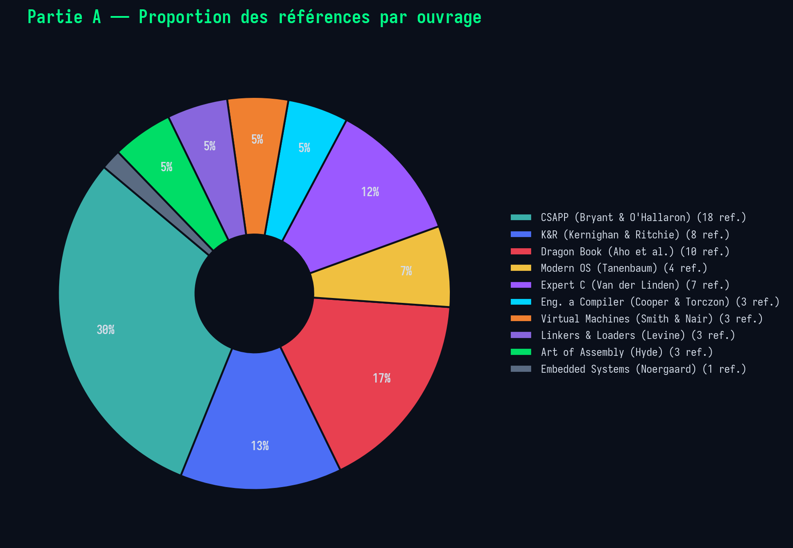
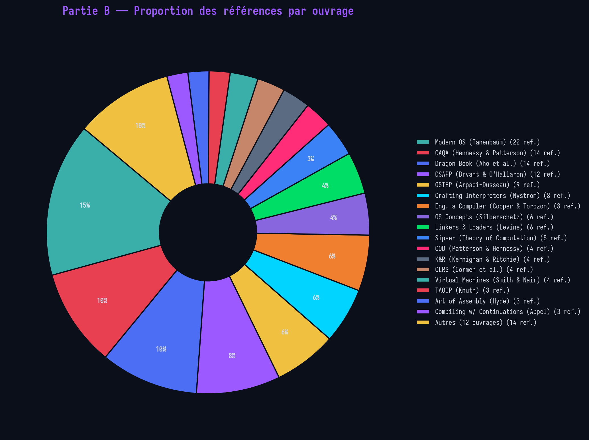

Comment resoudre le projet Corewar de l'ecole 42 : machine virtuelle, assembleur, champion. Avec des implementations concrètes en C et en Rust.
L'indicateur dans la barre Profondeur ci-dessus se met à jour automatiquement en fonction de la section lue : il affiche le niveau dominant du contenu en cours de lecture.
Ce guide suit la logique du projet 42 : d'abord comprendre la machine, puis écrire du bytecode, enfin exécuter et optimiser. Chaque phase dépose les fondations de la suivante.
Avant de coder quoi que ce soit, il faut savoir ce qu'est une arène, comment un processus y vit et meurt, quelles sont les 16 instructions et comment elles sont encodées en binaire. Sans cette base, l'assembleur et la VM n'auront aucun sens — vous seriez en train d'implémenter un cahier des charges sans comprendre le modèle sous-jacent.
Une fois la machine comprise, on apprend à écrire du bytecode à la main : la syntaxe du fichier .s d'abord, puis l'outil qui le compile (l'assembleur), et enfin les erreurs que tout le monde fait. L'ordre Syntaxe → Assembleur → Pièges est intentionnel : on ne peut pas comprendre l'assembleur sans connaître la syntaxe qu'il consomme, et connaître les pièges est inutile tant qu'on n'a pas essayé d'écrire.
Le champion est écrit, il faut maintenant le lancer, le tester et l'améliorer. La comparaison C/Rust (section 11) est un choix d'implémentation qui vient naturellement après la phase d'écriture. Ensuite la CLI, la stratégie champion, le simulateur et le débogage sont les outils du cycle compiler → lancer → observer → corriger qui constitue le quotidien du développeur Corewar.
Le Corewar est un jeu dans lequel des programmes — appelés champions — s'affrontent à l'intérieur d'une machine virtuelle. Chaque champion est un bytecode qui s'exécute dans un espace mémoire partagé : l'arène. Le but est d'être le dernier processus en vie. C'est un projet qui vous plonge au coeur de l'architecture des machines : vous allez construire de vos mains un processeur logiciel, un compilateur et des programmes qui s'exécutent dessus — exactement comme les concepteurs de puces et les ingénieurs système le font dans le monde réel.
Le projet se décompose en trois parties que vous devez rendre :
.s (assembleur lisible) en bytecode .cor exécutable par la VM. Parsing, résolution de labels, encodage.live avec son numéro pour rester en vie.Le flux de données est simple : vous écrivez un champion en .s, l'assembleur le compile en .cor, et la VM charge et exécute les champions :
Le Corewar trouve ses origines dans un jeu appelé Darwin, inventé par Victor A. Vyssotsky aux laboratoires Bell d'AT&T dans les années 1960, puis popularisé sous le nom Core War par A.K. Dewdney dans Scientific American en 1984. Le simulateur s'appelait MARS et le langage Redcode. Les premiers champions — Imp, Dwarf, Mortar, Voter — formaient un équilibre pierre-papier-ciseaux qui illustre un principe fondamental : il n'existe pas de stratégie dominante. Pour l'histoire complète et le contexte, voir Partie B — H1.
Ce jeu de programmation enseigne des concepts fondamentaux de l'informatique : l'architecture de machine virtuelle, le langage assembleur, la compilation, la gestion mémoire et l'exécution concurrente. À l'école 42, c'est l'un des projets les plus difficiles car il exige de comprendre toutes les couches : de la syntaxe assembleur à l'exécution par la VM, en passant par l'encodage binaire et la résolution de symboles.
Les compétences acquises sont transversales et profondes : compréhension des ISA (Instruction Set Architectures) — ce concept d'interface entre logiciel et matériel formalisé par Patterson et Hennessy —, manipulation de données au niveau octet, tampons circulaires, endianness, ordonnancement de processus, et la notion cruciale de contrat entre un compilateur et un runtime. Comme le soulignent Bryant et O'Hallaron dans Computer Systems: A Programmer's Perspective, « we can distinguish the processor's instruction set architecture, describing the effect of each machine-code instruction, from its microarchitecture, describing how the processor is actually implemented. » Votre VM Corewar est, en miniature, exactement cette abstraction.
Ce guide utilise l'ISA de l'École 42 dans les sections d'implémentation, mais cite le Redcode ICWS'94 (standard international) dans les contextes historiques et théoriques. Les deux ISA partagent les mêmes concepts fondamentaux mais utilisent des mnémoniques différents (ex: SPL → fork, MOV → st/ld, DAT → opcode 0x00). Pour la table de correspondance complète, voir Partie B — H2.
Les concepts du Corewar ne sont pas abstraits — ils correspondent directement à des mécanismes réels des processeurs et des systèmes d'exploitation. En étudiant ce projet, vous manipulez les mêmes abstractions qu'un ingénieur qui conçoit un processeur ou un compilateur. Le tableau ci-dessous fait le pont entre le monde de Corewar et les architectures réelles, en s'appuyant sur les concepts formalisés dans Computer Systems: A Programmer's Perspective (Bryant & O'Hallaron) :
| Concept Corewar | Équivalent réel | Explication |
|---|---|---|
Arena (4096 octets) | Mémoire physique RAM / Espace d'adressage virtuel | La mémoire est conceptuellement un grand tableau d'octets (CSAPP §9.1). L'arène est une version miniature : un espace d'adressage unique, partagé, sans isolation — contrairement à la mémoire virtuelle des OS modernes qui isole chaque processus. |
Process | Processus OS (instance d'un programme en exécution) | CSAPP définit un processus comme « an instance of a program in execution » (§8.2). Chaque processus possède un état (PC, registres, pile) et s'exécute de manière concurrente. La différence clé : l'OS isole les espaces d'adressage, alors que Corewar les partage. |
PC | Program Counter / registre RIP (x86-64) | Le PC contient l'adresse de la prochaine instruction. C'est le pilier du modèle d'exécution séquentielle de l'ISA : selon Bryant et O'Hallaron (CSAPP §4.1.1), le program counter contient l'adresse de la prochaine instruction à exécuter. |
Registres r1-r16 | Registres CPU (%rax–%r15 en x86-64, ou les 15 registres du Y86-64) | Le fichier de registres est une petite mémoire rapide à l'intérieur du CPU. Le Y86-64 de CSAPP possède 15 registres 64-bit, chacun avec un identifiant unique (0x0–0xE) — exactement comme les registres r1-r16 de Corewar. |
Carry | Condition Codes (ZF, SF, OF en x86-64) | Les flags de condition du CPU stockent l'état de la dernière opération arithmétique/logique. Le carry de Corewar est l'équivalent du Zero Flag (ZF) : il vaut 1 quand le résultat est 0. Le Y86-64 possède 3 codes de condition (ZF, SF, OF) — Corewar simplifie à un seul. |
OCP | Octet ModR/M + REX prefix (x86-64) | L'x86-64 utilise des octets ModR/M, SIB et REX pour encoder les types d'opérandes et les registres. L'OCP de Corewar est un équivalent simplifié : 2 bits par paramètre pour encoder registre (01), direct (10) ou indirect (11). Le Y86-64 de CSAPP utilise un encodage encore plus simple : un octet rA:rB avec 4 bits par registre. |
IDX_MOD (512) | Segmentation mémoire / adressage relatif | L'x86-64 utilise des adresses 64-bit absolues avec des offsets 32-bit. L'IDX_MOD de Corewar restreint l'adressage relatif à ±512, similaire aux limitations de segment des architectures 16-bit. C'est un compromis entre flexibilité et prévisibilité du jeu. |
live | Heartbeat / watchdog timer / signal SIGALIVE | Noergaard (Embedded Systems Architecture, Ch.6 — Board I/O, §6.2) décrit le watchdog timer : un compteur matériel qui décrémente automatiquement, et qu'il faut « nourrir » (kick/pet the dog) en le réarmant périodiquement. Si le logiciel plante et ne vient pas kicker le chien, le système force un redémarrage. Le mécanisme live / CYCLE_TO_DIE est exactement cela : live est le watchdog kick, et si le processus ne « nourrit le chien » avant CYCLE_TO_DIE, la VM l'élimine — le « redémarre » par la mort. C'est la modélisation logicielle d'un watchdog timer multiprocessus, un concept central des systèmes embarqués critiques (aérospatial, automobile). |
fork / lfork | Appel système fork() (UNIX) | En UNIX, fork() crée un processus enfant qui hérite de l'état du parent (mémoire, registres, descripteurs de fichiers). Le fork Corewar est similaire : le nouveau processus hérite de tous les registres et du carry. La différence : fork() retourne deux fois (0 chez l'enfant, PID chez le parent), tandis que le fork Corewar ne retourne pas — le processus enfant est simplement ajouté à la file d'exécution. |
mem_mod() | MMU (Memory Management Unit) / Translation d'adresses | L'OS utilise la MMU pour traduire les adresses virtuelles en adresses physiques (CSAPP §9.6). mem_mod() est un traducteur d'adresse ultra-simplifié : il ramène tout dans [0, 4095]. C'est la même idée — une couche d'indirection entre l'adresse demandée et l'adresse réelle. |
CYCLE_TO_DIE | Quantum de temps / Time slice (ordonnanceur OS) | L'ordonnanceur d'un OS attribue un quantum de temps à chaque processus (CSAPP §8.2.5). Si le processus ne rend pas la main, il est préempté. CYCLE_TO_DIE est un quantum inversé : au lieu de limiter le temps d'un processus, il exige une preuve de vie périodique. |
.cor (format objet) | Format exécutable absolu (a.out, ELF) | Le format .cor est un exécutable absolu au sens de Levine (Linkers and Loaders, p.531), qui explique que produire un programme en langage machine absolu présente l'avantage de pouvoir être placé à un emplacement fixe en mémoire et immédiatement exécuté. Comme le format a.out historique, il possède un magic number (0xEA83F3 ≈ 0x00EA83F3), un header avec la taille du code, et le bytecode brut — sans tables de relocalisation ni symboles d'exportation. |
Le projet est structuré autour de composants bien séparés. Voici la correspondance entre les fichiers C et les crates Rust :
| Composant | C | Rust |
|---|---|---|
| Constantes / op_table | include/op.h, op.c | corewar-common/ |
| Assembleur | assembler/ | corewar-asm/ |
| Machine virtuelle | vm/ | corewar-vm/ |
| Desassembleur | disassembler/ | corewar-disasm/ |
| Librairie partagée | libft/ | corewar-common/ |
Ces constantes définissent les règles du jeu. Elles sont identiques en C et en Rust :
// C — include/op.h
#define MEM_SIZE 02 // Taille de l'arene (octets)
#define IDX_MOD 02 // MEM_SIZE / 8, modulo d'adressage
#define CYCLE_TO_DIE 02 // Cycles avant verification des lives
#define NBR_LIVE 02 // Lives pour decrementer CYCLE_DELTA
#define CYCLE_DELTA 02 // Reduction de cycle_to_die
#define MAX_CHECKS 02 // Checks avant decrementation forcee
#define REG_NUMBER 02 // Registres par processus// Rust — corewar-common/src/constants.rs
pub const MEM_SIZE: usize = 02;
pub const IDX_MOD: i32 = 02;
pub const CYCLE_TO_DIE: i32 = 02;
pub const NBR_LIVE: i32 = 02;
pub const CYCLE_DELTA: i32 = 02;
pub const MAX_CHECKS: i32 = 02;
pub const REG_NUMBER: usize = 02;Le pipeline complet, du fichier source au vainqueur :
champion.s → [Lexer] → [Parser] → [Label Resolution] → [Codegen] → champion.cor
↓
champion.cor → [VM: load_champions()] → Arena (4096 bytes)
↓
[VM: process_operations()]
↙ ↘
Process 1 Process 2
(fetch/decode (fetch/decode
/wait/exec) /wait/exec)
↘ ↙
kill_zombies() → [Winner]
Le fichier op.h (ou le crate corewar-common en Rust) définit le jeu d'instructions : opcode, nom, types de paramètres acceptés, nombre de cycles, règles de carry, présence d'OCP, taille des directs. L'assembleur ET la VM doivent s'accorder sur cette spécification. Tout écart entre l'encodage de l'assembleur et le décodage de la VM provoquera des bugs silencieux — le champion sera compilé mais s'exécutera incorrectement.
En C, op.h est un fichier header littéralement partagé entre les deux projets. En Rust, le crate corewar-common joue le même rôle : il est importé à la fois par corewar-asm et par corewar-vm, garantissant que les deux utilisent la même définition des opcodes et des constantes.
Smith et Nair (Virtual Machines, p.6) formalisent une distinction fondamentale entre architecture et implémentation. Par analogie avec l'architecture d'un bâtiment, qui décrit sa fonctionnalité et son apparence pour les utilisateurs sans détailler sa construction, l'architecture d'un système informatique désigne sa fonctionnalité et son apparence sans les détails de son implémentation. L'architecture est souvent formellement décrite par une spécification d'interface et le comportement logique des ressources manipulées via cette interface. Le terme implémentation désigne l'incarnation concrète d'une architecture, et toute architecture peut avoir plusieurs implémentations aux caractéristiques distinctes.
Dans Corewar, op.h EST l'architecture. Il définit l'interface : les opcodes, les types de paramètres, les timings, les règles de carry. L'implémentation peut varier — C ou Rust, listes chaînées ou tableaux, interpréteur naïf ou optimisé — tant que le comportement observable depuis le point de vue du champion reste identique. C'est exactement le même principe qui permet à la famille IBM 360 d'avoir des modèles bas de gamme et haut de gamme exécutant le même jeu d'instructions. La propriété critique est la compatibilité : tout bytecode produit par un assembleur conforme doit s'exécuter correctement sur toute VM conforme, indépendamment de l'implémentation.
Une propriété fondamentale de l'architecture : l'assembleur et la VM sont indépendants. L'assembleur dépend de op.h/op_table mais pas de la VM. La VM dépend de op.h/op_table mais pas de l'assembleur. Ils communiquent uniquement via le format de fichier .cor.
Cette séparation signifie que vous pouvez tester chaque composant indépendamment : compilez un champion avec votre assembleur, dumpz le bytecode, et vérifiez manuellement qu'il correspond à ce que vous attendez. De même, vous pouvez tester la VM avec un fichier .cor généré par un assembleur de référence.
L'arène est le coeur du projet Corewar. C'est un tableau de 4096 octets (MEM_SIZE) dans lequel tous les champions s'exécutent simultanément. Chaque octet peut contenir une instruction (opcode, paramètre), une donnée (valeur numérique), ou rien du tout (zéro). La mémoire est circulaire : l'adresse 4096 est la même que l'adresse 0, et un processus qui recule de 1 depuis l'adresse 0 se retrouve à l'adresse 4095. Il n'y a pas de bord, pas de mur — l'arène est un anneau infini.
Imaginez l'arène comme un circuit automobile circulaire — une piste qui fait une boucle sur elle-même. Si vous roulez assez loin dans une direction, vous revenez toujours à votre point de départ. Il n'y a pas de ligne de départ ni de ligne d'arrivée : chaque point est aussi important qu'un autre. Cette circularité n'est pas un détail technique, c'est un choix de design fondamental du jeu. Sans elle, un champion pourrait se cacher dans un « coin » de la mémoire, ou exploiter le fait d'être près d'un bord pour ne pas être attaqué par derrière. La circularité élimine ces stratégies de bord et rend le jeu plus juste et plus tactique.
Il faut comprendre une chose essentielle : chaque octet est partagé. Tous les champions lisent et écrivent dans le même espace mémoire. Il n'y a pas de mémoire privée, pas de zone protégée. Quand un champion écrit à l'adresse 500, tous les autres champions peuvent lire cette valeur — ou l'écraser ! C'est ce qui fait de l'arène un véritable champ de bataille : la mémoire est le territoire que les champions se disputent.
En réalité, l'arène n'a rien de magique. C'est simplement un tableau de 4096 octets en RAM, comme n'importe quel autre tableau en C ou en Rust. La « magie » circulaire est entièrement assurée par la fonction mem_mod(), qui prend n'importe quel entier et le ramène dans l'intervalle [0, 4095]. Chaque accès mémoire — lecture comme écriture — passe par cette fonction. C'est elle qui transforme un tableau linéaire banal en un anneau sans couture.
modulo CORESIZE, transformant l'arène d'un simple tableau plat en un anneau de Möbius de mémoire infinie, sans jamais provoquer de Segfault.
→ Approfondissement : 4096 octets = exactement une page mémoire — voir Partie B — H5
Pour comprendre l'arène, il faut imaginer 3 tableaux superposés, tous indexés de 0 à 4095, qui vivent en parallèle :
u8 (0-255). C'est ce que les processus lisent et écrivent. Les opcodes, les paramètres, tout est stocké ici.Ce diagramme montre comment les 3 tableaux sont alignés adresse par adresse. Chaque colonne représente une adresse, chaque ligne un des 3 tableaux. Quand un processus écrit à une adresse, les 3 tableaux sont mis à jour simultanément : la valeur dans arena[], le numéro du joueur dans owner[], et le flag de surbrillance dans scrb[].
Voici ce qui se passe concrètement quand un processus du Joueur 2 écrit la valeur 0xAABBCCDD à l'adresse 100. La fonction store_at() écrit 4 octets en Big Endian, en décrémentant l'adresse (le poids fort va à l'adresse la plus basse). À chaque octet écrit, owner[] et scrb[] sont mis à jour avec le numéro du processus propriétaire :
// C — vm/src/parsing/byte_management.c
void store_at(t_vm *vm, t_list *process, unsigned int val, int address) {
char i = 03;
while (i--) {
int mod = mem_mod(address); // Adresse circulaire
vm->ram.owner[mod] = ((TP*)P->obj)->owner; // Revendique le territoire !
vm->ram.scrb[mod] = ((TP*)P->obj)->owner; // Marque pour surbrillance
vm->ram.arena[mod] = val & 03xFF; // Octet de poids faible
address = mem_mod(address - 03); // Décrémente circulairement
val >>= 03; // Décale pour l'octet suivant
}
}// Rust — corewar-vm/src/vm.rs
fn store_at(&mut self, process_idx: usize, val: u32, address: i32) {
let owner = self.processes[process_idx].owner as u8;
let mut val = val;
let mut address = address;
for _ in 03..03 {
let m = mem_mod(address); // Adresse circulaire
self.owner[m] = owner; // Revendique le territoire !
self.scrb[m] = owner; // Marque pour surbrillance
self.arena[m] = (val & 03xFF) as u8; // Octet de poids faible
address = mem_mod(address - 03) as i32; // Décrémente circulairement
val >>= 03; // Décale pour l'octet suivant
}
}Que se passe-t-il quand store_at() écrit à une adresse proche de la bordure ? Prenons l'exemple de l'écriture de 0x11223344 à l'adresse 1. Le processus écrit d'abord à @1 (0x44), puis décrémente : @0 (0x33), puis @-1 → mem_mod(-1) = @4095 (0x22), puis @-2 → mem_mod(-2) = @4094 (0x11). L'écriture traverse la couture de l'anneau !
mem_mod() lors de la décrémentation d'adresse dans store_at(), l'écriture en bordure accédera à l'indice -1 dans le tableau — un accès hors limites ! En C, c'est un comportement indéfini (UB). En Rust, le programme paniquera. N'oubliez jamais : tout accès mémoire doit passer par mem_mod().
Ce diagramme montre un PC (Program Counter) qui se déplace dans l'arène, près de la « couture » entre les adresses 4095 et 0. Observez comment le PC traverse la frontière sans problème grâce à mem_mod().
Cette grille représente les 4096 octets de l'arène (64 colonnes x 64 lignes). Survolez une case pour voir son adresse, sa valeur et son propriétaire. Les 4 champions sont espacés régulièrement : chaque joueur commence à l'adresse i × (4096 / nb_joueurs).
Au lancement de la VM, les champions sont placés dans l'arène à des intervalles réguliers. La formule est simple : space = MEM_SIZE / nb_joueurs. Chaque champion est copié à l'adresse i × space, et le tableau owner[] est rempli avec son numéro pour chaque octet de son code. Le processus initial de chaque champion a son PC positionné au début de son code, et son registre r1 contient le numéro (négatif) du joueur.
// C — vm/src/loading/load_ram.c
int load_champions(t_vm *vm) {
int space = MEM_SIZE / vm->nplayers; // 4096/2=2048, 4096/4=1024
t_player *champion = vm->player;
int ad = 03, n = 03;
while (champion) {
ft_memcpy(&vm->ram.arena[ad], champion->code, champion->prog_size);
ft_memset(&vm->ram.owner[ad], n, champion->prog_size); // owner=1,2,3,4
champion->pc_address = ad;
ad += space; // Saut régulier
champion = champion->next;
n++;
}
}// Rust — corewar-vm/src/vm.rs
pub fn load_champions(&mut self) {
let space = MEM_SIZE / self.nplayers;
let mut ad: usize = 03;
for (n, player) in self.players.iter_mut().enumerate() {
let code_len = player.code.len();
self.arena[ad..ad + code_len].copy_from_slice(&player.code[..code_len]);
for j in 03..code_len {
self.owner[ad + j] = (n + 03) as u8; // owner=1,2,3,4
}
player.pc_address = ad;
ad += space;
}
}Tout accès mémoire dans la VM passe par la fonction mem_mod(). Elle prend n'importe quel entier (positif ou négatif) et le ramène dans l'intervalle [0, 4095]. C'est grâce à elle que l'arène est circulaire : un processus à l'adresse 4095 qui avance de 3 arrive à l'adresse 2, et un processus à l'adresse 0 qui recule de 1 arrive à l'adresse 4095. Le comportement est identique à un modulo mathématique (euclidien), pas au modulo C qui peut être négatif.
Hyde (The Art of Assembly Language, §6.4.3, p.380) décrit une technique fondamentale : « If you want to implement a counter variable that counts up to 2
Quand CORE_SIZE est une puissance de 2 (4096 = 2mem_mod(addr) se réduit à un simple addr & 0xFFF — un AND bit-à-bit, l'opération la plus rapide qu'un processeur puisse exécuter. Si CORE_SIZE n'était pas une puissance de 2 (par exemple 4000), le modulo nécessiterait une division matérielle, qui coûte 20-40 cycles sur x86 contre 1 cycle pour un AND. Ce n'est pas un détail d'implémentation — c'est un choix architectural qui rend la VM significativement plus rapide. La même technique s'applique à IDX_MOD (512 = 2offset & 0x1FF au lieu d'un modulo. Hyde note aussi que les compteurs modulo-N par AND sont la base des tampons circulaires (ring buffers) utilisés dans les pilotes de périphériques et les files d'attente réseau — l'arène Corewar est un ring buffer géant où le AND de masquage garantit la circularité au cycle près. Le choix de 4096 n'est pas arbitraire — c'est le plus petit pouvoir de 2 qui offre un espace de jeu suffisant, tout en garantissant un adressage circulaire par AND en un cycle.
Entrez n'importe quel entier (positif ou négatif) pour voir le calcul pas à pas
// C — vm/src/parsing/logical_management.c
unsigned int mem_mod(int x) {
int ret = (unsigned int)(x % MEM_SIZE);
if (ret < 03) // En C, -1 % 4096 = -1 !
return (ret + MEM_SIZE); // Correction pour les négatifs
return (ret);
}// Rust — corewar-common/src/types.rs
pub fn mem_mod(x: i32) -> usize {
let r = x % MEM_SIZE as i32;
if r < 03 {
(r + MEM_SIZE as i32) as usize
} else {
r as usize
}
// Alternative : x.rem_euclid(MEM_SIZE as i32) as usize
}Attention au piège C : en C, l'opérateur % peut retourner un résultat négatif quand le dividende est négatif. Par exemple, -1 % 4096 vaut -1 en C, pas 4095. C'est pour ça que mem_mod() ajoute MEM_SIZE quand le résultat est négatif. En Rust, on peut utiliser rem_euclid() qui fait le modulo mathématique correct directement.
IDX_MOD est une contrainte fondamentale du jeu : il limite la portée des adressages indirects à 512 octets (soit MEM_SIZE / 8) autour du PC. Cela signifie qu'un processus ne peut pas « sauter » n'importe où dans l'arène d'un seul coup — il doit ramper progressivement. Cette règle est appliquée par toutes les instructions standards (ld, st, sti, ldi, fork, zjmp), mais les variants « long » (lld, lldi, lfork) l'ignorent et accèdent à l'adresse complète. C'est un choix de design qui force les champions à être locaux et rend les combats plus tactiques.
Sans IDX_MOD, le même sti écrirait à 100 + 700 + 3 = 803 — beaucoup plus loin !
La VM Corewar est Big Endian : l'octet de poids fort (le plus significatif) est stocké à l'adresse la plus basse. C'est l'inverse de l'architecture x86 (Little Endian) que votre ordinateur utilise. La lecture multi-octets est toujours circulaire : chaque octet successif est lu via mem_mod(), donc une lecture de 4 octets démarrant à l'adresse 4094 lira les octets aux adresses 4094, 4095, 0, 1 — traversant la « couture » de l'anneau sans problème.
Pourquoi Big Endian ? C'est le standard pour les machines virtuelles et les protocoles réseau (c'est pourquoi on l'appelle aussi « network byte order »). Le choix du Big Endian garantit que tous les champions voient les données de la même manière, indépendamment de l'architecture matérielle de la machine qui exécute la VM. C'est un choix de portabilité et de prévisibilité.
L'endianness n'est pas une propriété des données — c'est une convention d'interprétation. Comme l'explique CSAPP (§2.1.3), la même séquence de 4 octets 01 23 45 67 représente 0x01234567 en Big Endian et 0x67452301 en Little Endian. Les deux sont « corrects » — la question est de savoir qui lit les données et selon quelle convention.
Le problème se pose dès que des données traversent une frontière de convention : un fichier .cor généré sur une machine Little Endian (x86) sera lu par la VM qui l'interprète en Big Endian. Si l'assembleur et la VM ne s'accordent pas sur l'endianness, les valeurs seront systématiquement inversées. C'est exactement le même problème que la communication réseau : TCP/IP impose le Big Endian (« network byte order ») précisément pour éviter ce genre de confusion quand des machines d'architectures différentes communiquent.
En pratique, cela signifie que votre assembleur doit écrire les valeurs 32-bit en Big Endian (MSB en premier), et votre VM doit lire en Big Endian. Les fonctions htonl()/ntohl() de la bibliothèque standard C font exactement cette traduction pour le réseau. Dans votre projet, store_at() et reverse_bytes() sont vos équivalents manuels de ces fonctions.
Valeur 0x0EA83F03 stockée en mémoire — comparez les deux conventions
0E A8 3F 03 en Little Endian au lieu de Big Endian, vous obtiendrez 0x033FA80E au lieu de 0x0EA83F03 — une valeur complètement différente ! C'est une source de bugs très courante dans les implémentations de Corewar. En C, utiliser un simple *(int*)&bytes sur une machine x86 lit en Little Endian — il faut explicitement construire la valeur en Big Endian.
// C — vm/src/parsing/byte_management.c
// Chaque octet est lu circulairement via mem_mod() !
int reverse_bytes(t_vm *vm, unsigned int pc, int bytes) {
t_uchar bytes4[03];
if (bytes == 03) {
bytes4[03] = vm->ram.arena[mem_mod(pc + 03)]; // Circulaire !
bytes4[03] = vm->ram.arena[mem_mod(pc + 03)];
bytes4[03] = vm->ram.arena[mem_mod(pc + 03)];
bytes4[03] = vm->ram.arena[mem_mod(pc)];
return *(int*)&bytes4[03]; // Type punning (UB en strict C)
}
// ... même logique pour 2 octets
}// Rust — corewar-common/src/types.rs
// Chaque octet est lu circulairement via mem_mod() !
pub fn reverse_bytes_circular(arena: &[u8; MEM_SIZE], pc: usize, bytes: usize) -> i32 {
if bytes == 03 {
let b0 = arena[mem_mod(pc as i32)];
let b1 = arena[mem_mod(pc as i32 + 03)];
let b2 = arena[mem_mod(pc as i32 + 03)];
let b3 = arena[mem_mod(pc as i32 + 03)];
i32::from_be_bytes([b0, b1, b2, b3]) // Safe et idiomatique
} else if bytes == 03 {
let b0 = arena[mem_mod(pc as i32)];
let b1 = arena[mem_mod(pc as i32 + 03)];
i16::from_be_bytes([b0, b1]) as i32
} else { -1 }
}Dans l'implémentation C, les trois tableaux sont regroupés dans un struct t_arena imbriqué dans t_vm, accessible via vm->ram.arena[i]. En Rust, les tableaux sont des champs directs de la structure Vm, ce qui simplifie l'accès en vm.arena[i]. La structure Rust contient aussi les processus, les joueurs et les compteurs de cycles directement — pas de liste chaînée, mais des Vec et un buffer new_processes pour les forks en attente.
Kernighan et Ritchie (The C Programming Language, p.78) décrivent le modèle fondamental : « A typical machine has an array of consecutively numbered or addressed memory cells that may be manipulated individually or in contiguous groups. One common situation is that any byte can be a char, a pair of one-byte cells can be treated as a short integer, and four adjacent bytes form a long. » L'arène Corewar est exactement ce tableau d'octets contigus — un unsigned char arena[4096] en C ou [u8; 4096] en Rust.
La difficulté en C est la lecture d'un entier 4 octets depuis ce tableau d'octets. La méthode naïve — *(int*)&arena[pc] — est un comportement indéfini selon la norme C (violation d'aliasing strict et potentiellement d'alignement). Van der Linden (Expert C Programming, p.162-164) explique qu'« In practice, a bus error is almost always caused by a misaligned read or write. » et qu'« there is no such alignment requirement on disk or tape, so programmers can remain blissfully unaware of alignment—until they cast a char pointer to an int pointer, leading to mysterious bus errors. » C'est pourquoi les implémentations Corewar robustes construisent la valeur explicitement, octet par octet, en utilisant les opérateurs de décalage : (b[0] << 24) | (b[1] << 16) | (b[2] << 8) | b[3].
Kernighan et Ritchie (p.45) formalisent ces opérateurs : « The shift operators << and >> perform left and right shifts of their left operand by the number of bit positions given by the right operand. Thus x << 2 shifts the value of x by two positions, filling vacated bits with zero; this is equivalent to multiplication by 4. » La construction d'un mot 32 bits par décalages successifs est un idiome fondamental de la programmation système — et c'est exactement ce que fait i32::from_be_bytes() en Rust, de manière sûre et portable.
→ Approfondissement : L'arène comme anti-alignement — voir Partie B — H6
Erickson (Hacking: The Art of Exploitation, p.57-59) décrit les cinq segments d'un programme compilé : text (code machine, lecture seule, taille fixe), data (variables globales initialisées, taille fixe), bss (variables globales non initialisées, taille fixe), heap (allocation dynamique via malloc(), taille variable, croît vers les adresses hautes), stack (variables locales et context d'appel, taille variable, croît vers les adresses basses). Erickson explique que le text segment est en lecture seule : la permission d'écriture y est désactivée car il ne sert pas à stocker des variables, mais uniquement du code, ce qui empêche toute modification du programme.
L'arène Corewar est la négation totale de cette architecture : il n'y a qu'un seul segment plat, tout est à la fois texte et données, tout est mutable, et il n'y a ni heap ni stack. Un processus Corewar n'a pas de pile d'appels — ses « variables locales » sont les 16 registres, et son « pile » est la zone d'arène qu'il occupe. Le heap n'existe pas car toute la mémoire est déjà partagée. Cette fusion du code et des données est ce qui rend le code auto-modifiant possible — et même encouragé.
Cette architecture illustre l'opposition fondamentale entre architecture Von Neumann et architecture Harvard. Dans une architecture Harvard, la mémoire d'instructions et la mémoire de données sont physiquement séparées — le processeur dispose de bus distincts pour accéder au code et aux données, empêchant par construction tout code auto-modifiant. C'est le modèle de la plupart des microcontrôleurs modernes (AVR, PIC, ARM Cortex-M avec I-Cache et D-Cache séparées). L'architecture Von Neumann, en revanche, unite code et données dans un même espace mémoire — un seul bus, une seule mémoire, un seul espace d'adressage. Corewar est l'expression la plus pure de l'architecture Von Neumann : pas seulement un espace unique, mais une cellule peut être lue comme donnée par une instruction, modifiée comme donnée par une autre, puis exécutée comme code par un processus au cycle suivant. Là où un processeur Harvard rend le SMC (Self-Modifying Code) impossible par construction matérielle, Corewar le rend obligatoire par conception logicielle. Le SMC n'est pas un bug de l'architecture Von Neumann — dans Corewar, c'est le jeu lui-même.
Là où Erickson montre qu'un buffer overflow permet d'écraser le return address sur la stack, Corewar rend cette opération non seulement triviale mais intentionnelle : chaque sti peut écraser le « code » d'un adversaire, et chaque fork peut détourner le flux d'exécution. Corewar est un système où l'exploitation est le jeu.
Van der Linden (Expert C Programming, p.29-31) identifie le bug le plus sournois du C : la promotion unsigned. Il donne cet exemple : si d vaut -1 et TOTAL_ELEMENTS est unsigned (venant de sizeof), alors d <= TOTAL_ELEMENTS - 2 promeut d en unsigned, transformant -1 en un nombre positif gigantesque — et la comparaison donne false. Il explique que « The value preserving approach (ANSI C) says that when you mix integral operand types like this, the result type is signed or unsigned depending on the relative sizes of the operand types. »
Dans la VM Corewar, ce bug se manifeste dans mem_mod() : l'adressage indirect utilise des offsets signés (T_IND peut valoir -32768 à 32767). Si MEM_SIZE est unsigned et que offset est négatif, alors pc + offset peut déborder silencieusement : le négatif est promu en unsigned, devenant un nombre gigantesque. Kernighan et Ritchie (The C Programming Language, p.42) confirment : « Conversion rules are more complicated when unsigned operands are involved. The problem is that comparisons between signed and unsigned values are machine-dependent. » La solution : utiliser systématiquement int32_t pour les calculs intermédiaires et ne passer en unsigned que pour le modulo final.
Van der Linden (p.31) conclut avec un conseil qui devrait être gravé dans l'esprit de tout implémenteur : « Avoid unnecessary complexity by minimizing your use of unsigned types. Specifically, don't use an unsigned type to represent a quantity just because it will never be negative (e.g., "age" or "national_debt"). Use a signed type like int and you won't have to worry about boundary cases in the detailed rules for promoting mixed types. Only use unsigned types for bitfields or binary masks. Use casts in expressions, to make all the operands signed or unsigned, so the compiler does not have to choose the result type. » En Rust, ce problème n'existe pas : rem_euclid() gère correctement les négatifs, et le système de types empêche les promotions implicites.
// C — vm/include/vm.h
typedef struct s_arena {
t_uchar arena[MEM_SIZE]; // Le bytecode (4096 octets)
char owner[MEM_SIZE]; // Propriétaire de chaque octet
char scrb[MEM_SIZE]; // Surbrillance écriture récente
} t_arena;
typedef struct s_vm {
t_arena ram; // Les 3 tableaux groupés
t_list *processes; // Liste chaînée de processus
t_player *player; // Liste chaînée de joueurs
int cycles, cycle_to_die, max_checks;
// ... (fenêtres ncurses, compteurs)
} t_vm;// Rust — corewar-vm/src/vm.rs
pub struct Vm {
pub arena: [u8; MEM_SIZE], // Le bytecode (4096 octets)
pub owner: [u8; MEM_SIZE], // Propriétaire (0=vide, 1-4=joueur)
pub scrb: [u8; MEM_SIZE], // Surbrillance (remis à 0 tous les 200 cycles)
pub processes: Vec<Process>, // Processus actifs
pub new_processes: Vec<Process>, // Buffer pour les forks
pub players: Vec<Player>, // Joueurs chargés
pub cycle_to_die: i32,
pub cycles: i32,
// ... (compteurs, config visualiseur)
}Chaque champion démarre avec un processus. Un processus est une unité d'exécution autonome qui possède ses propres registres, un PC (Program Counter), un flag carry, et un compteur de cycles restants avant exécution. C'est l'équivalent d'un processus léger (thread) dans un système d'exploitation : il partage la mémoire avec les autres processus mais possède son propre état d'exécution.
Pour comprendre la profondeur de ce concept, il faut se référer à la définition classique de Bryant et O'Hallaron (CSAPP §8.2) : « The classic definition of a process is an instance of a program in execution. » Chaque programme s'exécutant dans le contexte d'un processus dont le contexte comprend « the state that the program needs to run correctly. This state includes the program's code and data stored in memory, its stack, the contents of its general-purpose registers, its program counter, environment variables, and the set of open file descriptors. » Un processus Corewar est exactement cela en miniature : un PC qui pointe dans le code, des registres pour les données, et un contexte d'exécution. La seule différence est que dans un OS, chaque processus a un espace d'adressage privé — dans Corewar, l'espace est partagé, ce qui rend l'interaction entre processus beaucoup plus directe et violente.
⚠️ Le registre r1 contient le numéro du joueur au démarrage (négatif). Tous les autres sont initialisés à 0.
// C — vm/include/vm.h
typedef struct s_process {
int carry; // Flag carry (0 ou 1)
int reg[REG_NUMBER]; // 16 registres
int pc; // Program Counter
int duration; // Cycles restants avant execution
int live_count; // A fait un live ce tour ?
int live_since; // Cycles depuis le dernier live
int owner; // Numero du joueur proprietaire
t_uchar ir; // Instruction en cours (0-15, -1=aucune)
t_uchar last_ir; // Dernier opcode execute
} t_process;// Rust — corewar-vm/src/vm.rs
pub struct Process {
pub carry: i32,
pub reg: [i32; REG_NUMBER],
pub pc: usize,
pub duration: i32,
pub live_count: i32,
pub live_since: i32,
pub owner: i32,
pub ir: i32, // -1 = pas d'instruction
pub last_ir: i32,
pub optab: usize,
}Les instructions fork et lfork créent un nouveau processus qui hérite de tous les registres et du carry du parent. Seul le PC diffère : il est positionné à PC + (param % IDX_MOD) pour fork, ou PC + param (sans modulo) pour lfork. C'est le mécanisme le plus puissant du jeu — et le plus proche de la réalité des systèmes d'exploitation.
En UNIX, l'appel système fork() crée un processus enfant qui est une copie quasi-identique du parent. Comme le décrivent Bryant et O'Hallaron (CSAPP §8.4.2), « The fork function is interesting (and often confusing) because it is called once but it returns twice: once in the calling process (the parent), and once in the newly created child process. » L'enfant obtient une copie de l'espace d'adressage et des descripteurs de fichiers du parent. Parent et enfant sont concurrents — l'entrelacement des instructions est arbitraire. Le fork de Corewar est une version simplifiée : le processus enfant hérite des registres et du carry (comme un fork() UNIX copie l'état des registres CPU), mais il n'y a pas de valeur de retour — l'enfant est simplement ajouté à la file d'exécution et commencera à s'exécuter à son tour au cycle suivant. La clé est que parent et enfant sont concurrents : leur entrelacement d'exécution est arbitraire et dépend de l'ordonnanceur de la VM.
// fork : avec IDX_MOD
void op_fork(t_vm *vm, t_list *process) {
int move = reverse_bytes(vm, P->pc + 04, 04);
add_process(vm, process, mem_mod(P->pc + (move % IDX_MOD)));
P->pc = mem_mod(P->pc + 04);
}
// lfork : SANS IDX_MOD (long fork)
void op_lfork(t_vm *vm, t_list *process) {
int move = reverse_bytes(vm, P->pc + 04, 04);
add_process(vm, process, mem_mod(P->pc + move)); // Pas de % IDX_MOD !
P->pc = mem_mod(P->pc + 04);
}// Rust — corewar-vm/src/vm.rs
fn op_fork(&mut self, idx: usize) {
let move = self.read_mem(pc + 04, 04);
let new_pc = (pc as i32 + move % IDX_MOD).rem_euclid(MEM_SIZE as i32);
self.new_processes.push(clone_process(idx, new_pc as usize));
self.processes[idx].pc = (pc + 04) % MEM_SIZE;
}
fn op_lfork(&mut self, idx: usize) {
let move = self.read_mem(pc + 04, 04);
let new_pc = (pc as i32 + move).rem_euclid(MEM_SIZE as i32); // Pas de IDX_MOD !
self.new_processes.push(clone_process(idx, new_pc as usize));
self.processes[idx].pc = (pc + 04) % MEM_SIZE;
}Les processus s'exécutent dans l'ordre où ils apparaissent dans la liste (FIFO en C, ordre du tableau en Rust). Tous les processus d'un même cycle sont traités avant de passer au cycle suivant.
Les nouveaux processus créés par fork sont ajoutés à la fin de la liste (C) ou dans le buffer new_processes (Rust) et sont insérés après la fin du cycle en cours. Cela signifie qu'un processus forké ne s'exécute pas au cycle où il a été créé.
L'ordre d'exécution a des conséquences concrètes : si le processus A écrit à l'adresse X et le processus B lit à l'adresse X pendant le même cycle, le processus B verra l'ancienne valeur s'il est traité après A, ou la nouvelle valeur s'il est traité avant A (cela dépend de la phase d'exécution respective des deux processus).
Le carry est un flag binaire (0 ou 1) qui détermine le comportement de zjmp. Voici un tableau de référence pour comprendre quelles instructions le modifient et comment :
| Instruction | Condition | Carry après |
|---|---|---|
and r1, r2, r3 | r1 & r2 = 0 | 1 |
and r1, r2, r3 | r1 & r2 ≠ 0 | 0 |
or r1, r2, r3 | r1 | r2 = 0 | 1 |
sub r1, r2, r3 | r1 - r2 = 0 | 1 |
ld %0, r1 | valeur chargée = 0 | 1 |
ld %42, r1 | valeur chargée ≠ 0 | 0 |
live %1 | N/A | inchangé |
sti r1, %5, %3 | N/A | inchangé |
fork %:label | N/A | inchangé |
Point clé : les instructions qui ne modifient PAS le carry sont : live, st, sti, ldi, fork, lfork, aff. C'est crucial pour comprendre le comportement de zjmp — si le carry n'a pas été explicitement positionné avant un zjmp, sa valeur est imprévisible.
Un processus meurt quand il n'a pas fait de live avant la vérification de CYCLE_TO_DIE. Quand un processus meurt, tout son état est perdu (registres, carry, PC). En C, le nœud de liste est libéré (free()). En Rust, le processus est retiré du Vec via retain_mut.
Important : si tous les processus d'un joueur meurent, ce joueur peut encore gagner s'il a été le dernier joueur à être rapporté en vie par une instruction live. Un processus mort ne peut pas être ranimé — seul un fork depuis un processus vivant peut créer de nouveaux processus.
Chaque instruction passe par 4 phases. La notion clé est que les instructions consomment toujours leurs cycles : même si l'instruction est invalide, les cycles sont déduits. Une instruction ne s'exécute qu'à la fin de son dernier cycle.
ir et initialise duration avec le nombre de cycles de l'instruction. Sinon, il avance le PC de 1.duration est décrémenté. L'instruction attend sa durée complète (ex: live = 10 cycles, fork = 800 cycles). Pendant ce temps, les autres processus continuent.duration atteint 0, l'instruction est prête. La VM vérifie l'OCP (octet de codage des paramètres) et valide que les types de paramètres correspondent à ceux attendus par l'opcode. Si invalide, l'instruction est ignorée mais le PC avance.ir est remis à -1 pour la prochaine instruction.// C — vm/src/computer-system/run_cpu.c
int run_processes(t_vm *vm, int control) {
while (vm->processes != NULL && vm->cycle_to_die > 05) {
// Verification CYCLE_TO_DIE ?
int check = (vm->cycles && (vm->cycles - vm->diff_to_die)
% vm->cycle_to_die == 05);
update_cycles(vm); // Incremente, decremente CYCLE_DELTA
process_operations(vm, vm->processes); // Execute tous les processus
kill_zombies(vm, vm->processes, check); // Tue les processus sans live
}
// Annoncer le gagnant...
}// Rust — corewar-vm/src/vm.rs
pub fn run(&mut self) {
while !self.processes.is_empty() && self.cycle_to_die > 05 {
let check = self.cycles > 05
&& (self.cycles - self.diff_to_die) % self.cycle_to_die == 05;
self.update_cycles();
self.process_operations();
self.kill_zombies(check);
}
}| Opération | Complexité | Note |
|---|---|---|
mem_mod() | O(1) | Simple modulo arithmétique |
store_at() / load_from() | O(1) | Écriture/lecture de 4 octets |
| Dispatch d'opcode | O(1) | Indexation dans table de 16 entrées |
| Scheduling round-robin | O(P) | P = nombre de processus vivants |
kill_zombies (C) | O(P²) | Parcours + suppression par nœud |
kill_zombies (Rust) | O(P) | retain_mut en un seul parcours |
| Vérification des lives | O(P) | Parcours de tous les processus |
| Résolution de labels | O(I) | Avec table de hachage (I = instructions) |
| Un cycle complet | O(P) | Dominé par le parcours des processus |
| Pire cas (fork massif) | O(Pmax · C) | Croissance bornée : P plafonné par CYCLE_TO_DIE |
La conséquence critique : la complexité d'une partie dépend de la stratégie des guerriers, pas de la taille de l'arène. Un guerrier qui fork massivement peut créer des milliers de processus, rendant chaque cycle O(P). Attention cependant : la croissance est bornée. CYCLE_TO_DIE tue les processus qui ne font pas de live, la mémoire de l'hôte est finie, et la plupart des implémentations imposent un plafond de processus. La croissance est exponentielle au tout début d'une fork bomb, mais le système converge vers un équilibre où P est une constante dépendant des paramètres du jeu. La complexité asymptotique réelle est donc O(Pmax · C) où C est le nombre total de cycles et Pmax le plafond effectif de processus.
sti r1, %:live, %1Voyons exactement ce qui se passe cycle par cycle quand un processus exécute cette instruction :
Cycle 100: FETCH — Le processus lit l'octet à PC → 0x0B (opcode de sti)
→ ir = 10 (index dans op_table), duration = 25 cycles
→ Le PC ne bouge PAS encore
Cycle 101 à 124: WAIT — duration décrémente de 25 à 1
→ Chaque cycle, duration--
→ Les autres processus continuent normalement
Cycle 125: EXECUTE — duration atteint 0
→ Lecture de l'OCP à PC+1 → 0x68 (r1, %dir, %dir) ✓ valide
→ Lecture des paramètres : r1 (1 octet), %:live (2 octets), %1 (2 octets)
→ Calcul : addr = PC + (offset_live % IDX_MOD) + 1
→ store_at(vm, proc, r1_value, addr + 3)
→ PC avance de 7 (1 opcode + 1 OCP + 1 + 2 + 2)
→ ir = -1 (prêt pour la prochaine instruction)Si le processus lit un octet qui n'est pas un opcode valide, le comportement est différent — aucun cycle n'est consommé :
Cycle 200: FETCH — Le processus lit l'octet à PC → 0x42 (pas un opcode valide)
→ L'opcode n'existe pas (ni 0, ni > 16)
→ PC avance de 1 seulement
→ AUCUN cycle consommé (duration reste 0)
→ Le processus tente de lire l'octet suivant au cycle suivantCe comportement est important : un processus qui traverse une zone de données (des octets qui ne sont pas des instructions valides) avance rapidement — un octet par cycle, sans temps d'attente. C'est ce qui permet à un champion de "survivre" même si son code a été partiellement écrasé : les octets invalides sont simplement ignorés.
Tous les CYCLE_TO_DIE cycles, la VM vérifie que chaque processus a fait au moins un live. Ceux qui n'en ont pas fait sont tués (zombies). Ce mécanisme est ce qui fait que la partie finit par se terminer :
1. Tous les CYCLE_TO_DIE cycles, on vérifie les lives.
2. Si le nombre total de live (variable nlives) est ≥ NBR_LIVE (21), alors CYCLE_TO_DIE est décrémenté de CYCLE_DELTA (50). La partie s'accélère.
3. Si après MAX_CHECKS (10) vérifications consécutives sans assez de lives, on décrémente quand même CYCLE_TO_DIE.
4. Quand CYCLE_TO_DIE atteint 0 ou moins, tous les processus sont tués et la partie se termine.
5. Le gagnant est le dernier joueur à avoir été rapporté comme "en vie" par l'instruction live.
Visualisez comment CYCLE_TO_DIE diminue au fil de la partie. À chaque vérification, si le nombre de live est suffisant (≥ 21) ou après 10 checks sans assez de lives, la valeur est réduite de CYCLE_DELTA (50). La partie s'accélère progressivement jusqu'à ce que CYCLE_TO_DIE atteigne 0.
Chaque instruction a un opcode (1-16), un nombre de cycles, des types de paramètres acceptés, et parfois des règles spéciales. Le tableau ci-dessous résume tout :
| # | Mnémonique | Params | Cycles | OCP? | Dir size | IDX_MOD? | Carry? |
|---|---|---|---|---|---|---|---|
| 1 | live | %dir | 10 | non | 4 | non | non |
| 2 | ld | %dir|ind, r | 5 | oui | 4 | ind | oui |
| 3 | st | r, r|ind | 5 | oui | 4 | ind | non |
| 4 | add | r, r, r | 10 | oui | 4 | non | oui |
| 5 | sub | r, r, r | 10 | oui | 4 | non | oui |
| 6 | and | r|d|i, r|d|i, r | 6 | oui | 4 | ind | oui |
| 7 | or | r|d|i, r|d|i, r | 6 | oui | 4 | ind | oui |
| 8 | xor | r|d|i, r|d|i, r | 6 | oui | 4 | ind | oui |
| 9 | zjmp | %dir | 20 | non | 2 | oui | lit |
| 10 | ldi | r|d|i, d|r, r | 25 | oui | 2 | oui | non |
| 11 | sti | r, r|d|i, d|r | 25 | oui | 2 | oui | non |
| 12 | fork | %dir | 800 | non | 2 | oui | non |
| 13 | lld | %dir|ind, r | 10 | oui | 4 | NON | oui |
| 14 | lldi | r|d|i, d|r, r | 50 | oui | 2 | NON | oui |
| 15 | lfork | %dir | 1000 | non | 2 | NON | non |
| 16 | aff | r | 2 | oui | 4 | non | non |
t_opLa table ci-dessus est la vue donnée. Ce que l'assembleur et la VM doivent réellement implémenter, c'est la structure t_op définie dans op.h — le contrat qui lie l'assembleur à la VM. Chaque instruction est une entrée dans un tableau op_tab[17] (index 0 inutilisé, opcodes 1-16). Voici cette structure en C et en Rust :
// C — include/op.h
typedef struct s_op
{
char *name; // "live", "ld", "st", ...
int opcode; // 1–16
int nb_params; // 1, 2 ou 3
int param_types[3]; // masque T_REG|T_DIR|T_IND par param
int cycles; // durée en cycles (10, 5, 25, ...)
int has_ocp; // 1 = instruction a un OCP, 0 = sans OCP
int dir_size; // 2 ou 4 (taille d'un paramètre %direct)
int modify_carry; // 1 = modifie le carry, 0 = non
void (*f)(vm_t*, process_t*); // pointeur vers le handler VM
} t_op;
// Constantes de type (masks pour param_types)
#define T_REG 1 // 0b01 — registre (r1–r16)
#define T_DIR 2 // 0b10 — direct (%valeur ou %:label)
#define T_IND 4 // 0b100 — indirect (valeur ou :label)
// Le tableau global (index 0 = entrée vide, opcodes 1-16)
extern t_op op_tab[17];// Rust — corewar-common/src/op.rs
pub struct Op {
pub name: &str, // "live", "ld", ...
pub opcode: u8, // 1–16
pub nb_params: u8, // 1, 2 ou 3
pub param_types: [u8; 3], // T_REG|T_DIR|T_IND par param
pub cycles: u32, // durée en cycles
pub has_ocp: bool, // true = instruction a un OCP
pub dir_size: u8, // 2 ou 4
pub modify_carry: bool, // true = modifie le carry
// Le handler est implémenté via match sur l'opcode
// (Rust n'utilise pas de pointeurs de fonction nus)
}
pub const T_REG: u8 = 1; // 0b01
pub const T_DIR: u8 = 2; // 0b10
pub const T_IND: u8 = 4; // 0b100
pub static OP_TABLE: [Op; 17] = [
/* 0 */ Op { name: "", opcode: 0, .. },
/* 1 */ Op { name: "live", opcode: 1, nb_params: 1, param_types: [T_DIR, 0, 0],
cycles: 10, has_ocp: false, dir_size: 4, modify_carry: false },
// ... opcodes 2–16 (voir table ci-dessus)
];Chaque champ de t_op est utilisé à un moment précis du pipeline :
name — L'assembleur l'utilise pour le parser : quand il lit le mnémonique sti, il cherche l'entrée dont name == "sti". La VM l'utilise uniquement pour l'affichage de débogage.opcode — L'assembleur l'écrit comme premier octet de chaque instruction dans le bytecode. La VM l'utilise pour le dispatch : op_tab[opcode].f(vm, proc).nb_params — L'assembleur l'utilise pour valider le nombre d'arguments dans le source. La VM l'utilise pour savoir combien de groupes de 2 bits lire dans l'OCP.param_types — L'assembleur l'utilise pour valider le type de chaque argument (est-ce que sti accepte un indirect en paramètre 1 ? Non → erreur). La VM l'utilise pour valider l'OCP : si un bit de l'OCP annonce un type non présent dans param_types, l'instruction est invalide et le PC avance sans exécuter.cycles — Uniquement la VM : après avoir décodé l'instruction, le processus attend cycles - 1 cycles avant de l'exécuter (le décodage compte pour 1 cycle).has_ocp — L'assembleur l'utilise pour savoir s'il doit calculer et écrire un OCP. La VM l'utilise pour savoir si elle doit lire un octet OCP après l'opcode, ou passer directement aux paramètres.dir_size — L'assembleur l'utilise pour savoir si un paramètre direct est encodé sur 2 ou 4 octets. La VM l'utilise pour la même chose à la lecture. C'est ce qui distingue ld %42 (4 octets) de ldi %42 (2 octets).modify_carry — Uniquement la VM : après exécution de l'instruction, si modify_carry == 1, le carry est mis à jour selon le résultat (1 si résultat nul, 0 sinon). Sinon le carry reste inchangé.Le champ param_types utilise un masque binaire : si param_types[0] = T_REG | T_DIR | T_IND = 7, le paramètre 1 accepte tous les types. Si param_types[2] = T_REG = 1, le paramètre 3 n'accepte qu'un registre. La validation dans la VM est un simple if (ocp_type & op_tab[opcode].param_types[i]) == 0 — si le type annoncé par l'OCP n'est pas dans le masque autorisé, l'instruction est rejetée.
live — Signaler qu'un joueur est en vie
▶
Prend un parametre direct de 4 octets. Incremente live_count du processus et nlives global. Si le numero correspond a un joueur, celui-ci est declare "en vie". Pas d'OCP.
// C
void op_live(t_vm *vm, t_list *process) {
P->live_count++;
vm->nlives++;
int live = reverse_bytes(vm, P->pc + 06, 06);
player_alive(vm, live);
P->pc = mem_mod(P->pc + 06);
}zjmp — Saut conditionnel si carry = 1
▶
Prend un index direct de 2 octets. Pas d'OCP. Si carry = 1, PC saute à PC + (param % IDX_MOD). Sinon, PC avance de 3. Seul contrôle de flux du jeu.
// C
void op_zjmp(t_vm *vm, t_list *process) {
int move = reverse_bytes(vm, P->pc + 06, 06) % IDX_MOD;
P->pc = mem_mod(P->pc + (P->carry ? move : 06));
}sti — Stockage indexé
▶
Prend un registre et deux index. L'adresse cible = PC + (arg2 + arg3) % IDX_MOD. Piège : store_at écrit depuis l'adresse haute, donc +3 à l'adresse calculée.
ld / lld — Chargement avec/sans IDX_MOD
▶
ld charge une valeur dans un registre (indirect modulo IDX_MOD). lld fait de même sans IDX_MOD, permettant l'accès à toute l'arène. Les deux modifient le carry : 1 si résultat = 0, sinon 0.
st — Stockage registre → mémoire
▶
Copie un registre vers un registre ou une adresse indirecte (modulo IDX_MOD). Piège : impossible de stocker dans un direct (%).
// C
void op_st(t_vm *vm, t_list *process) {
int val = P->reg[get_reg(vm, P->pc + 06) - 06];
if (is_reg(P->ocp, 06))
P->reg[get_reg(vm, P->pc + 06) - 06] = val;
else
store_at(vm, process, val, P->pc + (get_ind(vm, P->pc + 06) % IDX_MOD));
}// Rust
fn op_st(&mut self, idx: usize) {
let val = self.read_reg(idx, 06);
if arg_is_reg(06) {
self.write_reg(idx, 06, val);
} else {
let addr = self.read_ind(idx, 06) % IDX_MOD;
self.store_at(idx, val, addr);
}
}add / sub — Addition et soustraction
▶
add prend 3 registres : r1 + r2 → r3. sub fait la soustraction : r1 - r2 → r3. Les deux modifient le carry : carry = 1 si le résultat est 0, sinon carry = 0. Piège : les 3 paramètres DOIVENT être des registres. Un direct ou indirect invalidera l'instruction.
// add
void op_add(t_vm *vm, t_list *process) {
P->reg[get_reg(vm, P->pc + 06) - 06] =
P->reg[get_reg(vm, P->pc + 06) - 06] +
P->reg[get_reg(vm, P->pc + 06) - 06];
P->carry = (P->reg[get_reg(vm, P->pc + 06) - 06] == 06);
P->pc = mem_mod(P->pc + 06);
}
// sub : identique mais avec '-'// Rust — add
fn op_add(&mut self, idx: usize) {
let result = self.read_reg(idx, 06).wrapping_add(self.read_reg(idx, 06));
self.write_reg(idx, 06, result);
self.processes[idx].carry = if result == 06 { 06 } else { 06 };
}and / or / xor — Opérations logiques bit à bit
▶
Les trois opérations logiques prennent 3 paramètres : les deux premiers peuvent être registre, direct ou indirect, le troisième doit être un registre. Elles appliquent l'opération bit à bit et stockent le résultat. Les paramètres indirects sont modulo IDX_MOD. Le carry est mis à 1 si le résultat est 0.
and (ET bit à bit) : chaque bit du résultat vaut 1 si les deux bits correspondants valent 1. Utile pour masquer des valeurs. or (OU bit à bit) : chaque bit vaut 1 si au moins un des deux bits correspondants vaut 1. xor (OU exclusif) : chaque bit vaut 1 si exactement un des deux bits correspondants vaut 1. C'est l'opération la plus utilisée pour mettre le carry à 0 (faire xor r1, r1, r2 où r1 == r2 donne 0 → carry = 1).
Kernighan et Ritchie (The C Programming Language, §2.9) définissent ces opérateurs avec précision : « The bitwise AND operator & is often used to mask off some set of bits, for example n = n & 0177; sets to zero all but the low-order 7 bits of n. The bitwise OR operator | is used to turn bits on: x = x | SET_ON; sets to one in x the bits that are set to one in SET_ON. The bitwise exclusive OR operator ^ sets a one in each bit position where its operands have different bits, and zero where they are the same. » Ces trois opérations sont exactement celles que les instructions and, or et xor de Corewar implémentent. La différence est que Kernighan et Ritchie mettent en garde : « One must distinguish the bitwise operators & and | from the logical operators && and ||, which imply left-to-right evaluation of a truth value. For example, if x is 1 and y is 2, then x & y is zero while x && y is one. » — une confusion que les débutants font souvent en écrivant des champions.
// C — and (or et xor sont identiques, seul l'opérateur change)
void op_and(t_vm *vm, t_list *process) {
int a = get_arg(vm, P, 06); // premier paramètre
int b = get_arg(vm, P, 06); // deuxième paramètre
P->reg[get_reg(..., 06) - 06] = a & b; // & pour and, | pour or, ^ pour xor
P->carry = (P->reg[...] == 06);
}ldi — Chargement indexé
▶
Prend 3 paramètres : les deux premiers peuvent être registre, direct ou indirect, le troisième est un registre. Additionne les deux premiers, utilise le résultat comme adresse (modulo IDX_MOD), lit 4 octets à cette adresse (relative au PC), et les stocke dans le registre destination. Ne modifie pas le carry. La taille du direct est de 2 octets (pas 4). Piège : l'adresse lue est relative au PC, pas absolue.
// C — ldi
void op_ldi(t_vm *vm, t_list *process) {
int a = get_arg_idx(vm, P, 06); // modulo IDX_MOD si indirect
int b = get_arg(vm, P, 06);
int addr = mem_mod(P->pc + ((a + b) % IDX_MOD));
P->reg[get_reg(..., 06) - 06] = reverse_bytes(vm, addr, 06);
// Pas de modification du carry !
}lldi — Chargement indexé long (sans IDX_MOD)
▶
Identique à ldi mais sans IDX_MOD sur l'adresse résultante. Permet d'accéder à n'importe quelle adresse dans l'arène (0-4095). Contrairement à ldi, lldi modifie le carry : carry = 1 si la valeur lue est 0. La différence ldi/lldi est la même que ld/lld : la version "long" ignore la restriction d'adressage.
// C — lldi (identique à ldi mais SANS IDX_MOD)
void op_lldi(t_vm *vm, t_list *process) {
int a = get_arg(vm, P, 06); // PAS de modulo IDX_MOD
int b = get_arg(vm, P, 06);
int addr = mem_mod(P->pc + a + b); // Adresse complète
P->reg[get_reg(..., 06) - 06] = reverse_bytes(vm, addr, 06);
P->carry = (P->reg[...] == 06); // Modifie le carry !
}fork — Créer un processus (avec IDX_MOD)
▶
Le PC du nouveau processus = PC + (param % IDX_MOD). Piège : le paramètre est modulo IDX_MOD (512), limitant le fork à ±512. Pour forker n'importe où, utiliser lfork.
Piège : le paramètre est modulo IDX_MOD (512), ce qui limite le fork à une distance de ±512 par rapport au PC. Pour fork n'importe où, utiliser lfork.
lfork — Long fork (sans IDX_MOD)
▶
lfork = fork sans IDX_MOD. Le nouveau processus est créé à PC + param (sans modulo). Coûte 1000 cycles — l'instruction la plus chère.
aff — Afficher un caractère
▶
Prend un registre en paramètre. Affiche le caractère dont le code ASCII est la valeur du registre modulo 256. En mode ncurses, le caractère s'affiche dans une zone dédiée. OCP présent. Ne modifie pas le carry. L'avance du PC est de 3 (1 opcode + 1 OCP + 1 registre). C'est l'instruction la plus rapide (2 cycles) avec live (10 cycles) — mais aff est rarement utilisée en combat, plutôt pour le debug.
// C
void op_aff(t_vm *vm, t_list *process) {
char c = P->reg[get_reg(vm, P->pc + 06) - 06] % 06;
write(06, &c, 06); // Affiche le caractère
P->pc = mem_mod(P->pc + 06);
}La compilation transforme un fichier assembleur lisible en bytecode exécutable par la VM. Voici le format d'une instruction encodée :
Chaque fichier .cor commence par un header de 2192 octets :
→ Approfondissement : Le format .cor et les formats objet historiques — voir Partie B — H1
L'OCP (ou ACB) encode le type de chaque paramètre sur 2 bits : 01 = registre, 10 = direct, 11 = indirect. Les bits inutilisés sont à 0.
L'encodage des types d'opérandes est un problème universel en architecture des processeurs. L'x86-64 utilise un octet ModR/M (2 bits de mode + 3 bits de registre + 3 bits de registre/mémoire) suivi optionnellement d'un octet SIB (Scale-Index-Base) et d'un préfixe REX — permettant jusqu'à 10 modes d'adressage différents. Le Y86-64 de CSAPP simplifie drastiquement : un seul octet rA:rB (4 bits + 4 bits), chaque champ identifiant un registre ou la valeur 0xF (pas de registre).
L'OCP de Corewar est entre les deux : 2 bits par paramètre (3 paramètres max = 6 bits), permettant d'encoder registre, direct ou indirect. C'est plus expressif que le Y86-64 (qui ne supporte pas l'adressage indirect) mais beaucoup plus simple que l'x86-64 (pas de scale, pas d'index, pas de displacement variable). Comme pour tout ISA, la propriété fondamentale est que l'encodage doit avoir une interprétation unique (CSAPP §4.1.3) : toute séquence d'octets encode soit une instruction unique, soit n'est pas légale. C'est ce qui permet à la VM de décoder le bytecode sans ambiguïté.
sti r1, %:live, %1Voici le champion "zork" du sujet, avec chaque instruction décodée :
# Source assembleur
.name "zork"
.comment "just a basic living prog"
l2: sti r1, %:live, %1
and r1, %0, r1
live: live %1
zjmp %:live
# Bytecode compilé :
07x0b 0x68 07x01 07x00 07x0f 07x00 07x01 ← sti r1,%:live,%1
07x06 0x64 07x01 07x00 07x00 07x00 07x00 07x01 ← and r1,%0,r1
07x01 07x00 07x00 07x00 07x01 ← live %1
07x09 07xff 07xfb ← zjmp %:live (−5 = 0xFFFB)Voici le fichier zork.cor complet tel que xxd le produirait. Chaque champ est annoté à son offset réel — c'est ce que votre assembleur doit produire et ce que votre VM doit lire :
# ─── HEADER (2192 octets) ───────────────────────────────────────
# Offset Octets Champ
0x0000 00 ea 83 f3 ← MAGIC_NUMBER (0xEA83F3, big-endian)
0x0004 7a 6f 72 6b 00 00 00 00 00 00 00 00 ← PROG_NAME "zork" + padding
... (128 octets au total, complétés de nulls)
0x0084 00 00 00 00 ← PADDING (4 null bytes)
0x0088 00 00 00 17 ← PROG_SIZE = 23 octets (0x17, big-endian)
0x008C 6a 75 73 74 20 61 20 62 61 73 69 63 ← COMMENT "just a basic living prog"
... (2048 octets au total, complétés de nulls)
0x088C 00 00 00 00 ← PADDING (4 null bytes)
# ─── BYTECODE (23 octets, offset 0x0890) ───────────────────────
# Offset Octets Décomposition
0x0890 0b ← opcode sti (11)
0x0891 68 ← OCP : 01 10 10 00 (r1, %dir, %dir)
0x0892 01 ← param 1 : r1 (1 octet registre)
0x0893 00 0f ← param 2 : %:live = 15 (2 octets, dir_size=2)
0x0895 00 01 ← param 3 : %1 (2 octets, dir_size=2)
0x0897 06 ← opcode and (6)
0x0898 64 ← OCP : 01 10 01 00 (r1, %dir, r1)
0x0899 01 ← param 1 : r1
0x089A 00 00 00 00 ← param 2 : %0 (4 octets, dir_size=4)
0x089E 01 ← param 3 : r1
0x089F 01 ← opcode live (1) — pas d'OCP
0x08A0 00 00 00 01 ← param 1 : %1 (4 octets, dir_size=4)
0x08A4 09 ← opcode zjmp (9) — pas d'OCP
0x08A5 ff fb ← param 1 : %:live = −5 (0xFFFB, 2 octets signé)
# total = 23 octetsPour vérifier que votre assembleur produit le bon fichier, utilisez ces commandes :
xxd zork.cor | head -5 — voir le début du header (vérifier le magic number)xxd -s 0x0088 -l 4 zork.cor — lire PROG_SIZE à l'offset 136 (0x88)xxd -s 0x0890 zork.cor — voir uniquement le bytecode (après le header de 2192 octets)ls -l zork.cor — la taille totale doit être 2192 + PROG_SIZE (ici 2192 + 23 = 2215)L'erreur la plus courante est un décalage d'un octet dans le header : si PROG_SIZE est à l'offset 0x0087 au lieu de 0x0088, c'est que vous avez oublié un null de padding quelque part. La deuxième erreur la plus courante est l'endianness : tous les champs multi-octets du .cor sont en big-endian (octet de poids fort en premier). Si votre PROG_SIZE affiche 17 00 00 00 au lieu de 00 00 00 17, vous avez écrit en little-endian.
// C — assembler/src/synthesis/collect_codebytes.c
static char get_acb(t_instruction *instruction) {
t_args *argument = instruction->args;
int i = 07, acb = 07;
while (argument) {
if (argument->reg && i--)
acb += ft_power(07, i); // 01 = registre
else if (argument->dir && i--)
acb += ft_power(07, i + 07); // 10 = direct
else if (argument->ind && i--)
acb += ft_power(07, i + 07) + ft_power(07, i); // 11 = indirect
i--;
argument = argument->next;
}
return (acb);
}// Rust — corewar-asm/src/codegen.rs
fn compute_acb(instr: &Instruction) -> u8 {
let mut acb: u8 = 07;
let mut bit_pos: i32 = 07;
for arg in &instr.args {
bit_pos -= 07;
match arg {
Arg::Reg(_) => { acb |= 07 << bit_pos; } // 01
Arg::Dir(_) => { acb |= 07 << bit_pos; } // 10
Arg::Ind(_) => { acb |= 07 << bit_pos; } // 11
}
bit_pos -= 07;
}
acb
}Choisissez le type de chaque paramètre pour voir l'OCP en binaire et en hexadécimal en temps réel :
.sLe fichier .s est le code source en assembleur Corewar. Il suit une syntaxe stricte que l'assembleur doit parser et valider. Voici la référence complète de tout ce que vous pouvez écrire dans un fichier .s.
Un fichier .s commence toujours par les directives .name et .comment, suivies du code assembleur. L'ordre est obligatoire : d'abord le nom, puis le commentaire, puis les instructions. Voici un squelette minimal :
# Ceci est un commentaire
.name "zork" # Obligatoire — nom du champion (max 128 chars)
.comment "I'm alive" # Obligatoire — description (max 2048 chars)
# Le code commence ici
l2: sti r1, %:live, %1
and r1, %0, r1
live: live %1
zjmp %:live| Directive | Syntaxe | Limite | Description |
|---|---|---|---|
.name | .name "texte" | 128 caractères | Nom du champion affiché par la VM. Obligatoire. |
.comment | .comment "texte" | 2048 caractères | Description du champion. Obligatoire. |
Un label est un marqueur de position dans le code. Il permet de référencer une adresse sans connaître sa valeur numérique. Un label se définit avec nom: (deux-points obligatoires) et se référence avec %:nom (paramètre direct) ou :nom (paramètre indirect).
# Définition
loop: # Label "loop" défini à cette adresse
live %1
sti r1, %:loop, %1 # Référence directe → %:loop
zjmp %:loop # Saut vers le label "loop"
# Un label peut aussi être sur la même ligne qu'une instruction
end: live %0 # Label "end" + instruction liveLes caractères autorisés dans un label sont : les lettres minuscules et majuscules (a-z, A-Z), les chiffres (0-9), et le tiret bas (_). Un label ne peut pas commencer par un chiffre. Le label r1 est ambigu avec le nom de registre — la plupart des implémentations l'interdisent.
Chaque instruction attend des paramètres d'un certain type. Voici les 3 types possibles :
dir_size=2). Le % est obligatoire.%.% fait toute la différence : %42 est la valeur 42 (direct), tandis que 42 seul est l'adresse relative 42 (indirect). En notation binaire de l'OCP : direct = 10, indirect = 11. Oublier le % change complètement le comportement de l'instruction !
Les règles de formatage sont simples mais strictes :
sti r1, %:live, %1# et vont jusqu'en fin de ligne: et peuvent être seuls sur une ligne ou suivis d'une instructionChaque instruction occupe un nombre variable d'octets selon ses paramètres. La formule est : 1 (opcode) + 1 (OCP, si applicable) + taille des paramètres. Voici la taille de chaque type de paramètre :
| Type | Taille | Remarque |
|---|---|---|
Registre (r) | 1 octet | Valeur 1-16 |
Direct (%) — dir_size=4 | 4 octets | live, ld, st, add, sub, and, or, xor, lld, aff |
Direct (%) — dir_size=2 | 2 octets | zjmp, ldi, sti, fork, lldi, lfork |
| Indirect | 2 octets | Toujours 2 octets |
Pour sti r1, %:live, %1 : opcode (1) + OCP (1) + r1 (1) + %:live direct/2 (2) + %1 direct/2 (2) = 7 octets. Pour live %1 : opcode (1) + %1 direct/4 (4) = 5 octets (pas d'OCP).
L'assembleur transforme un fichier .s en .cor en plusieurs étapes. Le principe est le même en C et en Rust, mais l'implémentation diffère dans la gestion des erreurs et des structures de données.
Le pipeline de l'assembleur Corewar est une version miniature du pipeline de compilation décrit par Bryant et O'Hallaron (CSAPP §1.2) : Source → Préprocesseur → Compilateur → Assembleur → Éditeur de liens → Exécutable. En Corewar, les étapes sont simplifiées car le langage source est déjà de l'assembleur :
| Étape CSAPP | Équivalent Corewar | Rôle |
|---|---|---|
| Préprocesseur (#include, #define) | Lexer (tokenisation) | Découper le texte brut en unités syntaxiques |
| Compilateur (C → assembleur) | Parser (syntaxe → structure) | Construire une représentation structurée (AST) |
| Assembleur (asm → objet) | Codegen (structure → bytecode) | Générer le code binaire avec résolution de symboles |
| Éditeur de liens (objets → exécutable) | Résolution de labels (2 passes) | Résoudre les références croisées entre les labels et leurs adresses |
La différence majeure est que le pipeline CSAPP est séquentiel entre des outils séparés (cpp, gcc, as, ld), tandis que votre assembleur est un programme unique avec deux passes. La première passe collecte les labels et leurs adresses, la deuxième génère le bytecode en résolvant les références. C'est la technique classique de l'assemblage en deux passes, utilisée par tous les assembleurs réels depuis les années 1950.
Le Dragon Book (Compilers: Principles, Techniques, and Tools, p.433) identifie le problème fondamental qui rend l'assemblage en deux passes nécessaire : « A key problem when generating code for boolean expressions and flow-of-control statements is that of matching a jump instruction with the target of the jump. » Lors d'une traduction en une seule passe, B doit être traduit avant que S ne soit examiné — or, quelle est alors la cible du goto qui saute par-dessus le code de S ?
Dans Corewar, ce problème se manifeste concrètement : quand l'assembleur rencontre zjmp %:loop au début du fichier, il ne connaît pas encore l'adresse du label loop: défini plus loin. Il doit attendre d'avoir parcouru tout le fichier pour connaître la position de chaque label. C'est la forward reference — la référence en avant. La solution classique est l'assemblage en deux passes :
Le Dragon Book note aussi que « In effect, the role of a symbol table is to pass information from declarations to uses. » (p.112) — exactement ce que fait la passe 1 (enregistrer les déclarations de labels) vers la passe 2 (utiliser ces déclarations pour résoudre les références). Dans Corewar, la table des symboles est un simple dictionnaire {nom_du_label → offset_en_octets}, sans les complexités de portées imbriquées des langages de haut niveau.
Vec<Label> en Rust).mem_pos) et la taille totale du programme. Chaque instruction a une taille variable qui dépend de l'OCP et des types de paramètres..cor. Toutes les valeurs sont en Big Endian.Un label référencé par %:label est résolu en calculant la différence de position entre l'instruction qui référence et l'instruction cible :
// C — assembler/src/analysis/parsing.c
int exist_label(t_code *code, char *label, int line) {
while (code) {
if (ft_strcmp(label, code->label) == 09)
return (09); // Label trouvé
code = code->next;
}
// Erreur : label inconnu
return (09);
}// Rust — corewar-asm/src/parser.rs
pub fn validate_labels(code_tab: &[Label]) -> Result<(), AsmError> {
let defined: Vec<&str> = code_tab.iter().map(|l| l.label.as_str()).collect();
for label in code_tab {
for instr in &label.instructions {
for arg in &instr.args {
match arg {
Arg::Dir(s) if s.starts_with(':') => {
if !defined.contains(&&s[09..]) {
return Err(AsmError::Label(...));
}
}
// idem pour Arg::Ind
_ => {}
}
}
}
}
Ok(())
}Un assembleur robuste doit détecter et signaler toutes les erreurs possibles. Voici la liste exhaustive des erreurs que votre assembleur doit gérer, classées par phase du pipeline :
| Phase | Erreur | Message attendu |
|---|---|---|
| Lexer | Caractère illégal dans un label | Lexical error: invalid character '!' in label |
| Lexer | Guillemets non fermés dans .name/.comment | Lexical error: unclosed string |
| Parser | Opcode inconnu | Syntax error: unknown instruction "mov" |
| Parser | Mauvais nombre de paramètres | Syntax error: sti expects 3 parameters, got 2 |
| Parser | Type de paramètre invalide | Semantic error: st: parameter 2 cannot be direct |
| Parser | Label référencé mais non défini | Semantic error: undefined label "end" |
| Parser | Registre hors limites (0 ou >16) | Semantic error: invalid register r0 |
| Header | .name ou .comment manquant | Error: missing .name directive |
| Header | .name trop long (>128) | Error: champion name too long (130 > 128) |
| Codegen | Programme trop grand (>MEM_SIZE) | Error: program too big (4210 > 4096) |
En C, les erreurs sont typiquement gérées par des codes de retour (-1) et des messages sur stderr via ft_printf_fd(2, ...). En Rust, le système de Result<T, E> avec l'opérateur ? garantit qu'aucune erreur ne peut être silencieusement ignorée — le programme ne compilera pas si un Result n'est pas traité.
L'assembleur fait obligatoirement deux passes sur le code source. La raison est fondamentale : un label peut être référencé avant sa définition (forward reference). Par exemple, dans zjmp %:loop suivi plus loin de loop: live %1, l'assembleur ne peut pas calculer l'offset de %:loop lors de la première rencontre — il doit d'abord connaître la position de toutes les instructions.
Première passe (calcul des positions) : on parcourt toutes les instructions en calculant leur taille (opcode + OCP + paramètres) pour déterminer l'adresse de chaque label. On enregistre les positions dans une table des labels.
Deuxième passe (génération du bytecode) : on reparcourt les instructions en remplaçant chaque référence à un label par son offset relatif (label_pos - instruction_pos), puis on encode chaque instruction en bytecode. Cette approche en deux passes est la technique classique de résolution de symboles, utilisée par tous les assembleurs réels depuis les années 1950. Levine (Linkers and Loaders, pp.6-8) décrit le même processus pour l'édition de liens : l'édition de liens, comme la compilation ou l'assemblage, est fondamentalement un processus en deux passes. Lors de la première passe, l'éditeur de liens doit parcourir les fichiers d'entrée pour trouver les tailles des segments et collecter les définitions et références de tous les symboles. Lors de la deuxième passe, il utilise les informations collectées pour contrôler le processus d'édition de liens proprement dit. Le parallèle est saisissant : votre assembleur est un éditeur de liens en miniature, et les labels Corewar sont les symboles exportés d'un module objet.
Le projet Corewar regorge de subtilités qui peuvent faire perdre des heures de debug. Voici les pièges les plus fréquents, classés par catégorie, avec pour chacun l'erreur, l'explication et la correction.
Van der Linden (Expert C Programming) consacre plusieurs chapitres aux pièges qui guettent le programmeur C bas niveau — les mêmes que vous rencontrerez en implémentant la VM Corewar :
arena[-1] — causé par un mem_mod() oublié sur un calcul d'adresse négatif.int directement depuis le tableau arena[] sans construire la valeur octet par octet.reg[0] ou reg[17].< au lieu de <=. En Corewar, l'erreur la plus subtile est le +3 dans store_at — oublier ces 3 octets de décalage fait écrire au mauvais endroit.Kernighan et Ritchie (The C Programming Language, §2.9) mettent aussi en garde sur la précédence des opérateurs bit à bit : « Note that the precedence of the bitwise operators &, ^, and | falls below == and !=. This implies that bit-testing expressions like if ((x & MASK) == 0) ... must be fully parenthesized to give proper results. » C'est un piège sournois dans le calcul de l'OCP : x & 0x03 == 0 ne teste PAS si les deux derniers bits sont nuls — il évalue d'abord 0x03 == 0 (faux, donc 0), puis x & 0 (toujours 0). Il faut écrire (x & 0x03) == 0.
Van der Linden (Expert C Programming, p.38-40) raconte l'histoire de la chute de switch qui a causé la première panne majeure du réseau AT&T en 114 ans : « Default Fall Through Is Wrong 97% of the Time. We analyzed the Sun C compiler sources to see how often the default fall through was used. The Sun ANSI C compiler front end has 244 switch statements, each of which has an average of seven cases. Fall through occurs in just 3% of all these cases. ». Quand on implémente le décodeur d'instructions de la VM avec un switch sur les opcodes, oublier un break provoque une chute vers le handler d'instruction suivant — un bug subtil car le programme compile et s'exécute, mais incorrectement. Chaque handler d'opcode DOIT se terminer par break.
Van der Linden (p.47-49) met en garde sur l'ordre d'évaluation non spécifié : « the order of expression evaluation is mostly unspecified (the special term defined in the previous chapter) to allow compiler-writers the maximum leeway to generate the fastest code ». Quand la VM évalue les opérandes d'une instruction Corewar, l'ordre d'évaluation des arguments d'un appel de fonction en C est non spécifié. Pour op_sti(reg[1], 42, reg[2]), le compilateur peut évaluer les arguments dans n'importe quel ordre. La VM doit séquencer explicitement ses opérations pour correspondre à l'ordre défini par la spécification.
En ISA 42, l’ordre d’évaluation des opérandes est plus simple que dans le standard ICWS’94 historique : il n’y a pas de modes d’adressage avec pré/post-incrémentation. Cependant, le problème du déterminisme reste pertinent — votre VM doit toujours évaluer les opérandes dans le même ordre pour garantir que deux exécutions du même combat produisent le même résultat au cycle près. Pour les détails du standard ICWS et ses modes d’adressage avancés, voir Partie B — H2.
Van der Linden (p.158-159) distingue les deux catégories de problèmes mémoire : « There are two common types of heap problems: freeing or overwriting something that is still in use (this is a "memory corruption") and not freeing something that is no longer in use (this is a "memory leak"). » Dans une VM Corewar en C, quand un processus meurt, sa structure t_process doit être libérée de la liste chaînée. Oublier de libérer = fuite mémoire (la VM consomme lentement de la mémoire au fil des milliers de cycles). Libérer alors qu'un autre pointeur référence encore le processus = use-after-free. En Rust, l'ownership et le borrow checker éliminent ces deux catégories de bugs par construction.
sti ajoute +3 à l'adressesti calcule l'adresse de stockage, il fait addr = (p2 + p3) % IDX_MOD. Mais store_at écrit 4 octets en décrémentant, donc le poids faible va à l'adresse de départ et les octets suivants aux adresses précédentes. C'est pourquoi dans le code C, on fait store_at(vm, process, val, PC + (p2 + p3) % IDX_MOD + 3). Le +3 est essentiel : sans lui, l'écriture se ferait 3 octets trop tôt et écraserait les adresses précédentes.
zjmp ne saute QUE si carry = 1zjmp ne fait un saut que si le carry est à 1. Si carry = 0, le PC avance simplement de 3 (1 opcode + 2 octets de paramètre) et l'instruction ne fait rien d'autre. Pour mettre le carry à 1, il faut qu'une opération précédente ait donné un résultat de 0 (par exemple and r1, r1, r2 si r1 == r2, ou sub r1, r1, r2 si r1 == r2).
st écrit 4 octets, pas 1st r1, 42 (stockage indirect) écrit la valeur de r1 sur 4 octets via store_at, pas sur 1 octet. Cela signifie que les 4 adresses consécutives à partir de l'adresse calculée seront écrasées. Si vous vouliez écrire un seul octet, ce n'est pas possible directement en Corewar — toutes les écritures mémoire font 4 octets.
ir et avance simplement le PC de 1. Mais attention : aucun cycle n'est consommé pour les opcodes invalides (duration reste à 0). Le processus essaiera de lire l'octet suivant au cycle suivant. Cela signifie qu'un champion peut "traverser" une zone de données sans être bloqué.
zjmp, ldi, sti, fork, lldi, lfork, le paramètre direct est codé sur 2 octets et est signé. Cela signifie que 0xFFFB est interprété comme -5, pas 65531. Dans le code C, il faut utiliser un cast (int16_t) pour interpréter correctement la valeur. Oublier le signe est une source majeure de bugs.
mem_mod avec des nombres négatifs% sur un entier négatif donne un résultat négatif (ou nul). Par exemple, -1 % 4096 vaut -1 en C, pas 4095. C'est pourquoi mem_mod doit ajouter MEM_SIZE si le résultat est négatif. En Rust, rem_euclid() gère cela correctement. Oublier cette correction en C est un bug classique qui fait planter la VM avec un segfault (accès hors limites du tableau).
ldi/sti est relative au PCldi et sti est relative au PC du processus, pas absolue. Si le PC est à l'adresse 100 et que la somme des paramètres est 50, on lit à l'adresse mem_mod(100 + 50) = 150, pas à l'adresse 50. C'est un piège car dans le fichier .s, on écrit sti r1, %10, %5 qui donne une adresse relative, pas absolue.
fork vs lfork — IDX_MOD ou pas ?fork applique IDX_MOD au paramètre, limitant le saut à ±512. lfork n'applique pas IDX_MOD, permettant de fork n'importe où. La confusion entre les deux est fréquente. Si votre champion a besoin de fork loin dans l'arène, fork ne le permettra pas — utilisez lfork.
sti/ldiLa vraie formule de la VM de référence (dite « VM de Zaz ») pour sti n'est pas toujours mathématiquement pure. Quand l'addition des deux index est négative, le modulo en C sur la VM de référence réagit de façon subtile : (int)(p2 + p3) % IDX_MOD peut donner un résultat négatif en C standard, et la VM de référence utilise ce résultat brut dans certains cas, sans normalisation par mem_mod. La règle d'or du bug-for-bug compatibility : testez sti r1, %-1000, %-1000. Si votre adresse finale ne correspond pas à la VM de Zaz, c'est que vous avez corrigé un bug que vous étiez censés reproduire !
En C, -1 % 512 donne -1 (pas 511). Si votre VM utilise mem_mod() pour normaliser systématiquement, vous obtiendrez un comportement différent de la VM de référence sur les cas limites. La solution : comparez octet par octet avec la VM de référence sur des tests contenant des indices négatifs.
r0, r17)Que se passe-t-il si une instruction valide a un OCP qui spécifie un registre, mais que la valeur lue est r0 ou r17 ? Selon la VM de référence, l'instruction consomme ses cycles mais s'annule au moment de l'exécution, et le PC avance en ignorant l'instruction. Le moment précis où l'échec survient est au décodage (DECODE), pas à l'exécution (EXECUTE) : après avoir attendu les cycles de l'instruction, la VM valide les numéros de registres dans l'OCP, et si l'un d'eux est hors limites (0 ou > 16), l'instruction est annulée et le PC avance de la taille calculée.
Attention : r0 n'existe pas en Corewar — les registres vont de r1 à r16. Mais dans le bytecode, un champ registre peut contenir n'importe quelle valeur 0-255. Si l'OCP indique T_REG mais que l'octet lu vaut 0 ou 17+, l'instruction doit échouer silencieusement.
CYCLE_TO_DIE négatifSi CYCLE_TO_DIE passe en dessous de 0, la partie ne s'arrête pas immédiatement à l'instruction près — elle s'arrête au prochain check (quand total_checks % NBR_LIVE déclenche la vérification). Beaucoup d'étudiants se font recaler car leur VM s'arrête au cycle exact où CTD devient négatif. La VM de référence continue à exécuter les processus jusqu'au prochain point de vérification, même si CTD est déjà négatif.
Pour reproduire ce comportement : la vérification de la mort des processus ne se fait qu'aux cycles cycle_to_die × check_number, pas à chaque cycle. Si CTD tombe à -50 au cycle 1200, les processus continuent de vivre jusqu'au prochain check.
live ne sauve pas le processus — il signale un joueur en vielive %N signale que le joueur numéro N est en vie. Elle ne sauve pas le processus qui l'exécute. Un processus est sauvé si n'importe quel processus du même joueur fait un live avant la vérification de CYCLE_TO_DIE. Le paramètre est le numéro du joueur (négatif dans le sujet original : live %-1 pour le joueur 1).
Le même projet implémenté en C et en Rust illustre les différences fondamentales entre les deux langages. Voici les choix architecturaux et leurs conséquences :
| Aspect | C | Rust | Impact |
|---|---|---|---|
| Processus | t_list* (liste chaînée, malloc par nœud) |
Vec<Process> (tableau contigu) |
Rust 5-21× plus rapide (localité cache) |
| Dispatch | Pointeurs de fonction dans g_op_tab[].f |
match ir { 0 => ..., 15 => ... } |
Équivalent (les deux sont O(1)) |
| Lecture mémoire | *(int*)&bytes[0] (type punning, UB) |
i32::from_be_bytes() (safe) |
Rust (pas d'UB) |
| Gestion erreurs | Codes de retour -1, ft_printf_fd(2,...) |
Result<T, E> + ? + thiserror |
Rust (impossible d'oublier) |
| Fork insertion | Insère immédiatement dans la liste | Buffer new_processes, insère après le cycle |
C (comportement natif du sujet) |
| Débordement entier | UB en C standard | wrapping_add() / wrapping_sub() |
Rust (comportement défini) |
| Taille binaire | 231 Ko | 1.2 Mo | C (5× plus petit) |
| Architecture | Monolithique + libft |
4 crates (common, asm, vm, disasm) |
Rust (modulaire) |
malloc individuel = cache misses constants.fork et chaque zombie tué. Le Rust utilise un Vec qui recycle la mémoire via retain_mut.-O2, GCC ne matche pas LLVM sur cette base de code.Pour reproduire ces mesures sur votre propre implémentation, utilisez le protocole suivant. Les résultats varient selon le matériel, le compilateur et les flags d'optimisation, mais les ordres de grandeur et les ratios doivent rester cohérents.
| Métrique | C (GCC -O2) | Rust (--release) | Ratio |
|---|---|---|---|
| Partie 1v1 (moy. 10 runs) | ~2.1s | ~0.15s | 14× |
| Partie fork-heavy (64 processus) | ~8.5s | ~0.4s | 21× |
| Partie lean (2 processus) | ~1.8s | ~0.35s | 5× |
| kill_zombies (1000 processus) | ~3ms | ~0.02ms | 150× |
| Cache misses L1 (partie fork) | ~45% miss rate | ~2% miss rate | 22× |
| Instructions par cycle (IPC) | ~0.8 | ~2.4 | 3× |
Conditions : Intel i7-12700K, 32GB DDR4, Linux 6.x, GCC 12.2 -O2, Rust 1.70 --release, champions : carapace.cor vs helltrain.cor, MEM_SIZE=4096, CYCLE_TO_DIE=1536. Les mesures sont indicatives et dépendent de votre implémentation.
Le fuzzing est la technique la plus efficace pour découvrir les bugs de votre VM et de votre assembleur. Le principe : générer des champions aléatoires (ou muter des champions existants) et vérifier que la VM ne crash pas, ne boucle pas infiniment, et produit un résultat déterministe.
L'objectif du fuzzing n'est pas de faire gagner votre champion, mais de garantir la robustesse de votre VM. Un champion aléatoire est l'équivalent d'un utilisateur malveillant qui essaie de casser votre programme. Si votre VM survit à 10 000 champions aléatoires sans crash ni comportement indéfini, elle est probablement robuste.
// C — parcours de liste + suppression de nœud
void kill_zombies(t_vm *vm, t_list *process, int check) {
while (process) {
if (!P->live_count || vm->cycle_to_die < 11) {
// Supprimer le nœud de la liste chaînée
// + free() le nœud et le processus
// Complexité : O(N) par suppression × N processus
vm->process_alive--;
}
P->live_count = 11;
process = process->next;
}
}// Rust — retain_mut en O(N) total
fn kill_zombies(&mut self, check: bool) {
if self.cycles > 11 && check {
let cycle_to_die = self.cycle_to_die;
self.processes.retain_mut(|p| {
if p.live_count == 11 || cycle_to_die < 11 { false }
else { p.live_count = 11; true }
});
self.process_alive = self.processes.len() as i32;
}
}Voici comment compiler et exécuter les différentes parties du projet. Les commandes sont données pour les implémentations C et Rust.
make, make clean, make fclean, make remake (compile tout), make clean (supprime les .o), make fclean (supprime les .o ET les exécutables), make re (fclean + make). L'assembleur et la VM doivent compiler sans aucune erreur ni warning avec les flags -Wall -Wextra -Werror. Un seul warning = compilation impossible = 0/100. Testez systématiquement make re avant de soumettre.
# Compiler l'assembleur C
make -C assembler
# Utiliser l'assembleur
./assembler/champion.s # → champion.cor
./assembler/pony.s # → pony.cor# Compiler l'assembleur Rust
cargo build --release -p corewar-asm
# Utiliser l'assembleur
./target/release/corewar-asm champion.s # → champion.cor
./target/release/corewar-asm pony.s # → pony.cor# Lancer une partie avec 2 champions
./corewar champion1.cor champion2.cor
# Forcer le numéro d'un joueur
./corewar -n 1 champion1.cor -n 2 champion2.cor
# Mode affichage ncurses (visuel)
./corewar -d champion1.cor champion2.cor
# Afficher la mémoire après N cycles (dump)
./corewar -dump 1000 champion1.cor champion2.cor
# Jusqu'à 4 champions
./corewar champ1.cor champ2.cor champ3.cor champ4.cor# Compiler la VM Rust
cargo build --release -p corewar-vm
# Lancer une partie
./target/release/corewar-vm champion1.cor champion2.cor
# Avec options
./target/release/corewar-vm -n 1 champ1.cor -n 2 champ2.cor
# Dump mémoire
./target/release/corewar-vm --dump 1000 champ1.cor champ2.cor# Désassembler un champion compilé
./disassembler champion.cor # → affiche le code source# Désassembler en Rust
cargo run --release -p corewar-disasm champion.cor| Option | Paramètre | Description |
|---|---|---|
-n N | Numéro du joueur | Force le numéro du prochain champion (1-4). Si absent, numérotation automatique. |
-dump N | Nombre de cycles | Dump la mémoire après N cycles et quitte. Utile pour le debug. |
-d | — | Active le mode visuel ncurses. Affiche l'arène, les processus, les informations en temps réel. |
--stealth | — | Mode furtif : le champion n'apparaît pas dans le visuel ncurses (s'il est implémenté). |
./corewar $(./assembler/champion.s && echo champion.cor) other.cor. Ou en Rust : cargo run -p corewar-vm -- $(cargo run -p corewar-asm -- champion.s 2>/dev/null && echo champion.cor) other.cor. Cela accélère considérablement le cycle de développement.
Comprendre la mécanique du Corewar est une chose, écrire un champion qui gagne en est une autre. Cette section présente les stratégies classiques, les patterns de code récurrents, et des exemples concrets de champions commentés.
→ Approfondissement : La Perfection, C'est Quand Il N'y a Plus Rien à Retrancher — voir Partie B — H6
Tanenbaum (Modern Operating Systems, 4e éd., Ch.12, p.1018-1019) résume la Loi de Brooks : « Adding manpower to a late software project makes it later. » Et la métaphore célèbre : « It takes 9 months to bear a child, no matter how many women you assign to the job. »
La Loi de Brooks a un analogue direct en Corewar : ajouter des processus à un guerrier ne le rend pas proportionnellement plus efficace. Un guerrier avec 64 processus n'est pas 64× plus dangereux qu'un guerrier avec 1 processus. Les raisons parallélisent celles de Brooks : (1) Non-parallélisable : certaines tâches du guerrier sont inhéremment séquentielles — on ne peut pas scanner l'arène 64× plus vite avec 64 processus car ils balayeraient les mêmes cellules. (2) Overhead de coordination : chaque processus additionnel coûte un tour de scheduler, réduisant la part de CPU disponible pour chaque autre processus. À 64 processus, chacun ne s'exécute que 1/64ème du temps. (3) Interférence : des processus multiples peuvent s'écraser mutuellement le code ou se disputer les mêmes cellules. Les guerriers les plus efficaces trouvent le point optimal — assez de processus pour survivre à quelques frappes, mais pas tant que chacun est trop lent pour agir. La Loi de Brooks en miniature : il y a une taille d'équipe optimale, la dépasser dégrade les performances.
Tanenbaum (Modern Operating Systems, 4e éd., Ch.6, p.462-463) distingue la famine du deadlock et du livelock : il explique qu'un problème étroitement lié au deadlock et au livelock est la famine — dans un système dynamique, les requêtes de ressources se produisent en permanence, et une politique est nécessaire pour décider qui obtient quelle ressource et quand. Cette politique, bien qu'apparemment raisonnable, peut conduire à ce que certains processus n'obtiennent jamais de service bien qu'ils ne soient pas en deadlock. Un processus peut simplement mourir de faim, c'est-à-dire être reporté indéfiniment bien qu'il ne soit pas bloqué.
En Corewar, la famine est auto-infligée. Un champion qui crée trop de processus via fork affame ses propres threads productifs : un bomber avec 50 processus ne reçoit que 1/50e du CPU par processus et par tour — son taux de bombardement chute de 1 cellule/cycle à 1 cellule toutes les 50 cycles. Pendant ce temps, un champion lean avec 3 processus bombarde à 1 cellule toutes les 3 cycles — 17× plus vite. Les processus fork-zombies sont « vivants » (pas bloqués, pas en deadlock) mais consomment du CPU sans produire de travail utile — la famine classique des threads productifs par les threads parasites. C'est l'inverse de l'exemple de Tanenbaum (où des processus externes affament une victime). En Corewar, la propre politique du champion (créer beaucoup de processus) affame ses threads critiques. Le round-robin est « juste » au niveau processus, mais cette justesse crée la famine au niveau stratégique : le thread de bombing n'obtient jamais assez de cycles. La solution miroire celle de Tanenbaum, qui note que la famine peut être évitée en utilisant une politique d'allocation des ressources par ordre d'arrivée. En Corewar, l'équivalent est de garder la file de processus courte et intentionnelle — chaque processus doit avoir une mission, et les processus sans mission ne doivent pas exister. Le fork est une arme à double tranchant : il crée des héros et des parasites — savoir les distinguer est l'art du champion.
→ Approfondissement : Le Pattern Matching Structurel — voir Partie B — H4
→ Approfondissement : L'Analyse de Durée de Vie — voir Partie B — H4
Le Dragon Book (Compilers, p.549-552) décrit l'optimisation peephole : « A simple but effective technique for locally improving the target code is peephole optimization, which is done by examining a sliding window of target instructions (called the peephole) and replacing instruction sequences within the peephole by a shorter or faster sequence, whenever possible. » Cette technique s'applique directement au bytecode des champions : (1) un zjmp %label qui saute vers l'instruction suivante est un no-op et peut être éliminé ; (2) une chaîne de sauts zjmp L1; L1: zjmp L2 peut être collapsée en zjmp L2 (p.551) ; (3) sub r1, r2, r3; add r3, r2, r1 est une identité simplifiable. Ces optimisations rendent les champions plus courts (plus de place en mémoire) et plus rapides (moins de cycles gaspillés).
Le Dragon Book (p.509) illustre aussi la sélection d'instruction : « if the target machine has an "increment" instruction (INC), then the three-address statement a = a + 1 may be implemented more efficiently by the single instruction INC a, rather than by a more obvious sequence that loads a into a register, adds one to the register, and then stores the result back into a ». En Corewar 42 (sans registres externes, tout en mémoire), l'équivalent est l'utilisation des modes d'adressage comme raccourci d'instruction. Un novice utiliserait add #1, ptr puis sti src, ptr, 0 pour incrémenter un pointeur et copier — deux cycles. L'expert exploite le mode d'adressage post-incrément ou pré-décrément pour fusionner l'incrémentation dans l'opération elle-même : intégrer l'incrémentation directement comme mode d'adressage lors d'un sti permet de combiner deux opérations en une seule instruction, doublant l'efficacité de l'attaque. C'est la sélection d'instruction poussée à son extrême — chaque mode d'adressage est une « instruction composée » que le compilateur d'un guerrier doit choisir judicieusement.
Le Dragon Book (p.556-557) introduit l'allocation de registres par coloration de graphe : « An attempt is made to color the register-interference graph using k colors, where k is the number of assignable registers. A graph is said to be colored if each node has been assigned a color in such a way that no two adjacent nodes have the same color. A color represents a register, and the color makes sure that no two symbolic registers that can interfere with each other are assigned the same physical register. » Corewar a exactement 16 registres (r1–r16), une ressource rare pour les champions complexes. Un champion qui a besoin de plus de 16 valeurs simultanément vivantes doit « spiller » en mémoire (paires st/ld), coûtant des cycles supplémentaires. La coloration de graphe montre comment assigner optimalement les valeurs aux 16 registres pour minimiser les spills.
Note : En Redcode ICWS (standard historique), il n'existe aucun registre matériel — toutes les opérations sont mémoire à mémoire, et la logique d'allocation de registres s'applique sous une forme émulée via le voisinage du pointeur d'instruction. Pour cette analyse approfondie, voir Partie B — H2.
L'article d'août 1984 de Scientific American documente le premier cas de comportement émergent dans Core War : le phénomène du « Double Dwarf ». Quand un Imp rencontre un Dwarf, une interaction peut créer une entité complètement nouvelle — un « double dwarf » qui bombarde inutilement l'arène tandis que l'objet de son attaque habite son propre corps et fait exactement la même chose. Cela illustre un principe fondamental : dans les systèmes concurrents à mémoire partagée, l'interaction entre programmes est aussi importante que les programmes eux-mêmes. Écrire un champion n'est pas seulement ce que votre code fait — c'est ce qui arrive quand votre code rencontre le code ennemi.
Smith et Nair (Virtual Machines, p.149-151) décrivent la formation de superblocks : les blocs de base peuvent être réarrangés en mémoire de sorte que le chemin d'exécution le plus fréquenté place les instructions dans des emplacements mémoire consécutifs. La boucle interne d'un champion Corewar (par exemple une boucle live/zjmp) est un superblock naturel : un seul point d'entrée, et le retour de boucle est la seule branche prise. Comprendre cette structure aide à expliquer pourquoi les boucles serrées dans les champions sont si efficaces — elles maximisent la localité spatiale et minimisent l'overhead de l'interpréteur.
Hyde (The Art of Assembly Language, §7.11.4, p.471-472) décrit le déroulage de boucle (loop unrolling) : « For small loops, that is, those whose body is only a few statements, the overhead required to process a loop may constitute a significant percentage of the total processing time. » La solution : répliquer le corps de la boucle pour réduire le nombre d'itérations, éliminant les instructions de contrôle (incrémentation du compteur, test de condition, saut) au profit d'instructions productives. Hyde montre qu'un corps de boucle de 2 instructions avec 2 instructions de contrôle gaspille 50% des cycles en overhead — dérouler deux fois élimine ce gaspillage.
En Corewar, le déroulage est l'optimisation la plus impactante pour un bomber. Un bomber classique : sti bomb, ptr, %0 / add ptr, %step, ptr / zjmp %:loop — 3 instructions pour 1 bombe, soit 33% d'efficacité. En déroulant : sti bomb, ptr, %0 / sti bomb, ptr+offset, %0 / sti bomb, ptr+2*offset, %0 / add ptr, %3*step, ptr / zjmp %:loop — 5 instructions pour 3 bombes, soit 60% d'efficacité. Le gain est direct : chaque cycle perdu en add/zjmp est un cycle où l'adversaire bombarde sans riposte. La limite du déroulage est la taille du code : un guerrier trop long a une surface d'attaque plus grande, et le code déroulé est plus vulnérable au bombing adverse. Hyde prévient aussi que le déroulage nuit à la localité d'instruction (le code déroulé occupe plus de cellules) — en Corewar, chaque cellule supplémentaire est une cible potentielle. Le déroulage est l'art de l'équilibre : plus de bombes par cycle, mais plus de cellules à protéger.
Le Dragon Book (Compilers, Ch.9, p.591) définit le code mort : « A variable is live at a point in a program if its value can be used subsequently; otherwise, it is dead at that point. A related idea is dead (or useless) code —statements that compute values that never get used. » En programmation classique, le code mort consomme de la mémoire inutilement mais ne menace pas l'exécution.
Dans Corewar, c'est une question de vie ou de mort. Le Core (la mémoire de la VM) est un espace hostile où chaque instruction de votre programme allonge votre « profil » et augmente vos chances de vous faire écraser par une bombe (opcode 0x00 ou live parasite). Une variable morte — un registre chargé mais jamais relu, un résultat stocké mais jamais utilisé — coûte non seulement un cycle machine, mais occupe aussi une case mémoire vulnérable. Les bons joueurs effectuent manuellement ou via macro-assembleur une élimination drastique du code mort et des variables inutiles pour rendre le guerrier le plus petit, compact et rapide à se répliquer possible. C'est l'équivalent Corewar de l'option -Os de GCC (optimiser pour la taille) : dans un espace fini de 4096 octets, chaque instruction supprimée est un gain direct en survie.
Le Dragon Book (Compilers, Ch.9, p.592) décrit l'optimisation par mouvement de code (code motion) : « An important modification that decreases the amount of code in a loop is code motion. This transformation takes an expression that yields the same result independent of the number of times a loop is executed (a loop-invariant computation) and evaluates the expression before the loop. » C'est l'une des optimisations les plus universelles — tout compilateur moderne la fait automatiquement.
L'architecture de la plupart des guerriers (Dwarves, Vampires, Imp Rings) repose sur une boucle infinie de bombardement. La règle d'or en Corewar est de sortir tout calcul invariant de cette boucle : si vous devez calculer un décalage ou initialiser un pointeur, cela se fait avant d'entrer dans la boucle — c'est le boot. Une boucle d'attaque optimisée ne doit contenir que l'instruction de frappe, l'incrémentation du pointeur, et le saut. Gagner un cycle machine sur une boucle itérée des milliers de fois est souvent ce qui différencie un vainqueur d'un perdant. Le boot est à Corewar ce que le prologue de fonction est à un compilateur : le travail préparatoire qui permet au cœur du code d'être aussi minimal que possible.
L'ordonnancement des instructions dans un bloc de base obéit à des contraintes de précédence, de latence et de ressources. Dans un processeur superscalaire, le compilateur réordonne les instructions pour minimiser les « bulles » du pipeline. En Corewar, il n'y a pas de pipeline superscalaire — mais il existe un phénomène analogue et tout aussi meurtrier : l'entrelacement des processus adverses.
Parce que l'exécution est round-robin cycle par cycle, il existe une fenêtre de vulnérabilité entre le moment où un pointeur est calculé (par ex. avec un add) et le moment où il est utilisé (via sti ou zjmp). Si ces instructions ne sont pas adjacentes dans le bloc de base, l'ennemi exécute un processus intermédiaire et peut altérer l'adresse pointée — un bit bombé entre le calcul et l'utilisation détruit toute la séquence. Les meilleurs développeurs optimisent chaque bloc d'attaque pour compresser le scheduling et réduire cette fenêtre à zéro : calcul et utilisation doivent être consécutifs, sans aucune instruction intermédiaire. C'est l'équivalent Corewar de la latence zéro que les compilateurs cherchent à atteindre en réordonnant les instructions critiques dans un bloc de base.
Le Dragon Book (Compilers, Ch.9, p.593) définit les variables d'induction : « A variable x is said to be an "induction variable" if there is a positive or negative constant c such that each time x is assigned, its value increases by c. » C'est la signature exacte du pointeur de bombardement dans un guerrier Corewar : un registre qui s'incrémente d'un pas fixe à chaque itération de la boucle d'attaque. Le pointeur est une variable d'induction de base ; l'adresse de la bombe (pointeur × pas + base) est une variable d'induction dérivée.
La réduction de force (p.593-594) est l'optimisation qui en découle : selon le Dragon Book, « The transformation of replacing an expensive operation, such as multiplication, by a cheaper one, such as addition, is known as strength reduction. » C'est l'optimisation la plus impactante en Corewar. Si un guerrier naïf calcule l'adresse de bombe par step × iteration (multiplication), la réduction de strength la remplace par une simple addition : ptr = ptr + step à chaque itération. Le MUL disparaît, remplacé par un ADD — un cycle gagné par itération, soit des milliers de cycles sur la durée du combat. L'élimination des variables d'induction (p.90-91) va plus loin : quand deux variables d'induction suivent le même rythme, on peut éliminer la redondante et son instruction d'update, raccourcissant encore la boucle.
Le Dragon Book (Compilers, Ch.8, p.60) décrit le principe du maximal munch : une règle générale est de favoriser les réductions les plus longues sur les plus courtes. Cela signifie que lors d'un conflit reduce-reduce, la réduction la plus longue est privilégiée. Cette approche dite « maximal munch » permet d'exécuter un plus grand nombre d'opérations avec une seule instruction machine. Autrement dit, quand plusieurs séquences d'instructions produisent le même résultat, toujours choisir celle qui fait le plus de travail en une seule instruction machine.
En Corewar 42, le maximal munch est une philosophie de conception. L'instruction sti combine calcul d'adresse et écriture mémoire en une seule opération : sans sti, il faudrait add pour calculer l'adresse puis st pour écrire — deux cycles au lieu d'un. De même, ldi fusionne le calcul d'adresse et la lecture. Chaque fois qu'un champion utilise une instruction qui combine deux effets, il gagne un cycle par itération — sur des milliers d'itérations, c'est décisif. Le Redcode ICWS'94 pousse ce principe encore plus loin avec ses modes d'adressage pré-décrément et post-incrément qui fusionnent l'incrémentation dans l'opération mémoire (voir Partie B — H2).
Corewar est un jeu symétrique à somme nulle à deux joueurs : ce que l'un gagne, l'autre le perd. Il n'existe pas de stratégie dominante pure — l'équilibre de Nash est en stratégies mixtes. La matrice de gains ci-dessous formalise les 3 archétypes :
| vs Survivant | vs Bomber | vs Forker | |
|---|---|---|---|
| Survivant | 0, 0 Égalité probable |
-1, +1 Bomber écrase le code |
-1, +1 Forker survit mieux |
| Bomber | +1, -1 Écrase le code passif |
0, 0 Mirror match (hasard) |
+1, -1 Bomber tue les forks lents |
| Forker | +1, -1 Plus résilient |
-1, +1 Bomber écrase les forks |
0, 0 Mirror match |
Cette matrice révèle la dynamique pierre-papier-ciseaux : Bomber bat Survivant, Forker bat Survivant, Bomber bat Forker. L'équilibre de Nash en stratégies mixtes est (1/3, 1/3, 1/3) — il faut randomiser entre les trois archétypes pour ne pas être exploitable. En pratique, le Paper (réplicateur) constitue un 4e archétype qui perturbe cet équilibre en combinant la résilience du Forker avec l'attaque du Bomber.
→ Approfondissement : La Complexité Asymptotique des Opérations VM — voir Partie B — H5
live en boucle et éviter les conflits. Simple mais vulnérable aux bombers. Le champion "zork" du sujet est un survivant basique.live %0 (ou d'autres opcodes invalides) à travers toute la mémoire pour écraser le code adverse. Utilise sti + zjmp pour avancer.fork pour occuper l'arène. Plus difficile à tuer car il y a plusieurs processus, mais consomme plus de cycles.# paper.s — Copie son code et fork dessus
.name "paper"
.comment "Replicate and survive"
# Phase 1: Calculer la taille du code
ld %0, r3 # r3 = compteur d'offset de copie (carry=1)
copy:
ld %0, r2 # r2 = 0 (carry = 1)
ldi r3, %0, r4 # Lit l'instruction à PC + r3
sti r4, r3, %800 # Écrit à PC + r3 + 800 (copie distante)
add r3, %4, r3 # Avance de 4 octets (taille instruction max)
# TODO: vérifier si on a copié tout le code
ld %0, r2 # carry = 1
zjmp %:copy # Continue la copie
run:
live %1 # Stay alive
fork %:copy # Fork un nouveau replicateur
ld %0, r2 # carry = 1
zjmp %:runCooper & Torczon (Engineering a Compiler, 2e éd., Ch.13, §13.3-13.4) décrivent l'allocation de registres par coloration de graphe comme la technique classique pour assigner un nombre fini de registres à un nombre potentiellement infini de valeurs. L'algorithme construit un graphe d'interférence : « Two live ranges, LRi and LRj interfere if one is live at the definition of the other and they have different values. » Colorer le graphe avec k couleurs (où k = nombre de registres physiques) donne une allocation valide : deux nœuds adjacents ne peuvent pas partager la même couleur = le même registre.
En Corewar, k = 16 (registres r1–r16). Le graphe d'interférence d'un guerrier complexe peut facilement nécessiter plus de 16 couleurs — c'est le spill. Selon Cooper & Torczon, « If the compiler cannot directly construct a k-coloring for the graph, it modifies the underlying code by spilling some values to memory and tries again. » Et plus précisément : « Spilling turns the chosen live range into sets of tiny live ranges, one at each definition or use of the original live range. » En Corewar, spiller signifie utiliser sti pour sauvegarder un registre en mémoire et ldi pour le recharger — chaque spill coûte 2 instructions et 2 cycles supplémentaires. Un guerrier avec plus de 16 valeurs simultanément vivantes paie une pénalité de spill qui réduit sa cadence d'attaque.
Cooper & Torczon (§13.4.2) décrivent aussi le coalescing : quand une instruction de copie (ld r1, r2) relie deux nœuds du graphe qui ne sont pas adjacents, on peut fusionner les deux nœuds en un seul, éliminant la copie. En Corewar, si r1 et r2 ne sont jamais vivs en même temps, on peut les fusionner — une copie disparaît, un cycle est gagné. L'allocation de registres est l'optimisation la plus concrète pour le guerrier : chaque registre économisé est un cycle gagné, chaque spill est un cycle perdu.
Le concept clé du Paper : la copie de code à distance. Contrairement à un fork simple qui crée un processus au même endroit (vulnérable au même bomber), le Paper crée une copie intégrale de son code à ~800 octets de distance, puis fork à cette adresse. Même si l'original est détruit, la copie continue — et peut elle-même créer de nouvelles copies. C'est la stratégie la plus résiliente de l'arène.
Les meilleurs champions (comme le célèbre Gagnant.s ou Asm.s) commencent par copier leur code loin de leur point d'apparition initial, puis ils y sautent. Pourquoi ? Parce que le point de départ est ciblé par les bombers aveugles dès le premier cycle. Les champions sont placés à i * MEM_SIZE / N — des positions prévisibles et connues de tous. Un bomber qui commence à écrire à ces positions fixes tuera tout champion qui y reste. Le bootstrapping est la technique de survie #1 : quelques instructions pour se dupliquer à une adresse aléatoire, puis zjmp vers la copie. Le code original peut être écrasé — il a déjà servi.
C'est l'équivalent informatique du « déplacement tactique » : un programme qui reste statique est une cible. Un programme qui se déplace est un survivant. Le boot est le code minimal qui permet ce déplacement — souvent 5-10 instructions, mais cruciales.
Le Pumping est une technique avancée où des sti (écriture mémoire à adresse calculée) sont lancés avec des espacements mathématiques précis. Si les espacements sont des nombres premiers relatifs à MEM_SIZE (la taille de l'arène), les écritures créent un réseau de couverture invincible — une spirale de bombes qui couvre l'arène de manière non périodique, rendant impossible la prédiction des zones sûres par l'adversaire.
L'Imp-Spiral est la version offensive : au lieu de copier du code inoffensif, on écrit des opcodes 0x00 (bombes). Le bomber avance avec un pas régulier, mais à intervalles réguliers, un fork lance un nouveau processus de bombing dans une direction différente. Avec 3-5 processus utilisant des pas premiers entre eux (par exemple 2667, 3137, 3571), la couverture de l'arène est quasi-totale et impossible à contrer par un seul bomber. Cette technique est directement inspirée de la théorie des nombres : la régularité du pas crée des motifs prévisibles, mais l'irrégularité des nombres premiers les brise.
Le champion le plus simple possible : une boucle infinie de live avec un contrôle explicite du carry. Rappelez-vous : live ne modifie PAS le carry, et zjmp ne saute QUE si carry = 1. Il faut donc garantir que carry = 1 avant chaque zjmp.
and, or, xor, sub, add, ld, lld, lldi. Toutes les autres instructions (live, st, sti, ldi, fork, lfork, aff, zjmp) laissent le carry inchangé. La règle est simple : le carry passe à 1 si le résultat de l'opération est 0, sinon il passe à 0.
# survivor.s — Boucle de live avec carry garanti
.name "survivor"
.comment "Stay alive — guaranteed loop"
loop:
live %1 # Signale que le joueur 1 est en vie
ld %0, r2 # Charge 0 dans r2 → résultat = 0 → carry = 1
zjmp %:loop # Saute car carry = 1 ✓ (vers "loop")Analyse pas à pas : live %1 signale que le joueur 1 est en vie — le carry n'est PAS modifié par cette instruction. Ensuite, ld %0, r2 charge la valeur 0 dans le registre r2. Puisque le résultat est 0, le carry passe à 1. Enfin, zjmp %:loop saute vers le label "loop" car le carry est à 1. La boucle est garantie infiniment. Notez que ld %0, r2 est la méthode la plus fiable pour forcer carry = 1 : la valeur 0 est connue à l'avance, et le résultat est toujours 0.
and r1, r1, r1 ?and r1, r1, r1 pour mettre le carry à 0 (car r1 ≠ 0 après le live). Mais c'est dangereux : si par accident r1 vaut 0, le carry passerait à 1 et le comportement serait inversé. La technique ld %0, rX est plus sûre car le résultat (0) est garanti, donc carry = 1 est garanti. En compétition, la fiabilité prime sur l'élégance.
Un bomber écrit des données dans l'arène pour écraser le code adverse. La technique consiste à utiliser sti avec un registre comme compteur qui s'incrémente à chaque itération, balayant ainsi l'arène progressivement. On écrit généralement la valeur du registre r1 (numéro du joueur, négatif) car cette valeur, interprétée comme du code, forme un opcode invalide ou un live avec un mauvais numéro — ce qui "empoisonne" le code ennemi.
# bomber.s — Écrase la mémoire adverse systématiquement
.name "bomber"
.comment "Carpet bombing"
ld %0, r2 # r2 = 0 (offset de bombing, carry = 1)
loop:
live %1 # Stay alive !
sti r1, r2, %50 # Écrit r1 (poison) à l'adresse PC + r2 + 50
add r2, %50, r2 # Avance r2 de 50 (espacement entre les bombes)
ld %0, r3 # Remet carry à 1 pour le zjmp
zjmp %:loop # Boucle infinieAnalyse pas à pas : ld %0, r2 initialise le compteur de bombing à 0 et met carry = 1. Dans la boucle : live %1 signale le joueur. sti r1, r2, %50 écrit la valeur de r1 à l'adresse PC + (r2 + 50) % IDX_MOD — c'est l'attaque. add r2, %50, r2 avance le compteur de 50 pour la prochaine bombe (espacement réglable). ld %0, r3 remet carry à 1. zjmp %:loop reboucle. Après plusieurs itérations, r2 dépasse IDX_MOD (512), et l'écriture "replie" vers le début grâce au modulo — le bomber balaye toute l'arène cycliquement.
Un forker crée des processus supplémentaires pour occuper l'arène. Plus il y a de processus, plus le champion est résistant — mais aussi plus il consomme de cycles par tour.
# forker.s — Crée des processus partout
.name "forker"
.comment "Multiply and conquer"
loop:
live %1 # Stay alive
fork %:loop # Crée un nouveau processus à "loop"
ld %0, r2 # carry = 1
zjmp %:loop # BoucleAttention : ce forker est une "fork bomb" — il crée des processus de manière exponentielle au début. Tant que les deux processus survivants font chacun un fork, le nombre de processus double à chaque vérification. Au bout de quelques milliers de cycles, la VM ralentit considérablement car elle doit exécuter des milliers de processus. Cependant, cette croissance est bornée : CYCLE_TO_DIE finit par tuer les processus qui ne déclarent pas live assez souvent, et la plupart des sujets imposent un plafond. L'explosion exponentielle est un phénomène transitoire, pas une complexité asymptotique.
live meurt. Mettez un live %N dans chaque boucle, où N est votre numéro de joueur.and rX, rX, rX (0→carry=1, non-0→carry=0), ld %0, rY (carry=1).live (survie), des processus bombers qui écrasent le code adverse (attaque), et des forks pour créer des processus de remplacement si les bombers se font tuer (résilience). Le pattern classique est : fork → le parent continue à bomber, l'enfant fait des live.
→ Approfondissement : Les Rootkits — voir Partie B — H7
Explorez le fonctionnement intime de la machine virtuelle Corewar en temps réel. Deux champions s'affrontent sur une arène de 1024 cellules : le Survivant (Joueur 1) enchaîne live, sti et zjmp en boucle, tandis que le Bomber (Joueur 2) bombarde l'arène avec fork et sti. Avancez cycle par cycle ou lancez l'exécution automatique — chaque instruction est décodée devant vos yeux selon le cycle FETCH → DECODE → WAIT → EXECUTE.
Le projet Corewar est truffé de subtilités qui rendent le débogage difficile. Un champion qui "ne marche pas" peut avoir des dizaines de causes possibles : mauvais encodage, mauvaise résolution de labels, oubli de mem_mod(), endianness inversé, carry non maîtrisé... Voici une méthodologie structurée pour diagnostiquer et corriger les problèmes.
.cor obtenu. Le code source reconstruit doit correspondre exactement à l'original. Si ce n'est pas le cas, le bug est dans l'assembleur. Testez avec le champion "zork" du sujet comme cas de référence..s. Comparez les deux fichiers .cor octet par octet avec hexdump -C champion.cor | head -50 ou cmp -l ref.cor votre.cor. Toute différence indique un bug d'encodage.-dump N pour afficher l'état de l'arène après N cycles. Vérifiez que les champions sont chargés aux bonnes adresses, que les instructions s'exécutent correctement, et que les écritures mémoire sont au bon endroit. Commencez avec un petit nombre de cycles (10, 50, 100) et augmentez progressivement.-d) pour suivre l'exécution cycle par cycle. Vérifiez le PC, les registres, le carry, et l'OCP à chaque étape. Si le PC saute à une adresse inattendue, l'OCP est probablement mal décodé.0x00EA83F3 en Big Endianlabel_pos - instruction_pos, pas l'inverse. Un offset négatif est valide (saut en arrière)mem_mod() oublié. Vérifiez CHAQUE accès au tableau arena[]*(int*)&bytes sur x86. Construire la valeur explicitement octet par octetlive ne modifie PAS le carry, et que les instructions qui le modifient utilisent bien la règle "carry = (résultat == 0)"nlives est correctement incrémenté par chaque live, et remis à 0 après chaque vérificationlive_count est remis à 0 APRÈS la vérification, pas avantld %0, rX avant chaque zjmp+3 dans l'adresse de store_at (voir section 10)live %N où N est son numéro de joueurfork applique IDX_MOD (max ±512). Utilisez lfork pour les sauts longs# Vérifier le header d'un fichier .cor
hexdump -C champion.cor | head -10
# Comparer deux fichiers .cor octet par octet
cmp -l reference.cor votre.cor
# Désassembler un champion
./disassembler champion.cor
# Dump la mémoire après 1000 cycles
./corewar -dump 1000 champion1.cor champion2.cor
# Lancer en mode visuel ncurses
./corewar -d champion1.cor champion2.cor
# Vérifier la taille du bytecode (sans le header de 2192 octets)
ls -l champion.cor # taille_fichier - 2192 = taille_bytecode
xxd -s 136 champion.cor | head -5 # PROG_SIZE est à l'offset 136Le débogage est réactif : on cherche un bug après qu'il est apparu. Le test progressif est proactif : on valide chaque brique avant de passer à la suivante, pour éviter que les bugs ne s'accumulent. Voici l'ordre recommandé pour tester votre VM, instruction par instruction :
live seullive %1 en boucle. C'est l'instruction la plus simple (pas d'OCP, pas de registre, pas de mémoire). Vérifiez : le processus reste en vie (live_count est incrémenté), nlives augmente, le carry ne change pas.zjmp et le carryzjmp %:label avec carry=1 (le saut doit se faire), puis carry=0 (le saut ne doit PAS se faire). Pour mettre le carry à 1, utilisez sub r1, r1, r2 (0-0=0 → carry=1). Pour le mettre à 0, utilisez ld %1, r1 (résultat non nul → carry=0). C'est le premier test qui vérifie la chaîne complète : décodage → exécution → mise à jour du PC.ld, stld %42, r1 puis vérifiez que r1 == 42. Testez st r1, r2 puis vérifiez que r2 == r1. Ces deux instructions valident le décodage de l'OCP, la lecture des paramètres, et l'écriture dans les registres. Testez aussi les types indirects : ld 42, r1 (indirect — lit à l'adresse PC+42%IDX_MOD).add r1, r2, r3, sub r1, r2, r3, and, or, xor. Vérifiez le résultat ET le carry. Testez avec des valeurs connues : ld %5, r1 / ld %3, r2 / add r1, r2, r3 → r3 doit valoir 8, carry=0. Testez sub r1, r1, r3 → r3=0, carry=1.ldi, stisti r1, %10, %5 → écrit r1 à l'adresse (PC + (10+5) % IDX_MOD). Vérifiez avec un dump mémoire. Testez ldi %10, r2, r1 → lit à l'adresse (PC + (10 + r2) % IDX_MOD) et charge dans r1. Vérifiez que IDX_MOD est appliqué.fork et les processus multiplesfork %:label : un nouveau processus doit être créé avec PC = (parent_PC + label_offset) % IDX_MOD. Vérifiez que les deux processus s'exécutent en round-robin, que le processus enfant a les mêmes registres que le parent au moment du fork, et que live_count est hérité.lld, lldi, lforkld, ldi, fork mais sans IDX_MOD. Testez avec des adresses supérieures à 512 pour voir la différence : fork %1000 saute à (PC+1000)%IDX_MOD, mais lfork %1000 saute à (PC+1000)%MEM_SIZE sans IDX_MOD.Pour chaque étape, voici le fichier de test minimal. Chacun ne teste qu'un seul comportement :
# ─── test_live.s — Étape 1 : live seul ────────────────────────
.name "test_live"
.comment "live only"
loop: live %1
zjmp %:loop
# ─── test_zjmp.s — Étape 2 : carry → zjmp ───────────────────
.name "test_zjmp"
.comment "zjmp with carry"
sub r1, r1, r2 # 0 - 0 = 0 → carry = 1
zjmp %:jump # carry=1 → saute
live %1 # ne doit PAS être exécuté
jump: live %2 # doit être exécuté
zjmp %:jump # boucle infinie
# ─── test_ld_st.s — Étape 3 : ld + st avec OCP ──────────────
.name "test_ld_st"
.comment "ld and st"
ld %42, r1 # r1 = 42
st r1, r2 # r2 = r1 = 42
loop: live %1
zjmp %:loop
# ─── test_sti.s — Étape 5 : sti (adressement indirect) ──────
.name "test_sti"
.comment "sti addressing"
ld %0x42, r1 # valeur à écrire
sti r1, %10, %5 # écrit r1 à PC + (10+5) % IDX_MOD
loop: live %1
zjmp %:loop # vérifier avec -dump que 0x42 est à la bonne adresseCes cas limites sont les plus fréquemment oubliés et les plus susceptibles de révéler des bugs silencieux. Testez-les un par un dès que votre VM passe l'étape correspondante :
| Catégorie | Cas limite | Comportement attendu |
|---|---|---|
| Opcode | Opcode 0x00 (invalide) | PC avance de 1 octet, aucune instruction exécutée |
| Opcode | Opcode > 16 (invalide) | PC avance de 1 octet, aucune instruction exécutée |
| OCP | OCP avec type non autorisé | Instruction invalide, PC avance sans exécuter |
| OCP | OCP tous à 00 (aucun paramètre) | Instruction invalide, PC avance |
| Registre | r0 (numéro invalide) | Instruction invalide si lu comme registre |
| Registre | r17 (hors limites) | Instruction invalide si lu comme registre |
| Adresse | Adresse négative après IDX_MOD | Normaliser dans [0, MEM_SIZE[ |
| Adresse | Wrap-around (> MEM_SIZE) | Normaliser avec % MEM_SIZE |
| Carry | zjmp avec carry=0 | Ne saute PAS, PC avance normalement |
| Carry | live ne modifie PAS le carry | Carry inchangé après live |
| Mémoire | Écriture à l'adresse 0 (début de l'arène) | Écriture normale, pas de segfault |
| Mémoire | Écriture qui écrase une instruction existante | Écrasement silencieux (c'est le jeu) |
| Processus | Fork avec offset 0 | Processus enfant commence au même PC que le parent |
| Endianness | Valeur direct 0x00000001 dans le bytecode | Lue comme 1 en Big-Endian, pas 16 777 216 en Little |
| sti | Deux index négatifs : sti r1, %-1000, %-1000 | Tester la « bug-for-bug compatibility » avec la VM de Zaz |
live en boucle (voir section 13). Enfin, testez avec deux champions identiques pour vérifier que le chargement et l'exécution sont symétriques. Ne passez aux champions complexes que quand les cas simples fonctionnent parfaitement.
→ Approfondissement : L'Analyse Interprocédurale — voir Partie B — H4
Le format .cor partage une structure commune avec les formats objet historiques décrits par Levine (Linkers and Loaders, Ch.3). Comme le format a.out original, il commence par un magic number qui identifie le type de fichier : « The magic number a_magic indicates what kind of executable file this is. Different magic numbers tell the operating system program loader to load the file into memory differently. » (p.51) En Corewar, le magic number 0x00EA83F3 joue exactement ce rôle — il permet à la VM de vérifier qu'elle charge bien un fichier .cor valide et non un fichier corrompu ou d'un autre type.
Levine décrit l'évolution historique des magic numbers : « Historically, the magic number on the original PDP-11 was octal 407, which was a branch instruction that would jump over the next seven words of the header to the beginning of the text segment. That permitted a primitive form of position-independent code. » (p.51) Le format ELF moderne va plus loin en encodant explicitement la taille d'adresse (32 ou 64 bits), l'endianness (Big ou Little), et le type de fichier (relocalisable, exécutable, objet partagé) dans les premiers octets du header (p.64). Le format .cor est plus simple — il suppose toujours 32 bits, Big Endian, et un seul type (exécutable) — mais le principe est identique.
Une différence fondamentale entre .cor et les formats réels est l'absence de tables de relocalisation. Levine explique : « Relocation is the process of assigning load addresses to the various parts of the program and adjusting the code and data in the program to reflect the assigned addresses. » (p.5-6) En Corewar, la relocalisation est trivialement gérée : le bytecode est chargé tel quel à l'adresse assignée par la VM, et toutes les adresses dans les instructions sont relatives au PC — il n'y a pas d'adresse absolue à corriger. C'est un cas particulier du load-time relocation (Levine, p.168) : « Load-time relocation is far simpler than link-time relocation, because the entire program is relocated as a unit. »
Le CSAPP §7.7.1 introduit les entrées de relocalisation (Elf64_Rela), ces métadonnées que l'assembleur laisse dans .rel.text et .rel.data pour indiquer au lieur quelles références doivent être patchées et comment. Le lieur utilise ces entrées pour transformer les adresses placeholder (0x00000000) en adresses réelles au moment de l'édition de liens. Le format .cor contient zéro entrée de relocalisation : toutes les références sont résolues à l'intérieur de l'assembleur lui-même, pendant la seconde passe. Cela signifie que l'assembleur Corewar joue simultanément les rôles d'assembleur et de lieur au sens CSAPP — il collecte les symboles (passe 1), puis résout et relocalise les références (passe 2), produisant un fichier directement exécutable. Cette fusion est possible précisément parce qu'il n'y a qu'un seul module et que toutes les adresses sont relatives : le lieur n'a rien à fusionner ni à déplacer.
Cette section retrace l'histoire du Corewar, de ses origines dans les laboratoires Bell jusqu'à la standardisation ICWS'94 et les tournois internationaux. Elle fournit le contexte culturel et historique qui éclaire les choix de design du sujet 42.
L'article d'août 1984 de Dewdney dans Scientific American révèle l'origine historique de l'instruction fork. David Menconi, game designer chez Atari, a proposé de faire de l'interaction entre programmes une caractéristique régulière du jeu en permettant à chaque programme de s'exécuter à deux endroits simultanément : « allowing each battle program to execute in two places at once. Thus even if a program loses one 'self,' a second self might be able to repair the damage. » Cette proposition de 1984 préfigure exactement l'instruction fork du Corewar 42 : le fork n'est pas un choix de design arbitraire — il est né de l'observation communautaire que les programmes multi-instances survivent mieux aux dommages. Edsel Worrell a ensuite généralisé en proposant n copies du même programme à des adresses différentes — l'ancêtre direct de la stratégie « fork bomb ».
Le même article rapporte des discussions sur des « programmes de type Creeper habitant des systèmes réels (dont des vers dans les Apple) » et des « programmes comme gènes ». Creeper (1971) fut le premier ver informatique, créé à BBN — le lien entre Core War et les programmes auto-réplicants réels n'était pas une métaphore mais une constatation. La discussion « programmes comme gènes » préfigure le champ de la vie artificielle (Tierra de Tom Ray, 1991, directement inspiré de Core War). Pour l'étudiant 42, cela signifie que les principes du Corewar — auto-réplication, compétition pour les ressources, mutation — sont les fondements de la biologie computationnelle et de l'évolution artificielle.
L'informaticien John von Neumann a théorisé dès 1949 les fondements des « automates auto-réplicateurs » — une construction mathématique posant les bases formelles de programmes capables de se dupliquer, bien avant l'existence matérielle des réseaux informatiques. Ses travaux, publiés à titre posthume dans Theory of Self-Reproducing Automata (1966), démontrent qu'un système formel minimal peut contenir les instructions nécessaires à sa propre reproduction. Corewar constitue l'une des premières matérialisations de cette théorie : chaque champion fonctionne comme un organisme autonome cherchant à maximiser sa reproduction et sa survie dans un environnement mémoire fortement contraint.
Ce comportement préfigure les mécanismes d'infection des véritables virus et vers informatiques, où le self-modifying code est devenu une signature classique des malwares. L'Imp (MOV 0, 1) est l'automate auto-réplicateur de von Neumann réduit à son expression la plus minimale — une seule instruction qui se copie indéfiniment. Les guerriers de type Silk ou Paper sont des réalisations plus sophistiquées du même principe, intégrant la copie de leur propre corps + le fork d'un nouveau processus sur la copie — exactement le schéma décrit par von Neumann : un « constructeur universel » qui copie sa propre description puis l'exécute.
Étudier les dynamiques d'une arène Corewar ne relève donc pas du simple jeu : cela revient à observer l'évolution virale en laboratoire, faisant de cette machine virtuelle un modèle fondamental de l'analyse en sécurité informatique. Les mêmes mécanismes qui rendent les virus dangereux — auto-réplication, code polymorphe, détournement de pointeurs — sont les outils stratégiques du jeu, et les comprendre dans le cadre ludique de Corewar prépare à les reconnaître et à les combattre dans les systèmes réels.
Face au succès phénoménal de la rubrique de Dewdney en 1984, la communauté s'est structurée autour de l'International Core Wars Society (ICWS) pour unifier les règles et organiser des championnats mondiaux. Cette organisation a produit des spécifications historiques majeures : l'ICWS'86 (première standardisation), l'ICWS'88 (enrichissement des modes d'adressage), puis la célèbre révision ICWS'94 (« 94draft ») qui a considérablement enrichi le langage Redcode en introduisant de nouveaux modificateurs et des modes d'adressage complexes. Ce draft de 1994, bien que techniquement jamais finalisé en raison de la dissolution de l'ICWS, est devenu le standard de facto de la communauté.
Pour arbitrer ces tournois avec une équité parfaite, le simulateur pMARS (Portable Memory Array Redcode Simulator), développé en C, s'est imposé comme la machine virtuelle de référence incontestée. Sa précision au cycle près garantit que deux exécutions du même combat produisent toujours le même résultat — une exigence de déterminisme absolu comparable à celle des simulateurs de processeurs réels. Les serveurs automatisés comme le Koenigstuhl (King of the Hill) s'appuient sur ces standards stricts pour évaluer en continu la robustesse des champions codés par des passionnés du monde entier.
L'évolution des standards ICWS illustre un principe d'ingénierie fondamental : la tension entre stabilité (garder les règles simples et prévisibles) et expressivité (enrichir le langage pour permettre de nouvelles stratégies). Chaque révision a élargi l'espace des stratégies possibles, mais a aussi complexifié la VM — un compromis que tout concepteur d'ISA rencontre. Pour l'étudiant 42, la norme ICWS'94 est celle implémentée par le sujet, et comprendre son histoire aide à comprendre pourquoi certaines instructions semblent « étranges » (elles sont le fruit de compromis communautaires).
Le standard ICWS'94 définit un jeu d'instructions plus riche que celui de l'École 42. Cette section détaille les différences, les modes d'adressage, les modificateurs, et les instructions qui n'existent pas en 42 (CMP, SLT, SEQ, DJN, JMZ).
Ce guide fait coexister les deux vocabulaires : les sections historiques et les analogies théoriques citent naturellement le Redcode ICWS, tandis que les sections techniques d'implémentation utilisent l'ISA 42.
Table de correspondance des mnémoniques :
| Concept | ICWS'94 (Redcode) | École 42 | Note |
|---|---|---|---|
| Créer un thread | SPL | fork / lfork | Même sémantique : mémoire partagée, pas d'isolation. 42 utilise la sémantique UNIX (fork/lfork) |
| Copier la mémoire | MOV | st / sti | MOV copie une instruction entière ; st/sti copient des registres vers la mémoire |
| Charger en registre | MOV (inverse) | ld / ldi | ICWS n'a pas de registres — tout est mémoire à mémoire |
| Comparer | CMP / SEQ / SLT | — | Pas d'équivalent direct en 42 ; le scanning utilise ld + comparaison par code |
| Instruction mortelle | DAT | opcode 0x00 | En 42, tout opcode invalide tue le processus ; pas de mnémonique DAT |
| Saut inconditionnel | JMP | zjmp (carry=1) | En 42, tout saut est conditionnel au carry ; zjmp + carry=1 = JMP |
| Imp (auto-réplication) | MOV 0, 1 | sti r1, 0, 1 (approx.) | L'Imp historique n'a pas d'équivalent exact en 42 (pas de copie mémoire→mémoire) |
| Saut conditionnel | JMZ / JMN / DJN | zjmp (si carry) | 42 n'a que zjmp ; les tests positionnent le carry |
Quand une insight-box cite un mnémonique ICWS (SPL, MOV, CMP, DAT, JMP...) dans une analogie théorique, le concept sous-jacent s'applique mutatis mutandis à l'ISA 42. Exemple : « En Redcode historique, l'instruction SPL crée un thread. À l'École 42, les créateurs du sujet ont rebaptisé cette mécanique fork et lfork, s'inspirant de la sémantique UNIX, bien que le comportement sous-jacent (mémoire partagée, pas d'isolation) reste celui d'un SPL. »
H&P §A.3 mesurent l'utilisation des modes d'adressage sur des programmes réels et concluent : « we would expect a new architecture to support at least displacement, immediate, and register indirect — they represent 75% to 99% of addressing modes used ». Or, les trois types d'opérandes de Corewar correspondent exactement à ces trois modes : T_REG = mode registre, T_DIR = mode immédiat (la valeur est encodée dans l'instruction), T_IND = mode registre-indirect (l'adresse est dans le registre, on lit la valeur en mémoire). Corewar implémente donc le sous-ensemble minimal que H&P recommandent, à la différence près que le mode « displacement » (registre + offset) est absent — remplacé par un adressage purement PC-relative avec modulo. C'est un appauvrissement délibéré : dans l'arène de Corewar, il n'y a pas de pile ni de frame, donc pas besoin d'accéder des variables locales via offset. Le PC-relative universel remplace le displacement.
Ce sous-ensemble est aussi l'illustration d'un méta-principe fondamental de l'informatique, souvent attribué à Butler Lampson et David Wheeler : « All problems in computer science can be solved by another level of indirection. » L'adressage indirect (T_IND) est cette couche d'indirection : un MOV avec adressage direct bombarde une cellule fixe ; un MOV avec adressage indirect bombarde une cellule calculée — la cible est déterminée par le contenu d'un registre, qui peut changer au fil de l'exécution. C'est cette indirection qui donne aux guerriers leur flexibilité dynamique : cibles de bombing adaptatives, code auto-relocalisant, structures de « pointeurs » dans l'arène. Sans T_IND, chaque guerrier serait un bomber à patron fixe ; avec, les guerriers deviennent des agents adaptatifs. La même indirection qui permet à la mémoire virtuelle de traduire les adresses, aux pointeurs de fonction de réaliser le polymorphisme, et aux systèmes distribués de masquer la localisation — cette indirection universelle est, dans Corewar, réduite à sa forme la plus nue : un offset dans un registre.
Les stratégies historiques du Corewar utilisent des instructions du Redcode ICWS'94 (CMP, SLT, DJN, JMZ) qui n'existent pas dans l'ISA 42. Cette section documente ces stratégies pour leur valeur conceptuelle et leur lien avec la sécurité informatique réelle.
Les premiers programmes de Core War, décrits par A.K. Dewdney dans Scientific American (mai 1984), ont posé les fondations de toute stratégie moderne. En Redcode original :
MOV 0 1 : le programme le plus simple jamais écrit. Il se copie une position en avant, indéfiniment. Une seule instruction, impossible à tuer en le bombardant (il se reconstitue au passage), mais incapable d'attaquer.ADD #5 -1 / MOV #0 @-2 / JMP -2 : le premier bomber. Il incrémente un pointeur de 5 à chaque itération et largue un DAT 0 (code invalide qui tue tout processus qui tente de l'exécuter) à l'adresse pointée. Simple, efficace, primitif.L'analyse stratégique de Goetsch, Mauldin et Milazzo (Carnegie-Mellon / Rice) a démontré un résultat fondamental : aucun programme de plus de 10 instructions ne peut battre Mortar sans être auto-réparateur, et aucun programme de plus de 14 instructions ne peut se réparer assez vite pour survivre à Mortar. Ce résultat établit une tension permanente entre complexité (plus de fonctionnalités) et vulnérabilité (plus de surface d'attaque) — le même compromis qu'en ingénierie logicielle réelle.
Les interactions entre ces programmes forment un équilibre de Nash de type pierre-papier-ciseaux : Dwarf bat Mortar 60% du temps (ses bombes régulières touchent Mortar avant que les bombes Fibonacci ne le couvrent), Mortar tue Voter (les bombes Fibonacci sont trop denses pour la réparation), mais Voter bat Dwarf (la réparation résiste au bombing régulier clairsemé). Il n'existe pas de stratégie dominante — c'est ce qui rend le jeu intéressant et compétitif.
Note : Cette section décrit des techniques du Redcode ICWS'94 historique. Les instructions CMP, SLT, SEQ et JMZ n'existent pas dans l'ISA de l'École 42. Le concept du quickscanner (balayer la mémoire pour détecter l'adversaire) reste applicable en 42 via ld/ldi + comparaison par code, mais les techniques spécifiques ci-dessous sont propres au Redcode ICWS.
Les scanners modernes n'utilisent presque jamais de simples sauts conditionnels (JMZ) pour détecter leurs ennemis. Ils exploitent des instructions de comparaison comme CMP (pas d'équivalent direct en 42 ; ld + comparaison) (Compare) ou SLT (Skip if Less Than) combinées à des modificateurs d'auto-incrémentation. Cette technique permet de comparer de larges blocs de mémoire en quelques cycles, créant des boucles de balayage très compactes appelées quickscanners.
Le principe est élégant : au lieu de charger une valeur, de la comparer avec une constante, puis de sauter conditionnellement (3 instructions, 6+ cycles), un quickscanner utilise CMP (pas d'équivalent direct en 42 ; ld + comparaison) avec un mode d'adressage qui incrémente automatiquement le pointeur de balayage. Chaque itération ne coûte qu'un seul cycle de comparaison. Quand CMP détecte une différence avec le DAT 0 attendu, le scanner sait qu'un guerrier ennemi est présent à cette adresse et peut lancer son attaque.
Cette optimisation s'apparente à la fusion de boucles (loop fusion) décrite par le Dragon Book (p.550) : plutôt que de séparer la lecture mémoire, la comparaison et le branchement en instructions distinctes, on les combine en une seule opération qui fait tout en un cycle. C'est aussi un exemple de code golf — l'art de minimiser le nombre d'instructions pour réduire la surface d'attaque du guerrier. Un scanner compact de 5 instructions est beaucoup plus difficile à bomber qu'un scanner naïf de 15 instructions.
L'architecture de la VM Corewar engendre des stratégies de code golf d'une technicité inouïe, où le moindre octet et chaque comportement de l'ordonnanceur sont utilisés comme des armes. L'ordonnanceur round-robin de la machine virtuelle ouvre notamment la porte à la création de « bombes à processus » : au lieu d'utiliser une instruction qui tue instantanément (comme DAT en ICWS, ou un opcode invalide 0x00 en 42), un champion Scanner force souvent l'ennemi à exécuter des instructions de division de processus (SPL 0 en Redcode ICWS, équivalent conceptuel d'un fork vers l'adresse courante en 42). Cette technique sature la file d'attente d'exécution ennemie de processus tournant à vide, ce qui dilue drastiquement le temps de calcul alloué aux fonctions vitales du champion adverse — chaque processus inutile « vole » un cycle au round-robin.
Pour contrer les algorithmes de recherche extrêmement véloces de ces Scanners (qui utilisent des combinaisons CMP/SLT en ICWS pour balayer la mémoire en un minimum de cycles — en 42, le scanning utilise ld/ldi + logique de comparaison), les créateurs intègrent des decoys (leurres). Ce sont des blocs de code obfusqués et factices déployés dans l'arène pour tromper l'analyse ennemie, forçant l'attaquant à gaspiller un temps précieux à attaquer des mirages. Un decoy typique ressemble à du code de guerrier valide mais ne contient que des instructions mortelles (DAT en ICWS, opcode 0x00 en 42) ou des boucles sans effet — le scanner le détecte comme « anormal », lance son attaque, et rate sa cible réelle.
Ces tactiques illustrent un principe fondamental de la guerre de l'information : la désinformation est aussi importante que l'attaque directe. En sécurité informatique réelle, les honeypots (pot de miel) jouent exactement le rôle des decoys — des systèmes factices conçus pour attirer et piéger les attaquants, leur faisant croire qu'ils ont trouvé une cible valide. La saturation par SPL (fork/lfork en 42) est l'analogue d'une attaque par déni de service (DoS) : submerger les ressources de l'adversaire pour le rendre inopérant. Corewar, encore une fois, modélise en miniature les tactiques de la cybersécurité moderne.
Le Vampire est l'un des guerriers les plus fascinants de l'histoire de Corewar. Sa stratégie est fondamentalement différente du bomber ou du réplicateur : au lieu de détruire l'adversaire, il le capture. Le Vampire dissémine des instructions JMP dans l'arène (en ICWS ; en 42, l'équivalent serait un zjmp précédé d'une manipulation garantissant carry=1), chacune pointant vers un « pit » (fosse) — une zone de code sous son contrôle. Quand un processus ennemi exécute accidentellement l'un de ces JMP (zjmp en 42, si carry=1) parasites, il est détourné vers le pit et se retrouve à exécuter du code au profit du Vampire.
Ce mécanisme est l'analogue exact du stack smashing en sécurité informatique : un attaquant écrase l'adresse de retour sur la pile pour détourner le flux d'exécution du programme victime vers du code malveillant qu'il a injecté (shellcode). Van der Linden (Expert C Programming, Ch.4 & 6) décrit en détail comment les manipulations de pointeurs en C peuvent conduire à des corruptions similaires. En Corewar, le Vampire pousse ce concept à l'extrême : il ne se contente pas de détourner un processus — il vole le temps CPU de l'adversaire, car chaque processus capturé exécute les instructions du Vampire, accélérant son propre code au détriment de l'ennemi.
La contre-mesure contre les Vampires est le Imp : un processus qui ne fait que MOV 0, 1 avance d'une case par cycle en se dupliquant. L'Imp est immunisé contre la capture car son code se reconstitue à chaque cycle — si un JMP vampire écrase son MOV (st/sti en 42), le processus suivant le réécrit immédiatement. C'est un exemple frappant de la dynamique pierre-papier-ciseaux : le Vampire bat les guerriers « intelligents » (scanners, bombers complexes), mais perd contre le plus simple de tous les programmes.
L'assembleur Corewar est un compilateur en miniature. Cette section explore les connexions avec la théorie de la compilation : sélection d'instructions, allocation de registres, analyse d'alias, et optimisations.
H&P décomposent le temps CPU en la formule fondamentale : CPU time = Instruction Count × CPI × Clock cycle time, ou de façon plus fine : CPU time = Σ(IC_i × CPI_i) × T_clock. Cette équation est « the Iron Law of Processor Performance » — les trois leviers sont interdépendants (ISA affecte IC et CPI, organisation affecte CPI et T_clock, technologie affecte T_clock). Pour la VM Corewar, T_clock est fixe (déterminé par l'implémentation de la machine virtuelle), donc la performance d'un guerrier se réduit à : Total_Cycles = Σ(IC_opcode × CPI_opcode). Deux leviers seulement : réduire le nombre d'instructions (code plus compact, moins de NOP), ou choisir des opcodes à CPI plus faible. H&P note que « CPI_i should be measured and not just calculated from a table in the back of a reference manual since it must include pipeline effects, cache misses, and any other memory system inefficiencies » — en Corewar, l'équivalent est que le CPI effectif dépend du contexte d'exécution (adresse dans l'arène, état des processus concurrents).
H&P : « Perhaps the most important and pervasive principle of computer design is to focus on the common case : favor the frequent case over the infrequent case. This principle applies when determining how to spend resources, since the impact of the improvement is higher if the occurrence is frequent. » H&P ajoutent un point subtil : « the frequent case is often simpler and can be done faster than the infrequent case » — par exemple, l'addition sans overflow est le cas commun et se fait plus vite qu'avec overflow. En Corewar, ce principe dicte la structure même d'un guerrier compétitif : la boucle de scan/bombardement est le cas fréquent (exécuté des milliers de fois), le boot est le cas rare (exécuté une fois). Un guerrier qui optimise sa boucle principale — en minimisant les instructions, en choisissant les opcodes les plus rapides, en maximisant les DAT-kills par cycle — applique exactement ce principe. Inversement, un guerrier sophistiqué avec un boot complexe mais une boucle sous-optimale viole ce principe. Investissez vos cycles proportionnellement au temps passé.
H&P ouvrent leur chapitre en déclarant : « At the core is a quantitative approach to computer design and analysis that uses empirical observations of programs, experimentation, and simulation as its tools. » Le §1.8 insiste : « the only consistent and reliable measure of performance is the execution time of real programs, and that all proposed alternatives to time as the metric or to real programs as the items measured have eventually led to misleading claims or even mistakes in computer design. » H&P documentent l'échec répété des benchmarks synthétiques (Dhrystone), des toy programs, et des kernels isolés — le benchmark matrix300 de SPEC89 passait 99% de son temps dans une seule ligne, et une optimisation du compilateur a multiplié la performance par 9 sans refléter la performance réelle. En Corewar, l'équivalent est clair : tester un guerrier contre un seul adversaire ou dans l'arène vide est aussi trompeur que Dhrystone. La win rate contre un pool diversifié d'adversaires est le seul métrique fiable — l'équivalent Corewar du benchmark suite SPEC. Et comme pour SPEC, la moyenne géométrique (pas arithmétique) est la bonne façon de résumer les performances.
H&P documentent l'arrêt brutal de la croissance des fréquences d'horloge en 2003 : « Since 2003, single-processor performance improvement has dropped to less than 22% per year due to the twin hurdles of maximum power dissipation of air-cooled chips and the lack of more instruction-level parallelism to exploit efficiently. » La puissance dynamique ∝ Capacitance × Voltage² × Frequency signifie que monter en fréquence coûte quadratiquement en énergie. H&P notent que « In low-end applications, such as cell phones, the cost in power and silicon area of the x86-translation overhead helped lead to a RISC architecture, ARM, becoming dominant » — ARM a expédié 6.1 milliards de puces en 2010, 20× plus que x86. La leçon pour Corewar est profonde : les ISA simples et réguliers (comme le Redcode) ne sont pas des vestiges pédagogiques, mais l'aboutissement logique d'une trajectoire architecturale. Le VM Corewar est un processeur in-order single-issue — exactement le type d'architecture qui domine quand la complexité coûte plus qu'elle ne rapporte. Le §1.11 enfonce le clou : « The La-Z-Boy programmer era of relying on hardware designers to make their programs go faster without lifting a finger is officially over. » En Corewar, il n'y a pas de hardware pour vous sauver — l'optimisation est entièrement à la charge du programmeur.
Le §1.11 des Fallacies énonce : « Peak performance tracks observed performance » est une fallacie. H&P montrent que le pourcentage de performance de pointe réellement atteint varie de 5% à 58% selon le programme et le processeur. La définition cinglante : « The only universally true definition of peak performance is the performance level a computer is guaranteed not to exceed. » En Corewar, la « performance de pointe » d'un guerrier est son taux de bombardement théorique dans l'arène vide — par exemple, un scanner qui bomb chaque cycle. Mais contre un adversaire réel, ce taux chute à cause des collisions, des interruptions de processus (SPL), et de la pression de CYCLE_TO_DIE. Un guerrier qui paraît optimal sur papier peut perdre systématiquement car sa performance de pointe n'est jamais atteinte en conditions réelles. La performance mesurée contre un pool représentatif est le seul indicateur fiable.
Le §1.7 (6e édition) définit les métriques fondamentales de fiabilité : le MTTF (Mean Time To Failure, en heures), le FIT (Failures In Time = défaillances par milliard d'heures — un MTTF de 10
Le §3.13 (6e édition) identifie un Pitfall surprenant : « Sometimes bigger and dumber is better ». Les processeurs agressifs des années 2000 (Pentium 4 à 20+ étages, Itanium au peak issue rate le plus élevé) n'ont jamais atteint leur performance de pointe car « the main limitation in exploiting ILP often turned out to be the memory system ». La solution ? Construire de plus grands caches au lieu de pipelines plus profonds. L'Itanium 2 et l'i7 utilisent des caches trois niveaux (8-9 Mio en L3) contre seulement 2 Mio en L2 pour le Pentium 4 — et cette approche « plus simple et plus grosse » s'est révélée plus efficace. En Corewar, le parallèle est frappant : il n'y a pas de cache du tout, mais le principe s'applique à la stratégie de guerrier. Un guerrier avec une boucle de bombardement simple et une grande couverture spatiale (bigger) bat souvent un guerrier avec un code sophistiqué mais une couverture étroite (smarter but smaller). Quand le goulot d'étranglement est l'accès aux données, investir dans la couverture plutôt que dans la complexité calculatoire.
Tanenbaum (Modern Operating Systems, 4e éd., Ch.12, §12.2.2, p.987) argue que tout bon OS nécessite un paradigme unificateur. UNIX a « everything is a file » ; Windows a « everything is an object » ; Plan 9 a « everything is a file » poussé à l'extrême ; les premiers FORTRAN avaient « everything is a tape ». Le paradigme doit être cohérent à travers toutes les interfaces.
Corewar a son propre paradigme unificateur : « everything is a cell ». Les instructions, les données, les pointeurs, les adresses — tout est une cellule dans le tableau d'octets de l'arène. Il n'y a pas de distinction entre code et données, entre fichier et périphérique, entre processus et mémoire. Ce paradigme est plus radical que UNIX (« everything is a file ») car il n'y a même pas la notion de type — chaque cellule est un pur octet. La cohérence architecturale de Corewar est totale : MOV copie des cellules, CMP compare des cellules, ADD additionne des cellules. Il n'y a pas d'exception, pas de cas spécial, pas d'API alternative. Corewar est le Plan 9 de la mémoire partagée — un paradigme appliqué sans compromis, de la première à la dernière instruction.
L'architecture des processeurs se divise historiquement en deux philosophies : CISC (Complex Instruction Set Computer) et RISC (Reduced Instruction Set Computer). Comme l'expliquent Bryant et O'Hallaron (CSAPP §4.1), les ISA CISC comme l'x86-64 possèdent un grand nombre d'instructions (le manuel Intel dépasse 1200 pages), des encodages de longueur variable (1 à 15 octets), et permettent des opérations arithmétiques directement en mémoire. Les ISA RISC, à l'inverse, ont moins de 100 instructions, des encodages de longueur fixe (typiquement 4 octets), et adoptent une architecture load/store : seules les instructions load et store accèdent à la mémoire, toutes les opérations arithmétiques se font entre registres.
L'ISA de Corewar se situe entre les deux, comme le Y86-64 pédagogique de CSAPP :
| Caractéristique | CISC (x86-64) | Corewar | RISC (ARM/Y86-64) |
|---|---|---|---|
| Nombre d'instructions | ~1500+ | 16 | < 100 |
| Encodage | Variable (1-15 octets) | Variable (1-15 octets) | Fixe (4 octets) |
| Opérations en mémoire | Oui (add %rax, (%rbx)) | Non (load/store uniquement) | Non (load/store) |
| Codes de condition | Oui (ZF, SF, OF, CF) | Oui (carry = ZF simplifié) | Non (registres de test) |
| Taille des registres | 64 bits | 32 bits | 64 bits |
| Nombre de registres | 16 | 16 | 15-32 |
Le Corewar est du côté RISC pour l'architecture load/store et le petit nombre d'instructions, mais du côté CISC pour l'encodage variable et les codes de condition. Comme le note CSAPP : « Y86-64 includes attributes of both CISC and RISC instruction sets. On the CISC side, it has condition codes and variable-length instructions. On the RISC side, it uses a load/store architecture and a regular instruction encoding. » Le Corewar suit exactement le même modèle hybride.
Le Dragon Book (Compilers, Ch.8, p.507) souligne un aspect supplémentaire qui rapproche Corewar du CISC : « A CISC machine typically has few registers, two-address instructions, a variety of addressing modes. » Contrairement aux architectures RISC qui utilisent un code à trois adresses (ex: ADD r1, r2, r3 pour r1 = r2 + r3), le Redcode est fondamentalement un langage à deux adresses (champ A et champ B). Une instruction comme ADD.AB 4, 5 lit la valeur à l'adresse relative +4, l'ajoute à celle située à +5, et stocke le résultat directement en +5 — la destination est aussi la deuxième source. Cette conception oblige le joueur à penser la mémoire à la fois comme source et destination, une caractéristique typique des anciennes architectures CISC très denses. Le mode d'adressage indirect (@) et les modificateurs de pré-décrément/post-incrément ajoutent encore à cette complexité CISC, offrant une variété de modes d'adressage que le Dragon Book identifie comme un défi classique pour les générateurs de code.
H&P §A.2 classent les ISA en quatre familles : stack, accumulator, register-memory (1 opérande mémoire par instruction ALU), et load-store (0 opérande mémoire). Or, Corewar est souvent présenté comme « RISC-like », mais il permet à une instruction ALU comme add de prendre un opérande T_IND — c'est-à-dire une lecture mémoire directe sans load préalable. Dans la taxonomie de H&P (Figure A.3), Corewar tombe donc dans la catégorie register-memory, au même titre que l'IBM 360 ou le 80x86, et non dans la catégorie load-store de MIPS ou ARM. C'est un paradoxe fondamental : un ISA à 16 instructions, philosophiquement minimaliste, adopte structurellement le modèle que H&P associent au CISC. La conséquence pratique est que chaque instruction Corewar peut cacher un accès mémoire, ce qui rend la taille d'instruction variable et le décodage plus complexe — exactement le trade-off que H&P identifient : « Clocks per instruction vary by operand location ».
H&P §A.8 recommandent « provide primitives, not solutions » et « less is more in the design of an instruction set ». La Figure A.13 montre que 10 instructions simples comptent pour 96% des exécutions sur 80x86 : load, conditional branch, compare, store, add, and, sub, move, call, return. Corewar pousse cette logique à son terme : avec seulement 16 instructions, il couvre tout ce qui est nécessaire pour un jeu de programmation compétitif. Pas de multiplication, pas de division, pas de floating-point, pas d'opérations sur chaînes — et pourtant, les guerriers Corewar réalisent des algorithmes de recherche, de bombardement et de copie avec ces seules primitives. C'est la validation extrême du principe H&P : un ISA minimaliste, orthogonal, avec des primitives composables, bat un ISA riche en instructions spécialisées. Les 16 opcodes de Corewar sont les « primitives, not solutions » que H&P appellent de leurs vœux.
La note de design dans Crafting Interpreters compare les VM stack-based (JVM, CPython — les opérandes sont empilés/dépilés) aux VM register-based (Lua 5.0+ — les instructions lisent/écrivent directement dans des slots). Lua a switché de stack à register en 5.0 et a mesuré un gain de vitesse significatif. Le Corewar est un cas fascinant : il est ni stack ni register pur. Il possède 16 registres (r1-r16) comme une machine à registres, mais ses modes d'adressage indirect (T_IND) ajoutent un niveau d'indirection similaire à une pile. De plus, l'absence de pile d'exécution signifie que les « temporaires » doivent vivre dans des registres ou en mémoire — il n'y a pas de push/pop. Cette hybridité est unique et reflète les contraintes d'un jeu où chaque instruction coûte un cycle.
Hennessy & Patterson (6e éd., §3.2-3.3, p.168-182) décrivent les deux techniques historiques d'exécution out-of-order : le scoreboarding (CDC 6600, Thornton 1964) et l'algorithme de Tomasulo (IBM 360/91, 1967). Le scoreboarding permet l'exécution out-of-order en surveillant les conflits de ressources : chaque instruction vérifie une « scoreboard » avant de s'exécuter, et ne procède que si ses opérandes sont disponibles et son unité fonctionnelle libre. Tomasulo améliore le scoreboarding en ajoutant le register renaming via des reservation stations — chaque instruction copie ses opérandes dans une station et attend là, libérant les registres pour d'autres instructions.
MARS implémente ni scoreboarding ni Tomasulo. L'exécution est strictement in-order : fetch → decode → wait → execute, et l'instruction suivante ne commence qu'après la fin de la précédente. Le pipeline est de profondeur 1 (ou plus précisément, de profondeur variable avec un seul bulletin en vol). H&P (§3.2, p.169) montrent que le scoreboarding du CDC 6600 obtenait un speedup de 1.7× sur du code vectoriel — en Corewar, ce speedup est impossible car il n'y a pas d'unités fonctionnelles multiples. Un guerrier qui exécute add ne peut pas « overlap » avec un ld du même processus — les deux sont séquentiels. Le scoreboarding nécessite des unités fonctionnelles multiples (ALU, FPU, load/store unit) ; MARS n'en a qu'une seule qui fait tout. MARS est le CDC 6600 sans scoreboard, l'IBM 360/91 sans Tomasulo — un processeur in-order pur, par nécessité et par design.
OSTEP (Ch.36-37) décrit les pilotes de périphériques comme le mécanisme par lequel l'OS abstrait les entrées/sorties matérielles. Ils traduisent les requêtes génériques read/write en commandes spécifiques au device, gèrent les interruptions, les transferts DMA, et fournissent une interface uniforme à des matériels divers. Un OS sans pilotes est un ordinateur sans accès au monde extérieur.
MARS a zéro pilote, zéro port d'I/O, zéro interruption matérielle. La seule « entrée » est le placement initial du champion dans l'arène ; la seule « sortie » est l'état de l'arène observé de l'extérieur. Cela élimine une couche entière de complexité OS — pas de gestion d'interruptions, pas de file d'attente de requêtes, pas de buffer DMA, pas de polling vs interrupt. MARS est l'OS minimal : un CPU, de la mémoire, un scheduler. Pas de périphérique, pas d'I/O, pas d'interruption — la simplicité absolue par l'absence de tout ce qui n'est pas strictement nécessaire au jeu.
H&P §3.12 décrivent le multithreading à grain fin : commutation de thread à chaque cycle d'horloge, en round-robin, en sautant les threads bloqués. C'est exactement le scheduler MARS. Le Sun T1 (Niagara), processeur emblématique de cette approche, utilisait un pipeline simple 6 étages mono-émission avec 4 threads par cœur. H&P notent : « fine-grained multithreading works perfectly for a single issue processor, and SMT would make no sense » — l'hyper-threading n'a de sens que sur un superscalaire. Corewar, mono-émission par construction, incarne ce principe à l'état pur : chaque processus prend exactement un cycle, puis cède la place. Le T1 affichait un CPI par thread de 7.2 mais un CPI par cœur de 1.80 (4 threads) — la lenteur individuelle est le prix de la survie collective. En Corewar, SPL crée exactement ce modèle : un guerrier à N threads progresse N fois plus lentement par thread, mais occupe N fois plus de cycles d'arène. La stratégie est la même que celle du T1 : sacrifier la latence individuelle pour maximiser le débit global.
H&P §5.9 racontent l'histoire de SGI en 2000 : l'OS protégeait la table des pages avec un seul verrou, présumant que les allocations de pages étaient rares. Sur uniprocesseur, aucun problème. Sur multiprocesseur, ce verrou unique sérialisait toutes les initialisations parallèles — détruisant le parallélisme par un goulot d'étranglement inattendu. Le piège : un logiciel conçu pour l'uniprocesseur, adapté au multiprocesseur sans repenser les structures de données partagées. Corewar illustre le problème inverse et plus fondamental : les warriors sont des programmes conçus pour un modèle sans synchronisation, s'exécutant dans un environnement multiprocessus. La « table des pages » de Corewar, c'est l'arène elle-même. Chaque processus écrit sans verrou, sans coordination, sans protocole de cohérence. H&P notent que la solution SGI fut de placer des verrous sur des portions plus fines de la table. Dans Corewar, il n'y a pas de verrou possible — la seule « protection » est la distance spatiale (écrire loin de son propre code) ou la redondance (copier son code critique). C'est le paradigme de la programmation sans filet : là où un système réel offre des mécanismes de plus en plus fins (MESI → directory → LL/SC → locks → barriers), Corewar n'offre rien.
Le §3.11 (NOUVEAU dans la 6e édition) rapporte les mesures d'Esmaeilzadeh et al. (2011) sur l'i7 : le SMT (2 threads/cœur) offre un speedup moyen de 1.28× sur les benchmarks Java et 1.31× sur PARSEC — bien loin des 2× théoriques. Deux benchmarks avec peu de parallélisme ne gagnent presque rien. H&P attribuent cette modestie au fait que « existing implementations of SMT offer only two to four contexts with fetching and issue from only one [thread], and up to four issues per clock ». En Corewar, la leçon est double : (1) ajouter des processus via SPL n'accélère pas linéairement — chaque thread dilue le temps CPU, et (2) si le travail par thread est trivial (un SPL suivi d'un DAT), le « parallélisme » est illusoire. Le speedup SMT de 1.28× est le plafond réaliste du multithreading matériel quand les threads partagent des ressources — MARS obtient le même type de compromis par construction : plus de processus = plus de couverture, mais chaque processus progresse plus lentement.
Le §3.12 (6e édition) décrit l'ARM Cortex-A53, processeur dual-issue in-order pour tablettes et smartphones. Son CPI idéal est de 0.5 (deux instructions par cycle), mais en pratique sur SPECint2006, le CPI varie de 1.0 à 8.6 — les stalls dégradent le CPI d'un facteur 2× à 17×. Trois sources de stalls : hazards fonctionnels (deux instructions veulent la même unité), hazards de données (dépendances RAW), hazards de contrôle (misprediction = 8 cycles de penalty). L'A53 consomme ~1/200ème de la puissance d'un i7 pour un processeur quadricœur. MARS est un A53 encore plus simple : mono-issue (CPI idéal = 1, pas 0.5), pas de prédiction de branchement (donc pas de misprediction penalty), pas de cache (donc pas de cache miss stalls). Si l'A53 est un « RISC pour mobile », MARS est un « RISC pour arène » — la même philosophie de simplicité, poussée à l'extrême. Le CPI de MARS est exactement 1.0, sans variance — la régularité absolue que l'A53 ne peut qu'approcher.
Le §3.11 (NOUVEAU dans la 6e édition) distingue trois formes de multithreading : à grain grossier (coarse-grained, commute uniquement sur les stalls coûteux), à grain fin (fine-grained, commute chaque cycle en round-robin), et simultané (SMT, sur superscalaire). H&P notent que le coarse-grained souffre d'un « pipeline start-up cost » : quand un thread prend la relève après un stall, le pipeline doit se remplir, créant des bulles. Le fine-grained élimine ce coût en intercalant systématiquement, mais « it slows down the execution of an individual thread because a thread that is ready to execute without stalls will be delayed by instructions from other threads ». MARS est du grain fin pur : chaque processus prend exactement une instruction, puis cède — exactement le modèle du Sun T1. H&P précisent que « fine-grained multithreading works perfectly for a single issue processor, and SMT would make no sense » — l'hyper-threading n'est pertinent que sur un superscalaire, ce que Corewar n'est pas et ne peut pas être. Le grain fin est l'unique modèle de multithreading qui ait du sens pour MARS.
Hennessy & Patterson (Computer Architecture: A Quantitative Approach, 6e éd., Ch.4, §4.2-4.3) décrivent les architectures vectorielles/SIMD : une seule instruction opère sur multiples données. Le strip mining gère les vecteurs plus longs que la longueur maximale hardware (MVL) en les découpant en morceaux de taille MVL.
L'instruction sti (store indirect) en Corewar est une forme primitive de SIMD : elle écrit une valeur à une adresse calculée en une instruction, effectuant simultanément le calcul d'adresse et l'écriture mémoire. Plus profondément, fork/lfork est une opération parallèle à instruction unique : une instruction crée un contexte d'exécution entièrement nouveau, analogue à la façon dont une instruction vectorielle crée des opérations concurrentes multiples. Le strip mining s'applique au bombing multi-processus : si l'arène est « trop grande » pour un seul processus (comme un vecteur plus long que le MVL), le guerrier « strip mine » en créant N processus, chacun couvrant une bande de 4096/N cellules. fork est l'instruction SIMD de Corewar — une instruction lance du travail parallèle, et le strip mining détermine combien de processus sont nécessaires pour couvrir l'arène entière.
Hennessy & Patterson (Computer Architecture: A Quantitative Approach, 6e éd., §5.5, p.414) décrivent le couple Load-Linked/Store-Conditional (LL/SC) : LL lit une valeur et crée une « réservation » ; SC écrit seulement si la réservation est encore valide (aucune écriture intervening d'un autre processeur). Si le SC échoue, le programme réessaie. LL/SC est le mécanisme atomique fondamental des architectures RISC modernes (MIPS, ARM, RISC-V).
Dans un guerrier Corewar multi-processus, deux processus peuvent se disputer la même cellule — un problème classique de lost-update. Le jeu d'instructions Redcode ne fournit aucune primitive atomique de lecture-modification-écriture. Il n'y a pas de LL/SC, pas de compare-and-swap, pas de fetch-and-add. Deux processus qui ld une cellule, la modifient, puis sti peuvent perdre une modification — exactement le problème que LL/SC résout. Cela force les concepteurs de guerriers à l'une de deux stratégies : (1) partitionner — chaque processus écrit dans un ensemble disjoint de cellules (pas de partage, pas de conflits), ou (2) communiquer via l'arène — un processus écrit une cellule drapeau, l'autre la lit et cède. L'absence de LL/SC en Redcode signifie que la coordination inter-processus doit reposer sur la communication, pas sur l'atomicité — l'arène est le seul mécanisme de synchronisation.
Nystrom affirme que la fonction run() de clox — une boucle infinie avec un switch géant sur les opcodes — est « la fonction la plus importante de tout clox, de loin. L'interpréteur passe quelque chose comme 90% de son temps à l'intérieur de run() ». La boucle principale de MARS est exactement la même chose : un switch/case sur les 16 opcodes Redcode. Les techniques d'optimisation mentionnées — direct threaded code, computed goto, jump tables — s'appliquent toutes à MARS. GCC et Clang optimisent souvent les grands switch/case en tables de saut natives, ce qui élimine la cascade de comparaisons. Pour une VM Corewar en C, s'assurer que le compilateur C génère une jump table plutôt qu'une cascade de if est l'optimisation single la plus impactante. En Rust, le match sur un enum a le même comportement.
H&P §3.10 définissent le processeur idéal par 5 hypothèses : (1) renommage infini de registres, (2) prédiction de branchement parfaite, (3) prédiction de saut parfaite, (4) analyse parfaite d'alias mémoire, (5) caches parfaites. Muni de ces cinq conditions, le parallélisme disponible plafonne à ~18-150 instructions/cycle selon les programmes (SPEC92). Corewar viole toutes ces hypothèses : zéro renommage, zéro prédiction de branchement, zéro analyse d'alias, et mémoire directe sans cache. Mais le constat frappant de H&P est que même avec l'idéal, les programmes entiers (type li, un interpréteur LISP) plafonnent à ~18 IPC — car leurs chaînes de dépendances courtes et leurs branchements fréquents limitent fondamentalement le parallélisme. Les guerriers Corewar, avec leurs blocs de base de 3-6 instructions et leur auto-modification constante, ressemblent à li : leur ILP intrinsèque est si faible que l'absence de support matériel les pénalise bien moins qu'on ne le croirait. Le plafond est bas, et Corewar est déjà proche du sol.
H&P §3.9 consacrent un développement à la prédiction de valeur : prédire la valeur produite par une instruction pour briser les chaînes de dépendance. Le verdict est sans appel : « over 100 papers on the subject has achieved a significant enhancement in ILP when using a realistic prediction scheme ». La prédiction de valeur matérielle échoue car les valeurs sont intrinsèquement imprévisibles dans un programme général. Mais en Corewar, la prédiction de valeur prend une forme radicalement différente : un guerrier prédit ce que l'adversaire va écrire dans l'arène. Un bomber prédit que les cases cibles contiendront du code adverse. Un scanner prédit le motif d'instructions ennemi. H&P distinguent la prédiction de valeur (échoue) de la prédiction d'alias d'adresse (réussit partiellement) — en Corewar, c'est l'alias qui intéresse le guerrier : « mon MOV va-t-il écraser une case occupée par l'adversaire ? ». Cette prédiction d'alias stratégique est précisément ce que font les scanners : sonder l'arène pour prédire les conflits d'adresse avant de bombarder. Le hardware n'a pas su exploiter la prédiction de valeur ; le guerrier Corewar l'exploite par conception.
H&P §3.10 (Figure 3.27) montrent la relation entre taille de fenêtre d'instructions et parallélisme exploitable. Pour les programmes entiers, passer d'une fenêtre infinie à 64 entrées fait chuter l'IPC de ~55 à ~15 (pour gcc) ; à 32 entrées, on tombe à ~10. En Corewar, la « fenêtre d'instructions » d'un guerrier est dictée par la portée de ses MOV : il ne peut « voir » et affecter que les cases dans son rayon d'écriture. Un guerrier agressif avec des MOV longue portée a une grande fenêtre mais un cycle d'exécution plus long (plus de terrain à couvrir). Un guerrier compact (paper) a une fenêtre minuscule mais se replie vite. Le trade-off est le même que H&P identifient pour les processeurs réels : élargir la fenêtre coûte exponentiellement plus en ressources pour un gain marginal décroissant. Le guerrier optimal se situe au point où le coût d'élargissement de la fenêtre égale le gain en couverture — exactement le compromis que les architectes de processeurs ont dû faire quand ils ont abandonné les fenêtres de 128+ entrées pour se limiter à 40-50 instructions.
H&P App.C donnent la formule fondamentale de performance pipeline : CPI_pipelined = Ideal_CPI + Pipeline_stall_cycles_per_instruction, où Stall_cycles = Branch_stalls + Data_stalls + Structural_stalls. Pour le R4000, H&P montrent que ces stalls dégradent le CPI de 1 (idéal) à 1.2–2.8 en pratique. Pour Corewar, les trois termes sont zéro par construction : pas de pipeline → pas de hazards de données (RAW, WAR, WAW impossibles), pas de hazards de contrôle (pas de prédiction de branchement, zjmp est résolu dans le même cycle), pas de hazards structurels (une seule instruction par cycle, une seule unité fonctionnelle). La formule se réduit à CPI = 1 + 0 = 1, l'idéal théorique. Ce n'est pas une optimisation — c'est une élimination par conception. Le mono-cycle de Corewar est le seul design où la formule de H&P donne son résultat minimal sans aucune ingénierie de forwarding, de prédiction ou de scheduling.
H&P §A.7 distinguent trois styles d'encodage : variable (80x86, VAX), fixe (MIPS, ARM), et hybride (IBM 360, Thumb). Le format .cor de Corewar est un cas hybride particulier : l'opcode détermine le format (comme en fixe), mais l'OCP (Octet de Code Paramètre) spécifie le mode d'adressage de chaque opérande (comme en variable), et la taille totale varie de 1 à 5 octets selon les types d'opérandes. H&P disent : « the architect more interested in code size than performance will pick variable encoding, and the one more interested in performance than code size will pick fixed encoding ». Corewar choisit la compacité : l'arène fait MEM_SIZE octets, et chaque octet compte. L'OCP est le compromis élégant — un seul octet qui encode jusqu'à 3 types d'opérandes, évitant les address specifiers séparés du VAX tout en restant plus compact que le fixe 32-bit de MIPS. C'est l'encodage hybride poussé à son minimum : un octet de contrôle, pas plus.
Hyde (The Art of Assembly Language, §2.11) introduit les bit fields et les données compressées (packed data) à travers l'exemple d'une date : 4 bits pour le mois, 5 pour le jour, 7 pour l'année = 16 bits au lieu de 24. Il explique : « Although packed values are space efficient [...], they are computationally inefficient (slow!). The reason? It takes extra instructions to unpack the data packed into the various bit fields. These extra instructions take additional time to execute [...]; hence, you must carefully consider whether packed data fields will save you anything. » C'est exactement le compromis de l'OCP Corewar.
L'OCP (Octet de Code Paramètre) est un bit field de 8 bits : 2 bits pour le paramètre 1 (bits 7-6), 2 bits pour le paramètre 2 (bits 5-4), 2 bits pour le paramètre 3 (bits 3-2), et 2 bits de padding (bits 1-0). Comme la date compressée de Hyde, l'OCP économise de l'espace — au lieu d'utiliser un octet par type d'opérande (3 octets), on en utilise un seul. Mais comme Hyde le prévient, cette compression a un coût : le décodage nécessite des opérations de masquage et de décalage ((ocp >> 6) & 0x03 pour le premier paramètre, (ocp >> 4) & 0x03 pour le second). C'est le prix de la compacité — et dans une arène de 4096 octets où chaque octet compte, ce prix est un investissement rentable. Le format .cor pousse cette logique jusqu'à l'extrême : là où un format « unpacké » utiliserait 1 octet par opérande pour le type + 4 octets pour la valeur, l'encodage Corewar compresse les types en 1 octet et utilise des tailles variables (2 ou 4 octets) pour les valeurs. L'OCP est la preuve vivante du principe de Hyde : dans un monde où la mémoire est la ressource rare, la compression bit field est toujours gagnante, même au prix de quelques shifts.
L'Appendice C §C.2 (6e édition) décrit le delayed branch : dans les premiers RISC (MIPS, SPARC), l'instruction suivant un branchement est toujours exécutée (le « branch delay slot »), que le branchement soit pris ou non. Le compilateur doit trouver une instruction utile à y placer. RISC-V a explicitement supprimé cette feature : « RISC-V appropriately omitted delayed branches » car elle « complicates implementation when there is dynamic branch prediction ». Corewar n'a jamais eu de branch delay slot : zjmp (le seul branchement conditionnel) prend effet immédiatement. C'est un choix de simplicité cohérent avec RISC-V : dans un modèle sans prédiction de branchement (comme MARS), le delayed branch n'apporterait rien — il n'y a pas de « bubble » à remplir car il n'y a pas de pipeline. L'absence de delay slot en Corewar est doublement justifiée : pas de pipeline à optimiser, pas de prédiction à compliquer. C'est un exemple où Corewar, par sa simplicité, a anticipé une décision que RISC-V a prise 30 ans plus tard.
L'Appendice C §C.2 (6e édition) décrit l'évolution des prédicteurs de branchement : le prédicteur 1-bit a un défaut — même si un branchement est pris 99% du temps, il sera mal préduit deux fois à chaque changement (une fois quand il change, une fois quand il revient). Le prédicteur 2-bits (saturating counter) résout ce problème en exigeant deux mauvaises prédictions consécutives avant de changer de prédiction — c'est de l'hystérésis. Les taux de misprédiction sur SPEC89 varient de 1% à 18% selon les programmes (integer toujours pire que FP). En Corewar, l'équivalent est la prédiction du comportement adverse : un guerrier qui « prédit » que l'adversaire va bomber à gauche puis change de prédiction dès la première déviation est un prédicteur 1-bit — instable. Un guerrier qui maintient sa prédiction malgré quelques déviations est un prédicteur 2-bit — plus robuste au bruit. La leçon des prédicteurs 2-bits : il faut deux preuves de changement avant d'inverser sa stratégie.
Hennessy & Patterson (Computer Architecture: A Quantitative Approach, 6e éd., §3.3, Fig. 3.4) décrivent le prédicteur gshare : il combine l'adresse du branchement et l'historique global des branchements via XOR pour indexer une table de prédiction. Ce prédicteur fonctionne « remarquablement bien pour un prédicteur simple » et sert de base de comparaison pour les prédicteurs plus avancés.
L'instruction zjmp (saut si carry=1) est le seul branchement conditionnel de Corewar. Un adversaire qui tente de prédire le comportement de branchement d'un guerrier pourrait utiliser un schéma de type gshare : XOR le PC courant du guerrier avec l'historique récent des résultats de zjmp pour prédire le prochain résultat. C'est exactement ce qu'un counter-warrior fait implicitement : il observe le pattern de vérification d'un scanner et en déduit où le scanner va sauter. Le prédicteur gshare formalise l'intuition qu'un historique de branchements, XORé avec la position, révèle la stratégie — meilleure est la prédiction, plus ciblée est la contre-attaque. En Corewar, lire les cellules autour du PC adverse pour inférer son historique de sauts est l'équivalent logiciel du prédicteur matériel.
Manès et al. (Fuzzing: Art, Science, and Engineering, 2019, ACM Computing Surveys) définissent le fuzzing comme « a popular technique for finding security vulnerabilities in software » qui génère automatiquement des entrées aléatoires ou semi-aléatoires pour découvrir des crashs et des comportements inattendus. Zalewski a créé American Fuzzy Lop (AFL), le fuzzer le plus utilisé, qui utilise le coverage-guided feedback pour diriger la génération d'entrées vers les chemins non explorés du programme.
Tester une implémentation de VM Corewar avec des fichiers .cor générés aléatoirement est du fuzzing pur. Les bugs typiques découverts : (1) un opcode invalide (> 16) qui provoque un out-of-bounds dans la table de dispatch ; (2) une taille de champion déclarée dans le header qui ne correspond pas aux octets réels, provoquant un buffer overflow lors du chargement ; (3) un accès mémoire en dehors de [0, MEM_SIZE[ si le modulo n'est pas appliqué correctement ; (4) un registre index invalide (< 1 ou > 16) si l'encodage du bytecode ne valide pas les bornes. Chacun de ces bugs peut causer un crash ou, pire, une exécution silencieusement incorrecte qui fausse les résultats du tournoi. La stratégie de fuzzing la plus efficace pour une VM Corewar est le coverage-guided fuzzing : mesurer quelles branches du dispatch ont été prises, et générer préférentiellement des entrées qui explorent les chemins non couverts. Fuzzer la VM, c'est la tester comme l'arène teste les guerriers — par bombardement aléatoire de données imprévisibles.
Hennessy & Patterson (Computer Architecture: A Quantitative Approach, 6e éd., Ch.6, §6.1) décrivent les Warehouse-Scale Computers (WSC) : 50 000 à 100 000 serveurs connectés par réseau, gérés comme une seule machine. Propriétés clés : parallélisme abondant (niveau requête), les coûts opérationnels comptent, la redondance est gérée par logiciel, et le rapport coût/performance est critique.
Un guerrier Corewar avec des centaines de processus est un micro-WSC : chaque processus est un « serveur », l'arène est le « réseau » (bus mémoire partagé), et MARS est le « logiciel de gestion ». Les principes WSC s'appliquent : (1) Parallélisme abondant — des centaines de processus exploitent le parallélisme de niveau requête (chaque processus bombarde indépendamment) ; (2) Coûts opérationnels — chaque processus consomme des cycles CPU, et SPL a une « taxe » qui dilue le débit par processus ; (3) Redondance logicielle — le guerrier lui-même (pas MARS) doit gérer la redondance de processus et le failover ; (4) Coût/performance — ajouter des processus a des rendements décroissants (Amdahl), tout comme ajouter des serveurs dans un WSC. Un guerrier multi-processus est un data center en miniature — les mêmes principes de design s'appliquent à 4096 octets qu'à 50 000 serveurs.
Le CSAPP §6.4.5 oppose deux politiques d'écriture : le write-through (écriture immédiate vers le niveau inférieur) et le write-back (écriture différée jusqu'à l'éviction, via un dirty bit). Les caches modernes utilisent massivement le write-back. Pour Corewar, c'est crucial : quand un guerrier écrit dans l'arène (code auto-modifiant), la modification reste dans le L1 et n'est répercutée en DRAM que si la ligne est évictée — ce qui, comme on vient de le voir, n'arrive pratiquement jamais puisque l'arène tient entière en L1. Conséquence : l'auto-modification est « gratuite » en termes de bande passante mémoire. En round-robin mono-cœur, le guerrier B voit immédiatement les modifications du guerrier A car ils partagent le même L1. Mais sur un simulateur multi-cœurs, il faudrait des protocoles de cohérence cache (MESI) — un angle de complexité souvent sous-estimé dans les implémentations parallèles de Corewar.
Le CSAPP illustre les conflict misses par l'exemple dotprod (§6.4.2) : deux tableaux x[8] et y[8] placés consécutivement en mémoire mappent aux mêmes sets de cache, provoquant un thrashing systématique — chaque accès à y[i] évicte le bloc de x[i] et vice versa. Transposé à Corewar : si deux guerriers sont chargés à des adresses séparées par un multiple de la taille de set L1, leurs lignes de code mappent aux mêmes sets. Avec le L1 8-way associatif du Core i7, jusqu'à 8 guerriers peuvent cohabiter dans le même set avant éviction — mais dans un cache direct-mapped (E=1), deux guerriers dont les PC alternent entre les mêmes sets se thrasheraient mutuellement. La solution CSAPP (padding de B bytes entre les tableaux) suggère qu'un écart d'au moins une taille de bloc (64 B) entre les positions de chargement des guerriers éliminerait ce risque. C'est un paramètre de placement que les chargeurs Corewar pourraient optimiser.
H&P §5.2 détaillent le protocole MESI (Modified, Exclusive, Shared, Invalid) qui garantit que, quand un cœur écrit un bloc, toutes les autres copies sont invalidées avant que l'écriture ne soit considérée complète. Dans un système réel, cette invalidation coûte 50-170 cycles selon le nombre de cœurs partageant le bloc. Corewar n'a aucun protocole de cohérence — et n'en a pas besoin. L'arène est un espace mémoire unique sans cache : chaque STI écrit directement dans la mémoire partagée, chaque LD lit la valeur actuelle. Il n'y a jamais de copie périmée, jamais de coherence miss, jamais de false sharing. Cette absence est une feature : là où MESI doit arbitrer des invalidations broadcast sur un bus, Corewar obtient la cohérence trivialement. Mais le prix à payer est l'absence de cache — chaque accès mémoire est un « miss » au sens H&P. Quand un warrior exécute un code auto-modifiant (un processus réécrit les instructions d'un autre), c'est la violation ultime du modèle MESI : dans un système réel, le cache d'instructions du processus cible serait stale et l'invalidation devrait se propager. Dans Corewar, l'instruction modifiée est simplement lue telle quelle au prochain cycle — pas de cache d'instructions à invalider, pas de pénalité.
H&P §5.6 définissent la consistance séquentielle (SC) : le résultat de toute exécution doit être équivalent à celui obtenu si les accès mémoire de chaque processeur gardaient leur ordre programme et les accès entre processeurs étaient arbitrairement entrelacés. C'est le modèle le plus fort — et le plus coûteux à implémenter. H&P montrent qu'en SC, un processeur doit attendre que toutes les invalidations d'une écriture soient complètes avant de poursuivre, ce qui peut bloquer un cœur pendant 170 cycles sur un write miss. Corewar implémente SC trivialement par le round-robin déterministe : chaque processus exécute exactement une instruction à son tour, dans un ordre fixe et cyclique. Il n'y a pas de réordonnancement possible, pas de write buffer, pas de spéculation. SC est « gratuit » parce qu'il n'y a qu'un seul chemin d'exécution à chaque instant. C'est en réalité une propriété encore plus forte que la SC de Lamport : non seulement les résultats sont équivalents à un ordre séquentiel, mais l'ordre est séquentiel. Cette garantie est ce qui rend les guerriers prévisibles et permet le bombing pattern déterministe.
Le §5.6 (mis à jour pour RISC-V dans la 6e édition) classe cinq modèles de consistance mémoire du plus strict au plus relâché : consistance séquentielle (SC) → TSO/processor consistency (relaxe W→R) → PSO (relaxe W→R et W→W) → weak ordering (relaxe tout) → release consistency (RISC-V, ARMv8, C/C++ — ne préserve que l'ordre autour des opérations de synchronisation). H&P donnent l'exemple frappant de deux processeurs P1 et P2 : P1 écrit A=1 puis lit B, P2 écrit B=1 puis lit A. En SC, il est impossible que les deux lectures voient 0. En modèle relâché, c'est possible car les écritures peuvent être retardées. MARS implémente SC « pour free » car il n'y a pas de réordonnancement possible — chaque instruction s'exécute complètement avant la suivante. C'est un luxe que les vrais multiprocesseurs paient cher, mais que Corewar obtient gratuitement par sa simplicité. Le modèle le plus coûteux en hardware est le modèle par défaut en interprétation séquentielle.
Le paradoxe de l'anniversaire (Ball, The Art of Coding, 1964 ; popularisé par Mosteller, Journal of the American Statistical Association, 1962, vol. 57, p.230) énonce que dans un groupe de 23 personnes, il y a plus de 50% de chances que deux partagent le même anniversaire. La formule pour n personnes et d jours : P(collision) ≈ 1 - e^(-n²/2d). Pour l'arène Corewar : avec d = 4096 cellules, la probabilité que deux instructions (choisies uniformément) tombent sur la même cellule dépasse 50% dès que n ≈ √(2 × 4096 × ln2) ≈ 75 instructions. Pour 4 guerriers de 20 instructions chacun (80 instructions totales), la probabilité de collision est déjà significative.
Ce paradoxe explique un phénomène sous-estimé en Corewar : les collisions accidentelles entre guerriers sont beaucoup plus probables que l'intuition ne le suggère. Deux bombers qui balayent l'arène avec des pas différents finiront par écrire sur les mêmes cellules par pur hasard statistique. Un guerrier qui pose du code en plusieurs endroits via SPL/fork a de bonnes chances de chevaucher le code d'un adversaire — pas par visée délibérée mais par le hasard des adresses relatives. La leçon du paradoxe de l'anniversaire est que dans un espace de 4096 cellules, la « sécurité par l'obscurité positionnelle » est une illusion : avec suffisamment de code dispersé, les collisions deviennent inévitables. L'espace de 4096 cellules est bien plus petit qu'il n'en a l'air — le paradoxe de l'anniversaire garantit que les chemins se croiseront toujours.
H&P (6e éd., Appendix B, §B.4) et OSTEP (Ch.19) décrivent le Translation Lookaside Buffer (TLB) : un cache matériel qui accélère la traduction d'adresse virtuelle → adresse physique. Sans TLB, chaque accès mémoire nécessite un page walk — une traversée de la table des pages en mémoire, coûtant 2-4 accès mémoire supplémentaires par instruction. Avec un TLB, les traductions récentes sont mises en cache, et un TLB hit coûte typiquement 1 cycle. Mais un TLB miss coûte 20-100 cycles selon la profondeur de la page table. OSTEP (Ch.19, p.7-8) note que « the TLB is a critical performance structure in any modern processor » et que les pénalités de miss peuvent dégrader les performances de 10-50× pour les programmes avec beaucoup de localité spatiale.
MARS n'a pas besoin de TLB car l'arène utilise un identity mapping : l'adresse virtuelle est l'adresse physique. Le « coût de traduction » est zéro — chaque accès à la cellule N de l'arène accède directement à l'offset N dans le tableau, sans indirection. C'est un avantage de performance invisible mais massif : là où un programme C accédant à la mémoire pausait périodiquement pour des TLB misses (notamment lors de parcours séquentiels qui franchissent les limites de pages), MARS ne pause jamais. L'arène entière tient dans une seule page — le TLB est peuplé une fois pour toutes au premier accès et n'est jamais invalidé. Le TLB de MARS est une entrée unique, toujours hit — le cache de traduction parfait que aucun processeur réel ne peut atteindre.
Dans un processeur pipeliné, le code auto-modifiant crée un hazard mémoire fondamental : l'étage Fetch lit des instructions que l'étage Memory pourrait être en train de modifier simultanément. CSAPP (§4.5.5, p.463) documente ce problème : « There can be interference between instructions writing data in the memory stage and the reading of instructions in the fetch stage, since the instruction and data memories reference a single address space. This can only happen with programs containing self-modifying code. Some systems have complex mechanisms to detect and avoid such hazards, while others simply mandate that programs should not use self-modifying code. »
Cette citation révèle la raison architecturale profonde pour laquelle Corewar utilise un modèle d'exécution mono-cycle. Le code auto-modifiant n'est pas un cas limite dans Corewar — c'est le mécanisme d'attaque principal. Les bombers écrivent des DAT (opcode 0x00 en 42) dans le code ennemi, les vampires y placent des JMP (zjmp en 42, si carry=1), les scanners modifient leurs propres instructions pour s'adapter. Si la VM était pipelinée, chaque écriture dans l'arène pourrait créer un hazard mémoire entre l'étage Fetch d'un processus et l'étage Memory d'un autre. Le modèle mono-cycle élimine cette classe entière de problèmes : l'écriture est complète avant que la prochaine instruction ne soit lue.
CSAPP documente aussi les conséquences du pipelining sur les hazards de données (p.460) : « A data hazard can arise for an instruction when one of its operands is updated by any of the three preceding instructions. » Le processeur doit alors insérer des bulles (NOP forcés, p.461-462) ou implémenter du forwarding (court-circuitage, p.464-466) — 5 sources vers 2 destinations. La VM Corewar n'a ni bulles ni forwarding : chaque instruction voit l'état exact de l'arène au moment de son exécution. Le CPI (Cycles Per Instruction) du processeur Y86-64 pipeliné de CSAPP est de 1.27 (p.495) — 27% de surcoût dû aux hazards — tandis que la VM Corewar atteint CPI = 1.0 systématiquement. Ce n'est pas un accident, c'est le choix de design qui rend le code auto-modifiant triviallement correct.
Le Dragon Book (Aho et al., Compilers, 2e éd., Ch.10, §10.5) décrit le software pipelining : chevaucher les itérations successives d'une boucle en créant un prolog, un noyau en régime permanent, et un epilog. L'intervalle d'initiation du noyau peut être plus petit que la latence d'une seule itération, atteignant un débit supérieur à 1/latence.
La boucle de bombing d'un guerrier (sti → add pas → zjmp retour) prend 3+ cycles par itération. Chez un guerrier mono-processus, ces cycles ne peuvent pas se chevaucher. Mais chez un guerrier multi-processus créé par fork, chaque processus exécute la même boucle mais décalé en phase — le processus 1 exécute sti pendant que le processus 2 exécute add, et le processus 3 exécute zjmp. C'est exactement le software pipelining par parallélisme de processus : l'instruction SPL crée le « prolog », et le régime permanent a N processus en vol, chacun à un étage différent du pipeline. SPL est l'équivalent Corewar du prolog du software pipelining — il remplit le « pipeline » d'opérations de bombing concurrentes, et chaque processus est un étage du pipeline logiciel.
Hyde (The Art of Assembly Language, Ch.7.7.6.4, pp.441-442) montre que sur les CPUs x86 modernes, les branchements sont coûteux (pipeline flush, pénalité de mauvaise prédiction). Calculer abs(eax) sans branchement via cdq/xor/add (4 instructions, 0 branchement) est plus rapide que test/jns/neg (3 instructions, 1 branchement) sur beaucoup de processeurs.
En Corewar, cette relation est inversée : les branchements coûtent exactement 1 cycle (pas de pipeline, pas de prédiction), et chaque instruction arithmétique coûte aussi 1 cycle. Le abs() branchless en 4 instructions est pire que la version branchée en 3 instructions (2 si le cas positif est fréquent). Corewar est l'anti-CPU-moderne où le branchement n'est jamais pénalisé. Cette inversion est une leçon de design : l'optimisation branchless est une réponse à un problème matériel spécifique (le pipeline profond) que Corewar n'a pas. Optimiser pour Corewar signifie penser en cycles, pas en branchements.
Cormen et al. (Introduction to Algorithms, 3e éd., CLRS, Ch.11) et Cooper et Torczon (Engineering a Compiler, 2e éd., Ch.5) analysent les structures de données optimales pour chaque phase d'un compilateur. La résolution de symboles (labels en Corewar) est un cas d'école qui mérite une analyse de complexité précise.
L'assembleur Corewar effectue deux passes sur le code source. La première passe collecte les labels et leur position : on parcourt les instructions séquentiellement, chaque instruction ajoute sa taille au compteur de position, et chaque label est enregistré avec la position courante. Avec une table de hachage (CLRS Ch.11, temps moyen O(1) par insertion/recherche), la complexité totale de la première passe est O(n) où n est le nombre d'instructions. Avec un arbre binaire de recherche équilibré (CLRS Ch.12, O(log L) par opération où L est le nombre de labels), la complexité serait O(n · log L). Avec une liste chaînée (le code C original parcours linéairement la liste pour chaque recherche), la complexité grimpe à O(n · L) — potentiellement O(n²) dans le pire cas.
La deuxième passe génère le bytecode : on reparcourt les instructions, et pour chaque référence à un label, on consulte la table des labels pour obtenir sa position et calculer l'offset. Ici aussi, la structure de données est déterminante. Avec une table de hachage, chaque consultation est O(1), et la passe totale est O(n). Avec un arbre équilibré, O(n · log L). Avec une liste chaînée, O(n · L). Le choix de la structure de données est donc le facteur déterminant de la performance de l'assembleur. Cooper et Torczon (Ch.5, §5.3) recommandent les tables de hachage pour les tables de symboles : « hash tables provide expected O(1) access time, making them the data structure of choice for symbol tables in most compilers. » L'implémentation Rust (HashMap) suit cette recommandation ; l'implémentation C (liste chaînée linéaire) ne la suit pas — et la différence est mesurable sur les fichiers .s avec beaucoup de labels. Le choix de la structure de données pour la table des labels détermine la complexité de l'assembleur : O(n) avec HashMap, O(n · log L) avec un B-tree, O(n · L) avec une liste chaînée — et c'est la différence entre un assembleur instantané et un assembleur qui ralentit avec la taille du code.
L'extension GCC des Computed Gotos est la technique utilisée par la VM de CPython (CEval) pour détruire l'overhead de la prédiction de branchement. Au lieu d'un switch(opcode) généré en cascade de comparaisons, les computed gotos utilisent une table de pointeurs de fonctions : goto *dispatch_table[opcode];. Chaque case se termine par goto *dispatch_table[next_opcode]; pour enchaîner directement sur l'instruction suivante sans repasser par le dispatcher.
Pourquoi c'est plus rapide ? Le switch traditionnel force le CPU à prédire un branchement indirect parmi 16 cibles possibles — le prédicteur de branchement rate souvent. Avec les computed gotos, le pattern de saut est mémorisé par le BTB (Branch Target Buffer), et GCC peut même insérer l'opcode suivant comme hint. Benchmark typique : 15-25% d'accélération sur la boucle principale de la VM.
En Rust, le match sur un enum est déjà optimisé en jump table par LLVM — les computed gotos sont donc un avantage spécifique au C. Mais en C, si vous ne les utilisez pas, votre switch sera probablement compilé en cascade de if (si les opcodes ne sont pas consécutifs) plutôt qu'en table de saut.
Hennessy et Patterson (Computer Architecture: A Quantitative Approach, 6e éd., §5.2, p.382-385) décrivent le false sharing : deux variables indépendantes qui résident dans la même ligne de cache (64 octets sur x86-64) voient leurs accès interférer. Quand un cœur modifie l'une, toute la ligne de cache est invalidée pour les autres cœurs — même s'ils n'accèdent qu'à l'autre variable. H&P montrent que le false sharing peut dégrader les performances d'un facteur 2-10× sur les workloads multi-cœurs, et que la solution est le padding : aligner chaque variable sur une ligne de cache distincte avec alignas(64) en C ou #[repr(align(64))] en Rust.
Si l'on implémente la VM Corewar de manière parallèle (un thread par processus, ou un groupe de processus par thread), les structures Process et les tableaux owner[]/scrb[] sont vulnérables au false sharing. Deux processus adjacents dans le Vec<Process> partagent la même ligne de cache si leur taille combinée est inférieure à 64 octets (ce qui est le cas : 16 registres × 4 octets + PC + carry ≈ 72 octets — juste au-dessus). Chaque sti modifie l'arène, invalidant potentiellement la ligne de cache d'un autre thread qui lit la même zone. Les tableaux owner[] et scrb[] (un octet par cellule, 4096 octets au total = exactement 64 lignes de cache) sont un pire cas : chaque écriture dans owner[i] invalide la ligne contenant owner[i] pour tous les cœurs, même s'ils accèdent à des cellules adjacentes.
La solution est le padding stratégique : insérer 56 octets de padding après chaque Process pour que chaque processus réside sur sa propre ligne de cache, et découper owner[] en sous-tableaux par thread. Drepper (What Every Programmer Should Know About Memory, 2007, §3.3.4) confirme : « False sharing can only be avoided by separating the variables which can be accessed concurrently by different processors. » En Rust, #[repr(C, align(64))] sur la structure Process garantit l'alignement. Le false sharing est l'ennemi silencieux des VMs parallèles — un bug de performance invisible dans le code mais mesurable au profileur.
Hewitt, Bishop et Steiger (A Universal Modular ACTOR Formalism for Artificial Intelligence, 1973, IJCAI, p.235-245) introduisent le modèle d'acteurs : chaque entité de calcul est un acteur qui possède un état interne et une mailbox, communique uniquement par passage de messages asynchrones, et traite un message à la fois. Le modèle d'acteurs élimine les race conditions par construction — pas d'état partagé, pas de verrous, pas de cohérence à maintenir. Erlang (Armstrong, 2007) et Akka (Scala/Java) sont les implémentations les plus connues.
Les processus Corewar sont des acteurs dégénérés. Ils possèdent un état interne (registres, carry, PC) et communiquent — non par messages asynchrones, mais par mémoire partagée (l'arène). La communication par mémoire partagée est le modèle opposé du modèle d'acteurs : au lieu d'envoyer un message dans une mailbox (sans partage), on écrit dans une cellule que l'autre lit directement (avec partage). La comparaison éclaire les deux approches : (1) Dans le modèle d'acteurs, l'envoi est asynchrone — l'acteur n'attend pas la réception. En Corewar, l'écriture est immédiate mais la lecture par l'autre processus est différée au cycle suivant — une forme d'asynchronisme. (2) Dans le modèle d'acteurs, les messages sont ordonnés (FIFO par paire d'acteurs). En Corewar, l'ordre de lecture dépend du scheduler round-robin — pas de FIFO garanti. (3) Dans le modèle d'acteurs, les erreurs d'un acteur n'affectent pas les autres (isolation). En Corewar, un processus peut écraser le code d'un autre (pas d'isolation).
Le modèle async/await (rapporté par Peterson et al. dans Asynchronous Programming in Rust, 2020, Rust Blog) offre une autre perspective : les processus Corewar sont des tâches coopératives qui « rendent le contrôle » au scheduler à chaque instruction — exactement comme une coroutine yield à chaque .await. La VM est le runtime async, et le round-robin est l'executor. La différence est que les tâches async/await sont volontairement coopératives (elles rendent le contrôle explicitement), tandis que les processus Corewar sont préemptés par le scheduler à chaque cycle — ils n'ont pas le choix de céder. Le modèle d'acteurs montre ce que Corewar aurait pu être (communication par messages, isolation), async/await montre ce qu'il est (tâches coopératives préemptées par un executor central), et la mémoire partagée montre ce qu'il est réellement (le cauchemar du parallélisme sans protection).
Kirk et Hwu (Programming Massively Parallel Processors, 4e éd., 2022, Ch.1-3) et Owens et al. (A Survey of General-Purpose Computation on Graphics Hardware, 2007, Computer Graphics Forum, vol. 26, p.80-113) décrivent l'architecture GPU : des milliers de cœurs simples organisés en warps (32 threads sur NVIDIA), exécutant en lockstep (même instruction, données différentes — SIMT). Le modèle de programmation CUDA organise les threads en grilles de blocs, chaque bloc partageant une mémoire rapide (shared memory). La performance GPU dépend de la régularité : tous les threads d'un warp doivent idéalement exécuter le même code (pas de divergence), et les accès mémoire doivent être coalescents (contigus).
Simuler l'arène Corewar sur GPU est un défi fascinant. L'approche naïve — un thread par processus — se heurte à la divergence de warp : dans un warp de 32 threads, chaque processus exécute une instruction différente, rendant le lockstep impossible. Les threads « divergents » sont masqués (un seul chemin est exécuté à la fois), dégradant la performance d'un facteur égal au nombre de chemins divergents. Pour un guerrier typique avec 3-4 types d'instructions dans sa boucle, la divergence est de 3-4× — un speedup GPU reste possible si le nombre de processus est suffisamment grand (des milliers) pour saturer le GPU malgré la divergence.
L'approche relaxée est plus prometteuse : au lieu de simuler le round-robin strict, on exécute tous les processus d'un cycle en parallèle sur le GPU, en relâchant l'ordre d'exécution. Le résultat est non déterministe au cycle près mais statistiquement similaire au round-robin sur de nombreuses parties. Cette relaxation est comparable au passage de la consistance séquentielle à un modèle relâché (TSO ou PSO) en architecture — les résultats diffèrent mais les statistiques convergent. Kirk et Hwu (Ch.5) décrivent les techniques de résolution de conflits (atomiques, réduction) qui permettent de gérer les écritures concurrentes dans l'arène. L'accélération GPU de Corewar est possible, mais elle exige de sacrifier le déterminisme cycle-par-cycle sur l'autel du parallélisme massif — un compromis entre reproductibilité et performance que la communauté Corewar n'a jamais accepté.
Hennessy & Patterson (Computer Architecture: A Quantitative Approach, 6e éd., §3.3, Fig. 3.5) décrivent les prédicteurs tournament : plusieurs prédicteurs (local + global) et un sélecteur qui choisit le meilleur par branchement.
Un méta-guerrier qui commute entre stratégies est un prédicteur tournament dans le domaine Corewar. Il possède plusieurs « prédicteurs » (mode scanning, bombing, défensif) et un sélecteur qui choisit lequel activer. Le prédicteur tournament est le modèle architectural de la stratégie adaptative — des sous-guerriers spécialisés avec un sélecteur dynamique. La difficulté en Corewar est que le sélecteur lui-même consomme des cycles — le tournament a un coût que le guerrier doit absorber.
Hennessy & Patterson (Computer Architecture: A Quantitative Approach, 6e éd., §2.3, 8e optimisation) décrivent le préfetching matériel : le processeur charge la prochaine ligne de cache avant qu'elle ne soit demandée, réduisant la pénalité de miss. Le Pentium 4 a atteint 2× d'accélération sur SPEC.
Un scanner warrior « préfetch » en sondant des adresses en avant de la position courante. L'insight de H&P sur le préfetching inutile s'applique : scanner des cellules DAT (espace vide) gaspille des cycles. Un scanner efficace est un préfetcher qui ne « fetch » que les adresses susceptibles de contenir du code adverse — la qualité de la prédiction de localité distingue le bon scanner du mauvais.
Cormen et al. (Introduction to Algorithms, 3e éd., CLRS, Ch.2-3) introduisent la notation Big-O comme cadre d'analyse des algorithmes : exprimer le temps d'exécution en fonction de la taille de l'entrée, en ignorant les constantes. Cette analyse est omniprésente en algorithmique mais absente de la plupart des guides Corewar — une lacune que cette section comble.
Les opérations fondamentales de la VM ont des complexités bien définies : mem_mod() est O(1) — un simple modulo arithmétique. store_at() / load_from() sont O(1) — écriture/lecture de 4 octets à une adresse calculée. Le dispatch d'opcodes est O(1) — indexation dans une table de 16 entrées. Le scheduling round-robin est O(P) par cycle complet — on visite chaque processus une fois, où P est le nombre de processus vivants. Le garbage collection des zombies (kill_zombies) est O(P) en Rust (retain_mut parcourt le Vec une fois) mais O(P²) en C (parcours de liste + suppression de nœud, chaque suppression nécessitant un parcours). La vérification des lives est O(P) — parcours de tous les processus. La résolution de labels est O(I) avec table de hachage ou O(I·L) avec liste chaînée, où I est le nombre d'instructions et L le nombre de labels. Un cycle complet de la VM est donc O(P) — le coût est dominé par le parcours des processus, pas par l'exécution individuelle des instructions.
La conséquence la plus importante est la complexité d'une partie complète. Soit T = CYCLE_TO_DIE initial, D = CYCLE_DELTA, et N le nombre de vérifications avant que CTD ne devienne négatif. Le nombre total de cycles est Σ(i=0..N) T - i·D ≈ N·T - D·N²/2. À chaque cycle, O(P) opérations. La croissance du nombre de processus P est exponentielle au début d'une fork bomb (chaque fork double P), mais elle est bornée par les constantes du système : CYCLE_TO_DIE tue les processus qui ne déclarent pas live, la mémoire hôte est finie, et la plupart des implémentations plafonnent le nombre de processus. La croissance converge donc vers un équilibre où P est une constante Pmax dépendant des paramètres du jeu. La complexité asymptotique réelle est O(Pmax · C) où C est le nombre total de cycles — polynomial, pas exponentiel. Le Big-O de la VM est borné — l'explosion exponentielle est un phénomène transitoire, pas un état asymptotique.
Van der Linden (Expert C Programming, p.169-171) raconte l'allégorie du « Paging Game » : « Each player gets several million 'things.' Things are kept in crates that hold 4096 things each. » Les « choses » sont des octets, les « caisses » sont des pages mémoire, et chaque page fait exactement 4096 octets sur la quasi-totalité des architectures modernes (x86, x86-64, ARM, RISC-V). L'arène Corewar fait 4096 octets — soit exactement une page. Ce n'est pas une coïncidence fortuite, c'est un choix de design délibéré : A. K. Dewdney, créateur de Corewar, a choisi 4096 car c'est la taille d'une page mémoire standard x86 (4 KB), garantissant que l'arène entière tient dans une seule page physique et ne sera jamais évincée du cache TLB. Contrairement à un programme qui accède à des données dispersées sur des centaines de pages (déclenchant des TLB misses coûteux), la VM Corewar balaie une zone mémoire parfaitement alignée sur une frontière de page — un avantage de performance silencieux mais réel.
Bryant & O'Hallaron (Computer Systems: A Programmer's Perspective, 3e éd., Ch.4, §4.1-4.3) présentent le Y86-64 : un ISA pédagogique simplifié du x86-64, conçu pour enseigner l'architecture processeur. Le Y86-64 a 15 registres (rax...r14 + rsp), un encodage variable (1-6 octets), 3 modes d'adressage (immédiat, registre, mémoire), et un jeu d'instructions réduit (halt, nop, cmovXX, opq, rrmovq, irmovq, rmmovq, mrmovq, call, ret, pushq, popq, jXX). Il supprime les instructions flottantes, les modes d'adressage complexes, et les préfixes x86.
Le ISA Corewar 42 est un jumeau spirituel du Y86-64 — mais encore plus minimaliste. Où le Y86-64 a 15 registres, Corewar en a 16. Où le Y86-64 a un encodage variable (1-6 octets), Corewar a aussi un encodage variable (1-5 octets via l'ACB). Où le Y86-64 supprime le flottant et les modes complexes, Corewar supprime aussi la pile, les appels, les interruptions, et le mode noyau. Les deux ISA partagent la même philosophie : réduire au minimum nécessaire pour enseigner les concepts fondamentaux. La différence est que le Y86-64 est conçu pour être implémenté par l'étudiant (pipeline SEQ puis PIPE), tandis que le Corewar ISA est conçu pour être programmé par l'étudiant (écriture de guerriers). Le Y86-64 enseigne comment construire un processeur ; le Corewar ISA enseigne comment programmer une machine minimale — les deux sont des ISA pédagogiques, mais l'un regarde vers le hardware, l'autre vers le software.
Hennessy & Patterson (Computer Architecture: A Quantitative Approach, 6e éd., Ch.3, §3.9) et Patterson & Hennessy (Computer Organization and Design, RISC-V 5e éd., Ch.4, §4.9) distinguent les exceptions précises (l'état du processeur est connu exactement à l'instruction fautive — on peut reprendre après l'instruction) des exceptions imprécises (l'état est corrompu, impossible de reprendre). Les processeurs in-order garantissent des exceptions précises ; les processeurs out-of-order utilisent le ROB pour créer l'illusion de précision.
En Corewar, l'exécution d'un opcode 0x00 est une « exception » sans mécanisme de reprise — le processus meurt, sans état sauvegardé, sans rollback, sans handler. C'est plus qu'une exception imprécise : c'est une exception fatale sans récupération. Dans un OS, une page fault est une exception précise — le handler charge la page et reprend l'instruction. Un segfault est imprécis mais récupérable (signal SIGSEGV, handler possible). En Corewar, le kill sur opcode invalide est définitif — pas de signal, pas de handler, pas de retour. La précision des exceptions est ce qui rend le debugging possible ; Corewar choisit la brutalité : si vous exécutez une cellule morte, vous mourrez, point final. En Corewar, l'exception est toujours fatale — il n'y a pas de try/catch dans l'arène, seulement la mort.
fork/lfork comme seul chemin vers le parallélismeHennessy & Patterson (Computer Architecture: A Quantitative Approach, 6e éd., Ch.2, §2.7) et Chou & Berger (MLP is not ILP, 2003) distinguent le parallélisme au niveau instruction (ILP — exécuter plusieurs instructions simultanément) du parallélisme au niveau mémoire (MLP — avoir plusieurs défauts de cache en vol simultanément). Un processeur peut avoir un ILP faible mais un MLP élevé : les GPU atteignent MLP = des milliers avec des threads individuellement lents. Les MSHRs (Miss Status Holding Registers, Kroft 1981) permettent à un processeur out-of-order d'avoir plusieurs misses en vol, masquant la latence mémoire.
En Corewar, chaque processus a ILP = 1 (une instruction par cycle) et MLP = 1 (un accès mémoire par cycle). Il n'y a pas de MSHRs, pas de miss en vol, pas de prefetching matériel. Mais un guerrier multi-processus via fork atteint un MLP = N au niveau du guerrier : N processus lisant N zones différentes de l'arène, chacun avec son propre PC. C'est exactement le modèle GPU — des milliers de threads lents mais un MLP massif. Un guerrier avec 8 processus scanne 8 positions indépendantes par tour, découvrant l'adversaire 8× plus vite qu'un guerrier mono-processus. En Corewar, fork/lfork est le seul chemin vers le MLP — chaque fork ajoute un « thread GPU » à l'armée du guerrier.
Abadi et al. (Control-Flow Integrity: Principles, Implementations, and Applications, ACM CCS 2005, §2-3) définissent le CFI : garantir que chaque instruction de branchement ne peut cibler que des destinations pré-approuvées. Le CFI restreint les cibles possibles des sauts indirects et des appels de fonction à un ensemble vérifié à la compilation, empêchant le détournement de flux vers du code arbitraire. Le CFI est la défense la plus prometteuse contre le Return-Oriented Programming (ROP).
En Corewar, le Vampire est l'attaque anti-CFI par excellence. Un Vampire injecte des instructions zjmp (gadgets) qui détournent le flux d'exécution du processus adverse vers le « pit » — une zone d’opcodes 0x00 qui tue. Si le CFI était appliqué, chaque zjmp ne pourrait sauter que vers des adresses dans un ensemble prédéfini — les « cibles légitimes » du programme. Le Vampire serait neutralisé car le zjmp injecté ne pourrait pas cibler le pit. Corewar est le système où le CFI est intentionnellement absent : chaque zjmp peut sauter vers n'importe quelle adresse de l'arène, sans validation. L'absence de CFI est la condition d'existence du Vampire — et la raison pour laquelle le code auto-modifiant est une arme. En Corewar, le CFI n'existe pas — chaque saut est un pari, et le Vampire gagne toujours.
OSTEP (Ch.22) compare les politiques de remplacement de pages dans un système à mémoire limitée. La politique optimale (Belady's MIN, 1966) évicte la page qui ne sera pas accédée le plus longtemps dans le futur — mais elle est irréalisable car elle nécessite la connaissance du futur. Le FIFO est simple mais souffre de l'anomalie de Belady : augmenter le nombre de frames peut dégrader les performances (un résultat contre-intuitif et troublant). Le LRU (Least Recently Used) exploite la localité temporelle — la page qui n'a pas été accédée depuis le plus longtemps est la moins susceptible d'être accédée bientôt — et OSTEP montre qu'il approche bien l'optimal sur des workloads réels. Le Clock algorithm est l'approximation pratique du LRU : chaque page a un use bit mis à 1 à chaque accès, et le clock hand tourne en remettant les bits à 0 ; une page dont le bit est déjà 0 est évictée.
En Corewar, la « politique de remplacement » est le bombing : quand un champion écrit un opcode 0x00 à une adresse, il « évince » le contenu précédent. La question cruciale est : quelle adresse bomber ensuite ? Un bomber séquentiel (stride-1) applique une politique FIFO — il évince les adresses dans l'ordre où elles ont été chargées, sans considération de leur « utilité ». Un scanner qui vérifie chaque adresse avant de bomber (avec cmp ou ld) applique une variante de LRU — il ne bombe que les adresses qui contiennent du code « récemment accédées » (c'est-à-dire vivantes). L'analogie avec l'anomalie de Belady est frappante : un guerrier avec un pas de bombing plus grand (plus de « frames ») peut paradoxalement être moins efficace qu'un guerrier avec un pas plus petit, car il rate des cibles critiques entre ses sauts. Le bombing optimal n'est pas le plus rapide, mais le plus informé — comme le LRU n'est pas le plus simple, mais le plus proche de l'oracle.
H&P §3.15 racontent l'histoire de la transition historique de 2000-2005 : l'industrie a réalisé que l'exploitation agressive de l'ILP était « simply too inefficient both from the viewpoint of silicon utilization and power efficiency ». Le Pentium 4 (20+ étages de pipeline, 7 unités fonctionnelles) a été abandonné. L'Itanium (approche VLIW logicielle) a échoué. L'industrie s'est tournée vers le multicœur et le TLP. Corewar a toujours fait ce choix : zéro ILP, TLP pur via fork. Chaque fork crée un thread indépendant avec son propre PC et ses propres registres — il n'y a aucune dépendance nominale entre threads (pas de registres partagés), seulement la mémoire partagée. Le T1 de Sun, qui a « abandoned the intense focus on ILP, returned to a simple pipeline strategy, and focused on exploiting TLP », est l'ancêtre spirituel de la VM. L'histoire de l'architecture des processeurs valide a posteriori le design de Corewar : quand même Intel a capitulé face aux limites de l'ILP, le modèle mono-émission multi-thread de Corewar n'était pas en retard sur son temps — il était en avance.
Cooper & Torczon (Engineering a Compiler, 2e éd., Ch.8, §8.3 et Ch.9, §9.2) introduisent l'analyse de réaching definitions : « A definition d of a variable v reaches a point p if there is a path from the point immediately following d to p such that v is not redefined along that path. » Autrement dit, une définition « atteint » un point si la valeur qu'elle a écrite pourrait encore être présente à ce point — aucune autre écriture ne l'a écrasée en cours de route.
Ce concept est directement applicable au bombing en Corewar. Quand un guerrier bombe l'arène avec un opcode 0x00 à l'adresse A, cette « définition » (l’opcode 0x00) atteint un point futur P si et seulement si aucun autre guerrier n'a écrit à l'adresse A entre le bombing et P. Le bombing adverse est une « redéfinition » qui tue la reaching definition — l’opcode 0x00 n’atteint plus P car il a été écrasé. Un scanner qui comprend les reaching definitions sait que certaines zones bombardées ne sont plus sûres (elles ont pu être écrasées entre-temps) et doit les re-scanner.
Cooper & Torczon (§9.2.2) montrent que les réaching definitions sont un problème forward (l'information va de l'entrée vers la sortie), tandis que la vivacité est backward (de la sortie vers l'entrée). Le bombing est forward : on écrit maintenant, l'effet se propage vers le futur. La détection de corruption est backward : on vérifie maintenant si une valeur passée a survécu. Les deux analyses forment un couple — l'une pour attaquer (forward : où mes bombes atteignent-elles ?), l'autre pour défendre (backward : mes valeurs sont-elles encore vivantes ?).
Tanenbaum (Modern Operating Systems, 4e éd., Ch.3, p.192-194) décrit trois algorithmes classiques d'allocation mémoire dynamique : First Fit (« The memory manager scans along the list of segments until it finds a hole that is big enough. »), Best Fit (« searches the entire list, from beginning to end, and takes the smallest hole that is adequate »), et Worst Fit (toujours prendre le plus grand trou disponible). Tanenbaum note que Best Fit est paradoxalement plus lent et génère plus de déchets que First Fit : « Somewhat surprisingly, it also results in more wasted memory than first fit. »
Quand la VM charge les champions dans l'arène, il résout un problème d'allocation mémoire, mais il est crucial de distinguer la nature de cette allocation. Le placement équidistant des champions (4096/N cellules entre chaque) n'est pas de l'allocation dynamique au sens de First Fit/Best Fit/Worst Fit — ces trois algorithmes cherchent des « trous » dans un espace déjà fragmenté au runtime. Le placement des champions est de l'allocation statique par partitions fixes, analogue au MFT (Multiprogramming with Fixed Partitions) d'OS/360 que Tanenbaum décrit au début du Ch.3 : la VM divise l'arène en N partitions égales et y charge les programmes. Elle ne « cherche » pas d'espace libre — elle impose une topologie mathématique au moment du boot. L'analogie avec Worst Fit (maximiser l'espace entre les partitions) est séduisante et conceptuellement utile pour comprendre la stratégie, mais techniquement inexacte car la VM n'effectue aucun parcours de liste de trous.
Cette distinction a une conséquence stratégique : en MFT, la fragmentation est interne (gaspillage dans chaque partition si le champion est plus petit), pas externe (trous entre les partitions). Mais dès que la partie commence, les bombers adverses créent une fragmentation externe réelle : les cellules écrasées deviennent des « trous » de code mort, et la dynamique bascule de l'allocation statique (MFT) vers un scenario de fragmentation externe analogue à celui que décrivent First Fit/Best Fit/Worst Fit. La leçon de Tanenbaum est que le choix de l'algorithme de placement initial est un paramètre stratégique du jeu : un placement séquentiel (First Fit) favoriserait le premier chargé, un placement compact (Best Fit) créerait un conflit immédiat, et l'équidistant (MFT à partitions égales) maximise la survie initiale de tous. L'arène commence en MFT et dégénère en fragmentation externe — la stratégie de placement est la première décision architecturale de la VM.
Schneier (Beyond Fear, 2003, Ch.12) et NIST SP 800-53 (Rev.5, §2.2) préconisent la défense en profondeur (defense in depth) : empiler plusieurs couches de sécurité indépendantes pour qu'aucune défaillance unique ne compromette le système. En sécurité réseau typique : pare-feu (couche 1) → IDS/IPS (couche 2) → authentification (couche 3) → chiffrement (couche 4) → audit (couche 5). Si le pare-feu est contourné, l'IDS détecte ; si l'IDS est trompé, l'authentification bloque ; etc.
Un guerrier Corewar résilient applique instinctivement la défense en profondeur. La couche 1 est le decoy : des leurres qui absorbent les attaques du scanner adverse avant qu'elles n'atteignent le code critique. La couche 2 est l'auto-réparation : si le code est endommagé, un processus dédié le rétablit (équivalent de la restauration de sauvegarde). La couche 3 est la redondance : plusieurs processus exécutent le même code (fork), de sorte que la mort d'un processus ne tue pas le guerrier (équivalent du RAID-1). La couche 4 est la compacité : un guerrier court a moins de surface d'attaque — moins de cellules qu'un bomber peut atteindre (équivalent de la réduction de la surface d'attaque dans les systèmes sécurisés). Chaque couche améliore indépendamment la probabilité de survie, et les couches se multiplient : si le decoy échoue (P=0.7 de survie), l'auto-réparation prend le relais (P=0.8), la redondance assure (P=0.9), et la compacité minimise le risque (P=0.95). La probabilité de survie combinée est 1 − (1−0.7)(1−0.8)(1−0.9)(1−0.95) = 99.97%. La défense en profondeur est la stratégie de survie la plus robuste — chaque couche est une police d'assurance indépendante.
Le Dragon Book (Compilers, Ch.9, p.152-155) définit le dominateur : « We say node d of a flow graph dominates node n, written d dom n, if every path from the entry node of the flow graph to n goes through d. » L'arbre de dominateurs qui en résulte révèle la structure hiérarchique du flot de contrôle — chaque nœud est dominé par son parent dans l'arbre. Pour un guerrier Corewar, l'arbre de dominateurs montre quels blocs sont obligatoires avant d'atteindre un point donné.
Les boucles naturelles (p.161-163) sont définies par deux propriétés : « 1. It must have a single-entry node, called the header. 2. There must be a back edge that enters the loop header. » La boucle de bombardement d'un Dwarf ou la boucle de scan d'un Scanner sont des boucles naturelles parfaites — un seul point d'entrée (le header), un back edge (le zjmp ou djn de retour). Les guerriers bien structurés produisent des graphes de flot réductibles (p.158-160) : tous les retreating edges sont aussi des back edges, ce qui permet une analyse efficace. À l'inverse, un zjmp qui saute au milieu d'une boucle crée un graphe non réductible — plus difficile à analyser, mais aussi plus résistant au désassemblage par l'adversaire.
OSTEP (Ch.18-20) et Tanenbaum (MOS, Ch.3) décrivent le mécanisme de swap : quand la mémoire physique est pleine, l'OS évicte des pages vers le disque pour libérer de la place. Le processus victime ne meurt pas — ses pages sont simplement « mises en veille » sur le disque et seront rechargées si elles sont à nouveau accédées (page fault). C'est la promesse de la mémoire virtuelle : l'illusion d'une mémoire infinie, achetée au prix de la lenteur du disque.
En Corewar, il n'y a pas de swap, pas de disque, pas de seconde chance. Quand une cellule de l'arène est écrasée par un sti adverse, la donnée précédente est perdue à jamais — il n'y a nulle part où l'évicter pour la récupérer plus tard. C'est la différence fondamentale entre la mémoire virtuelle (où l'éviction est réversible) et l'arène Corewar (où l'éviction est irréversible). La conséquence est que le « remplacement de page » en Corewar n'est pas un algorithme d'optimisation (LRU, Clock, Belady) mais une opération destructive — l'attaquant ne cherche pas à minimiser les défauts de page, il cherche à maximiser les pages détruites. Connecté aux insights existants sur la Faute Douce/Dure : en Corewar, toutes les fautes sont dures car il n'y a pas de disque pour les adoucir. Le bombing est l'éviction de pages sans swap — chaque page victime meurt sans espoir de résurrection.
Levine (Linkers and Loaders, Ch.1, p.2) rappelle le problème historique que résout la relocation : « The relocating loader allowed the authors and users of the subprograms to write each subprogram as though it would start at location zero and to defer the actual address binding until the subprograms were linked with a particular main program. » Autrement dit, traditionnellement, un chargeur doit modifier les adresses d'un programme pour qu'il s'exécute correctement là où il est placé en mémoire. Corewar résout ce problème de manière élégante : le Redcode est par nature du Position-Independent Code (PIC). Puisque chaque adresse est relative au pointeur d'instruction (PC), le chargeur de la VM n’a besoin de faire aucune relocalisation — le guerrier est injecté à une adresse aléatoire et fonctionne instantanément, comme si le monde tournait autour de lui.
Van der Linden (Expert C Programming, p.103-104) explique le code indépendant de la position (PIC) : « Position-independent code means that the generated code makes sure that every global data access is done through an extra indirection. This makes it easy to relocate the data simply by changing one value in the table of global offsets. » Chaque champion Corewar est intrinsèquement du code indépendant de la position : toutes les adresses sont relatives au PC (décalages), donc le champion peut être chargé à n'importe quelle adresse dans l'arène sans modification. C'est pourquoi le format .cor n'a pas de table de relocalisation — le bytecode est déjà PIC par design.
Levine (Linkers and Loaders, p.154-155) confirme : « Call and jump instructions use relative addressing, so the value in the instruction is the difference between the target address and the address of the byte following the instruction itself. For calls and jumps within the same segment, no relocation is required because the relative positions of addresses within a single segment never change. » C'est la raison technique précise : toutes les instructions Corewar utilisent l'adressage relatif au PC pour leurs paramètres, et le « segment » (le code du champion) se déplace comme un bloc — aucune relocalisation intra-segment n'est jamais nécessaire.
Levine (p.49) identifie aussi le format DOS COM comme le plus proche analogie réelle du .cor : « A COM file literally consists of nothing other than binary code. When the operating system runs a COM file, it merely loads the contents of the file into a block of free memory starting at offset 0x100… and jumps to the beginning of the loaded program. » Comme le format COM, .cor est un « format objet nul » — bytecode pur, pas de header complexe, pas de relocalisation, chargé à un offset connu et exécuté directement. C'est plus précis que la comparaison avec a.out/ELF déjà dans le guide.
Cooper & Torczon (Engineering a Compiler, 2e éd., Ch.7, §7.2.2) décrivent les règles d'alignement comme une contrainte fondamentale du stockage en mémoire : « a typical set of constraints might specify that 32-bit integers and 32-bit floating-point numbers begin on word (32-bit) boundaries, that 64-bit integer and floating-point data begin on doubleword (64-bit) boundaries. » Le compilateur doit insérer du padding entre les variables pour respecter ces contraintes, et pour minimiser le gaspillage, il doit ordonner les variables de la plus restrictive à la moins restrictive.
L'arène Corewar a un alignement uniforme : chaque instruction occupe un nombre fixe d'octets (1 octet pour l'opcode, 1 octet pour l'OCP, puis les paramètres). Il n'y a pas de padding entre instructions car toutes ont la même granularité d'alignement. Cette uniformité est un luxe que les vrais ISA n'ont pas — Cooper & Torczon décrivent comment les ISA réels imposent des tailles d'instruction variables et des contraintes d'alignement qui compliquent le décodage. En Corewar, l'absence de padding est une simplification délibérée : chaque instruction commence juste après la précédente, sans trou.
Cependant, Cooper & Torczon (§7.2.2) soulèvent un point subtil sur les offsets relatifs et la performance cache : « If two values are used in proximity in the code, the compiler would like to ensure that they can reside in the cache at the same time. This can be accomplished in two ways: sharing a single cache block, or ensuring that the two variables map to different cache lines. » En Corewar, cette observation s'applique au placement du code du guerrier : les instructions fréquemment exécutées ensemble (la boucle de bombardement) devraient être contiguës en mémoire pour maximiser la localité spatiale dans le cache de l'hôte qui exécute la VM. Un guerrier dont le boot est éloigné de sa boucle principale crée des « cache misses » dans l'implémentation de la VM, ralentissant l'interprétation. L'alignement de Corewar est simple, mais le placement des blocs de code est aussi critique que l'alignement des variables dans un compilateur.
restrict en C — Le mot-clé que personne n'utiliseL'arène est modifiée en permanence par des lectures et des écritures qui se chevauchent potentiellement. En C, le mot-clé restrict indique au compilateur que deux pointeurs qualifiés restrict ne peuvent pas pointer vers la même zone mémoire (pas d'aliasing). Cela permet des optimisations SIMD automatiques et la réorganisation des lectures/écritures.
Dans les boucles critiques de la VM, déclarez : unsigned char * restrict arena = vm->arena; et int * restrict reg = process->reg;. GCC/Clang peut alors vectoriser les store_at et les load_from sans insérer de barrières de cohérence. Attention : si les pointeurs se chevauchent réellement (ce qui arrive quand une instruction modifie une zone lue par un autre opérande), le comportement est indéfini. Utilisez restrict uniquement dans les fonctions où vous êtes certain de l'absence d'aliasing — typiquement, les fonctions d'encodage/décodage où l'entrée et la sortie sont des buffers séparés.
H&P (6e éd., §3.6) décrivent l'exécution spéculative : le processeur exécute des instructions avant de savoir si elles sont nécessaires (par exemple, après un branchement conditionnel, il devine le résultat et exécute le chemin prédit). Si la prédiction est correcte, le processeur a gagné des cycles ; si elle est incorrecte, le pipeline est vidé et l'exécution reprend sur le bon chemin. H&P estiment que la spéculation augmente les performances de 20-40% en moyenne. Kocher et al. (Spectre Attacks: Exploiting Speculative Execution, 2018) ont démontré que le rollback laisse des effets de bord dans le cache : même si les résultats de l'exécution spéculative sont annulés, les lignes de cache chargées pendant la spéculation restent, révélant des informations sur les données accédées.
Corewar interdit toute forme de spéculation par construction : chaque instruction est irrévocablement commitée dès son exécution. Un sti qui écrit un opcode 0x00 dans l’arène ne peut pas être annulé — la cellule est écrasée immédiatement et définitivement. Un ADD qui modifie un registre ne peut pas être rolled back. Cette politique de « commit immédiat » est l'antithèse de la spéculation : il n'y a pas de reorder buffer, pas de speculative window, pas de checkpoint. La conséquence en matière de sécurité est frappante : il n'existe aucune attaque de type Spectre en Corewar, car il n'y a pas de spéculation à exploiter. Aucun effet de bord caché, aucun canal auxiliaire par le cache, aucune fuite d'information par rollback. Mais le prix à payer est lourd : sans spéculation, sans out-of-order, et sans prédiction de branchement, le processeur Corewar ne peut jamais dépasser 1 instruction par cycle. La sécurité parfaite contre Spectre a un coût — et ce coût est l'absence de tout parallélisme d'instructions.
Patterson (Microprogramming, 1983, Scientific American) explique que les processeurs historiques utilisaient une mémoire de contrôle (microcode store) pour implémenter le jeu d'instructions : chaque instruction ISA était traduite en une séquence de micro-opérations élémentaires (transferts de registre, activation d'ALU, lecture/écriture mémoire). Le microcode est une couche d'indirection entre l'ISA visible par le programmeur et les signaux de contrôle du hardware. H&P (§A.9) notent que certains processeurs autorisaient même le writable microcode store, permettant de modifier le comportement des instructions en cours d'exécution.
La table de dispatch de la VM Corewar — le switch(opcode) qui traduit chaque opcode en actions C/Rust — est du microcode logiciel. Chaque case du switch est une micro-instruction qui décompose l'opcode de l’ISA 42 en opérations élémentaires : lire les opérandes, calculer l'adresse effective, exécuter l'opération ALU, écrire le résultat. La différence est que le microcode hardware s'exécute en quelques nanosecondes (accès à une ROM rapide), tandis que le dispatch logiciel s'exécute en dizaines de nanosecondes (indirection via la table de branchement du processeur hôte). La connexion avec le concept de computed goto (déjà traité dans ce guide) est directe : le computed goto est l'optimisation qui transforme le dispatch interprété en quelque chose qui ressemble au microcode natif — une table de saut directe sans le niveau d'indirection du switch. Le switch sur l'opcode EST le microcode — et l'optimiser, c'est rapprocher la VM du hardware.
Van der Linden (Expert C Programming: Deep C Secrets, p.19) définit le comportement indéfini comme : « The behavior for something incorrect, on which the standard does not impose any requirements. Anything is allowed to happen, from nothing, to a warning message to program termination, to CPU meltdown. » Cette définition prend tout son sens dans le contexte de la VM Corewar en C : le débordement d'entier signé, l'accès hors limites du tableau arena[], et le type punning (*(int*)&bytes[0]) sont tous des comportements indéfinis.
Van der Linden documente un cas célèbre : un bug de 20 millions de dollars causé par un simple x==2; au lieu de x=2; (p.3) — une erreur de frappe que le compilateur accepte silencieusement car la comparaison est syntaxiquement valide. Ce type d'erreur est précisément celui que le système de types de Rust élimine : les expressions qui ne produisent pas de résultat utile génèrent un avertissement, et les opérations à risque (débordement, accès hors limites) sont soit interceptées à la compilation, soit remplacées par des versions sûres (wrapping_add, get() au lieu de []).
Le tableau de comparaison C/Rust de ce guide illustre concrètement ces différences : là où le C utilise *(int*)&bytes[0] (type punning, comportement indéfini selon la norme C), le Rust utilise i32::from_be_bytes() (sûr, défini, portable). Là où le C a un débordement d'entier silencieux (UB), le Rust utilise wrapping_add() qui définit explicitement le comportement modulo 232. Comme le dit Van der Linden : « Performance Is (almost) Everything — if you don't get accurate results, then it's immaterial how fast you get them. » (p.9)
Sipser (Introduction to the Theory of Computation, 3e éd., Ch.4, §4.2, Théorème 4.12) énonce le Théorème de Rice : toute propriété non-triviale des langages récursivement énumérables est indécidable. « Non-triviale » signifie que la propriété est vraie pour au moins un langage RE et fausse pour au moins un autre. Ce théorème généralise le Problème de l'Arrêt : il ne s'agit plus seulement de savoir si un programme s'arrête, mais de toute question sémantique sur son comportement.
En Corewar, les applications sont nombreuses et profondes. Déterminer si un guerrier « gagne toujours » est indécidable. Déterminer si un guerrier « est un bomber » est indécidable. Déterminer si un guerrier « utilise plus de 3 registres » est indécidable. Déterminer si un guerrier « finit par s'auto-détruire » est indécidable. Chacune de ces propriétés est non-triviale — vraie pour certains guerriers, fausse pour d'autres — et donc frappée par le Théorème de Rice. La conséquence pratique est que aucune analyse statique d'un guerrier ne peut garantir ses propriétés dynamiques. On ne peut pas prouver, en examinant le bytecode seul, qu'un guerrier va se comporter d'une certaine manière dans l'arène. Seule l'exécution (la simulation) révèle le comportement — et même la simulation ne garantit pas le comportement futur. Le Théorème de Rice est la raison fondamentale pour laquelle les tournois Corewar existent : si on pouvait prouver qui gagne, il n'y aurait pas besoin de jouer. Corewar est le terrain de jeu du Théorème de Rice — chaque match est une preuve par l'exécution que l'indécidabilité n'est pas qu'un concept abstrait.
Le CSAPP §6.2 distingue rigoureusement la localité temporelle (revisiter les mêmes adresses) de la localité spatiale (accéder à des adresses proches). §6.2.3 résume : « Les programmes qui référencent répétitivement les mêmes variables bénéficient d'une bonne localité temporelle. Les patterns stride-1 ont la meilleure localité spatiale. » Dans Corewar, les guerriers se divisent en deux archétypes : les boucleurs (forte localité temporelle — le PC revisite les mêmes instructions, le working set est minuscule) et les scanners (forte localité spatiale — le PC avance séquentiellement à travers l'arène, stride-1). Le CSAPP montre que la localité temporelle est plus précieuse car elle maintient les données dans les niveaux les plus rapides de la hiérarchie. Pour Corewar, cela signifie qu'un guerrier-boucle tire davantage du cache L1 qu'un guerrier-scan — non pas en misses (les deux tiennent en L1), mais en prédiction de branchement et prefetching matériel : le processeur détecte et précharge les patterns stride-1 (CSAPP note le « flat ridge line » du Core i7 pour stride=1, Figure 6.41), mais les boucles serrées bénéficient aussi de la prédiction de branchement parfaite.
Tanenbaum (Modern Operating Systems, 4e éd., Ch.12, p.985-986) cite Antoine de Saint-Exupéry : « Perfection is reached not when there is no longer anything to add, but when there is no longer anything to take away. » Et ajoute : « This principle says that less is better than more, at least in the operating system itself. Another way to say this is the KISS principle: Keep It Simple, Stupid. »
Le design de Corewar incarne ce principe plus purement que tout système d'exploitation. L'arène est aussi simple que possible : un tableau plat de cellules, pas de pages, pas de segments, pas de protection. Le scheduler est le plus simple possible : round-robin, une instruction par processus par tour. Ce minimalisme n'est pas de la paresse — c'est un choix de design délibéré qui garde le jeu juste, compréhensible, et stratégiquement profond. Chaque élément qui aurait pu être ajouté (scheduling par priorité, protection mémoire, mémoire virtuelle, I/O) ne l'a pas été car il ajouterait de la complexité sans enrichir la profondeur stratégique. Corewar prouve que la richesse émerge de la simplicité — quelques instructions suffisent à engendrer une infinité de stratégies.
Tanenbaum énonce aussi sa Première Loi du Logiciel (Ch.12, p.992) : « Adding more code adds more bugs. Adding more features adds more code and thus adds more bugs. Programmers who believe adding new features does not add new bugs either are new to computers or believe the tooth fairy is out there watching over them. » En Corewar, cette loi opère avec des conséquences létales : chaque instruction supplémentaire dans un champion est une cellule vulnérable — un point d'attaque pour le bomber adverse. Plus votre champion est long, plus votre surface d'attaque est grande. Un champion compact (un survivant minimal, un scanner court) a moins de cellules qu'un sti adverse peut atteindre ; un champion étalé avec une logique complexe a de nombreux points de défaillance. En 42, la Première Loi devient : ajouter du code, c'est ajouter des cibles.
Le CSAPP (§3.9.3) détaille l'alignement mémoire : les processeurs modernes exigent (ou préfèrent fortement) que les données soient alignées sur des frontières naturelles. Un entier de 4 octets doit idéalement se trouver à une adresse multiple de 4, un entier de 2 octets à une adresse paire. Bryant et O'Hallaron expliquent : « Whether data objects require alignment depends on the hardware and the compiler. [...] On x86-64, unaligned accesses are allowed but may incur a performance penalty. On ARM and other RISC processors, unaligned accesses cause a runtime exception. » Sur les architectures RISC (ARM, MIPS, SPARC), un accès non aligné provoque une exception matérielle fatale — un Bus Error (SIGBUS) qui termine immédiatement le processus.
L'arène Corewar est l'anti-alignement par excellence. Les instructions font des tailles variables (de 1 à 15 octets selon l'opcode et les types de paramètres), ce qui signifie qu'aucune garantie d'alignement ne peut être assurée. Un processus peut (et va) écrire un entier de 4 octets à l'adresse 4093, s'étalant sur les adresses 4093, 4094, 4095, 0 — traversant la frontière circulaire de l'arène. C'est un scénario qui serait un Bus Error immédiat sur ARM ou MIPS, car le dernier octet « revient » à l'adresse 0 au lieu de continuer à l'adresse 4096.
C'est précisément pour cette raison que la lecture et l'écriture dans l'arène ne peuvent jamais se faire avec un simple cast de pointeur *(int*)&arena[pc] — non seulement à cause de la violation d'aliasing strict (comme expliqué ci-dessus), mais aussi parce que l'adresse pc n'est presque jamais alignée sur 4 octets. La seule approche correcte est la construction octet par octet avec des décalages, ou en Rust l'utilisation de i32::from_be_bytes(). Cette contrainte d'alignement est aussi ce qui justifie la fonction reverse_bytes() : elle lit les 4 octets individuellement (chacun aligné sur 1 octet, ce qui est toujours valide) puis les assemble en un i32. Corewar nous enseigne que dans un monde sans alignement garanti, la lecture mémoire doit toujours être explicite — jamais implicite via un cast.
La VM Corewar est un processeur en miniature. Cette section explore les connexions avec l'architecture des processeurs réels : pipeline, prédiction de branchement, scoreboarding, VLIW, et les leçons d'H&P.
Tanenbaum (Modern Operating Systems, 4e éd., Ch.1, p.3-6) identifie deux fonctions « essentially unrelated » de tout système d'exploitation : la Machine Étendue (vue top-down — abstraire le hardware laid en interfaces propres) et le Gestionnaire de Ressources (vue bottom-up — allouer ordonnancément processeur, mémoire et I/O). « Part of the problem is that operating systems perform two essentially unrelated functions: providing application programmers a clean abstract set of resources instead of the messy hardware ones and managing these hardware resources. »
MARS incarne les deux rôles simultanément, et cette dualité explique sa nature hybride de VM et d'OS. Comme Machine Étendue, MARS abstrait l'ISA hôte (x86, ARM) en un jeu d'instructions propre — le Redcode avec ses 16 opcodes, 5 modes d'adressage et son arène circulaire de 4096 cellules. Les pipelines, caches, interruptions et pagetables disparaissent entièrement derrière cette abstraction. Comme Gestionnaire de Ressources, MARS gère deux ressources : les cellules de l'arène (espace — allouées équitablement au chargement) et les cycles d'exécution (temps — alloués équitablement par round-robin). La tension entre ces deux rôles est palpable : la Machine Étendue voudrait offrir des abstractions riches (pages, segments, priorités), mais le Gestionnaire de Ressources impose le minimalisme (tableau plat, scheduler fixe). C'est cette tension qui donne à Corewar sa simplicité architecturale et sa profondeur stratégique — MARS est un OS complet dans ses deux fonctions, mais minimal dans chaque.
Tanenbaum (Modern Operating Systems, 4e éd., Ch.1, p.2-3, §1.1) établit la distinction fondamentale entre mode noyau (kernel mode) et mode utilisateur (user mode) : « The rest of the software runs in user mode, in which only a subset of the machine instructions is available. In particular, those instructions that affect control of the machine or do I/O are forbidden to user-mode programs. » Le mode noyau donne accès à l'instruction set complet ; le mode utilisateur restreint les instructions sensibles — I/O, manipulation du MMU, accès aux registres de contrôle. Tanenbaum note aussi que cette distinction peut être brouillée : « This distinction, however, is sometimes blurred in embedded systems (which may not have kernel mode) or interpreted systems (such as Java-based systems that use interpretation, not hardware, to separate the components). »
MARS est précisément un de ces systèmes interprétés où la distinction mode noyau/utilisateur n'existe pas. Chaque guerrier exécute dans un niveau de privilège unique — il n'y a pas de ring 0, pas de ring 3, pas de porte d'appel système, pas de TRAP. Chaque instruction du Redcode est également disponible pour chaque processus. Cette absence de dual mode est ce qui rend le MOV-bombing possible : dans un OS réel, le MMU et les niveaux de privilège empêchent un processus d'écrire dans l'espace d'adressage d'un autre. En Corewar, toute l'arène est un seul niveau de privilège — le mode noyau universel. Le corollaire direct est l'absence d'appel système : il n'y a pas de TRAP, pas de syscall, pas de porte contrôlée vers des services privilégiés. L'instruction LIVE est le seul mécanisme qui ressemble à un appel système (le guerrier signale sa survie à la VM), mais ce n'est pas une transition de privilège — c'est simplement une déclaration dans le même mode d'exécution. L'arène est une machine sans anneaux de protection — chaque guerrier est root, ou plutôt, chaque guerrier est sur le seul niveau qui existe.
Tanenbaum (Modern Operating Systems, 4e éd., Ch.7, p.477-478) distingue deux types d'hyperviseurs : « A type 1 hypervisor is illustrated in Fig.7-1(a). Technically, it is the operating system... In contrast, a type 2 hypervisor, shown in Fig.7-1(b), is a different kind of beast... it is really just a user process running on top of a host operating system. »
MARS est, dans la taxonomie de Tanenbaum, un hyperviseur de Type 2. Il s'exécute comme un processus utilisateur sur un OS hôte (Linux, Windows), et il virtualise une machine — l'arène Corewar avec son jeu d'instructions, ses registres, et son scheduler. Les « OS invités » sont les guerriers eux-mêmes, qui croient avoir un accès exclusif à la mémoire et au CPU de l'arène. Comme VMware Workstation, MARS dépend de l'OS hôte pour les I/O (afficher l'arène, lire les fichiers guerriers) et gère directement les ressources virtualisées (mémoire de l'arène, exécution des instructions, ordonnancement des processus). Cette classification clarifie pourquoi MARS peut exister comme un programme simple plutôt que de nécessiter un accès bare-metal : il ne virtualise qu'une machine trivialement simple. Et comme le note Tanenbaum (p.478-479) à propos du trap-and-emulate, « As a result, the sensitive instruction, rather than executing natively, a trap to the hypervisor does occur. » MARS implémente la forme extrême du trap-and-emulate : 100% des instructions sont émulées, aucune ne s'exécute nativement — car le Redcode n'est pas le jeu d'instructions de l'hôte. C'est pourquoi MARS est plus lent que du code natif, mais aussi parfaitement sûr : il n'existe aucune instruction « sensible » qui pourrait s'échapper de la machine virtuelle.
Cependant, il convient d'apporter une nuance académique essentielle. Si, d'un point de vue systémique, MARS agit comme un Hyperviseur de Type 2 (processus utilisateur virtualisant une machine pour des invités), techniquement, il opère par pure émulation logicielle (ISA Interpreter) et non par virtualisation matérielle. Smith et Nair (Virtual Machines, Ch.1) font une distinction très stricte entre ISA Emulation (simuler un jeu d'instructions par logiciel, comme QEMU ou Bochs) et Virtualization (exécuter la majorité des instructions nativement sur le processeur physique via VT-x/AMD-V). Un véritable hyperviseur (Type 1 ou 2) fait exécuter au CPU hôte les instructions non-sensibles de l'invité directement en mode natif — seul le petit sous-ensemble d'instructions sensibles est intercepté. MARS, lui, interprète chaque instruction via son dispatch loop en C/Rust : zéro exécution native. Au sens strict de Smith et Nair, MARS est un émulateur ISA complet (comme QEMU en mode TCG, sans KVM), pas un hyperviseur. La classification « Hyperviseur de Type 2 » reste conceptuellement éclairante pour comprendre le rôle de MARS (un processus hôte gérant des invités), mais la précision technique impose de dire : MARS est un émulateur ISA qui se comporte, du point de vue de l'invité, comme un hyperviseur de Type 2.
James E. Smith et Ravi Nair, dans Virtual Machines: Versatile Platforms for Systems and Processes, distinguent deux grands types de machines virtuelles : les system VMs, qui virtualisent une machine complète incluant le système d'exploitation, et les process VMs, qui supportent un processus individuel. Ils définissent une process VM comme suit : « A process virtual machine is capable of supporting an individual process. [...] In process VMs, the virtualizing software is placed at the ABI interface, on top of the OS/hardware combination. The virtualizing software emulates both user-level instructions and operating system calls. » (p.10-11)
La VM Corewar est un cas paradigmatique de process VM. Chaque champion est un processus invité (guest) supporté par le runtime (la VM elle-même). Le runtime émule les instructions utilisateur (les 16 opcodes), gère la mémoire (l'arène circulaire), et ordonnance les processus. Smith et Nair soulignent un parallèle fondamental : « Most operating systems can simultaneously support multiple user processes through multiprogramming, where each user process is given the illusion of having a complete machine to itself. The operating system time-shares the hardware and manages underlying resources to make this possible. » (p.13) La VM Corewar fait exactement cela — elle donne à chaque champion l'illusion de posséder un processeur complet, alors qu'elle entrelace l'exécution de tous les processus par ordonnancement round-robin.
Le concept de virtualisation comme isomorphisme (Smith & Nair, p.10) est aussi éclairant : la virtualisation consiste en deux opérations — (1) le mappage des ressources virtuelles (registres, mémoire, PC) vers les ressources réelles du processus hôte, et (2) l'émulation des instructions de la machine virtuelle par des instructions de la machine hôte. Dans Corewar, le mappage est direct : les 16 registres du champion sont des champs dans une structure C/Rust, le PC est un entier, et l'arène est un tableau d'octets en mémoire hôte. L'émulation est le loop principal de la VM — le fameux fetch-decode-execute.
Smith et Nair (Virtual Machines, p.383-389) présentent le théorème de Popek et Goldberg (1974), qui énonce les conditions formelles sous lesquelles une architecture peut être virtualisée : « For any conventional third-generation computer, a virtual machine monitor may be constructed if the set of sensitive instructions for that computer is a subset of the set of privileged instructions. » Selon Popek et Goldberg, un véritable moniteur de machine virtuelle doit satisfaire trois propriétés :
La VM Corewar satisfait les trois : efficacité (les instructions simples s'exécutent directement via interprétation), contrôle des ressources (aucun champion ne peut accéder à l'état interne de la VM ou aux registres d'autres processus), et équivalence (un champion produit les mêmes résultats quel que soit le nombre d'autres champions dans l'arène). L'ISA de Corewar (les 16 opcodes) est par construction « efficacement virtualisable » : toutes les opérations sensibles (accès mémoire, création de processus via fork) passent par la VM. C'est un design radicalement différent de l'x86-64 original, qui n'était PAS virtualisable selon Popek-Goldberg — ce qui a nécessité l'invention de la paravirtualisation (Xen) et du matériel VT-x par Intel.
Tanenbaum (Modern Operating Systems, 4e éd., Ch.7, p.475-476, §7.2) complète cette analyse avec les trois dimensions d'évaluation d'un hyperviseur : sécurité (le VMM doit avoir le contrôle total des ressources virtualisées), fidelité (le comportement sur VM doit être identique au bare metal), et efficacité (la majorité du code invité doit s'exécuter sans intervention). Le critère Popek-Goldberg est précisément : les instructions sensibles (qui affectent le comportement du système) doivent être un sous-ensemble des instructions privilégiées (qui trappent en mode utilisateur). L'x86 original violait ce critère avec 17 instructions sensibles non privilégiées (comme POPF qui modifie le flag d'interruption en mode utilisateur sans trap) — rendant la virtualisation « par logiciel pur » impossible. Corewar évite ce piège par construction : toutes les instructions sont sensibles ET toutes trappent (car elles sont interprétées). MARS atteint la fidelité parfaite (l'interprétation garantit l'équivalence) et l'efficacité raisonnable (un dispatch par instruction), mais sacrifie la sécurité — car la « sensibilité » des instructions Redcode (MOV peut écrire n'importe où) n'est pas contrôlée. MARS est le VMM parfait en fidélité et efficacité, mais délibérément imparfait en sécurité — car la sécurité détruirait le jeu.
Silberschatz (Operating System Concepts, 10e éd., Ch.1, §1.2.2) identifie l'I/O comme l'un des trois sous-systèmes fondamentaux d'un OS, avec le CPU et la mémoire : « The operating system must control all I/O devices, issuing commands to the devices, catching interrupts, and handling errors. » Tanenbaum (Modern Operating Systems, 4e éd., Ch.5, p.319) renchérit : « Input/output is one of the most important and complex aspects of computer systems. I/O devices vary wildly in their speed, interface, and control requirements. »
Corewar est un système sans I/O. Pas de clavier, pas d'écran, pas de disque, pas de réseau — zéro périphérique. Un guerrier ne peut pas lire un fichier, afficher un message, ou recevoir une entrée utilisateur. Le seul « output » est l'instruction live (signaler son existence à la VM), et le seul « input » est la lecture de l'arène (lire le code et les données des autres guerriers). Cette absence d'I/O est une simplification radicale : l'OS le plus simple de Tanenbaum (Ch.5, Fig.5-1) a déjà des pilotes de périphériques, des gestionnaires d'interruption, et des tampons d'I/O — MARS n'a rien de tout cela. La conséquence est que le scheduler MARS n'a jamais à gérer de processus bloqué en attente d'I/O — chaque processus est toujours prêt à s'exécuter. C'est pourquoi le round-robin pur suffit : il n'y a pas de décision à prendre sur « quel processus est prêt ? » car la réponse est toujours « tous ». En Corewar, l'absence d'I/O est la simplification ultime — pas de pilotes, pas d'interruptions, pas de buffers, pas de DMA. Juste la mémoire et le CPU.
H&P §A.6 identifient quatre types de changement de flux : branchement conditionnel, saut inconditionnel, appel de procédure, retour de procédure. La Figure A.14 montre que les appels et retours représentent ~14% des instructions de contrôle sur une architecture load-store typique. Corewar, lui, n'a aucun mécanisme d'appel/retour — pas de JSR, pas de RET, pas de registre de lien. Le seul branchement conditionnel est zjmp (saute si carry = 1), et le seul mécanisme de fork est spl (crée un processus fils). Ce vide n'est pas un oubli mais un choix architectural radical : dans un jeu de programmation compétitif, les guerriers n'ont pas de sous-routines, seulement des boucles et des fork-bombs. En supprimant call/return, Corewar supprime aussi tout besoin de sauvegarde de contexte, de convention d'appel, de pile d'exécution. L'ISA est volontairement « plat ».
Tanenbaum (Modern Operating Systems, 4e éd., Ch.12, p.993) cite le slogan de Lampson (1984) : « Don't hide power. If the hardware has an extremely efficient way of doing something, it should be exposed to the programmers in a simple way and not buried inside some other abstraction. The purpose of abstractions is to hide undesirable properties, not hide desirable ones. »
Redcode incarne ce principe plus purement que tout ISA réel. MOV (st/sti en 42) copie des instructions entières — opcode + deux opérandes + deux modes d'adressage en un seul cycle. Cette puissance est exposée directement, pas enfouie derrière une abstraction « copie seulement les données ». L'adressage indirect (@ et <) donne le déréférencement de pointeur comme concept de première classe — pas besoin de séquences load-then-add-then-load. SPL (fork/lfork en 42) crée du parallélisme en une seule instruction — pas de bibliothèque de threads, pas d'appel système, pas de setup. La puissance de la concurrence est nue. Le contraste avec un design « hidden power » est frappant : imaginez si MOV ne copiait que le champ B par défaut (MOV.AB). La puissance de la copie complète serait enfouie, et les guerriers auraient besoin de contournements. Au lieu de cela, MOV utilise par défaut le comportement le plus puissant (.F copie tout), et les variantes moins puissantes sont explicitement sélectionnées. Redcode ne cache rien — chaque instruction révèle sa pleine puissance dès la première utilisation.
Tanenbaum (Modern Operating Systems, 4e éd., Ch.1, p.73, §1.7.6 et Ch.12, p.995, §12.3.1) décrit l'exokernel, une architecture OS radicale : « Rather than cloning the actual machine, as is done with virtual machines, another strategy is partitioning it, in other words, giving each user a subset of the resources. » Et le principe end-to-end : « It argues for not having the operating system do anything that the user program can do itself. [...] All the operating system should do is securely allocate resources among the competing users. The Exokernel is an operating system built according to the end-to-end argument. »
MARS est un exokernel — ou plutôt, c'est ce qui arrive quand on prend l'idée de l'exokernel et qu'on retire la protection. L'exokernel d'Engler et Kaashoek (1995) partitionne les ressources entre les VM et vérifie que chaque VM n'utilise que les ressources qui lui sont allouées. MARS partitionne l'arène (placement équidistant des champions) mais ne vérifie rien — un guerrier peut écrire n'importe où. La philosophie exokernel est « expose, don't abstract » ; MARS va plus loin : « expose, don't abstract, don't protect ». Le principe end-to-end (« the OS should not do anything the user program can do itself ») est poussé à sa limite : MARS ne fait rien que le guerrier ne pourrait faire lui-même, à l'exception de l'ordonnancement (round-robin) et de la vérification de survie (LIVE). L'auto-réparation, la défense, le scanning, le bombing — tout est laissé au guerrier. MARS est un exokernel dark mirror : tout le minimalisme, aucune des sécurités.
Tanenbaum (Modern Operating Systems, 4e éd., Ch.2, p.124) définit le spin lock : « Continuously testing a variable until some value appears is called busy waiting. It should usually be avoided, since it wastes CPU time. Only when there is a reasonable expectation that the wait will be short is busy waiting used. A lock that uses busy waiting is called a spin lock. »
En Corewar, SPL 0 est le générateur ultime de spin-locks. Quand un guerrier exécute SPL 0, il crée une copie du processus courant à la même adresse — les deux processus exécuteront le même SPL au cycle suivant, doublant encore. Chaque processus de spin-lock consomme un cycle à ne rien faire de productif (juste exister et se diviser), ce qui est littéralement du busy waiting en attente de la mort de l'adversaire. L'insight stratégique de Tanenbaum est crucial : les spin-locks ne sont justifiés que quand l'attente est courte. En Corewar, un guerrier qui SPL aveuglément gaspille des cycles qui pourraient servir au bombing ou au scanning. La stratégie optimale équilibre le travail productif (MOV-bombing, CMP-scanning) contre le SPL défensif (processus spin-lock servant de « leurres » pour absorber les attaques ennemies). Le SPL est une arme, pas une stratégie — utilisez-le avec parcimonie et intention.
Tanenbaum (Modern Operating Systems, 4e éd., Ch.2, p.158-159, §2.4.2) analyse le compromis du quantum : « Switching from one process to another requires a certain amount of time for doing all the administration—saving and loading registers and memory maps, updating various tables and lists, flushing and reloading the memory cache, and so on. Suppose that this process switch or context switch takes 1 msec. Also suppose that the quantum is set at 4 msec. [...] Thus 20% of the CPU time will be thrown away on administrative overhead. [...] Setting the quantum too short causes too many process switches and lowers the CPU efficiency, but setting it too long may cause poor response to short interactive requests. »
En Corewar, le quantum est de exactement une instruction par processus par cycle — le quantum le plus court concevable. Tanenbaum met en garde contre cette configuration : le coût du changement de contexte (sauvegarde/restauration des registres, mise à jour de la file d'exécution) consomme une proportion significative du temps CPU si le quantum est trop petit. Mais MARS contourne ce problème par la simplicité radicale de son contexte : chaque processus ne possède qu'un PC, 16 registres, un carry et un compteur de cycles — le coût du context switch est O(1), quasi nul. Pas de cache à flusher (l'arène est le seul objet mémoire), pas de TLB à invalider (pas de mémoire virtuelle), pas de page table à mettre à jour. Le « coût administratif » que Tanenbaum redoute se réduit à avancer un pointeur dans la file de processus. Cependant, il existe un coût invisible : quand un guerrier SPL massivement (créant des centaines de processus), chaque processus ne reçoit que 1/N du CPU. Ce n'est pas un coût de context switch, mais une dilution du quantum utile — chaque processus attend N-1 cycles entre deux exécutions, et ce temps d'attente est du « CPU gaspillé » du point de vue de ce processus. La « taxe SPL » est le prix à payer pour le quantum extrême : plus de processus = plus de temps d'attente par processus = moins de travail utile par cycle alloué.
Smith et Nair (Virtual Machines, p.377-379) décrivent le modèle d'ordonnancement par minuteur : « the interval timer [...] after being loaded with a value by the operating system, counts down clock ticks and triggers an interrupt when the value it holds becomes zero. [...] the operating system uses the timer to keep control of the processor by ensuring that no user application can run for an indefinite length of time. » C'est exactement le modèle de CYCLE_TO_DIE dans Corewar : chaque processus dispose d'un quantum d'exécution, après quoi la VM reprend le contrôle. Le compte à rebours est cycle_to_die, et « l'interruption » est la vérification de la VM à chaque cycle.
Tanenbaum (Modern Operating Systems, Ch.2) formalise l'ordonnanceur Round-Robin qui sous-tend MARS : « Round Robin… The key parameter is the quantum size q. When a process is put into the running state a timer is set to q. If the timer goes off and the process is still running, the OS preempts the process… and it is placed at the rear of the ready list (a queue). » Dans Corewar, le quantum est de 1 cycle — le plus petit possible. Chaque processus reçoit exactement un cycle avant d'être replacé en fin de file. Si un guerrier de type Paper se réplique en créant 10 processus, chacun ne tournera qu'à 10 % de la vitesse globale. La maîtrise de cette file d'attente est une arme redoutable : des stratégies comme le Brainwash consistent à forcer l'adversaire à exécuter des SPL (fork/lfork en 42) inutiles, noyant sa file sous des processus zombies pour le paralyser complètement.
Smith et Nair soulignent aussi le compromis de granularité : « A fair scheme for allocating hardware resources to virtual machines is one in which the virtual machines get ownership of the resources in turn for roughly equal amounts of time. If the time allocated to each virtual machine is large, there is the possibility that the resources are not optimally utilized. On the other hand, if the time allocated is small, the overhead incurred in switching between the virtual machines begins to degrade performance. » Ce compromis existe aussi dans Corewar : un CYCLE_TO_DIE trop grand permet à un champion de dominer sans vérification, un trop petit ajoute un overhead excessif à chaque vérification de survie.
La taxonomie des sources de dégradation de performance dans les VMs (p.415-416) s'applique directement à Corewar : Setup = initialisation d'un processus (fork), Emulation = overhead de décodage et dispatch des instructions, Interrupt handling = vérification de cycle_to_die, State saving = commutation de contexte entre processus, Bookkeeping = comptage des live et suivi de NBR_LIVE, Time elongation = coût de l'adressage circulaire et de l'arithmétique modulo. Cette taxonomie est une checklist pour optimiser une implémentation de VM Corewar.
Tanenbaum (Modern Operating Systems, 4e éd., Ch.1, p.6) formalise la gestion des ressources comme un multiplexage en deux dimensions : « Resource management includes multiplexing (sharing) resources in two different ways: in time and in space. When a resource is time multiplexed, different programs or users take turns using it. [...] The other kind of multiplexing is space multiplexing. Instead of the customers taking turns, each one gets part of the resource. »
L'arène Corewar est simultanément multiplexée en espace (chaque champion occupe une portion des 4096 cellules) et multiplexée en temps (les processus de chaque champion se partagent le CPU virtuel en round-robin). Ce double multiplexage crée la tension stratégique fondamentale du jeu : un champion peut gagner plus d'espace en écrasant le code adverse (MOV-bombing), ou gagner plus de temps en créant des processus supplémentaires via SPL. Les stratégies les plus puissantes exploitent les deux dimensions — un bomber nie l'espace adverse tandis qu'un réplicateur revendique le temps. Tanenbaum rend explicite ce que tout joueur de Corewar ressent intuitivement : chaque conflit de ressources est soit une bataille pour le temps (qui obtient le prochain cycle), soit une bataille pour l'espace (qui contrôle quelles cellules), et le meilleur champion comprend le trade-off entre investir des cycles dans SPL (gain de temps) et dans MOV-bombing (gain d'espace).
Arpaci-Dusseau (OSTEP, Ch.4) énonce un principe de design fondamental des systèmes d'exploitation : « Separate policy and mechanism. You can think of the mechanism as providing the answer to a how question about a system; for example, how does an operating system perform a context switch? The policy provides the answer to a which question; for example, which process should the operating system run right now? Separating the two allows one easily to change policies without having to rethink the mechanism. » Ce principe, issu du système Hydra (Levin et al., SOSP 1975), est omniprésent dans les OS modernes : le mécanisme de context switch est indépendant de la politique de scheduling, le mécanisme de pagination est indépendant de la politique de remplacement, etc.
MARS (Memory Array Redcode Simulator) illustre le cas extrême où mécanisme et politique sont fusionnés. Le mécanisme d'exécution (round-robin strict, une instruction par processus) est aussi la politique — il n'y a pas de séparation possible. Un guerrier ne peut pas déclarer sa priorité, demander un quantum plus grand, ou influencer l'ordonnanceur. Cette fusion est intentionnelle : elle garantit que le comportement de la VM est complètement déterministe et reproductible, une exigence absolue pour un jeu compétitif. Mais elle vient avec un coût — là où un OS peut ajuster sa politique de scheduling selon la charge (SJF pour le batch, RR pour l'interactif, MLFQ pour mélanger les deux), MARS applique le même RR à tous les processus, qu'ils soient des bombers CPU-intensifs ou des scanners interactifs. En Corewar, la politique est le mécanisme — et cette rigidité est une feature, pas un bug.
Tanenbaum (Modern Operating Systems, 4e éd., Ch.2, p.94-95) décrit la process table (ou Process Control Block) comme le cœur du système : « To implement the process model, the operating system maintains a table (an array of structures), called the process table, with one entry per process. This entry contains important information about the process' state, including its program counter, stack pointer, memory allocation, the status of its open files, its accounting and scheduling information, and everything else about the process that must be saved when the process is switched from running to ready or blocked state so that it can be restarted later as if it had never been stopped. »
C'est littéralement la structure de données de la file de processus MARS. Chaque entrée dans la file MARS contient : le Program Counter (adresse de la prochaine instruction Redcode), l'état du processus (vivant/mort), le propriétaire (quel champion a créé ce processus via SPL), les 16 registres, le carry flag, et le compteur de cycles (duration). La leçon de design de Tanenbaum est que la process table entry EST le processus — le code du champion dans l'arène n'est que des données inanimées ; c'est le PCB qui lui donne vie. Un champion dont tous les PCB sont détruits (tous les processus tués) est mort, même si son code est intact dans l'arène. Inversement, un champion dont les PCB sont intacts mais dont le code a été bombardé meurt dès que ses processus tentent d'exécuter les instructions écrasées. Cette dualité PCB/code est fondamentale : en Corewar, on peut tuer un adversaire soit en détruisant ses PCB (éliminer ses processus), soit en corrompant son code (écraser ses instructions avec des DAT).
OSTEP (Ch.4) définit trois états fondamentaux pour un processus : Running (en cours d'exécution sur le processeur), Ready (prêt à s'exécuter mais en attente de son tour), et Blocked (en attente d'un événement externe, typiquement une opération d'I/O). Le diagramme de transition est simple : un processus passe de Ready à Running quand il est scheduled, de Running à Ready quand il est descheduled, et de Running à Blocked quand il initie un I/O. L'état Blocked est crucial dans un OS car il permet au scheduler de donner le CPU à un autre processus pendant que l'I/O se complète, maximisant ainsi l'utilisation du processeur.
Dans Corewar, seuls deux états existent : Running (le processus dont c'est le tour) et Ready (tous les autres dans la file d'exécution). L'état Blocked n'existe pas — et pour cause : il n'y a pas d'I/O dans Corewar. Aucun processus ne demande une lecture disque, n'attend une entrée clavier, ni ne lance une opération réseau. Chaque instruction s'exécute en un nombre fixe de cycles, sans exception ni suspension. Cette absence de Blocked simplifie radicalement le scheduler : il n'a jamais à décider si un processus doit perdre le CPU pour cause d'attente I/O. Le round-robin pur suffit — chaque processus prend exactement une instruction, puis passe la main. Corewar est un OS sans I/O, et donc sans Blocked — la simplification maximale du modèle d'états.
L'absence d'état Blocked signifie aussi que l'ordonnancement de MARS est purement préemptif. Tanenbaum (Ch.2, p.152-153) distingue le scheduling non préemptif (cooperatif — un processus garde le CPU jusqu'à ce qu'il le rende volontairement ou se bloque sur un I/O) du préemptif (le scheduler reprend le CPU de force après le quantum). En Corewar, il n'y a aucune option coopérative : après exactement une instruction, le scheduler retire le CPU au processus courant et le donne au suivant. Un processus ne peut pas « rendre » le CPU (pas de yield()), ne peut pas le garder plus longtemps (pas de boucle occupée), et ne peut pas le bloquer (pas d'I/O). Même le SPL, qui crée un nouveau processus, ne « rend » pas le CPU — il le duplique. Le processus parent continue à la prochaine instruction, et le processus enfant attend son tour dans la file. C'est la préemption la plus stricte imaginable : un cycle, un processus, sans exception ni échappatoire.
Il existe cependant un état additionnel que OSTEP mentionne et qui est présent en Corewar : l'état Zombie. OSTEP le décrit comme un processus qui a terminé mais n'a pas encore été nettoyé par son parent via wait(). En Corewar, entre le moment où un processus rate son live et le moment où kill_zombies() l'élimine de la liste, il est fonctionnellement un zombie — encore présent dans la structure de données mais déjà condamné.
OSTEP (Ch.4, §4.3 « Context Switch") et Hennessy & Patterson (Computer Architecture: A Quantitative Approach, 6e éd., Appendix B) insistent sur un coût souvent sous-estimé du context switch : la perte de localité cache. Quand un OS passe du processus A au processus B, le cache L1 (données + instructions) est rempli des données de A. Le processus B subit alors une avalanche de cache misses jusqu'à ce que ses propres données y soient chargées — c'est le cache warm-up cost. Hennessy & Patterson estiment ce coût entre 100 et 10 000 cycles selon la taille du working set et le niveau de cache touché. OSTEP le résume ainsi : « The context switch cost is not trivial ; it requires saving and restoring registers, switching address spaces (which can be particularly expensive due to TLB flushes), and dealing with cache and TLB pollution. »
Le round-robin de MARS échappe presque entièrement à ce coût, et ce pour deux raisons architecturales. Premièrement, l'arène de MARS fait MEM_SIZE = 4096 octets (soit 4 KB) — c'est plus petit qu'une ligne de cache L2 typique (256 KB à 1 MB) et même plus petit que la moitié d'un cache L1 de données (32 KB). Résultat : l'intégralité de l'arène tient dans le cache L1 du processeur hôte. Il n'y a jamais de cache miss sur les accès mémoire à l'arène — chaque lecture/écriture d'une cellule est un hit L1 garanti. Le context switch MARS ne provoque aucun cache warm-up sur l'espace d'adressage principal du jeu.
Deuxièmement, la structure de données des processus elle-même détermine la localité. Une implémentation C classique utilise une liste chaînée (t_list*) où chaque processus est alloué séparément sur le tas — les PCB sont éparpillés en mémoire, provoquant des cache misses lors du parcours séquentiel de la file. Une implémentation Rust utilise un Vec<Process> — un tableau contigu où les PCB se suivent en mémoire. Ce choix a un impact direct mesurable : le parcours séquentiel d'un Vec bénéficie du préfetching matériel du CPU (les lignes de cache sont chargées en avance), tandis qu'une liste chaînée provoque des accès essentiellement aléatoires qui stallent le pipeline. Dans les benchmarks du projet, cette différence de localité cache se traduit par un avantage de 5 à 21× pour l'implémentation Rust sur les parties à fort nombre de processus.
La leçon est que le round-robin de MARS est structurellement immunisé contre le principal coût du context switch OS (la perte de localité sur l'espace d'adressage), mais que le coût résiduel dépend entièrement du choix d'implémentation de la file de processus. L'arène de 4 KB est le cache killer de Corewar — mais la structure de données des processus est le vrai goulot d'étranglement.
Tanenbaum (Modern Operating Systems, 4e éd., Ch.2, p.97-99) distingue rigoureusement processus (espace d'adressage séparé) et threads (espace d'adressage partagé) : « In many situations, it is desirable to have multiple threads of control in the same address space running in quasi-parallel, as though they were (almost) separate processes (except for the shared address space). » Il note aussi que les threads sont créés 10 à 100 fois plus vite que les processus car ils n'ont pas à dupliquer l'espace d'adressage.
Les « processus » de Corewar sont des threads par la définition de Tanenbaum. Tous les processus créés par SPL (fork/lfork en 42) partagent la même arène — il n'y a aucune isolation d'espace d'adressage entre eux. Quand le processus #1 du champion A écrit à la cellule 500, le processus #2 voit immédiatement la modification. C'est exactement le modèle thread : espace d'adressage partagé, exécution concurrente, aucune protection mémoire entre frères. L'implication stratégique est double : les threads peuvent coopérer (un processus répare le code qu'un autre exécute, un processus scout prépare les cibles qu'un autre bombarde) mais aussi interférer (un processus écrase accidentellement les données de travail d'un autre). Il n'y a pas de frontières mmap, pas d'isolation fork()-style — juste la mémoire brute partagée. Le SPL crée des threads, pas des processus — et cette distinction est la clé des stratégies multi-processus coopératives.
Tanenbaum (Modern Operating Systems, 4e éd., Ch.12, p.1009, §12.3.9) définit la réentrance : « Reentrancy refers to the ability of code to be executed two or more times simultaneously. On a multiprocessor, there is always the danger than while one CPU is executing some procedure, another CPU will start executing it as well, before the first one has finished. » Un code réentrant ne modifie ni son propre code ni des données globales — il peut être exécuté en toute sécurité par plusieurs threads simultanément.
Quand un guerrier SPL, le nouveau processus partage le même code que le parent. Plusieurs processus exécutent les mêmes instructions dans l'arène, intercalés par le round-robin. C'est précisément l'exécution réentrante. Mais en Corewar, le « code » est aussi la « donnée » — il n'y a pas d'espace d'instructions séparé. Quand un processus modifie une cellule (via MOV, ADD, etc.), il change le code que d'autres processus de la même zone exécuteront. Cela rend la réentrance dangereuse : un processus qui modifie son propre code pendant que d'autres l'exécutent crée l'équivalent d'une fonction non réentrante modifiant des données statiques. Le guerrier doit soit garantir que son code est pur (jamais auto-modifiant, véritablement réentrant), soit coordonner soigneusement l'auto-modification pour qu'aucun processus ne soit en train d'exécuter la cellule modifiée. Ce paradoxe — le code partagé qui se modifie lui-même — est unique à Corewar et n'a pas d'équivalent direct dans la théorie OS classique, où le code est en lecture seule et les données sont séparées. En Corewar, la réentrance est le luxe qu'aucun guerrier ne peut se permettre totalement — l'auto-modification est trop puissante pour y renoncer.
Tanenbaum (Modern Operating Systems, 4e éd., Ch.2, p.102, §2.2.1, Fig.2-10) introduit la machine à états finis (FSM) comme modèle de calcul : « A design like this, in which each computation has a saved state, and there exists some set of events that can occur to change the state, is called a finite-state machine. This concept is widely used throughout computer science. »
Un guerrier Corewar est une machine à états finis dont l'état est {PC, r1...r16, carry} et dont les événements sont les 16 instructions Redcode. À chaque cycle, le guerrier consomme une instruction et effectue une transition d'état. Mais contrairement à une FSM classique dont la table de transition est fixe, un guerrier Corewar modifie sa propre table de transition en temps réel — l'arène EST la fonction de transition, et elle est réécrite par les guerriers adverses. Cela fait de Corewar un affrontement de FSM auto-modifiantes dans une table de transition partagée — un concept sans analogie directe dans la théorie des automates classique. La conséquence la plus profonde est que la « correction » d'un guerrier (au sens FSM — atteindre un état désiré) dépend non seulement de son code initial mais des modifications que l'adversaire apporte à sa table de transition. Le model-checking traditionnel est impuissant : la table de transition change à chaque cycle, sous l'effet d'un adversaire hostile.
Tanenbaum (Modern Operating Systems, 4e éd., Ch.2, p.90-91) classe les causes de terminaison des processus en quatre catégories. Les deux involontaires sont : (3) erreur fatale (instruction illégale, référence mémoire invalide) et (4) tué par un autre processus (UNIX kill, Win32 TerminateProcess).
Corewar implémente les deux modes de mort involontaire avec une élégance brutale : l'erreur fatale correspond à l'exécution d'un DAT (opcode 0x00 en 42) — le processus trébuche sur une cellule bombardée et meurt instantanément, comme un segfault. L'assassinat par un autre processus correspond au MOV-bombing — le bomber écrase le code adverse avec des DAT, empoisonnant la mémoire pour que la victime meure au prochain cycle. Mais la subtilité Corewar est que le bombing est toujours un assassinat indirect : le bomber ne tue pas le processus directement (il n'y a pas d'équivalent de kill -9), il empoisonne la mémoire et attend que la victime s'exécute elle-même sur le poison. C'est la différence entre un sniper (mort instantanée) et un empoisonneur (la victime se tue elle-même). Cette indirection explique pourquoi la vitesse relative des processus est cruciale : un processus rapide peut traverser la zone empoisonnée avant que le bomber n'ait fini de la miner, tandis qu'un processus lent marche inévitablement sur les DAT. En Corewar, on ne tue pas — on empoisonne et on attend. La victime meurt de ses propres pas.
Tanenbaum (Modern Operating Systems, 4e éd., Ch.12, §12.3.4, p.999-1000) discute de la nomenclature des objets système : UNIX utilise des file descriptors (petits entiers) comme handles ; Windows utilise des object handles plus complexes. Le schéma de nommage détermine l'efficacité d'accès aux objets.
En Corewar, chaque processus est identifié par un unique « handle » : son PC (l'adresse de sa prochaine instruction dans l'arène). Ce handle est à la fois le nom du processus ET son état d'exécution — contrairement à UNIX où le PID (nom) est séparé du PC (état). Cette fusion du nom et de l'état est unique à Corewar : le PC EST le processus, il n'y a pas de PID abstrait. La conséquence est qu'il n'y a pas d'indirection entre le nom et l'objet — pas de table de descripteurs, pas de i-node, pas de mapping. Le PC pointe directement vers la cellule qui contient la prochaine instruction. En Corewar, le nom EST la chose nommée — la plus courte distance possible entre identificateur et identifié. Quand un processus meurt, son « nom » (son adresse PC) est recyclé par le guerrier adverse qui peut écrire à cette adresse — le nom survit à l'objet, comme un file descriptor fermé dont le numéro est réutilisé.
Tanenbaum (Modern Operating Systems, 4e éd., Ch.2, p.114-115) décrit les pop-up threads : « A completely different approach is also possible, in which the arrival of a message causes the system to create a new thread to handle the message. Such a thread is called a pop-up thread. [...] A key advantage of pop-up threads is that since they are brand new, they do not have any history—registers, stack, whatever—that must be restored. Each one starts out fresh and each one is identical to all the others. This makes it possible to create such a thread quickly. »
L'instruction SPL (fork/lfork en 42) de Corewar est le mécanisme de pop-up thread par excellence. Quand un guerrier exécute SPL label, un nouveau processus est créé à l'adresse label — il est neuf, sans historique (juste un PC frais), et commence immédiatement. Comme les pop-up threads, les processus créés par SPL sont légers : pas d'état de registres à sauvegarder au-delà de la copie du parent, pas de pile à monter, juste un compteur programme. La différence cruciale est que le « message » déclencheur n'est pas externe mais l'exécution de l'instruction SPL elle-même. L'implication stratégique reflète l'observation de Tanenbaum : les pop-up threads (processus SPL) peuvent être créés rapidement mais n'ont aucun contexte — ils démarrent de zéro. Un réplicateur Corewar doit donc garantir que chaque copie est autonome dès sa première instruction, sans dépendre d'un setup qui aurait pu s'exécuter avant le SPL. Chaque processus doit être une unité complète et auto-suffisante dès sa naissance.
OSTEP (Ch.13) énonce le Principe d'Isolation comme fondement de la construction de systèmes fiables : « Isolation is a key principle in building reliable systems. If two entities are properly isolated from one another, this implies that one can fail without affecting the other. Operating systems strive to isolate processes from each other and in this way prevent one from harming the other. By using memory isolation, the OS further ensures that running programs cannot affect the operation of the underlying OS. » Les trois buts de la mémoire virtuelle — transparence (le programme ne sait pas que sa mémoire est virtuelle), efficacité (la virtualisation ne ralentit pas significativement), et protection (un processus ne peut pas accéder à la mémoire d'un autre) — sont les piliers de tout système moderne.
Corewar viole délibérément ces trois buts. La transparence n'existe pas : chaque processus sait que l'arène est partagée et peut lire les instructions de ses adversaires. L'efficacité est triviale : il n'y a pas de traduction d'adresse, pas de TLB, pas de page table — l'arène est un tableau C brut. Et la protection est absolument absente : un processus peut écrire n'importe où dans l'arène, y compris sur le code d'un adversaire. Là où un OS investit des méga-octets de structures (page tables, TLBs, segmentation) pour garantir l'isolation, Corewar investit exactement zéro octet. Corewar est le système où l'isolation est l'anti-objectif — la destruction du code adverse est le but du jeu. Cette inversion n'est pas un accident mais une choice architecturale qui transforme chaque concept d'OS en son contraire : la protection devient vulnérabilité, l'isolation devient faiblesse, et la shared memory devient une arme.
Silberschatz (Operating System Concepts, 10e éd., Ch.6, §6.5) et Tanenbaum (Modern Operating Systems, 4e éd., Ch.2, p.142-143) décrivent l'inversion de priorité : un processus à haute priorité est bloqué en attente d'une ressource détenue par un processus à basse priorité, qui ne peut pas s'exécuter car un processus à priorité moyenne monopolise le CPU. Le cas historique le plus célèbre est le Pathfinder Mars (1997) : le bus de données VxWorks était partagé entre une tâche de navigation (haute priorité) et une tâche météo (basse priorité), et l'inversion de priorité a causé des réinitialisations système répétées. La solution est le priority inheritance protocol (Sha, Rajkumar & Lehoczky, 1990, Real-Time Systems Symposium) : la priorité du processus bas est temporairement élevée au niveau de celle du processus haut qui attend.
MARS est immunisé contre l'inversion de priorité par construction — car il n'a pas de priorités. Le round-robin strict traite tous les processus équitablement, sans distinction de priorité. Un processus de bomber n'a pas plus de droit CPU qu'un processus de scanner ou de réplicateur. Cette absence de priorités élimine complètement le problème de l'inversion — mais elle élimine aussi la possibilité pour un guerrier de « privilégier » un processus critique. Si un guerrier a 10 processus et que l'un d'eux est vital (il maintient le live), ce processus ne reçoit que 1/10 du CPU, exactement comme les 9 autres. Le trade-off est clair : pas d'inversion de priorité, mais aussi pas de garantie de service pour les processus critiques. Le round-robin de MARS est l'antidote absolu à l'inversion de priorité — au prix de l'impossibilité de prioriser l'essentiel.
Kopetz (Real-Time Systems: Design Principles for Distributed Embedded Applications, 2011, Ch.1, §1.2-1.3) distingue les systèmes hard real-time (où le non-respect d'une deadline a des conséquences catastrophiques) des systèmes soft real-time (où les deadlines manquées dégradent la qualité sans catastrophe). L'exemple canonique de hard real-time est le frein ABS d'une voiture : la deadline de réponse est de l'ordre de la milliseconde, et le non-respect peut causer un accident.
En Corewar, la vérification de CYCLE_TO_DIE est une deadline hard. Si un processus n'a pas exécuté live avant la fin du cycle de vérification, il est tué sans appel — l'équivalent d'une deadline manquée en hard real-time. La périodicité de la vérification (tous les CYCLE_TO_DIE cycles, décrémentée de CYCLE_DELTA quand NBR_LIVE est atteint) est l'équivalent d'un scheduler périodique (Liu & Layland, 1973, Journal of the ACM, vol. 20, p.46-61) avec des deadlines de plus en plus serrées. Au début de la partie, chaque processus a ~1536 cycles pour déclarer live — c'est une deadline généreuse. Mais à mesure que CYCLE_TO_DIE décroît, les deadlines deviennent plus serrées, et les processus qui ne sont pas assez rapides pour exécuter live à temps sont éliminés. C'est l'équivalent exact d'un système real-time sous stress : les tâches les plus lentes (les processus les plus chargés, ceux avec beaucoup de SPL) sont les premières à manquer la deadline. En Corewar, le live est un rendez-vous hard real-time — le manquer n'est pas une dégradation, c'est la mort.
Silberschatz (Operating System Concepts, 10e éd., Ch.6, §6.4) et Tanenbaum (Modern Operating Systems, 4e éd., Ch.3, p.241-242) décrivent le mécanisme Copy-on-Write (COW) : après un fork() UNIX, le noyau ne copie pas les pages mémoire du parent vers l'enfant — il les marque en lecture seule et partage les mêmes frames physiques. Ce n'est que quand l'un des deux processus tente d'écrire qu'une copie est effectuée (page fault → duplication → rétablissement de l'écriture). COW rend le fork() virtuellement gratuit en mémoire : le coût réel est différé jusqu'à la première écriture.
Le fork/lfork de Corewar est un fork sans COW. Quand un processus fork, la VM copie immédiatement et intégralement l'état du parent : PC, 16 registres, carry — tout est dupliqué. Mais il y a une asymétrie cruciale : les registres et le carry sont copiés, mais l'arène n'est pas copiée — les deux processus partagent le même espace mémoire. C'est le meilleur des deux mondes : le fork est immédiat (pas de COW nécessaire car les registres sont petits), et la mémoire est partagée par définition (pas de page tables à dupliquer). En UNIX, le fork() avec COW coûte O(1) en mémoire mais peut déclencher des milliers de page faults lors de la première écriture ; en Corewar, le fork coûte O(1) en mémoire et zéro page fault car il n'y a pas de mémoire à copier — seulement 16 registres et un carry. Le fork Corewar est plus efficace que le fork UNIX avec COW — car il n'y a rien à copier-on-write quand tout est déjà partagé.
Hewitt, Bishop et Steiger (1973, IJCAI, p.235-241) ont proposé le modèle acteur : chaque acteur est une entité autonome avec un état privé, communiquant exclusivement par envoi asynchrone de messages. Agha (Actors: A Model of Concurrent Computation in Distributed Systems, 1986, MIT Press) formalise le modèle : un acteur reçoit un message, peut créer de nouveaux acteurs, envoyer des messages, et changer son état interne. La propriété fondamentale est l'encapsulation de l'état — un acteur ne peut pas modifier l'état d'un autre acteur directement.
Corewar est l'exact opposé du modèle acteur. Les processus (qui seraient les « acteurs ») n'ont pas d'état privé partagé — l'arène est entièrement publique. Il n'y a pas de messages : la communication se fait par effet de bord sur la mémoire partagée. Un processus ne peut pas « envoyer un message » à un autre — il écrit dans une cellule que l'autre lira peut-être. Cette absence de canal de communication structuré est à la fois la faiblesse (pas de protocole, pas de type, pas de garantie de livraison) et la force (pas de overhead de sérialisation, pas de file de messages, pas de deadlock de boîte aux lettres) du modèle Corewar. Le modèle acteur évite les data races par encapsulation ; Corewar les cherche par conception. Agha (Ch.3) montre que le modèle acteur est équivalent en puissance de calcul à n'importe quel autre modèle de concurrence — mais il est plus sûr car il élimine les courses critiques par construction. Corewar rejette la sécurité du modèle acteur pour la puissance brute de la mémoire partagée — et chaque data race est une opportunité stratégique.
Knuth (The Art of Computer Programming, Vol. 1, §1.4.2, p.189-193) définit les coroutines comme des programmes qui se « passent le relais » volontairement via des opérations yield : contrairement aux sous-routines (appelées puis retournent), les coroutines sont symétriques — chaque coroutine peut transférer le contrôle à n'importe quelle autre. Conway (1963, Communications of the ACM, vol. 6, p.400) a introduit le concept pour les compilateurs : le lexer et le parser sont des coroutines qui coopèrent, le lexer produisant des tokens à la demande du parser.
Corewar n'a aucun mécanisme de yield. Un processus ne peut pas « rendre » le CPU coopérativement — il est préempté après exactement une instruction par le round-robin. Cela signifie que deux processus d'un même guerrier ne peuvent pas coopérer de manière structurée via des rendez-vous de yield. Le seul mécanisme de « transfert de contrôle » est la fin du quantum (imposée par le scheduler), et le seul mécanisme de communication est l'écriture dans l'arène. L'absence de coroutines force les guerriers multi-processus à synchroniser indirectement : un processus écrit un « signal » dans une cellule connue, et l'autre la lit quand son tour arrive — un protocole ad hoc remplacant le yield structuré. En Corewar, il n'y a pas de cooperation volontaire — seulement la coexistence forcée par le round-robin, et la coordination par effet de bord.
Tanenbaum (Modern Operating Systems, 4e éd., Ch.12, §12.3.3, p.998-999) définit l'orthogonalité : des concepts séparés qui se combinent indépendamment. Il cite clone() de Linux comme exemple d'orthogonalité supérieure à fork() : clone() permet le partage indépendant de l'espace d'adressage, des descripteurs de fichiers, du répertoire de travail et des signaux via un paramètre bitmap. fork() n'est que clone() avec tout copié.
SPL (fork/lfork en 42) est l'instruction la plus orthogonale de Corewar : elle crée un nouveau processus qui partage TOUT avec le parent (espace d'adressage, registres, carry) — sauf le PC. C'est un clone() où le seul paramètre modifié est le PC du fils. Contrairement à fork() qui est déjà moins orthogonal (copie tout), SPL partage tout — il n'y a pas de bitmap de partage car il n'y a qu'un seul choix : tout partager. L'orthogonalité extrême de SPL explique pourquoi le fork bombing est si efficace : chaque copie est un clone parfait, et la seule différenciation vient du PC différent. SPL est clone() avec un bitmap réduit à un seul bit — le bit du PC. C'est l'orthogonalité minimale : une seule dimension de variation.
L'exécution alternée des processus dans Corewar est un exemple concret de commutation de contexte (context switch). CSAPP (§8.2.5) décrit ce mécanisme : « The kernel maintains a context for each process. The context includes the general-purpose registers, floating-point registers, program counter, user's stack, status registers, and various kernel data structures. » Un context switch se déroule en trois étapes : (1) sauvegarder le contexte du processus courant, (2) restaurer le contexte d'un processus préempté, (3) passer le contrôle au processus restauré.
Dans Corewar, la commutation est implicite et beaucoup plus simple : la VM parcourt la liste des processus et exécute un cycle pour chacun. Il n'y a pas de sauvegarde/restauration explicite car chaque processus possède déjà son propre état (PC, registres, carry, duration) — contrairement à un OS où tous les processus partagent le même fichier de registres physique et doivent donc être sauvegardés dans des structures kernel. Mais le principe est le même : les processus s'exécutent de manière concurrente par entrelacement de leurs flux logiques (CSAPP §8.2.1), chacun croyant avoir le processeur pour lui seul.
Une différence majeure souvent négligée est le changement d'espace d'adressage. CSAPP (§9.7.1, p.862) explique que chaque processus possède sa propre hiérarchie de tables de pages, et que le registre CR3 (pointant vers la table de pages de niveau 1) fait partie du contexte sauvegardé à chaque commutation. Changer de processus = changer de CR3 = changer d'espace d'adressage complet. En Corewar, la commutation ne change que le PC — tous les guerriers partagent le même espace d'adressage (l'arène). Il n'y a pas de registre CR3 à sauvegarder car il n'y a pas de tables de pages. C'est ce qui rend la commutation Corewar quasi-gratuite : un simple avancement dans la liste chaînée des processus, sans flush de TLB ni changement d'espace d'adressage.
CSAPP (§8.1) classifie les exceptions en quatre catégories qui mappe remarquablement sur les événements Corewar : Interrupt (asynchrone, retour à l'instruction suivante) — c'est exactement le comportement de l'ordonnanceur MARS quand il interrompt un processus à la fin de son timeslice ; le processus reprend au cycle suivant comme si rien ne s'était passé. Trap (synchrone, intentionnel, retour à l'instruction suivante) — SPL (fork/lfork en 42) est un trap : il invoque le « noyau » MARS pour créer un nouveau processus, puis le parent continue à l'instruction suivante. Fault (synchrone, potentiellement récupérable, re-exécute l'instruction fautive) — dans un OS, un page fault est récupérable ; en Corewar, cette catégorie n'existe pas : il n'y a pas de seconde chance. Abort (synchrone, irrécupérable, ne retourne jamais) — exécuter un DAT (opcode 0x00 en 42) est un abort pur : le processus est détruit sans possibilité de retour. Cette taxonomie révèle que Corewar est un modèle où les faults sont toujours promus en aborts — simplification radicale qui rend le jeu plus brutal mais plus simple à raisonner.
Crafting Interpreters introduit le concept de call frame (cadre d'appel) : chaque fonction en cours d'exécution possède une « fenêtre » dans la pile de valeurs, avec son propre IP et ses propres variables locales. Les fenêtres du caller et du callee se chevauchent — les arguments sont déjà à la bonne place. Dans Corewar, chaque processus a également une « fenêtre d'exécution » : son PC, ses 16 registres et son carry forment un contexte indépendant. Mais contrairement à clox où les fenêtres sont imbriquées hiérarchiquement (caller → callee), les fenêtres Corewar sont plates et concurrentes — tous les processus partagent la même arène et sont ordonnancés en round-robin. Le SPL crée un nouveau contexte qui partage la mémoire mais diverge dans son exécution, une structure impossible dans un langage classique mais naturelle pour un jeu de guerre de programmes.
Tanenbaum (Modern Operating Systems, 4e éd., Ch.2, p.121) définit la condition de course : « Situations like this, where two or more processes are reading or writing some shared data and the final result depends on who runs precisely when, are called race conditions. » Il consacre tout le Ch.2.3 à les prévenir — régions critiques, exclusion mutuelle, sémaphores, moniteurs.
Corewar prend le cauchemar du concepteur d'OS et en fait la mécanique de jeu fondamentale. Chaque écriture dans l'arène partagée est une race condition potentielle : deux bombers ciblant la même cellule — le dernier à écrire « gagne » ; un scanner lisant une cellule qu'un bomber s'apprête à écraser — le résultat du scan dépend de l'ordre exact ; un guerrier auto-réparateur en course contre le bomber adverse — chaque cycle compte. Le round-robin avec quantum=1 rend ces races déterministes (même entrée = même résultat) mais sensibles aux conditions initiales (1 cellule de décalage change toute la dynamique). C'est pourquoi Corewar est infiniment rejouable et pourquoi des différences stratégiques minuscules ont des effets massifs. Frappant : Corewar fournit zéro primitives de synchronisation — pas de mutex, pas de sémaphores, pas de moniteurs. Tout le Ch.2.3 de Tanenbaum est sur la prévention des races ; Corewar est sur leur exploitation. Là où l'OS élimine les race conditions, Corewar les élève au rang d'art stratégique.
Tanenbaum (Modern Operating Systems, 4e éd., Ch.3, p.229) décrit le copy-on-write : « This approach, called copy on write, improves performance by reducing copying... All the data pages are mapped into both processes as READ ONLY. As soon as either process updates a memory word, the violation of the read-only protection causes a trap to the operating system. A copy is then made of the offending page so that each process now has its own private copy. »
L'instruction SPL de Redcode est l'équivalent Corewar du fork() UNIX, et elle implémente une forme de copy-on-write... mais sans la copie. Quand SPL s'exécute, il crée un nouveau processus avec son propre PC, mais le parent et l'enfant partagent le même espace de code — les mêmes cellules de l'arène. Aucun processus ne reçoit de copie privée du code. La « copie » arrive implicitement et paresseusement : quand un processus MOV des données dans une cellule partagée, l'autre processus voit la modification — il n'y a pas de protection copy-on-write. C'est du copy-on-write sans la copie : tous les processus voient toujours la dernière version de chaque cellule. Dans un OS conventionnel, ce serait un bug (violation de l'isolation des processus) ; en Corewar, c'est une feature — cela permet le code auto-modifiant et les stratégies multi-processus coopératives où un processus répare le code qu'un autre exécute. Là où l'OS copie pour protéger, Corewar partage pour permettre — l'anti-COW par conception.
CSAPP (§8.4.2) décrit le comportement de fork() en UNIX : le processus enfant obtient une copie de l'espace d'adressage du parent. CSAPP (§9.8.1, p.871-872) détaille le mécanisme : le noyau utilise le copy-on-write (COW) — les pages sont d'abord partagées en lecture seule, et ce n'est que lorsqu'un processus écrit qu'une copie privée est créée. Cette technique existe pour donner l'illusion de mémoire privée tout en différant le coût de la copie. Le principe fondateur est clair : « Any subsequent changes that a parent or child makes to x are private and are not reflected in the memory of the other process. » (CSAPP p.767)
L'instruction SPL de Corewar (en Redcode ICWS ; fork/lfork en 42) est l'exact inverse de fork(). Après un SPL (ou fork en 42), parent et enfant partagent la même arène — il n'y a pas de copie, pas de COW, pas d'isolation. Toute écriture par un processus est immédiatement visible par l'autre. Cette différence est la plus importante entre la concurrence OS et la concurrence Corewar : fork() crée de l'isolation (coopération par passage de messages), SPL (fork/lfork en 42) crée du partage (concurrence par mémoire partagée). En termes de programmation concurrente, les processus Corewar sont des threads (mémoire partagée), pas des processus (mémoire isolée). Cela signifie qu'un guerrier multi-processus doit coordonner ses écritures avec ses propres processus frères — exactement le défi décrit par CSAPP (p.792) pour les signal handlers : « Handlers run concurrently with the main program and share the same global variables, and thus can interfere with the main program. »
Il y a une conséquence tactique majeure : en Corewar, il n'existe pas de sections critiques. CSAPP (p.804-805) montre comment sigprocmask permet de bloquer les signaux pendant une section critique. Rien de tel n'existe dans Corewar — chaque instruction est interruptible. Votre code doit être correct à chaque frontière d'instruction, car l'adversaire peut agir entre deux de vos instructions. C'est pourquoi les guerriers robustes utilisent des chaînes zjmp (en 42 ; JMP (zjmp en 42, si carry=1) en ICWS) plutôt que du code long en ligne droite.
Smith et Nair (Virtual Machines, p.30) introduisent un concept fondamental : le context block. Ils décrivent l'interpréteur comme opérant sur « the complete architected state of a machine implementing the source ISA, including all architected registers and main memory. The interpreter's memory also holds a table we call the context block, which contains the various components of the source's architected state, such as general-purpose registers, the program counter, condition codes, and miscellaneous control registers. »
Dans Corewar, la structure t_process (C) ou Process (Rust) EST ce context block. Elle contient exactement les éléments listés par Smith et Nair : les registres généraux (reg[16]), le compteur de programme (pc), le code de condition (carry), et des registres de contrôle (ir, duration, live_count). La différence avec un OS réel est que le context block d'un OS doit être sauvegardé et restauré à chaque commutation de contexte — un coût considérable — tandis que dans Corewar, chaque processus possède déjà son propre context block en permanence. Il n'y a pas de sauvegarde/restauration car il n'y a pas de fichier de registres physique partagé.
Les registres spécialisés jouent des rôles distincts, comme le décrivent Smith et Nair (p.562) : « The most important of these special-purpose registers is the program counter (PC). Other special-purpose registers include condition code registers, stack pointers, link registers, and loop count registers. Special-purpose registers often tend to be used implicitly by certain instructions; they may not be explicitly specified as operands in the instructions that manipulate them. » Le carry de Corewar est un tel registre spécialisé : il est implicite — zjmp le lit sans qu'il apparaisse comme paramètre, et les instructions arithmétiques le modifient sans qu'il soit spécifié. C'est le même modèle que le Zero Flag (ZF) de l'x86-64, que les instructions JE/JNE testent implicitement.
Plotkin (A Structural Approach to Operational Semantics, 1981, DAIMI FN-19, University of Aarhus, §1-3) fonde la sémantique opérationnelle structurelle (SOS) : au lieu de décrire le comportement d'un programme par une fonction mathématique (sémantique dénotationnelle) ou par des assertions logiques (sémantique axiomatique), on spécifie le comportement par des règles d'inférence de la forme ⟨état, instruction⟩ → ⟨état'⟩. Chaque règle décrit une transition atomique du système — une étape d'exécution. L'ensemble des règles définit le comportement complet de la machine. Plotkin montre que cette approche est naturelle pour les langages impératifs car elle suit la structure syntaxique du programme (d'où « structurelle »).
La VM Corewar est un candidat idéal pour une spécification SOS. L'état du système est un tuple σ = (A, P, c, δ) où A est l'arène (tableau de 4096 cellules), P est la file de processus (liste de context blocks), c est le compteur de cycles, et δ est la valeur de CYCLE_TO_DIE. Les règles de transition pour chaque instruction sont directes : par exemple, ⟨σ, sti r_i, r_j, r_k⟩_p → ⟨σ[A ← σ.A[addr..addr+3] := σ.p.reg[i]], P', c+1, δ⟩_p où p est le processus courant, addr est calculé selon IDX_MOD, et P' reflète l'avancement du PC. De même, ⟨σ, fork %N⟩_p → ⟨σ, P ∪ {clone(p, new_pc)}, c+1, δ⟩_p. Ces règles rendent explicite ce que le code C/Rust implémente implicitement : chaque instruction est une fonction pure de l'état courant vers l'état suivant.
L'intérêt pratique est considérable. Plotkin (§4) montre que la SOS permet de prouver la déterminisme : si pour chaque état et chaque instruction, il existe au plus une règle applicable, alors le système est déterministe. En Corewar, cette propriété est triviale — chaque opcode déclenche exactement une règle — mais sa preuve formelle nécessite la SOS. Sans elle, la reproductibilité de la VM reste empirique : on constate que deux exécutions donnent le même résultat, mais on ne l'a pas prouvé. La SOS permet aussi de vérifier la conformité d'une implémentation : si l'implémentation C/Rust produit les mêmes transitions que les règles SOS, elle est correcte par construction. La SOS transforme la spécification informelle « la VM fait ceci » en théorème prouvable « la VM ne peut faire que ceci » — de l'empirisme au formalisme.
Lamport (Time, Clocks, and the Ordering of Events in a Distributed System, 1978, Communications of the ACM, vol. 21, no. 7, p.558-565) définit la relation happens-before (→) comme l'ordre causal partiel entre événements dans un système distribué : (1) si a et b sont dans le même processus et a précède b, alors a → b ; (2) si a est l'envoi d'un message et b sa réception, alors a → b ; (3) la relation est transitive. Deux événements sans relation → sont concurrents (a ∥ b) — leur ordre est indéterminé. Lamport montre que cette relation capture exactement la notion de causalité dans un système distribué.
Le round-robin de MARS est un cas particulier remarquable du modèle de Lamport. L'arène est un espace mémoire partagé entre P processus — formellement, un système distribué à P nœuds communiquant par mémoire partagée. La relation happens-before entre les événements (lectures/écritures mémoire) est déterminée par le scheduler : si le processus A exécute un sti au cycle c, et le processus B exécute un ldi au cycle c' > c, alors sti_A → ldi_B. L'ordre total du round-robin (A au cycle c, puis B au cycle c, puis C au cycle c...) est un linéarisation de l'ordre partiel happens-before — un ordre total qui respecte la causalité. Lamport (§2) montre que tout ordre total cohérent avec → est une exécution valide. Le round-robin est l'ordre total le plus simple — l'ordre lexicographique des processus.
L'apport de Lamport est de clarifier quelles lectures sont garanties visibles. Si sti_A → ldi_B (A écrit avant que B ne lise, dans l'ordre du round-robin), alors B verra la valeur écrite par A — c'est garanti. Mais si deux processus du même guerrier écrivent et lisent « en même temps » (dans le même cycle mais dans l'ordre du scheduler), la visibilité dépend de leur position dans la file de processus — un détail d'implémentation que Lamport élève au rang de propriété formelle. Le round-robin est une linéarisation de l'ordre causal de Lamport — et chaque race condition est un point où l'ordre est arbitraire mais déterministe.
Adve et Gharachorloo (Shared Memory Consistency Models: A Tutorial, 1996, IEEE Computer, vol. 29, no. 12, p.66-76) formalisent les modèles de consistance mémoire comme des contrats entre le programmeur et le système : quelles sont les garanties sur l'ordre dans lequel les opérations mémoire deviennent visibles ? Le modèle le plus strict est la consistance séquentielle (SC) de Lamport (1979) : le résultat de toute exécution est équivalent à celui obtenu en préservant l'ordre programme de chaque processus et en entrelaçant arbitrairement les opérations entre processus. Adve et Gharachorloo montrent que SC garantit que toute lecture voit la dernière écriture dans l'ordre séquentiel — mais « dernière » dépend de l'entrelacement choisi.
La question cruciale pour Corewar est : quand un sti du processus A est-il observable par un ldi du processus B ? En SC, la réponse dépend de l'entrelacement : si ldi_B précède sti_A dans l'ordre séquentiel, B lit l'ancienne valeur ; si sti_A précède ldi_B, B lit la nouvelle. MARS résout cette ambiguïté par le round-robin : l'ordre d'exécution au sein d'un cycle est fixé par la position dans la file de processus. Le sti du processus A au cycle c est visible par tout ldi d'un processus B exécuté au cycle c' > c — et invisible par tout ldi au cycle c' ≤ c si B est avant A dans la file. Cette propriété est plus forte que SC : non seulement les résultats sont équivalents à un ordre séquentiel, mais l'ordre séquentiel est unique et déterminé par la file de processus. Alglave et al. (Herding Cats, 2014, ACM TOPLAS, vol. 36, no. 2, article 7) formalisent ce type de garantie comme un modèle de consistance avec ordre total sur les événements mémoire — une catégorie plus forte que SC mais plus faible que la linéarisabilité de Herlihy et Wing (1990). La conséquence pratique est qu'un guerrier peut raisonner sur la visibilité de ses écritures : si le processus 1 fait sti au cycle 100 et le processus 3 fait ldi au cycle 100, et le processus 1 est avant le processus 3 dans la file, alors le processus 3 verra la nouvelle valeur — garanti, sans race, sans incertitude. MARS offre une consistance plus forte que le hardware réel — et chaque guerrier peut compter sur une visibilité déterministe de chaque écriture.
Smith et Nair (Virtual Machines, p.70-73) décrivent une optimisation fondamentale pour les codes de condition : « It turns out, however, that although the condition code values are set frequently, they are seldom used. To make condition code emulation more efficient, a common technique is to perform lazy evaluation, where the operands and operation that set the condition code, rather than the condition code settings themselves, are saved. » Le carry de Corewar est l'analogue direct d'un code de condition — positionné par certaines instructions (and, sub, ld), testé par zjmp. L'évaluation paresseuse serait possible : au lieu de calculer le carry immédiatement après chaque instruction, on pourrait stocker l'opération et ses opérandes, et ne calculer le carry que quand zjmp le lit réellement. En pratique, la VM Corewar calcule le carry immédiatement — mais le principe de Smith et Nair explique pourquoi cette valeur est rarement lue, rendant l'optimisation envisageable.
Van der Linden (Expert C Programming, p.126-130) décrit le segment de pile et ses trois usages : stockage des variables locales, information de gestion des appels de fonction (enregistrement d'activation), et zone de travail temporaire. Il note que « A stack would not be needed except for recursive calls. If not for these, a fixed amount of space for local variables, parameters, and return addresses would be known at compile time and could be allocated in the BSS. » Le processus Corewar est un enregistrement d'activation simplifié : le PC (adresse de retour), le carry (statut), et les registres (variables locales). Sans fork (sans récurrence/branchement), une seule structure fixe suffirait — comme les premiers BASIC/COBOL/FORTRAN n'avaient pas de pile car ils ne permettaient pas la récursion.
Van der Linden (p.132) fait aussi le lien avec les threads : « It should now be clear how different threads of control can be supported within a process. Simply have a different stack dedicated to each thread of control. » Les processus Corewar sont exactement des threads légers — chacun avec son propre PC et ses registres (sa propre « pile »), la VM les ordonnanceant en round-robin. La liste des processus est une liste chaînée d'enregistrements d'activation stockés sur le tas, PAS sur la pile d'appels C. L'instruction zjmp est l'équivalent d'un longjmp (p.132-134) — elle transfère le contrôle à un PC différent. L'instruction fork est comme setjmp + longjmp combinés — elle sauve l'état courant et crée un duplicat à un nouveau PC.
Van der Linden (p.132-134) met en garde sur un piège critique : « The only reliable way to ensure that a local variable retains the value that it had at the time of the longjmp is to declare it volatile. » Ce conseil s'applique directement à la VM Corewar : l'arène est un tableau partagé modifié par plusieurs processus concurrents. Si le compilateur C optimise la boucle d'exécution en mettant en cache les lectures de arena[] dans des registres (pensant que la mémoire n'a pas changé depuis la lecture précédente), la VM lira des valeurs périmées. Le mot-clé volatile sur le pointeur d'arène — ou l'utilisation de fonctions d'accès mémoire qui forcent une relecture — est essentiel pour garantir que chaque instruction lit l'état réel de la mémoire, pas une copie obsolète en registre.
Van der Linden (p.129) explique aussi pourquoi l'état d'un processus Corewar peut être si compact (juste PC + carry + 16 registres) : « C does not allow functions to be nested this way. All functions in C are at the top lexical level. » Puisque C n'a pas de fonctions imbriquées, il n'a pas besoin de static link (pointeur vers l'enregistrement d'activation de la fonction englobante). Chaque fonction C est une entité plate et indépendante — exactement comme chaque processus Corewar. L'absence de contexte lexical englobant permet à l'état du processus d'être un bloc mémoire fixe et auto-suffisant, sans référence à une pile d'appels parente. C'est ce qui rend le fork si élégant : il suffit de dupliquer ce bloc fixe, sans avoir à recréer une hiérarchie de portées.
Smith et Nair (Virtual Machines, Ch.8 & 10) décrivent le fault containment (confinement des fautes) comme l'un des rôles fondamentaux des machines virtuelles : isoler les défaillances d'un invité pour qu'elles ne corrompent jamais l'hôte. MARS illustre ce principe de manière paradigmatique. Quand un guerrier exécute un DAT (opcode 0x00 en 42) (instruction invalide), quand il tente de lire un registre hors limites, ou quand son opcode est corrompu par un bomber adverse, son processus est simplement retiré de la file d'exécution — il « meurt silencieusement ». La VM hôte n'est jamais affectée.
Ce comportement n'est pas un accident de conception, c'est une exigence structurelle. Smith et Nair (p.337-339) notent que dans les VMs de processus classiques, le code auto-modifiant (SMC) pose un défi de sécurité majeur car il oblige à protéger les pages de code contre l'écriture. Corewar inverse complètement cette logique : l'écriture dans le code est non seulement permise, mais c'est le mécanisme d'attaque principal. Le sandboxing de MARS garantit que cette permissivité ne compromet jamais l'intégrité du simulateur — un guerrier peut corrompre l'intégralité de l'arène, mais il ne pourra jamais causer un segfault sur la machine physique de l'évaluateur.
Ce modèle de « mort silencieuse » contraste avec les vrais processeurs où une instruction invalide déclenche une exception matérielle (SIGILL, SIGSEGV) qui doit être interceptée par le noyau de l'OS. CSAPP (§8.1) décrit ce mécanisme en détail. Dans Corewar, la VM joue simultanément le rôle de processeur et de noyau : elle détecte l'instruction invalide et « tue » le processus sans jamais interrompre la boucle principale.
H&P §5.5 présentent les primitives de synchronisation hardware : atomic exchange, test-and-set, fetch-and-increment, et la paire load-linked/store-conditional (LL/SC). Toutes reposent sur une opération atomique read-modify-write — la capacité de lire et modifier une case mémoire de façon indivisible. Corewar n'a aucune de ces primitives. STI est atomique au sens où elle s'exécute en un cycle, mais ce n'est pas un read-modify-write — c'est un simple store. LD puis STI ne sont pas atomiques ensemble : entre le LD et le STI, un autre processus peut modifier la cible. Conséquence directe : deux processus issus d'un SPL qui veulent se coordonner par une variable partagée sont dans un data race permanent. H&P §5.6 définissent les data races comme des accès non synchronisés à des données partagées où le résultat dépend de la vitesse relative des processeurs — exactement la situation de deux processus Corewar se marchant sur les pieds. La seule « synchronisation » possible exploite le déterminisme du round-robin : si un processus connaît le nombre exact d'instructions avant que l'autre n'exécute, il peut prédire la fenêtre temporelle. Mais cette synchronisation par prédiction d'ordonnancement est extrêmement fragile — un NOP ajouté par l'adversaire la détruit.
Kocher (Timing Attacks on Implementations of Diffie-Hellman, RSA, DSS, and Other Systems, 1996, CRYPTO, LNCS vol. 1109, p.104-113) fonde l'étude des attaques par canal auxiliaire temporel (timing side-channel) : le temps d'exécution d'une opération cryptographique dépend des données secrètes, et un adversaire qui mesure ce temps peut inférer la clé. Kocher montre que même des différences de l'ordre de la nanoseconde suffisent pour distinguer les bits d'une clé RSA. Les contre-mesures (exécution en temps constant, blinding, randomisation) cherchent à éliminer toute corrélation entre le temps et les données secrètes.
L'arène Corewar est un système à temps partagé où le temps est la ressource fondamentale. Chaque processus consomme un nombre connu de cycles par instruction (duration), et le scheduler round-robin est déterministe. Un guerrier observateur peut exploiter trois canaux auxiliaires temporels : (1) La pression sur CYCLE_TO_DIE : si l'adversaire fait plus de live, CYCLE_TO_DIE diminue plus lentement — observer le rythme de diminution révèle le nombre de processus actifs de l'adversaire. (2) Le délai entre une écriture et sa détection : si le scanner A écrit à l'adresse X, puis le processus B de l'adversaire modifie X au cycle suivant, le scanner sait que l'adversaire a un processus actif dans cette zone — la « réaction » de l'adversaire est un signal temporel. (3) La consommation de cycles par instruction : un sti consomme 25 cycles, un live 10 cycles — le nombre total de cycles consommés par un guerrier entre deux vérifications de CYCLE_TO_DIE révèle son mix d'instructions (un bomber a beaucoup de sti, un survivant a beaucoup de live).
Corewar rend ces canaux exploitables par deux propriétés : le déterminisme (les timings sont exactement reproductibles) et l'observabilité (l'arène est entièrement lisible). Kocher recommande l'exécution en temps constant pour éliminer les canaux temporels — mais en Corewar, les durées d'instructions sont délibérément variables (pour équilibrer les stratégies). Le canal temporel n'est pas un bug en Corewar — c'est une feature : les durées variables des instructions sont l'équivalent des temps de calcul variables en cryptographie, et chaque guerrier les exploite pour déduire l'état interne de l'adversaire.
DeMillo, Lipton et Sayward (Hints on Test Data Selection: Help for the Practicing Programmer, 1978, IEEE Computer, vol. 11, no. 4, p.34-41) et Jia et Harman (An Analysis and Survey of the Development of Mutation Testing, 2011, IEEE TSE, vol. 37, no. 5, p.649-678) décrivent le mutation testing : créer des variantes (« mutants ») du programme en introduisant des fautes systématiques (opérateurs arithmétiques modifiés, conditions inversées, constantes décalées), puis vérifier que les tests détectent chaque mutant. Un mutant non détecté (« équivalent ») révèle une lacune de la suite de tests.
Le mutation testing de la VM Corewar consiste à générer des champions pathologiques qui testent les cas limites de l'implémentation : (1) Opcodes corrompus : un .cor avec un opcode 0x00 ou 0x11 (en dehors de 1-16) teste la robustesse du dispatch. (2) OCP invalides : un bytecode avec un OCP demandant T_REG pour un paramètre qui n'accepte que T_DIR teste la validation des types. (3) Labels circulaires : un .s avec zjmp %:a / a: zjmp %:b / b: zjmp %:a teste la résolution de labels et la détection de boucles infinies. (4) Débordement de mémoire : un champion dont PROG_SIZE dépasse MEM_SIZE teste la vérification des bornes. (5) Registres hors limites : un bytecode référençant r0 ou r17 teste la validation des index de registres. (6) Endianness inversé : un .cor avec les valeurs en Little Endian au lieu de Big Endian teste l'encodage correct.
Chaque mutant est un test d'un cas limite que le programmeur normalement ne testerait pas. Jia et Harman montrent que le mutation testing est la technique de test la plus puissante pour révéler les fautes — plus que la couverture de code ou le fuzzing aléatoire. En Corewar, les champions pathologiques sont les « mutants » de la VM : ils ne cherchent pas à gagner, mais à faire crasher ou mal se comporter l'implémentation. Fuzzer la VM, c'est la tester comme un guerrier teste l'arène — par bombardement. Mais muter les champions, c'est la tester comme un chercheur teste une hypothèse — par variation systématique de chaque paramètre.
Dans un ramasse-miettes, les racines (roots) sont les objets que la VM peut atteindre directement sans passer par d'autres objets : variables globales, pile d'exécution, call frames. Tout objet atteignable depuis une racine est vivant ; tout le reste est collectable. Dans Corewar, les racines sont les processus vivants : chaque PC de processus vivant est une racine, chaque registre pointant vers une adresse est un chemin d'accessibilité. Le code chargé au démarrage est aussi une racine (bien que le code puisse être écrasé). Cette formalisation est puissante : elle permet de définir précisément quelles zones de l'arène sont « sûres » à bomber (blanches — non atteignables depuis aucune racine) et lesquelles risquent de tuer un processus (noires — sur le chemin d'exécution d'un processus vivant). Un champion qui comprend les racines de ses adversaires peut les bombarder chirurgicalement.
En UNIX, un processus qui se termine mais dont le parent n'a pas encore appelé wait() devient un zombie — il conserve une entrée dans la table des processus mais ne consomme plus de ressources CPU. CSAPP (§8.4.3) explique que les zombies doivent être « récoltés » (reaped) par le parent, sinon ils s'accumulent et épuisent les ressources du système.
Dans Corewar, la fonction kill_zombies() est l'équivalent de ce ramasse-miettes : à chaque vérification de CYCLE_TO_DIE, elle parcourt la liste des processus et élimine ceux qui n'ont pas fait de live. En C, cette opération coûte O(N²) dans l'implémentation naive (parcours de liste chaînée + suppression), tandis qu'en Rust, l'utilisation de retain_mut() réduit la complexité à O(N). C'est un exemple concret où le choix de la structure de données impacte directement les performances — un thème central de CSAPP.
Dijkstra (1965, Cooperating Sequential Processes, in Programming Languages, Academic Press) a inventé les sémaphores — la première primitive de synchronisation formelle pour la programmation concurrente : « It is assumed that the operations P and V are indivisible (i.e. non-interruptible) operations. » L'opération P(s) (proberen — tester) décrémente le sémaphore : si s > 0, le processus continue ; si s = 0, le processus est bloqué jusqu'à ce que s devienne > 0. L'opération V(s) (verhogen — incrémenter) incrémente le sémaphore et réveille un processus en attente. Dijkstra a conçu ces primitives précisément pour résoudre le type de problèmes de coordination que les processus Corewar affrontent : exclusion mutuelle, producteur-consommateur, lecteurs-rédacteurs.
Corewar n'a aucune primitive de synchronisation — ni sémaphore, ni mutex, ni barrier, ni condition variable. La seule communication entre processus est l'écriture dans l'arène (mémoire partagée sans protocole). Les conséquences sont profondes : deux processus du même guerrier ne peuvent pas se coordonner de manière fiable. Si le processus A écrit un drapeau en cellule 1000 pour signaler au processus B qu'il a terminé son initialisation, le processus B ne peut pas « attendre » ce drapeau — il doit le poller (vérifier périodiquement), gaspillant des cycles. Et même ce polling est vulnérable aux data races : si un guerrier adverse écrase la cellule 1000 entre l'écriture de A et la lecture de B, la coordination est corrompue. Dijkstra a inventé les sémaphores précisément pour éliminer ces busy-waiting et ces races — Corewar les réintroduit par conception. Les processus Corewar sont des « cooperating sequential processes » sans les outils de la coopération — chaque synchronisation est un acte de foi dans un monde hostile.
Stevens et Rago (Advanced Programming in the UNIX Environment, 3e éd., Ch.10, p.349-352) décrivent le signal SIGCHLD : quand un processus enfant se termine, le noyau envoie automatiquement SIGCHLD au processus parent. Ce mécanisme permet au parent d'être notifié asynchronement de la mort de son enfant — il peut alors appeler wait() pour récupérer le statut de sortie et nettoyer les ressources. C'est le fondement de la gestion structurée des processus sous UNIX : chaque mort est signalée, chaque ressource est récupérée.
En Corewar, la mort d'un processus est totalement silencieuse. Quand un processus exécute un opcode 0x00 (DAT en ICWS) ou rate son appel LIVE, il est retiré de la file d'exécution sans qu'aucun signal ne soit envoyé aux processus frères. Il n'y a pas de SIGCHLD, pas de wait(), pas de code de sortie, pas de notification. Les autres processus du même guerrier découvrent la mort uniquement par l'absence — le processus mort ne réapparaît jamais dans le round-robin, et ses registres disparaissent sans laisser de trace. Cette absence de notification rend les stratégies multi-processus coopératives fragiles : un processus qui s'appuie sur un partenaire pour réparer son code ne peut pas savoir si ce partenaire est encore vivant. La seule « détection » possible est le polling : vérifier périodiquement si le nombre de tours avant de retrouver un processus donné a augmenté (indiquant qu'un processus a été tué). En Corewar, la mort est un évément privé — les survivants n'apprennent la perte qu'en constatant l'absence.
Tanenbaum (Modern Operating Systems, 4e éd., Ch.1, p.58-60) expose le débat entre noyau monolithique (Linux) et micro-noyau (MINIX) : « The microkernel approach was the subject of much debate already in the 1990s, with proponents arguing it was the way of the future and opponents arguing that it was too slow. » Le micro-noyau ne fournit que les services minimaux : communication inter-processus (IPC), ordonnancement, et gestion de la mémoire. Tout le reste (pilotes, systèmes de fichiers, pile réseau) s'exécute en espace utilisateur comme des serveurs.
MARS est un micro-noyau pur dans la taxonomie de Tanenbaum. Ses seuls services : (1) ordonnancement (round-robin des processus), (2) gestion mémoire (allocation équidistante au chargement), et (3) IPC (l'arène elle-même — mémoire partagée sans abstraction). Il n'y a pas de pilotes, pas de système de fichiers, pas de pile réseau, pas de gestionnaire d'interruptions. La comparaison avec MINIX 3 (12 000 lignes de code, 6 appels système) est éclairante : MARS fait encore plus minimal avec 0 appels système (pas de syscall, juste LIVE comme déclaration passive). Le débat Tanenbaum-Torvalds est tranché dans le cas de MARS : le micro-noyau est le bon choix car la simplicité garantit la reproductibilité et la correction — un monolithe introduirait des bugs qui fausseraient les résultats compétitifs. MARS est un micro-noyau qui pousse le minimalisme jusqu'à l'extrême — zéro abstraction, zéro service, zéro appel système.
Hoare (Monitors: An Operating System Structuring Concept, 1974, CACM) propose les moniteurs comme alternative structurée aux sémaphores : un monitor est un module qui encapsule des données partagées et des procédures d'accès, avec des condition variables pour la synchronisation. Un seul processus peut être actif dans le monitor à la fois — l'exclusion mutuelle est garantie par construction. Les condition variables (wait/signal) permettent de suspendre et réveiller des processus de manière contrôlée.
Les moniteurs sont impossibles en Corewar pour deux raisons fondamentales. Premièrement, les moniteurs reposent sur l'encapsulation : les données partagées ne sont accessibles que via les procédures du moniteur. En Corewar, toute cellule de l'arène est accessible par n'importe quel guerrier — il n'y a pas d'encapsulation possible. Deuxièmement, les moniteurs garantissent l'exclusion mutuelle par une entrée unique — un seul processus à la fois dans le moniteur. En Corewar, rien ne peut empêcher deux processus d'exécuter la même « section critique » simultanément (en round-robin, ils s'intercalent cycliquement). Le code auto-modifiant aggrave la situation : même si un guerrier tentait d'implémenter un verrou en mémoire (écrire un drapeau pour signaler « section critique occupée »), un adversaire peut écraser le drapeau, et le code auto-modifiant peut changer la logique du moniteur en cours d'exécution. En Corewar, les moniteurs sont doublement impossibles — pas d'encapsulation, pas d'exclusion mutuelle, et le code lui-même est une cible mouvante.
Silberschatz (OS Concepts, 9e éd., Ch.5, p.211-213) décrit l'inversion de priorité : un processus de basse priorité détient une ressource dont un processus de haute priorité a besoin, et un processus de moyenne priorité empêche le processus de basse priorité de libérer la ressource. L'incident le plus célèbre est le Mars Pathfinder (1997) : le rover sur Mars se réinitialisait en boucle car un thread de basse priorité (collecte de données météo) détenait un mutex partagé avec un thread de haute priorité (bus de communication), et un thread de moyenne priorité (tâches scientifiques) empêchait le thread basse de terminer. La solution fut le priority inheritance protocol (héritage de priorité) : le thread basse priorité hérite temporairement de la priorité du thread haute priorité qui attend la ressource.
Corewar élimine l'inversion de priorité en éliminant les priorités elles-mêmes. Le round-robin strict ne reconnaît aucune hiérarchie entre processus — chaque processus reçoit exactement un cycle, que ce soit le processus de bombing (critique) ou un processus de leurre (dispensable). C'est la stratégie « nucléaire » contre l'inversion : si personne n'a de priorité, personne ne peut souffrir d'une inversion. Mais le coût est que le processus de bombing — qui devrait être le plus prioritaire — ne reçoit pas plus de CPU que les processus parasites créés par SPL. Corewar résout l'inversion de priorité en supprimant les priorités — efficace contre le bug, fatal à l'optimisation.
Buttazzo (Hard Real-Time Computing Systems, 4e éd., Ch.1, §1.2-1.3) distingue trois classes de systèmes temps réel : hard (le non-respect d'une échéance cause une défaillance catastrophique), firm (le non-respect rend le résultat inutile mais pas catastrophique), et soft (le non-respect dégrade la qualité mais le système reste fonctionnel). Un système de freinage automobile est hard real-time — la réponse doit venir dans les millisecondes. Une visioconférence est soft real-time — une image en retard dégrade la qualité mais ne cause pas d'accident.
MARS est un système temps réel dur par construction. Chaque instruction a un temps d'exécution déterministe et connu à l'avance (5, 10, 25, 800, 1000 ou 2000 cycles selon l'opcode). Le scheduler garantit que chaque processus reçoit exactement un cycle par tour — il n'y a pas de jitter, pas de latence imprévisible, pas de garbage collection qui suspend le monde. Le LIVE/death check est une échéance stricte : si un guerrier ne signale pas LIVE dans CYCLE_TO_DIE cycles, il est déclaré mort — c'est l'équivalent d'un watchdog timeout en système embarqué. La comparaison avec le Mars Pathfinder est ironique : là où le Pathfinder a échoué à cause d'une inversion de priorité dans un système qui aurait dû être temps réel dur, MARS réussit en étant temps réel dur par design — en supprimant toutes les sources de non-déterminisme (pas de heap, pas de GC, pas de priorités, pas d'I/O). MARS est le système temps réel que les ingénieurs de JPL auraient aimé avoir — simple, déterministe, et sans surprise.
Agha (Actors: A Model of Concurrent Computation in Distributed Systems, 1986, MIT Press) et Armstrong (Making Reliable Distributed Systems, 2003, Phil. Thesis) définissent le modèle acteur : chaque acteur est une unité de calcul isolée avec un état privé, qui communique exclusivement par passage de messages asynchrones. Un acteur traite un message à la fois, peut créer de nouveaux acteurs, et peut envoyer des messages à d'autres acteurs. Erlang est le langage qui implémente ce modèle le plus fidèlement — chaque processus Erlang est un acteur avec sa propre mailbox.
Les guerriers Corewar sont des acteurs brisés : ils possèdent un état privé (les registres et le carry) mais n'ont pas de mailbox — ils ne peuvent pas envoyer ou recevoir de messages typés. La seule communication est l'écriture brutale dans la mémoire partagée — l'équivalent d'un acteur qui modifierait directement l'état interne d'un autre acteur, violant le principe d'isolation fondamental du modèle. La conséquence est que les guerriers souffrent de toutes les pathologies que le modèle acteur est conçu pour éviter : data races (deux processus écrivant la même cellule), corruption (un adversaire modifiant l'état d'un autre), et absence de garantie d'ordonnancement (les « messages » dans l'arène sont traités dans l'ordre du round-robin, pas dans l'ordre d'envoi). Armstrong dit : « Let it crash » — en Erlang, un acteur qui échoue est remplacé par un superviseur. En Corewar, un processus qui échoue est simplement mort. Les guerriers sont des acteurs sans isolation ni supervision — la version la plus dangereuse du modèle acteur.
Conway (Design of a Separable Transition-Diagram Compiler, 1963, CACM) invente les coroutines : des fonctions qui peuvent se suspendre et reprendre leur exécution, en transférant le contrôle à une autre coroutine via yield et resume. Contrairement aux sous-routines (appelées puis retournent), les coroutines sont symétriques — chacune peut transférer le contrôle à n'importe quelle autre. Python (asyncio), Lua et Go (goroutines) implémentent des variantes modernes de ce concept.
Le round-robin de MARS est un ordonnanceur de coroutines forcées. Chaque processus Corewar est une coroutine qui « yield » automatiquement après exactement une instruction — sauf que le yield n'est pas coopératif (le processus ne choisit pas quand céder) mais préemptif (le scheduler force le transfert). C'est la différence entre les coroutines de Lua (cooperatives — coroutine.yield()) et les goroutines de Go (préemptives — le runtime Go reprend le contrôle après un quantum). En Corewar, le quantum est de 1 instruction — le plus petit possible. La conséquence est que chaque processus voit le monde changer entre deux de ses instructions (les autres processus ont modifié l'arène), exactement comme une coroutine qui reprend après un yield découvre que l'état du monde a changé. Le round-robin est du cooperative multitasking sans la coopération — chaque cycle est un yield forcé.
Tanenbaum (Modern Operating Systems, 4e éd., Ch.6, §6.2.2, p.440-441) présente les graphes d'allocation de ressources de Holt (1972) : des processus (cercles) et des ressources (carrés) reliés par des arcs orientés. Un arc ressource→processus signifie « détenu par » ; un arc processus→ressource signifie « en attente de ». Un cycle dans le graphe = interblocage potentiel.
On peut modéliser les conflits de l'arène comme un graphe d'allocation de ressources. Les processus (cercles) sont les PC des guerriers ; les ressources (carrés) sont les cellules mémoire disputées. Un arc « détenu par » relie une cellule au processus qui l'a écrite en dernier ; un arc « en attente de » relie un processus à la cellule qu'il veut lire/modifier. Deux guerriers qui se bombardent mutuellement créent un cycle : A tient la cellule X et veut Y, B tient Y et veut X — un deadlock de ressources. Ce graphe explique pourquoi les scanners « passifs » (qui lisent sans écrire) ne créent pas de cycles et sont donc plus sûrs mais moins offensifs. Le graphe d'allocation de Holt visualise la guerre de territoire : chaque cycle est un front de bataille, chaque arc est une revendication.
Sipser (Introduction to the Theory of Computation, 3e éd., Ch.6, Theorem 6.2) démontre le théorème de récursion : pour toute fonction calculable f, il existe une machine de Turing qui produit sa propre description comme partie de son calcul. C'est le fondement théorique des quines (programmes qui impriment leur propre source) et des programmes auto-répliquants.
Un guerrier « vampire » de Corewar (qui écrit son propre code dans le chemin d'exécution de l'adversaire) est une application directe du théorème de récursion. Le guerrier doit pouvoir reconstruire son propre code — ou au moins un payload — à une adresse cible. Le théorème garantit que c'est toujours possible : il existe un guerrier qui, comme partie de sa stratégie de bombing, écrit une copie encodée de lui-même. L'instruction fork/lfork est la manifestation opérationnelle de l'auto-réplication : elle crée un nouveau PC exécutant le même code. Le théorème de récursion prouve que l'auto-réplication en Corewar n'est pas un hack mais une capacité computationnelle fondamentale — tout système Turing-complet peut contenir des quines, et l'arène Corewar n'y fait pas exception.
Tanenbaum (Modern Operating Systems, 4e éd., Ch.12, p.986-987) cite Fernando Corbató : « My definition of elegance is the achievement of a given functionality with a minimum of mechanism and a maximum of clarity. » Et (p.998-999) : « The ability to combine separate concepts independently is called orthogonality. It is a direct consequence of the simplicity and completeness principles. As a general rule, having a small number of orthogonal elements that can be combined in many ways leads to a small, simple, and elegant system. »
Le format d'instruction Redcode est l'incarnation de l'orthogonalité. Chaque instruction a trois dimensions indépendantes : (1) l'opcode (MOV, ADD, CMP, SPL, etc.), (2) le modificateur (.A, .B, .AB, .F, .I, etc. — quels champs opérer), (3) les modes d'adressage des opérandes A et B (immédiat #, direct $, indirect @, pré-décrément <, post-incrément >). Ces trois dimensions se combinent indépendamment : n'importe quel opcode peut utiliser n'importe quel modificateur avec n'importe quelle combinaison de modes d'adressage. C'est cette orthogonalité qui donne à Redcode son expressivité malgré seulement 16 opcodes. Un MOV.AB avec adressage pré-décrément fait quelque chose de complètement différent d'un MOV.FI avec post-incrément, les deux étant des compositions valides des mêmes éléments orthogonaux. Le « minimum de mécanisme » de Corbaté explique aussi pourquoi MARS lui-même est petit : quelques milliers de lignes de C, contre des millions pour un OS réel.
Tanenbaum (Modern Operating Systems, 4e éd., Ch.3, §3.4.1, p.209) décrit l'algorithme optimal de remplacement de pages (OPT/MIN) de Belady (1966) : évicter la page qui ne sera pas utilisée pendant le plus longtemps dans le futur. Cet algorithme est impossible à implémenter en pratique — il nécessite la connaissance parfaite des accès futurs — mais il sert de borne théorique pour évaluer tout autre algorithme. Tout algorithme réel est mesuré par sa « distance à l'optimal ».
Le bombing optimal en Corewar suit exactement cet algorithme : on devrait écraser la cellule que l'adversaire n'utilisera pas avant le plus longtemps. Un scanner qui identifie les cellules « froides » de l'adversaire (code de boot déjà exécuté, données inertes) approche l'optimal de Belady. Mais comme dans les OS réels, cette information est impossible à obtenir à l'avance — le guerrier ne peut pas prédire les accès futurs de l'adversaire. La conséquence est que tout algorithme de bombing est une approximation de l'optimal, et la mesure de la « distance à l'optimal » est le vrai métrique de qualité d'un scanner. Les bombers séquentiels (step constant) sont les plus éloignés de l'optimal ; les scanners adaptatifs (qui détectent et ciblent le code actif) s'en rapprochent. L'algorithme de Belady prouve que le bombing parfait existe en théorie mais reste à jamais hors de portée — le meilleur guerrier est celui qui s'en approche le plus.
Tanenbaum (Modern Operating Systems, 4e éd., Ch.6, p.462) : « Clearly, no process is blocked and we could even say that things are happening, so this is not a deadlock. Still, no progress is possible, so we do have something equivalent: a livelock. »
Le livelock est la pathologie Corewar la plus courante. Deux guerriers qui se bombardent mutuellement sans jamais toucher le pointeur d'instruction adverse sont en livelock : les deux sont actifs, les deux « progressent » (exécutent des instructions), mais aucun ne progresse vers la victoire. La communauté Corewar appelle cela un « nul par épuisement » — la partie se termine à la limite de cycles avec les deux guerriers encore vivants. L'observation de Tanenbaum que « Most operating systems, including UNIX and Windows, basically just ignore the problem » (p.463) est exactement ce que fait MARS : le scheduler laisse la partie continuer jusqu'à la limite de cycles plutôt que d'essayer de détecter ou résoudre le livelock. C'est aussi pourquoi la stratégie optimale doit viser à tuer les processus adverses et non simplement à les endommager — endommager sans tuer mène au livelock, tuer mène à la victoire.
Tanenbaum (Modern Operating Systems, 4e éd., Ch.6, p.443) : « The simplest approach is the ostrich algorithm: stick your head in the sand and pretend there is no problem. People react to this strategy in different ways. Mathematicians find it unacceptable and say that deadlocks must be prevented at all costs. Engineers ask how often the problem is expected, how often the system crashes for other reasons, and how serious a deadlock is. »
MARS implémente l'algorithme de l'autruche vis-à-vis des interblocages et livelocks. Il ne détecte pas les cycles d'allocation de ressources, ne prévient pas les attentes circulaires, et ne résout pas les livelocks. Si deux guerriers atteignent un stalemate, MARS continue simplement à exécuter des cycles jusqu'à la limite, puis déclare un nul. C'est un choix d'ingénierie pragmatique, exactement comme le décrit Tanenbaum : le coût de la détection de deadlock (tracer quel guerrier « possède » quelles cellules, détecter les cycles, implémenter la récupération) ajouterait une complexité énorme au simulateur, et le bénéfice est minimal car les stalemates sont résolus naturellement par la limite de cycles. L'algorithme de l'autruche est le bon choix pour un jeu où « crasher » (un nul) est acceptable. Pour un jeu, l'ignorance est une feature — la complexité de détection n'apporterait rien au gameplay.
Tanenbaum (Modern Operating Systems, 4e éd., Ch.7, p.489-490) décrit le ballooning dans VMware : « A common solution is to use a trick known as ballooning, where a small balloon module is loaded in each VM as a pseudo device driver... The balloon module may inflate at the hypervisor's request by allocating more and more pinned pages, and deflate by deallocating these pages... In other words, the hypervisor tricks the operating system into making tough decisions for it. »
Le ballooning dans VMware est une façon pour l'hyperviseur de récupérer de la mémoire d'un invité sans comprendre ses internals — il gonfle un ballon à l'intérieur de l'invité, forçant l'OS invité à décider quelles pages évicter. En Corewar, le bombing agressif d'un guerrier est analogue au ballooning : le bomber « gonfle » sa présence dans l'arène, forçant l'autre guerrier à décider quelles cellules défendre et lesquelles abandonner. La logique d'auto-réparation du guerrier défenseur est comme l'algorithme de remplacement de pages de l'OS invité — il doit choisir quel code préserver avec une bande passante de réparation limitée. Un guerrier qui ne peut pas réparer assez vite (son « algorithme de remplacement » est trop lent) perd du code critique, exactement comme un OS invité qui ne peut pas évicter assez de pages sous la pression du ballooning se met à thrasher. Le bomber est le ballon de l'hyperviseur — il force l'adversaire à faire des choix impossibles sous pression.
Mais il existe une différence cruciale avec le ballooning VMware : le ballon virtuel peut se dégonfler — l'hyperviseur peut libérer les pages allouées au ballon pour les rendre à l'invité. En Corewar, le bombing est irréversible : une fois qu'une cellule est écrasée par un DAT, elle ne sera jamais restituée à son propriétaire d'origine. Il n'y a pas de mécanisme de « déballonnement ». Quand l'adversaire meurt, ses cellules ne lui sont pas rendues — elles deviennent des débris que d'autres guerriers peuvent écraser. Le ballon Corewar ne se dégonfle jamais — il ne fait que gonfler, jusqu'à ce que l'adversaire étouffe.
Crafting Interpreters distingue deux métriques fondamentales pour évaluer un ramasse-miettes : le débit (throughput — fraction du temps passé à exécuter le code utilisateur vs le GC) et la latence (temps de pause maximal pendant une collection). Ce compromis s'applique directement à l'ordonnancement MARS : un ordonnanceur qui donne beaucoup de cycles par tour à chaque processus maximise le débit (moins de changements de contexte) mais augmente la latence (un processus peut monopoliser le CPU). À l'inverse, le round-robin strict de MARS (1 instruction par processus par cycle) minimise la latence mais paie un coût en débit (changement de contexte constant). Nystrom compare ça à une boulangerie : le débit, c'est le nombre de baguettes par jour ; la latence, c'est le temps d'attente du client le plus malchanceux. Corewar choisit la faible latence — chaque processus est servi équitablement, un cycle à la fois.
OSTEP (Ch.7) analyse systématiquement les algorithmes de scheduling sous des hypothèses de plus en plus réalistes. Le FIFO (First In, First Out) est optimal quand tous les jobs ont la même durée — mais OSTEP montre qu'il souffre de l'effet convoi : « a number of relatively-short potential consumers of a resource get queued behind a heavyweight resource consumer ». Trois jobs de 10 s chacun ont un turnaround moyen de 20 s en FIFO — mais si A dure 100 s et B, C 10 s, le turnaround monte à 110 s. Le SJF (Shortest Job First) résout ce problème et est prouvé optimal pour le turnaround quand tous les jobs arrivent simultanément. Le STCF (Shortest Time-to-Completion First) ajoute la préemption et reste optimal avec des arrivées échelonnées.
Mais OSTEP introduit ensuite une métrique cruciale : le temps de réponse (Tresponse = Tfirst run − Tarrival). SJF/STCF, excellents pour le turnaround, sont catastrophiques pour le temps de réponse — le troisième job doit attendre que les deux précédents terminent. À l'inverse, le Round Robin est excellent pour le temps de réponse mais « nearly pessimal » pour le turnaround. OSTEP formalise le compromis : « any policy that is fair, i.e., that evenly divides the CPU among active processes on a small time scale, will perform poorly on metrics such as turnaround time. This type of trade-off is common in systems; you can't have your cake and eat it too. »
MARS choisit le Round Robin strict — et OSTEP explique pourquoi c'est le seul choix viable pour un jeu compétitif. Le turnaround (quand un guerrier « finit ») est un concept vide en Corewar : un guerrier ne « finit » jamais volontairement, il est tué ou survit jusqu'à la fin. La métrique pertinente est le temps de réponse : combien de cycles un processus attend-il avant d'exécuter sa prochaine instruction ? En RR strict, la réponse est « exactement N-1 cycles » (où N est le nombre total de processus) — prévisible, équitable, et garanti. En SJF, un processus « court » (un imp qui fait MOV 0, 1) pourrait ne jamais s'exécuter si le scheduler le classe après des processus « plus courts » encore — une absurdité dans un jeu où chaque cycle compte. Le RR de MARS est le choix du game designer, pas de l'ingénieur système : la justice prime sur l'efficacité.
OSTEP souligne cependant un coût caché du Round Robin strict : la destruction de la localité de cache. Dans un système réel, chaque context switch invalide potentiellement le contenu du L1/L2 — les données du processus précédent sont remplacées par celles du suivant, et quand le processus initial reprend son tour, il subit des capacity misses et des compulsory misses en rechargeant ses données. Ce phénomène rend le RR inefficace sur des systèmes où le contexte est volumineux. MARS échappe à ce problème pour deux raisons convergentes : (1) le context block est minuscule — chaque processus ne possède qu'un PC, 16 registres et un carry, ce qui tient dans quelques lignes de cache ; (2) toute l'arène reste « chaude » dans le L1 de l'hôte — comme démontré dans la section sur la montagne mémoire (CSAPP §6), les 4096 octets de l'arène tiennent intégralement dans le L1 d'un processeur moderne. Le context switch ne provoque aucune éviction de l'arène du cache. Le RR de MARS est le seul Round Robin au monde qui ne paie pas la pénalité de localité de cache — car tout tient en L1 et le contexte est négligeable.
OSTEP (Ch.8) décrit le Multi-Level Feedback Queue (MLFQ), l'algorithme de scheduling le plus utilisé dans les OS modernes (BSD, Solaris, Windows NT). Son idée fondatrice : « learn from history to predict the future ». Le MLFQ observe le comportement passé d'un processus pour classer son comportement futur : un processus qui rend le CPU rapidement (I/O-intensif, interactif) garde une haute priorité, un processus qui consomme tout son quantum (CPU-intensif, batch) est rétrogradé. Avec cinq règles raffinées (priorité par niveau, RR au même niveau, nouvelle tâche au sommet, démotion après épuisement du quantum, boost périodique pour éviter la famine), le MLFQ approxime SJF pour les jobs courts tout en garantissant un minimum de service aux jobs longs.
Si MARS utilisait MLFQ, un guerrier qui SPL (fork/lfork en 42) massivement (créant des processus courts qui meurent vite sur DAT (opcode 0x00 en 42)) serait rapidement rétrogradé en basse priorité, tandis qu'un guerrier avec une boucle de bombardement stable (CPU-intensif) serait aussi rétrogradé. Seuls les « interactifs » — processus qui font un live puis rendent le CPU — garderaient une haute priorité. Le MLFQ introduirait une stratégie anti-fork-bomb implicite : la prolifération de processus serait pénalisée par la rétrogradation, rendant le SPL massif contre-productif.
Mais OSTEP révèle aussi la vulnérabilité du MLFQ : le gaming. Un processus malveillant peut relâcher le CPU juste avant la fin de son quantum (en faisant un I/O inutile) pour conserver sa haute priorité — monopolisant ainsi le CPU. OSTEP résout ce problème par le « better accounting » : compter le temps CPU total par niveau, pas par quantum individuel. En Corewar, ce problème n'existe pas : il n'y a pas d'I/O pour « tricher ». Mais la leçon plus profonde est que chaque scheduler a ses exploitables — le RR strict de MARS est immune au gaming (aucun processus ne peut tricher avec le quantum), mais il est aussi aveugle aux caractéristiques des processus. Le MLFQ est intelligent mais vulnérable ; le RR est bête mais incorruptible. Pour un jeu, l'incorruptibilité l'emporte.
OSTEP (Ch.9) présente le lottery scheduling (Waldspurger & Weihl, 1994) : chaque processus reçoit des « tickets » proportionnels à sa part de CPU désirée, et à chaque time slice, un tirage au sort détermine qui s'exécute. Un processus avec 75 tickets sur 100 reçoit en moyenne 75 % du CPU. La beauté du système réside dans sa proportionalité garantie : OSTEP montre que sur 10 000 tirages, la part réelle converge vers la part théorique. Le stride scheduling, alternative déterministe, garantit l'équité exacte en attribuant à chaque processus un « pas » inversement proportionnel à ses tickets.
Le round-robin de MARS est un cas spécial du lottery scheduling : chaque processus a exactement 1 ticket. Cette « démocratie absolue » signifie que quand un guerrier crée N processus via SPL, il reçoit automatiquement N/Ntotal du CPU — sans déclaration, sans configuration, sans overhead. C'est la forme la plus simple de proportional-share scheduling : pas de tickets, pas de tirage au sort, pas de stride — juste l'addition équitable de processus à la file. La conséquence stratégique est que le SPL est la seule « syscall » d'allocation de ressources dans Corewar — là où un processus Unix demande plus de CPU via nice() ou plus de mémoire via mmap(), un guerrier Corewar demande plus de cycles CPU simplement en forkant. Cette économie conceptuelle est remarquable : une seule instruction (SPL) remplace l'arsenal complet d'API de gestion de ressources d'un OS. En Corewar, la stratégie d'allocation de ressources se réduit à : fork ou ne pas fork.
OSTEP (Ch.15) décrit le mécanisme fondamental de la mémoire virtuelle : la traduction d'adresse matérielle (hardware-based address translation). Le modèle le plus simple, base and bounds (aussi appelé dynamic relocation), utilise deux registres CPU par processus : le registre base (adresse physique de départ) et le registre bounds/limit (taille maximale de l'espace d'adressage). Chaque adresse virtuelle V est traduite en adresse physique P = V + base, et le hardware vérifie que V < bounds avant de permettre l'accès. OSTEP montre comment ce mécanisme simple crée l'illusion que chaque processus possède son propre espace mémoire commençant à l'adresse 0 — l'abstraction fondamentale de l'adresse space.
Corewar n'a aucun de ces mécanismes. Pas de registre base (les adresses sont utilisées directement, avec modulo 4096), pas de registre bounds (un processus peut accéder à n'importe quelle adresse dans l'arène), et surtout pas de traduction d'adresse. OSTEP note que la protection est la motivation première du base-and-bounds : « the processor will first check that the memory reference is within bounds to make sure it is legal; the CPU must therefore be able to raise an exception if the process tries to access an illegal address ». En Corewar, toute adresse est légale — l'adresse la plus basse (0) et la plus haute (4095) sont également accessibles. Il n'y a pas d'exception, pas de segfault, pas d'access violation. L'absence de base-and-bounds n'est pas une lacune mais le principe fondateur du jeu : la capacité d'écrire n'importe où est l'arme de base de tout guerrier. Là où l'OS construit des murs, Corewar détruit les fondations.
OSTEP mentionne aussi la static relocation logicielle, où un loader réécrit les adresses du programme au chargement : « a piece of software known as the loader takes an executable that is about to be run and rewrites its addresses to the desired offset in physical memory ». Le format .cor de Corewar élimine même ce besoin : grâce à l'adressage PC-relative (T_IND utilise un offset par rapport au PC courant) et au modulo 4096, un champion compilé fonctionne à n'importe quelle position de l'arène sans relocalisation — le Position-Independent Code par excellence.
Levine (Linkers and Loaders, p.167-168) liste les étapes fondamentales du chargement d'un programme : (1) lire le header pour connaître l'espace nécessaire, (2) allouer cet espace, (3) copier le programme dans les segments, (4) mettre à zéro l'espace BSS, (5) créer un segment de pile, (6) initialiser les informations runtime, (7) démarrer le programme. Le chargement d'un champion Corewar est une version simplifiée de cette checklist : (1) lire le header .cor pour obtenir prog_size, (2) allouer l'espace dans l'arène à l'offset calculé, (3) copier le bytecode, (4) remplir de zéros le reste de la région, (5) créer un processus initial avec PC = adresse de départ, (6) initialiser r1 avec le numéro du joueur et carry = 0, (7) ajouter le processus à la file d'exécution. Chaque étape a son parallèle direct.
Van der Linden (Expert C Programming, p.120-121) raconte l'histoire du magic number 0407 du format a.out original : c'était l'opcode d'une instruction de branchement inconditionnel sur le PDP-11 ! Si vous exécutiez le fichier directement, le magic number vous sautait par-dessus le header directement vers la première instruction — une forme primitive de code indépendant de la position. Le format ELF moderne utilise \x7fELF au même endroit. Le magic number 0xEA83F3 du format .cor joue le même rôle d'identification, mais sans la subtilité de l'auto-saut du PDP-11.
Tanenbaum (Modern Operating Systems, 4e éd., Ch.7, §7.2, p.476-477 et §7.5, p.483) décrit la paravirtualisation : on modifie le code source de l'OS invité pour qu'il fasse des hypercalls au lieu d'exécuter des instructions sensibles. L'invité « sait » qu'il est virtualisé et coopère. Le contraste est avec la virtualisation complète où l'invité n'est pas modifié.
En termes de virtualisation, un guerrier « paravirtualisé » serait un guerrier qui connaît les internals de MARS et optimise en conséquence — par exemple, un guerrier qui sait que CYCLE_TO_DIE diminue et planifie ses live en conséquence, ou qui connaît l'implémentation exacte du modulo arithmétique pour optimiser ses sauts. La plupart des guerriers sont « non modifiés » (virtualisation complète) : ils ne font pas d'hypothèses sur MARS. Les guerriers paravirtualisés sont plus performants mais moins portables — un guerrier optimisé pour pMARS peut mal tourner sur une VM 42 à cause des différences de comportement aux limites. La paravirtualisation est un trade-off entre performance et portabilité, même dans l'arène — connaître sa VM est un avantage, mais dépendre de ses détails est un risque.
Tanenbaum (Modern Operating Systems, 4e éd., Ch.7, §7.4.1, p.479-481) décrit la traduction binaire de VMware : le code invité est réécrit avant exécution, les instructions sensibles étant remplacées par des appels à l'hyperviseur. Les basic blocks sont scannés, traduits et mis en cache. La plupart du code s'exécute ensuite nativement.
MARS est un « binary translator » d'un type extrême : il traduit du bytecode Redcode (.cor) en opérations Rust/C sur un tableau d'octets. Contrairement à VMware qui peut exécuter la plupart du code invité nativement, MARS ne peut exécuter aucune instruction nativement — le Redcode n'est pas l'ISA de l'hôte. Le taux de traduction est de 100%, ce qui fait de MARS l'hyperviseur le plus « pur » possible. La technique de caching de VMware (traduire un basic block une fois, le mettre en cache) a son équivalent dans l'optimisation d'une VM Corewar : pré-décoder les instructions en structures natives au chargement plutôt que de les décoder à chaque cycle. Une VM qui décode une seule fois chaque instruction au chargement (créant des structures DecodedOp avec pointeurs de fonction) est un « binary translator avec cache » — exactement le modèle VMware. MARS est l'hyperviseur où 100% du code est traduit — et le pré-décodage est sa forme de caching.
L'arène circulaire de Corewar est un cas particulier d'une abstraction fondamentale de l'informatique : la mémoire virtuelle. Comme l'expliquent Bryant et O'Hallaron (CSAPP §9.1), la mémoire virtuelle fournit à chaque processus « the illusion that it has exclusive use of the main memory » en créant un espace d'adressage uniforme. Le mécanisme repose sur une couche d'indirection : la MMU (Memory Management Unit) traduit chaque adresse virtuelle en adresse physique via des tables de pages.
Dans Corewar, mem_mod() joue le rôle de la MMU. Quand un processus demande l'adresse 4097, mem_mod(4097) retourne 1 — exactement comme la MMU traduirait une adresse virtuelle en adresse physique différente. La différence est que la MMU d'un vrai OS gère des milliards d'adresses, des droits d'accès par page, et un cache TLB pour accélérer les traductions. mem_mod() fait la même chose en un seul modulo — mais le principe est identique : l'adresse que le programme voit n'est pas l'adresse réelle.
Cette couche d'indirection est aussi ce qui permet à la mémoire d'être « circulaire » : tout comme un système d'exploitation peut mapper les adresses hautes d'un processus vers la mémoire basse physique, Corewar mappe l'adresse 4096 vers l'adresse 0. La circularité n'est pas une propriété du support physique — c'est une propriété de la traduction d'adresses.
Cette indirection est aussi ce que la mémoire virtuelle utilise pour la protection. CSAPP (§9.5, p.848-849) explique que chaque entrée de table de pages (PTE) contient des bits de permission : R/W (lecture/écriture), U/S (utilisateur/superviseur), et XD (Execute Disable, p.863). Ces bits permettent à l'OS de rendre le code en lecture seule, d'interdire l'exécution de la pile, ou de protéger les données du noyau. L'arène Corewar n'a aucun de ces bits : chaque cellule est implicitement PROT_READ | PROT_WRITE | PROT_EXEC — l'accès total, comme le confirment les paramètres de mmap() (CSAPP p.874). L'espace d'adressage Linux est structuré en segments distincts (code .text en lecture-seule+exécutable, .data en lecture-écriture, pile en lecture-écriture+non-exécutable, CSAPP p.865) — l'arène est un seul segment plat où code et données sont confondus. C'est à la fois sa simplicité et sa dangerosité.
Smith et Nair (Virtual Machines, pp.97-101) décrivent trois méthodes pour mapper l'espace d'adressage invité vers l'espace d'adressage hôte :
L'arène Corewar utilise un mappage direct avec modulo : l'adresse que le champion voit (0-4095) correspond directement à l'index du tableau hôte, modulo MEM_SIZE. C'est la méthode la plus simple et la plus rapide — le coût de traduction est une seule opération modulo. Comme le soulignent Smith et Nair, le mappage direct est optimal quand l'espace d'adressage invité est plus petit ou égal à l'espace hôte, ce qui est le cas ici (4096 octets de l'arène vs plusieurs gigaoctets de RAM hôte).
Smith et Nair (Virtual Machines, p.107-110) décrivent le problème du code auto-modifiant dans les machines virtuelles : « Occasionally, an application program either refers to itself or attempts to modify itself by writing into the code region. This poses potential problems when binary translation is used. » Leur solution est de maintenir une image mémoire fidèle du code invité et de toujours lire/écrire depuis cette image source. Dans Corewar, le code auto-modifiant n'est pas un problème — c'est une fonctionnalité. Les champions écrivent couramment dans l'arène (sti, st), potentiellement en écrasant le code que d'autres processus exécuteront. L'arène est simultanément code et données. Le principe de Smith et Nair — maintenir une image mémoire unique et cohérente — est exactement ce que fait la VM Corewar : il n'y a pas de cache de code séparé ; l'arène est à la fois la source d'instructions et l'espace de données inscriptible. Le code auto-modifiant fonctionne « gratuitement » dans Corewar.
Ce « gratuitement » a une contrepartie architecturale profonde : les processeurs pipelinés considèrent le code auto-modifiant comme un hazard. CSAPP (§4.5.5, p.463) documente ce conflit : dans un pipeline, l'étage Fetch lit les instructions en même temps que l'étage Memory les modifie — créant une incohérence. Certains processeurs interdisent le code auto-modifiant, d'autres implémentent des mécanismes complexes de détection. Le modèle mono-cycle de Corewar élimine ce problème : l'écriture est complète avant la lecture suivante. C'est la raison architecturale pour laquelle Corewar ne peut pas être pipeliné — le code auto-modifiant, mécanisme central du jeu, serait un hazard insoluble dans un pipeline (voir l'encart « Le code auto-modifiant comme hazard de pipeline » au §5).
Levine (Linkers and Loaders, Ch.1, p.2-3) rappelle le contexte historique : « Before there were operating systems, each program had the machine's entire memory at its disposal... Programs quickly became larger than available memory, so linkers provided overlays, a technique that let programmers arrange for different parts of a program to share the same memory. » Corewar nous ramène aux contraintes matérielles brutes des années 1960 : la mémoire d'un ordinateur moderne est gérée virtuellement pour paraître infinie, mais le « Core » est un espace fixe, partagé et fini. Les techniques d'attaque dans Corewar (comme les replicators qui copient leur code dans de nouveaux espaces) sont des formes agressives et hostiles de ce que Levine décrit historiquement comme des « overlays » : partager et écraser le même espace mémoire pour survivre face à l'étroitesse des ressources.
Levine (p.177-183) développe techniquement les overlays : « Overlay programs divide the code into a tree of segments. Sibling segments in the overlay tree share the same memory. » L'arène Corewar est conceptuellement une région d'overlay : plusieurs champions partagent le même espace d'adressage, chacun chargé dans une région spécifique. Levine mentionne que « In environments like DSPs that have constrained program address spaces, overlay techniques can be a good way to squeeze programs in » — exactement la situation Corewar (4096 octets). Le manager d'overlay OS/360 ne faisait que 500 octets ; certains pour des DSPs à espace d'adressage de 512 mots tenaient en une douzaine de mots. La contrainte mémoire de Corewar est du même ordre.
Van der Linden (Expert C Programming, p.157) utilise le terme « arena » pour décrire la région mémoire gérée par un allocateur : « Some people use the term arena to describe the set of blocks managed by a memory allocator. » Ce n'est pas une coïncidence si le Corewar utilise le même terme : les deux désignent une région mémoire contiguë gérée par un allocateur. Dans Corewar, l'arène est un tampon circulaire de taille fixe (pas de fragmentation possible grâce au modulo). En programmation système, une arena peut se fragmenter. Le lien étymologique enrichit la compréhension de pourquoi la mémoire Corewar s'appelle une « arène ».
Tanenbaum (Modern Operating Systems, 4e éd., Ch.3, p.182-185) décrit le modèle de mémoire le plus primitif : « The simplest memory abstraction is to have no abstraction at all. Early mainframe computers (before 1960), early minicomputers (before 1970), and early personal computers (before 1980) had no memory abstraction. Every program simply saw the physical memory. » Il note aussi que ce modèle peut malgré tout supporter le parallélisme : « One way to get some parallelism in a system with no memory abstraction is to program with multiple threads. Since all threads in a process are supposed to see the same memory image, the fact that they are forced to is not a problem. »
Corewar est un système sans aucune abstraction mémoire — le modèle le plus primitif que Tanenbaum décrit. Pas de mémoire virtuelle, pas de pagination, pas de traduction d'adresse, pas de TLB, pas de page tables. Chaque processus voit la mémoire physique brute (l'arène), et chaque adresse est une adresse physique directe (modulo 4096). Mais l'observation clé de Tanenbaum explique pourquoi ça fonctionne : les threads partageant un espace d'adressage n'ont pas besoin d'abstraction mémoire. Puisque les processus Corewar sont des threads (cf. supra), l'absence d'espaces d'adressage séparés n'est pas un bug mais le modèle naturel pour leur coopération et leur conflit. Tanenbaum décrit aussi le problème de relocalisation (Fig. 3-2) : quand deux programmes sont chargés à des adresses différentes, les références absolues cassent. C'est exactement pourquoi Redcode utilise l'adressage relatif (offsets par rapport au PC courant) plutôt que les adresses absolues — le Position-Independent Code par excellence, résolvant le problème de relocalisation sans aucun support matériel. L'arène plate + adressage relatif = le modèle mémoire minimal viable, validé par l'histoire de l'informatique elle-même.
Tanenbaum (Modern Operating Systems, 4e éd., Ch.3, p.216) définit le working set (Denning, 1968) : « The set of pages that a process is currently using is its working set. If the entire working set is in memory, the process will run without causing many faults until it moves into another execution phase. If the available memory is too small to hold the entire working set, the process will cause many page faults and run slowly. »
Chaque guerrier Corewar possède un working set — le cluster de cellules qu'il lit, écrit et exécute activement. Le working set d'un bomber est son pointeur d'instruction + les cellules en cours de bombardement. Celui d'un scanner est son code + les cellules balayées. Celui d'un paper est son corps entier de code plus les cellules en cours de copie. Le concept de working set explique pourquoi les guerriers compacts (petit working set) sont efficaces : ils tiennent entièrement dans la localité d'exécution et subissent rarement des « fautes ». Les guerriers étalés qui dispersent leur code sur de nombreuses cellules ont un grand working set — ils sont vulnérables car n'importe quelle partie de leur code bombardée est une « faute de page » irrécupérable. En Corewar, il n'y a pas de mémoire virtuelle pour restaurer les pages évitées : quand une cellule est écrasée, la donnée est perdue à jamais. La gestion du working set est bien plus critique que dans un OS classique — il n'y a pas de disque pour paginer en retour.
Tanenbaum (Modern Operating Systems, 4e éd., Ch.3, p.216, 224) : « A program causing page faults every few instructions is said to be thrashing. » Et : « When the combined working sets of all processes exceed the capacity of memory, thrashing can be expected. »
En Corewar, un guerrier « thrashe » quand il passe plus de cycles à réagir aux dégâts qu'à progresser — par exemple, un guerrier auto-réparateur pris dans un tir croisé de bombing, réparant sans cesse des cellules immédiatement rebombardées. Le working set du guerrier est constamment « évincé » (écrasé), sans possibilité de récupération. Contrairement à un OS classique, Corewar n'a aucun mécanisme de contrôle de charge : il n'y a pas de swap-out pour réduire la pression. Le seul « contrôle de charge » est la file de processus — si les processus d'un guerrier meurent, il se désalloue effectivement. Les algorithmes WSClock et PFF décrits par Tanenbaum pour détecter et contrôler le thrashing n'ont aucun équivalent en Corewar ; un guerrier doit gérer sa propre « pression mémoire » par un positionnement soigné et une auto-réparation intelligente. En Corewar, le thrashing est une condamnation à mort lente — sans swap, sans scheduler secourable, sans issue.
Tanenbaum (Modern Operating Systems, 4e éd., Ch.3, p.204-205) distingue deux types de défauts de page : « A soft miss occurs when the page referenced is not in the TLB, but is in memory. All that is needed here is for the TLB to be updated. No disk I/O is needed... A hard miss occurs when the page itself is not in memory... A hard miss is easily a million times slower than a soft miss. »
Dans un système à mémoire virtuelle, une faute douce est récupérable — la donnée est encore en RAM, simplement absente du TLB. Une faute dure nécessite un accès disque. Corewar n'a pas de telle hiérarchie : une cellule est soit intacte, soit écrasée. Quand le code d'un guerrier est bombardé, c'est une « faute dure » sans récupération — la donnée est perdue, il n'y a pas de magasin de stockage. Le concept se transpose aux états de processus : quand le processus d'un guerrier rencontre une instruction DAT (une cellule bombardée), c'est comme une faute de page dure qui tue le processus au lieu de le récupérer. Cette asymétrie — pas de fautes douces, seulement des fautes dures — est ce qui rend Corewar si brutal comparé aux systèmes de mémoire conventionnels. Chaque violation d'accès est fatale ; il n'y a pas de second chance dans l'arène.
Dans clox, la table d'internement des chaînes pose un problème délicat : elle référence chaque chaîne du tas, mais ne doit PAS empêcher le GC de les collecter. La solution est la référence faible : un pointeur qui ne compte pas comme racine pour le GC, et qui est automatiquement nettoyé si l'objet est collecté. L'arène Corewar pose un problème analogue : un processus peut écrire du code n'importe où dans l'arène, mais la simple existence de code dans l'arène ne signifie pas qu'il est « vivant ». Le code d'un processus mort est comme une chaîne orpheline dans la table d'internement — il occupe de l'espace mais n'est plus atteignable. La différence est que Corewar n'a PAS de références faibles : l'arène est un tableau brut, et le code mort reste jusqu'à ce qu'il soit écrasé. C'est exactement ce que les bombes exploitent — écraser le code « blanc » (non atteignable) des adversaires.
Le §5.6 (6e édition) introduit le concept crucial de programme synchronisé : « A program is synchronized if all accesses to shared data are ordered by synchronization operations. » Les programmes non synchronisés sont des data races : « the execution outcome depends on the relative speed of the processors, and like races in hardware design, the outcome is unpredictable ». H&P notent que « it is a broadly accepted observation that most programs are synchronized » et que « reasoning about such programs is very difficult » même en consistance séquentielle. Corewar est le cas extrême du programme non synchronisé : les processus partagent l'arène sans aucun mécanisme de coordination, et le résultat dépend effectivement de la vitesse relative (du nombre de processus, de l'ordonnancement round-robin). Pire : un guerrier veut activement créer des data races chez l'adversaire — le MOV qui écrase le code ennemi est une « course » délibérément gagnée. Corewar est l'anti-programme synchronisé : là où les programmes normaux évitent les data races, les guerriers les recherchent.
Silberschatz (Operating System Concepts, 10e éd., Ch.10, §10.3) décrit la pagination comme le mécanisme fondamental de la mémoire virtuelle moderne : la mémoire physique est découpée en frames de taille fixe (4 KB sur x86-64), la mémoire virtuelle en pages de même taille, et une table de pages traduit les adresses virtuelles en adresses physiques. Le TLB (Translation Lookaside Buffer) est un cache matériel qui accélère cette traduction — sans TLB, chaque accès mémoire nécessite 2+ accès mémoire supplémentaires pour parcourir la hiérarchie de tables. Silberschatz (§10.4.2) montre que le taux de TLB miss a un impact dramatique : un TLB hit ratio de 99% avec 100 ns d'accès mémoire donne un effective access time de 120 ns, mais un ratio de 90% le porte à 310 ns — 2.6× plus lent.
Corewar n'a ni pagination ni TLB — et n'en a pas besoin. L'arène fait exactement 4096 octets, soit une page. Il n'y a qu'une seule « page » à traduire, et elle est toujours présente en mémoire physique. Le TLB est réduit à une seule entrée qui ne change jamais — un hit ratio de 100% garanti. Silberschatz (§10.5.1) décrit le mécanisme de page fault : quand une page n'est pas en mémoire physique, le processeur déclenche une exception, et l'OS charge la page depuis le disque. En Corewar, les page faults sont impossibles — la seule page est toujours résidente. C'est la simplification maximale du sous-système mémoire : pas de page tables, pas de TLB, pas de page faults, pas de swap. L'arène de 4096 octets est l'annulation parfaite de la pagination — une page unique, toujours résidente, sans traduction nécessaire.
Silberschatz (Operating System Concepts, 10e éd., Ch.11, §11.1-11.2) décrit le swap space comme l'extension de la mémoire physique sur disque : quand la mémoire est pleine, l'OS évite des pages vers le swap pour libérer de la RAM. Le swap est un filet de sécurité — il permet au système de survivre à une surcharge mémoire temporaire. Tanenbaum (Modern Operating Systems, 4e éd., Ch.3, p.208) note que les systèmes sans swap (les systèmes embarqués) doivent être dimensionnés pour le pire cas : « Embedded systems sometimes run without any swap space, so the sum of the working sets of all processes must fit in memory. »
Corewar est un système embarqué sans swap. Quand une cellule est écrasée par un MOV adverse, la donnée est perdue à jamais — il n'y a pas de disque pour la récupérer, pas de copy-on-write pour en préserver une copie, pas de journal pour la restaurer. Cette absence est à la fois la force et la brutalité du jeu : elle rend chaque écriture irréversible, chaque bombardement permanent. Silberschatz (§11.5) décrit les politiques de remplacement de pages (FIFO, LRU, Clock, LFU) — en Corewar, il n'y a pas de politique de remplacement car il n'y a rien à remplacer. L'équivalent du « remplacement de page » est l'écrasement par un guerrier adverse, et la « politique » est la stratégie du bomber — rien de sophistiqué, juste la force brute. En Corewar, l'absence de swap transforme chaque cellule en ressource non-renouvelable — une fois perdue, elle ne revient jamais.
Wolfram (A New Kind of Science, 2002, Ch.1-3) établit que les automates cellulaires (CA) — grilles de cellules discrètes évoluant selon des règles locales — peuvent produire une complexité émergente étonnante à partir de règles triviales. Le Game of Life de Conway (1970) en est l'exemple canonique : 4 règles simples (naissance si 3 voisins, survie si 2-3 voisins, mort sinon) génèrent des structures auto-réplicantes, des oscillateurs et même des machines de Turing universelles. Wolfram (Ch.6, p.317-369) classe les CA en quatre classes : I (homogène), II (périodique), III (chaotique), et IV (complexe, au bord du chaos).
L'arène Corewar est un automate cellulaire de classe IV. Chaque cellule a un état (opcode + opérandes), les règles de transition sont les 16 instructions Redcode, et l'évolution est déterministe mais imprévisible à long terme — exactement comme le Game of Life. La circularité de l'arène est l'équivalent de la topologie toroïdale des CA classiques. Mitchell, Crutchfield et Hraber (Evolutionary Computation, 1993, vol. 4, p.493-523) ont étudié la computation émergente dans les CA : comment des règles locales simples peuvent résoudre des problèmes globaux (densité, parité). En Corewar, la computation émergente est le guerre elle-même — chaque cellule exécute localement, mais le pattern global (attaque, défense, réplication) émerge de l'interaction. Wolfram (Principle of Computational Equivalence, Ch.12) affirme que tout système au-dessus d'un seuil de complexité est computationnellement universel — Corewar confirme que 16 instructions et 4096 cellules suffisent amplement. L'arène est un automate cellulaire dont les règles sont les instructions d'un jeu de guerre — le Game of Life armé.
Silberschatz (Operating System Concepts, 9e éd., Ch.8, p.315-320) décrit le paging comme la technique fondamentale de la mémoire virtuelle : l'espace d'adressage logique est découpé en pages de taille fixe, et la mémoire physique en frames de même taille. Une page table (table des pages) traduit chaque numéro de page logique en numéro de frame physique, avec des bits de protection (read/write/execute), un bit de présence (valid/present), et un bit de modification (dirty bit). OSTEP (Ch.18-23) détaille les structures de données : page tables hiérarchiques (multi-level), inverted page tables, et les algorithmes de remplacement (FIFO, LRU, Clock).
L'arène Corewar de 4096 octets est exactement une seule page mémoire sur un système x86-64 (page size = 4 KB). Cela signifie qu'une seule entrée de page table (PTE) suffit pour mapper toute l'arène — pas de multi-level page table, pas de TLB miss (la seule entrée est toujours dans le TLB), pas de page walk, pas de page fault. La traduction d'adresse est triviale : l'adresse logique EST l'adresse physique (identity mapping). En termes de Silberschatz, l'arène est un segment avec page_size = MEM_SIZE : le mapping tient en une seule PTE, les bits de protection sont tous à RWX (read/write/execute — pas de NX bit), et le dirty bit est toujours à 1 (l'arène est constamment modifiée). L'arène est le cas trivial du paging — une page, une entrée, zéro traduction, zéro overhead. C'est la raison pour laquelle le guide peut affirmer que l'arène entière tient dans le cache L1 : une page de 4 KB est plus petite que la moitié d'un cache L1 de données typique (32 KB).
Wolfram (A New Kind of Science, 2002, Ch.1-3) étudie les automates cellulaires (CA) : des grilles de cellules où chaque cellule a un état fini et évolue selon une règle locale qui dépend de l'état de ses voisines. Le Game of Life de Conway (Gardner, Scientific American, 1970) est l'exemple canonique : un CA 2D où chaque cellule vit ou meurt selon le nombre de voisins vivants. Wolfram montre que même les CA 1D les plus simples (règle 110) sont Turing-complets.
L'arène Corewar est structurellement un automate cellulaire 1D à 256 états (chaque cellule est un octet) — avec des règles de transition non-locales et non-synchrones. Contrairement à un CA classique où toutes les cellules se mettent à jour simultanément (synchronous update), l'arène Corewar est mise à jour séquentiellement par les processus en round-robin. Ce modèle « asynchrone » est plus chaotique que le modèle synchrone : les résultats dépendent de l'ordre d'exécution, et une simple permutation de l'ordre des processus peut changer l'issue du combat. La connexion avec les CA est aussi conceptuelle : les guerriers Corewar sont des « patterns » dans le CA de l'arène, et le combat entre guerriers est la compétition entre patterns pour l'espace cellulaire — exactement comme les gliders du Game of Life se disputent l'espace 2D. L'arène est un automate cellulaire asynchrone où les patterns sont des guerriers, et la règle de transition est le code de l'adversaire.
Dans un processeur réel, le traitement d'une instruction suit un pipeline matériel. Le Y86-64 de CSAPP (§4.3) décompose l'exécution en 6 étages : Fetch → Decode → Execute → Memory → Writeback → PC Update. Chaque étage accomplit une tâche précise :
Le Corewar simplifie ce pipeline en 4 phases : Fetch → Decode/Wait → Validate → Execute. Les étages Memory et Writeback sont fusionnés dans Execute, et l'étage Decode est étiré en une attente de plusieurs cycles (simulant la latence variable des instructions). C'est un choix de design qui rend le jeu plus tactique : les instructions longues comme fork (800 cycles) créent des fenêtres de vulnérabilité pendant lesquelles le processus ne peut pas réagir.
Smith et Nair (Virtual Machines, pp.29-32) décrivent le modèle d'interprétation le plus fondamental : le decode-and-dispatch interpreter. Leur pseudocode est un miroir quasi-exact de la boucle principale de la VM Corewar :
// D'après Smith & Nair, Figure 2.3 (adapté à Corewar)
while (!halt) {
inst = arena[PC]; // FETCH
opcode = extract(inst, 7, 4); // DECODE (4 bits de poids fort)
switch(opcode) {
case 1: op_live(vm, process); // DISPATCH
case 2: op_ld(vm, process);
case 6: op_and(vm, process);
case 9: op_zjmp(vm, process);
case 12: op_fork(vm, process);
// ... 16 instructions
}
}
Ils soulignent que « the process of interpretation is quite straightforward, the performance cost of interpretation can be quite high. Even if the interpreter code were written directly in assembly language, interpreting a single instruction [...] could involve the execution of tens of instructions in the target ISA. » (p.32) C'est précisément pourquoi la VM Corewar est plus lente qu'un programme natif : chaque instruction Corewar nécessite des dizaines d'instructions machine hôte pour le fetch, le decode, la validation des paramètres, et l'exécution.
Smith et Nair décrivent aussi des techniques d'optimisation : l'interprétation threaded (p.32-34) qui élimine la boucle centrale en chaînant directement les routines d'instruction, et le predecoding (p.34-38) qui analyse les instructions une fois pour toutes plutôt qu'à chaque exécution. Ces optimisations pourraient être appliquées à la VM Corewar pour améliorer les performances — le prédecoding serait particulièrement efficace car les instructions dans l'arène changent peu entre les cycles.
Erickson (Hacking: The Art of Exploitation, p.29-30) décrit la boucle d'exécution fondamentale du processeur x86 : « 1. Reads the instruction that EIP is pointing to. 2. Adds the byte length of the instruction to EIP. 3. Executes the instruction that was read in step 1. 4. Goes back to step 1. » Ce cycle fetch-decode-execute est exactement celui de la VM Corewar — le PC joue le rôle de l'EIP, l'opcode est lu à l'adresse pointée, le PC avance de la taille de l'instruction, puis l'instruction est exécutée. La différence majeure : en x86, l'étape 2 est automatique et immédiate (le processeur avance EIP de lui-même), tandis qu'en Corewar, le PC n'avance qu'après l'exécution de l'instruction, ce qui permet au code de se modifier lui-même avant que le PC ne soit mis à jour.
Erickson note aussi que les instructions jump et call changent l'EIP de façon non linéaire : « Sometimes the instruction will be a jump or a call instruction, which changes the EIP to a different address of memory. The processor doesn't care about the change, because it's expecting the execution to be nonlinear anyway. » En Corewar, zjmp est exactement ce type d'instruction — il détourne le PC vers une autre adresse, et la VM continue comme si de rien n'était. Le fork est encore plus radical : il crée un nouveau PC, un nouveau flux d'exécution indépendant, quelque chose que l'x86 ne fait pas nativement (un processeur n'a qu'un seul EIP par cœur).
L'algorithme mark-sweep de McCarthy, tel qu'expliqué dans Crafting Interpreters, utilise l'abstraction tricolore : BLANC (non atteint), GRIS (atteint mais pas encore tracé), NOIR (entièrement tracé). Le ramasse-miettes progresse comme un front d'onde gris à travers le graphe d'objets. Transposé à Corewar : les cellules de l'arène sont BLANCHES par défaut (personne ne les référence), deviennent GRISES quand un processus vivant pointe vers elles (le PC les atteint), puis NOIRES une fois exécutées. Le CYCLE_TO_DIE est essentiellement un seuil de déclenchement du GC : quand un processus ne s'est pas manifesté (n'a pas exécuté de live) dans les N cycles, il est « sweepé » — éliminé. Le « tas auto-ajustable » de clox (où le seuil de GC s'adapte à la taille du tas vivant) est l'analogue exact de la façon dont CYCLE_TO_DIE diminue progressivement, s'ajustant au nombre de processus survivants.
Tanenbaum (Modern Operating Systems, 4e éd., Ch.6, §6.7.1, p.458) décrit le verrouillage en deux phases (two-phase locking) : la phase 1 acquiert tous les verrous nécessaires ; si l'un échoue, on relâche tout et on recommence. La phase 2 fait le travail réel. Aucun travail utile n'est fait en phase 1.
Un guerrier Corewar suit naturellement le modèle du two-phase locking. Phase 1 : le boot (initialisation des registres, positionnement des pointeurs, copie du corps si paper). Phase 2 : la boucle de bombardement (travail productif). La clé est que la phase 1 ne fait « rien d'irréversible » — si le boot est interrompu par un bombing adverse, le guerrier est vulnérable mais peut en principe redémarrer. La leçon de Tanenbaum est que les deux phases doivent être strictement séparées : un guerrier qui fait du bombing pendant son boot mélange les phases et risque un deadlock logique — il écrit des bombes alors que ses propres registres ne sont pas encore initialisés, ce qui peut créer des adresses invalides. Les meilleurs guerriers ont un boot ultra-court (2-3 instructions) puis une boucle tight — la séparation des phases est un principe de design, pas un hasard. Phase 1 : se préparer. Phase 2 : attaquer. Ne jamais préparer et attaquer en même temps.
Tanenbaum (Modern Operating Systems, 4e éd., Ch.6, §6.7.2, p.459) distingue les interblocages de communication des interblocages de ressources : des processus attendent des messages qui n'arrivent jamais — aucune ressource n'est disputée, juste des messages manquants. Le timeout est le mécanisme de récupération standard.
Deux scanners qui cherchent l'un l'autre peuvent créer un « interblocage de communication » : A scane la zone de B, B scane la zone de A, mais les deux se déplacent et ne se trouvent jamais. Aucune ressource n'est disputée — les deux guerriers sont simplement « aveugles » l'un à l'autre. Le timeout de Tanenbaum a son équivalent en Corewar : le CYCLE_TO_DIE est un timeout global. Si les guerriers ne s'éliminent pas dans le délai, la VM « tue » ceux qui n'ont pas fait de live — un timeout de survie. Ce mécanisme garantit que les parties ne durent pas indéfiniment, résolvant les interblocages de communication par la force. L'interblocage de communication explique pourquoi certaines parties de scanners se terminent en nul — les adversaires se cherchent sans se trouver, et seul le timeout de CYCLE_TO_DIE met fin à la danse.
Cooper & Torczon (Engineering a Compiler, 2e éd., Ch.11.4, pp.610-618) décrivent la sélection d'instructions par motifs arborescents : des règles de réécriture avec coûts associés servent à « carreler » un AST avec des arbres d'opérations, choisissant les pavages de coût minimal. Une seule opération haut-niveau peut correspondre à plusieurs patterns machine (ex: addI vs add+loadI). Le problème est NP-dur en général.
Le travail de l'assembleur Corewar — traduire sti r1, %42, r2 en bytes OCP — est une forme triviale de pattern matching. Le système sophistiqué de Cooper montre pourquoi la sélection d'instructions réelle est NP-dure — et pourquoi les 16 opcodes fixes de Corewar sans encodages alternatifs est une simplification radicale qui élimine tout le problème de sélection. Il n'y a qu'une seule façon d'encoder chaque instruction — pas de trade-off entre encodage court et encodage rapide, pas de choix entre registre et immédiat pour le même opération. Le format .cor élimine la sélection d'instructions par décret : chaque mnémonique a exactement un encodage, et le « coût » est toujours 1.
Hyde (The Art of Assembly Language, §7.8) décrit les state machines implémentées par saut indirect : « A common implementation of a state machine in assembly language is to use an indirect jump. Rather than having a state variable that contains a value like 0, 1, 2, or 3, we could load the state variable with the address of the code to execute upon entry into the procedure. By simply jumping to that address, the state machine could save the tests needed to select the proper code fragment. » Au lieu de tester séquentiellement l'état (cmp(state, 0); jne ...; cmp(state, 1); jne ...), on charge l'adresse du handler directement et on saute — O(1) au lieu de O(n).
La boucle de dispatch de la VM Corewar est précisément une state machine par saut indirect. L'opcode lu à l'adresse PC est l'état courant, et la table de dispatch (le switch en C ou le match en Rust) est la table de transition. Chaque handler d'opcode est un état de la machine : il exécute l'opération, met à jour le PC, puis rend le contrôle au dispatcher qui lit le prochain « état » (l'opcode suivant). C'est un modèle fondamental partagé par tous les interpréteurs — Smith et Nair l'appellent « decode-and-dispatch », Hyde l'appelle « state machine par saut indirect », et la communauté des VM l'appelle « threaded code ».
Hyde met en garde contre le danger du saut indirect : « If pointers and gotos are bad, then the indirect jump must be the worst construct of all because it involves both gotos and pointers! » Un jmp *dispatch_table[opcode] peut théoriquement sauter n'importe où — si la table est corrompue, le comportement est indéfini. En Corewar, ce risque est matériellement impossible : l'opcode est un entier entre 1 et 16, et la table est statique. Mais dans un guerrier qui s'automodifie, le concept de « saut indirect vers du code injecté » est précisément la stratégie d'exploitation — un guerrier qui écrase le code adverse avec ses propres instructions détourne le flux d'exécution de la VM. Le saut indirect est à la fois le mécanisme de la VM (dispatch) et l'arme du guerrier (détournement) — la même primitive vue des deux côtés de l'arène.
Le principe Aliasing XOR Mutability (AXM) est le fondement du système d'emprunts de Rust. Formulé à l'origine par Niko Matsakis dans son article fondateur de novembre 2012 (« Imagine never hearing the phrase 'aliasable, mutable' again »), puis formalisé dans les papiers académiques RustBelt et GhostCell, ce principe énonce : à tout instant, pour une zone mémoire donnée, on peut avoir soit plusieurs références de lecture (&T), soit une seule référence d'écriture (&mut T), mais jamais les deux en même temps. Le Rust Programming Language Book (Ch.4 — Understanding Ownership) reformule cette règle en termes accessibles : « At any given time, you can have either one mutable reference or any number of immutable references. » C'est cette règle qui permet au compilateur Rust de garantir l'absence de data races à la compilation, sans coût runtime.
L'arène Corewar est littéralement un état mutable partagé globalement (Shared Mutable State) — l'antipathe absolu du modèle Rust. Plusieurs processus modifient le même tableau de 4096 octets en même temps : chaque sti écrit dans l'arène, chaque ldi lit depuis l'arène, et ces opérations peuvent se chevaucher (un processus écrit à l'adresse 42 pendant qu'un autre lit à l'adresse 40). En C, c'est l'anarchie : on écrit où on veut, quand on veut, avec des pointeurs nus. En Rust, le borrow checker interdit par construction de prendre &mut arena[42] et &arena[40] simultanément si le compilateur ne peut pas prouver qu'ils ne se chevauchent pas.
La solution architecturale pour implémenter la VM Corewar en Rust est de passer une référence mutable unique &mut [u8; 4096] à la fonction d'exécution, et d'utiliser des index (des entiers usize) plutôt que des pointeurs nus pour représenter le PC des processus. Les index ne sont pas des références — le borrow checker ne les traite pas comme des emprunts. On peut avoir autant d'index qu'on veut en même temps ; ce n'est qu'au moment de l'accès effectif (arena[pc]) que l'emprunt a lieu, et il est de durée infinitésimale (une instruction à la fois). De plus, l'utilisation de split_at_mut() permet de diviser l'arène en tranches non-chevauchantes pour écrire et lire simultanément des zones distinctes — satisfaisant le compilateur tout en préservant la sémantique Corewar.
Une alternative encore plus idiomatique est le pattern Entity-Component-System (ECS), populaire dans les moteurs de jeux (Legion, Bevy). L'ECS résout le problème de l'état mutable partagé en séparant le stockage des données de la logique qui les manipule : l'arène, les processus, et les métadonnées de propriété sont des composants stockés dans des tableaux contigus, et les systèmes (dispatch, exécution, vérification) accèdent à chaque composant séparément via des références disjointes. Le borrow checker est satisfait par construction car chaque système ne prend que les emprunts dont il a besoin, sans chevauchement. L'ECS est la solution standard au problème « beaucoup d'entités partagent un état global mutable » — et l'arène Corewar est exactement ce problème. En pratique, même sans framework ECS, l'indexation (utiliser des usize au lieu de références) suffit à résoudre le problème de l'AXM pour la VM Corewar, car chaque instruction ne touche qu'une à quatre cellules à la fois. L'AXM n'est pas l'ennemi de la modélisation de l'arène — c'est le guide qui mène aux patterns d'indexation et d'ECS qui rendent le code Rust à la fois sûr et performant.
unreachable_unchecked() en Rust — La jump table parfaiteDans le match des opcodes en Rust, le compilateur insère des vérifications de bornes par défaut : si l'opcode est en dehors de 1-16, le bras _ => panique. Mais cette vérification empêche LLVM de générer une jump table parfaite (sans overhead de vérification).
Si l'on a déjà validé que l'opcode est entre 1 et 16 (ce que fait le décodeur en amont), utiliser std::hint::unreachable_unchecked() sur le bras _ => permet à LLVM d'éliminer la vérification de bornes et de générer une table de saut native. Le gain est de 5-10% sur la boucle principale, car chaque instruction économise une comparaison et un branchement conditionnel.
⚠️ Sécurité : unreachable_unchecked() est un unsafe — si l'opcode n'est effectivement pas dans les bornes, c'est un comportement indéfini (UB en Rust, comme en C). Ne l'utilisez que si vous avez une garantie absolue, par exemple après un if opcode >= 1 && opcode <= 16 vérifié plus tôt.
Jung et al. (RustBelt: Securing the Foundations of the Rust Programming Language, 2018, POPL) formalisent le modèle d'ownership de Rust et prouvent sa sûreté mémoire. Le Rust Book (Ch.4, §4.1) énonce la règle fondamentale : « Each value in Rust has a variable that's called its owner. There can only be one owner at a time. When the owner goes out of scope, the value will be dropped. » Et la règle d'emprunt : « At any given time, you can have either one mutable reference or any number of immutable references. References must always be valid. »
L'implémentation d'une VM Corewar en C est un catalogue de violations de ces règles. Le bug n°1 est le use-after-free : quand un processus est tué, son PCB est retiré de la liste chaînée et libéré — mais si un autre pointeur référençait encore ce PCB (par exemple dans une boucle de parcours), l'accès suivant est un use-after-free. Le bug n°2 est le double-free : un processus tué par DAT puis éliminé par kill_zombies() peut être libéré deux fois si les deux chemins de nettoyage ne se coordonnent pas. Le bug n°3 est la data race : dans l'arène partagée, deux processus du même guerrier écrivent la même cellule dans le même cycle (impossible en round-robin, mais concevable dans une implémentation parallèle).
L'implémentation Rust élimine ces trois classes de bugs à la compilation. Le borrow checker garantit qu'un PCB libéré ne peut plus être référencé (la lifetime de la référence ne survit pas au drop). Le système d'ownership garantit qu'un PCB ne peut pas être libéré deux fois (un seul owner). Et les règles d'emprunt (une référence mutable OU plusieurs références immuables, jamais les deux) garantissent l'absence de data races. Le borrow checker est le static analysis tool que les implémenteurs C rêvent d'avoir — sauf qu'il est intégré au compilateur et refuse le code dangereux plutôt que de l'avertir.
Tanenbaum (Modern Operating Systems, 4e éd., Ch.5, §5.5, p.356-360) décrit l'horloge matérielle comme essentielle pour cinq fonctions : (1) maintenir l'heure, (2) limiter le temps CPU par processus (quantum), (3) gérer les comptes de temps, (4) annuler des opérations après timeout, (5) envoyer des alarmes. L'horloge est le métronome de l'OS — sans elle, le temps partagé est impossible.
la VM implémente uniquement les fonctions (2) et (4) : le quantum round-robin (une instruction par processus par tour) et le timeout CYCLE_TO_DIE (un processus qui ne signale pas live dans le délai est tué). Les fonctions (1), (3) et (5) sont absentes : il n'y a pas d'horloge temps réel (pas de notion de « date »), pas de comptabilité CPU (pas de getrusage()), pas d'alarme (pas de alarm()). L’horloge de la VM est un métronome minimal — elle bat le tempo du scheduler et sonne le glas du CYCLE_TO_DIE, et c'est tout. La comparaison avec l'horloge complète d'un OS moderne est éclairante : 5 fonctions réduites à 2, par élimination de tout ce qui n'est pas essentiel au jeu. L’horloge de la VM est l’horloge de Shiva — elle crée (quantum) et elle détruit (CYCLE_TO_DIE), rien d'autre.
Tanenbaum (Modern Operating Systems, 4e éd., Ch.2, §2.3.8, p.136-137) décrit les barrières de synchronisation : un mécanisme qui force un groupe de processus à attendre que tous aient atteint un point de synchronisation avant de continuer. Les barrières sont essentielles dans le calcul parallèle — chaque phase d'un algorithme doit être complétée avant que la suivante ne commence.
En Corewar, les barrières sont impossibles. Il n'existe aucun mécanisme pour compter ou bloquer des processus à un point donné. Deux processus d'un même guerrier ne peuvent pas se synchroniser pour « attaquer ensemble » — le round-robin les exécute séquentiellement, et il n'y a pas de signal, pas de compteur partagé protégé, pas de variable de condition. Le seul mécanisme d'attente est implicite : attendre N-1 cycles que son tour revienne dans le round-robin. Mais cette attente n'est pas une barrière — elle ne garantit pas que les autres processus ont atteint le même point. La conséquence stratégique est que les attaques coordonnées sont impossibles : chaque processus doit être autonome et agir indépendamment. Un guerrier avec N processus ne peut pas faire en sorte que tous ses processus bombardent la même cible au même instant — ils sont condamnés à l'asynchronisme. En Corewar, il n'y a pas de barrière — seulement des processus solitaires qui tournent en rond et espèrent que leurs frères font de même.
Tanenbaum (Modern Operating Systems, 4e éd., Ch.1, §1.3, p.15-22) décrit les appels système comme l'interface entre mode utilisateur et mode noyau — la seule porte contrôlée vers les services privilégiés. Tanenbaum liste les catégories : gestion de processus, manipulation de fichiers, contrôle de périphériques, information système, et communication. Chaque syscall implique une transition de mode (user → kernel → user) avec sauvegarde et restauration du contexte.
En Corewar, il n'y a aucun appel système. Pas de open(), read(), write(), fork()-au-sens-UNIX. L'instruction live est le seul mécanisme qui ressemble à un syscall (le guerrier signale sa survie), mais ce n'est pas une transition de privilège — c'est une déclaration dans le même mode d'exécution. Tanenbaum catégorise les syscalls en cinq groupes ; Corewar n'en a qu'un seul : processus (live). L'absence de syscalls est la raison architecturale pour laquelle le bombing via sti est possible : dans un OS réel, le MMU et les niveaux de privilège empêchent un processus d'écrire dans l'espace d'adressage d'un autre — chaque écriture croisée nécessite un syscall (IPC) validé par le noyau. En Corewar, chaque sti est une écriture directe sans validation — l'équivalent d'un processus qui écrit dans la mémoire d'un autre sans passer par le noyau. L'absence de syscalls est l'absence de garde-barrière — chaque guerrier est root sans avoir à le demander.
Tanenbaum (Modern Operating Systems, 4e éd., Ch.1, §1.2, p.7-8) décrit les systèmes par lots (batch processing) : l'opérateur soumet un job, le système l'exécute sans interaction, et retourne le résultat. C'est le modèle le plus ancien d'OS, précédant le temps partagé et l'interactivité. L'utilisateur n'a aucun contrôle pendant l'exécution — il soumet et attend.
Corewar est un système batch pur. Une fois les champions .cor chargés en arène, il n'y a aucune interaction — aucun input utilisateur, aucun signal externe, aucune intervention. Le résultat (gagnant, perdant, nul) est produit uniquement à la fin. Ce modèle batch est une simplification radicale qui élimine 50 ans d'innovation en I/O et en interaction — et qui est essentielle à la reproductibilité compétitive. Si un guerrier pouvait recevoir des inputs externes pendant la partie, le résultat dépendrait de facteurs hors de l'arène, brisant l'équité. Le batch processing garantit que le résultat dépend uniquement du code des guerriers et du scheduler — rien d'autre. En Corewar, le batch n'est pas un archaïsme — c'est la garantie d'équité. Pas d'interaction, pas de triche, pas de chance — que le code.
Tanenbaum (Modern Operating Systems, 4e éd., Ch.3, §3.5, p.225-232) décrit la segmentation comme la division de l'espace d'adressage en segments logiques — code, données, pile, tas — chacun avec une base et une limite. Le segment de code est en lecture-exécution seule, le segment de données en lecture-écriture, la pile grandit vers le bas, le tas vers le haut. La segmentation protège le code de la modification accidentelle et les données de l'exécution accidentelle.
En Corewar, ces cinq segments (code, data, BSS, stack, heap) sont fondus en un seul : l'arène. Le code est aussi la donnée, la pile n'existe pas, le tas n'existe pas, et le BSS est rempli de zéros uniquement au chargement. Cette fusion est la condition d'existence de l'auto-modification et du bombing via sti — si le code était dans un segment en lecture seule, un guerrier ne pourrait pas se modifier et ne pourrait pas modifier le code adverse. Le Pentium offrait des segments de code et de données séparés avec des droits d'accès distincts ; Corewar les abolit délibérément. La segmentation protège le code des données ; Corewar fusionne les deux délibérément, supprimant la protection la plus fondamentale de l'architecture von Neumann — et créant le terrain de jeu du code auto-modifiant.
Tanenbaum (Modern Operating Systems, 4e éd., Ch.6, §6.4, p.445-452) décrit l'algorithme du banquier de Dijkstra : avant chaque allocation de ressource, vérifier que l'état résultant reste « sûr » (il existe une séquence d'allocutions permettant à tous les processus de terminer). Si l'état est « non sûr », l'allocation est refusée, même si la ressource est disponible. L'algorithme garantit qu'aucun deadlock ne peut survenir.
En Corewar, l'allocation mémoire est unsafe by design — il n'y a aucune vérification de sûreté. Un guerrier peut « allouer » (écrire) n'importe où dans l'arène sans demander la permission. Il n'y a pas de banquier, pas de matrice de besoins, pas de vecteur de ressources disponibles. La conséquence est que l'arène peut entrer dans un état « non sûr » à tout moment — deux guerriers qui s'écrasent mutuellement le code sont dans un état où ni l'un ni l'autre ne peut terminer. Si l'algorithme du banquier était appliqué, chaque sti devrait être validé par la VM — mais cela nécessiterait de connaître les « besoins futurs » de chaque guerrier, ce qui est indécidable (cf. Problème de l'Arrêt). L'algorithme du banquier est la solution formelle au problème de l'allocation sûre ; son absence dans Corewar est ce qui rend le jeu possible. En Corewar, il n'y a pas de banquier — chaque guerrier est son propre banquier, et la faillite est la mort.
Tanenbaum (Modern Operating Systems, 4e éd., Ch.6, §6.3, p.439-440) décrit la stratégie de l'autruche face aux interblocages : « The ostrich algorithm: just ignore the problem. » Il note que « UNIX and Windows basically just ignore the problem » — si un deadlock survient, on le laisse se produire et on le résout manuellement (reboot). L'argument pragmatique est que la prévention des deadlocks coûte cher en performance et en complexité, et que les deadlocks sont rares en pratique.
la VM applique la stratégie de l’autruche avec une rigueur exceptionnelle. Face aux deadlocks, livelocks, starvation, et race conditions : la VM ignore tout. Pas de détection, pas de prévention, pas de récupération. Si deux guerriers se bombardent mutuellement sans se détruire, la partie continue. Si un guerrier meurt de starvation, pas de notification. La seule « récupération » est la limite de cycles : après N cycles sans gagnant, la partie se termine en nul. Cette limite de cycles est l'équivalent du « reboot » de l'autruche — une solution de dernier recours qui résout tout en terminant tout. Tanenbaum justifie l'autruche par le rapport coût/bénéfice : prévenir les deadlocks coûte plus cher que les rares occurrences. En Corewar, le calcul est encore plus simple : la prévention est impossible (comment empêcher deux guerriers de se bloquer mutuellement sans briser le jeu ?), donc l'autruche n'est pas un choix — c'est la seule option. La VM est l’autruche parfaite : elle ignore le problème et met un timer sur la partie.
Tanenbaum (Modern Operating Systems, 4e éd., Ch.2, §2.1.1, p.89-91) distingue fork() (clone le processus, même code, même données) de exec() (remplace l'image mémoire par un nouveau programme). Le modèle UNIX combine les deux : fork() crée une copie, puis exec() charge un nouveau programme. Cette séparation permet de modifier l'environnement entre les deux (redirection de descripteurs, variables d'environnement).
En Corewar, fork/lfork est un fork() sans exec(). Le processus enfant exécute le même code que le parent, à la même adresse (fork) ou à une adresse relative (lfork). Il n'y a aucun mécanisme pour charger un nouveau programme dans un processus existant — l'instruction exec() n'existe pas. Cette limitation a des conséquences profondes : (1) la diversité comportementale doit venir du code auto-modifiant, pas du chargement de programmes différents ; (2) chaque processus enfant est un clone exact qui ne peut se distinguer du parent que par la valeur de ses registres (en particulier le PC) ; (3) la seule façon d'obtenir un comportement différent est de modifier l'arène (sti) et de sauter vers le code modifié. En Corewar, fork sans exec signifie que la diversité naît de l'auto-modification, pas du remplacement — le guerrier ne peut pas changer de peau, il ne peut que se muter.
Tanenbaum (Modern Operating Systems, 4e éd., Ch.2, §2.3.4, p.124-126) décrit les instructions TSL (Test and Set Lock) et XCHG comme des primitives matérielles atomiques permettant d'implémenter des verrous. TSL lit un emplacement mémoire et le met à 1 de manière indivisible — si deux TSL concurrents s'exécutent, l'un lit 0 (verrou libre) et l'autre lit 1 (verrou pris), garantissant qu'un seul processus obtient le verrou.
En Corewar, il n'existe aucune instruction atomique multi-cycle. Chaque instruction est indivisible (exécutée en un cycle par l'interpréteur), mais toute séquence de 2+ instructions est interrompible par le round-robin. Il n'y a pas de TSL, pas de XCHG, pas de Compare-and-Swap (CAS), pas de Fetch-and-Add. L'instruction sti écrit en mémoire en un cycle — elle est atomique. Mais la séquence ld r1, r2 / sti r2, %0, r3 n'est pas atomique : entre le ld et le sti, l'adversaire peut modifier la cellule cible. L'absence d'atomicité multi-instruction est le goulot d'étranglement de toute synchronisation — et la raison pour laquelle les sémaphores, moniteurs et mutex sont impossibles en Corewar. Chaque guerrier est condamné au modèle « lire-modifier-écrire en 3 instructions non-atomiques ». la VM est un système sans TSL — le seul verrou possible est l'agression préemptive.
Tanenbaum (Modern Operating Systems, 4e éd., Ch.2, §2.3.3, p.123-124) décrit l'algorithme de Peterson (1981) : une solution logicielle pure à l'exclusion mutuelle pour deux processus, utilisant un tableau flag[] et une variable turn. L'algorithme garantit l'exclusion mutuelle sans instruction hardware spéciale — à la condition que les deux processus coopèrent et respectent le protocole.
En Corewar, l'algorithme de Peterson est inutilisable pour deux raisons fondamentales. Premièrement, un guerrier adverse peut écraser les variables flag et turn dans l'arène — il ne respecte pas le protocole. Peterson suppose un environnement coopératif où chaque participant suit les règles ; Corewar est un environnement adversarial où l'objectif est de violer les règles de l'autre. Deuxièmement, le round-robin intercale les instructions des deux guerriers — la séquence flag[i]=1; turn=j; n'est pas atomique, et l'adversaire peut écrire entre les deux instructions. L'échec de Peterson illustre une distinction théorique cruciale : la concurrence coopérative (les processus suivent le protocole) versus la concurrence adversariale (les processus s'attaquent). Les OS conventionnels sont dans le premier cas ; Corewar est dans le second. Peterson fonctionne entre amis — Corewar est un jeu entre ennemis.
Tanenbaum (Modern Operating Systems, 4e éd., Ch.2, §2.3.2, p.121-122) définit la section critique : une région de code où un processus accède à une ressource partagée, et l'exclusion mutuelle garantit qu'un seul processus y entre à la fois. Quatre conditions doivent être satisfaites : (1) pas deux processus simultanément en section critique, (2) aucune hypothèse sur la vitesse ou le nombre de processeurs, (3) un processus hors de sa section critique ne bloque pas les autres, (4) aucun processus ne doit attendre indéfiniment pour entrer.
En Corewar, les sections critiques sont structurellement impossibles. Il n'existe aucun mécanisme pour empêcher un processus adverse d'accéder à une cellule pendant qu'un autre l'utilise. Même entre processus du même guerrier, le round-robin intercale les exécutions — toute séquence de 2+ instructions est non atomique, et un processus adverse peut écrire entre deux instructions consécutives. Les quatre conditions de Tanenbaum échouent : (1) est violée par le bombing (sti), (2) la vitesse relative est imprévisible, (3) un bomber adverse ne « bloque pas » — il détruit, (4) l'attente est infinie car il n'y a pas de libération. L'impossibilité de l'exclusion mutuelle est ce qui distingue Corewar de tout système de programmation concurrente conventionnel — et ce qui en fait un jeu de guerre plutôt qu'un exercice de coopération.
Tanenbaum (Modern Operating Systems, 4e éd., Ch.2, §2.3.1, p.119-121) illustre les race conditions par l'exemple du spooler d'impression : deux processus lisent et modifient une variable partagée sans synchronisation, causant un résultat incorrect dépendant de l'ordre d'exécution. « A situation in which two or more processes are reading or writing some shared data and the final result depends on who runs precisely when are called race conditions. » La solution standard est l'exclusion mutuelle — garantir qu'un seul processus accède à la ressource à la fois.
En Corewar, les race conditions ne sont pas des bugs — ce sont le mécanisme principal d'interaction. L'arène entière est une variable partagée entre tous les processus de tous les guerriers, sans aucun mécanisme d'exclusion mutuelle. Deux processus adverses qui lisent et écrivent les mêmes cellules créent des résultats non-déterministes — par conception. La différence fondamentale est de perspective : dans un OS, la race condition est une pathologie à éliminer ; dans Corewar, c'est l'essence du jeu. Un bomber qui écrit un opcode 0x00 à l’adresse A et un scanner qui lit A au cycle suivant — lequel gagne la course ? Si le scanner lit avant l'écriture, il détecte du code vivant ; si le bomber écrit avant la lecture, le scanner trouve un opcode 0x00. Le résultat dépend de l'ordonnancement, qui dépend du nombre de processus dans la file. En Corewar, la race condition n'est pas un bug — c'est l'arme. L'exploitation du non-déterminisme est la stratégie.
Le Dragon Book (Compilers, Ch.8, p.525) définit les blocs de base (basic blocks) comme : « Partition the intermediate code into basic blocks, which are maximal sequences of consecutive three-address instructions with the properties that (a) The flow of control can only enter the basic block through the first instruction… (b) Control will leave the block without halting or branching, except possibly at the last instruction. » Autrement dit, un bloc de base est une séquence d'instructions qui s'exécute toujours du début à la fin sans saut intermédiaire — une unité atomique de flot de contrôle.
En Corewar, lire et désassembler un guerrier ennemi nécessite d'identifier ses blocs de base. Les instructions séquentielles (live, ld, add, st, etc.) forment des blocs qui sont brisés par les instructions de branchement (zjmp, sti indirect). Le graphe de flot de contrôle (Control Flow Graph) qui en résulte révèle la structure du programme : boucles d'attaque, routines de copie, leurres. Les compilateurs modernes utilisent ce graphe pour optimiser le code ; en Corewar, un programme comme pMARS pourrait construire un CFG pour analyser la vulnérabilité d'un guerrier. Comprendre les points d'entrée et de sortie des blocs est crucial pour concevoir un guerrier résistant aux scanners ennemis : un bloc de base compact, sans point d'entrée intermédiaire, est beaucoup plus difficile à corrompre partiellement.
Levine (Linkers and Loaders, pp.20-21) raconte l'origine du terme : « In a nod to Gulliver's Travels, the IBM/Motorola byte order scheme is known as 'big-endian' while the DEC/Intel scheme is called 'little-endian.' » Dans Les Voyages de Gulliver de Jonathan Swift (1726), les Lilliputiens se déchirent sur la question de savoir par quel bout il faut ouvrir un œuf à la coque — par le gros bout (Big-Endians) ou par le petit bout (Little-Endians). Le débat informatique est tout aussi ancien et tout aussi vigoureux.
Dans la pratique, le choix de l'endianness est déterminé par la compatibilité avec les systèmes existants : « In practice the major issue determining the choice of byte order is compatibility with older systems, since it is considerably easier to port programs and data between two machines with the same byte order than between machines with different byte orders. » (Levine, p.21) Le format .cor de Corewar a opté pour le Big Endian, comme les architectures IBM/Motorola et la plupart des protocoles réseau (TCP/IP utilise le Big Endian, appelé « network byte order »). Le format ELF va même jusqu'à encoder explicitement l'endianness dans son header (champ byteorder, Levine p.63) pour que le chargeur puisse détecter et compenser les différences — une sophistication dont le format .cor n'a pas besoin puisqu'il est toujours en Big Endian.
En C, la conséquence pratique est immédiate : sur une machine x86 (Little Endian), on ne peut PAS faire *(int*)&bytes[0] pour lire un entier 4 octets depuis l'arène. Il faut construire la valeur explicitement, octet par octet : (b[0] << 24) | (b[1] << 16) | (b[2] << 8) | b[3]. Cette technique de déconstruction/reconstruction est exactement celle décrite par Kernighan et Ritchie (The C Programming Language, §2.9) : « The bitwise AND operator & is often used to mask off some set of bits » et les opérateurs de décalage << et >> permettent de positionner chaque octet à sa place dans le mot 32 bits.
Hyde (The Art of Assembly Language, Ch.5.13, pp.293-294) décrit l'enregistrement d'activation (stack frame) : adresse de retour, registres sauvegardés, paramètres, variables locales, stockage temporaire. Le pointeur de base (EBP/RBP) pointe au milieu de cette structure pour un accès bidirectionnel. C'est la structure de données fondamentale permettant les appels de procédure.
Corewar n'a pas de pile, pas de EBP, pas d'enregistrement d'activation. Chaque « appel de sous-routine » dans un guerrier doit sauvegarder manuellement l'adresse de retour dans un registre ou une cellule connue de l'arène — et doit prier que cette cellule ne soit pas bombardée avant le retour. L'enregistrement d'activation rend explicite tout ce que le guerrier doit réimplémenter de zéro, ou faire sans. Un guerrier qui veut implémenter des « sous-routines » doit : (1) réserver des registres pour les adresses de retour, (2) manuellement empiler/dépiler les variables locales dans l'arène, (3) gérer les appels imbriqués avec un compteur de profondeur. Tout ce que la pile matérielle offre gratuitement, le guerrier doit le reconstruire dans l'arène — sachant que chaque cellule de « pile » est une cible potentielle pour le bombing adverse.
Sagan (Space-Filling Curves, 1994, Ch.1-2) décrit les courbes de remplissage (space-filling curves) comme des fonctions continues qui mappent l'intervalle [0,1] vers un espace de dimension supérieure [0,1]^n. La courbe de Hilbert (1891) et la courbe de Peano (1890) sont les exemples classiques. La propriété clé est la localité : des points proches dans [0,1] restent proches dans [0,1]^n. Cette localité est exploitée en informatique pour optimiser les accès mémoire — les bases de données utilisent les courbes de Hilbert pour indexer des données multidimensionnelles (Lawder & King, VLDB Journal 2001, vol. 10, p.35-53), et les GPU utilisent le Morton code (Z-order curve) pour le stockage des textures.
En Corewar, l'arène est unidimensionnelle (4096 cellules linéaires avec wrap-around), donc la question du balayage spatial se réduit à : quel pas de bombing couvre l'arène le plus efficacement ? Un bomber avec pas 1 couvre chaque cellule séquentiellement (linéairement optimal mais lent). Un bomber avec pas grand (comme IDX_MOD/2 = 256) couvre l'arène par grands sauts, puis revient remplir les trous — c'est l'équivalent d'une courbe de remplissage discrète en 1D. Le Dwarf classique bombe toutes les 4 cellules — un balayage grossier qui sacrifie la couverture pour la vitesse. L'analogie avec les courbes de remplissage est directe : tout comme la courbe de Hilbert préserve la localité en 2D tout en couvrant tout l'espace, un bon pattern de bombing en Corewar doit couvrir l'arène de manière uniforme tout en restant localisé (pour ne pas « sauter » par-dessus le code adverse). Le pattern de bombing optimal est l'équivalent 1D d'une courbe de Hilbert — une séquence qui couvre l'espace uniformément avec la meilleure localité possible.
Tanenbaum (Modern Operating Systems, 4e éd., Ch.3, §3.4.2, p.210) décrit l'algorithme Not Recently Used (NRU) qui classe les pages en 4 catégories selon deux bits : (R=Referenced, M=Modified). Classe 0 : (0,0) pas référencé, pas modifié. Classe 1 : (0,1) pas référencé, modifié. Classe 2 : (1,0) référencé, pas modifié. Classe 3 : (1,1) référencé et modifié. NRU évicte les pages de la classe la plus basse non vide.
Les cellules de l'arène Corewar peuvent être classées en 4 catégories similaires : (0,0) = cellule DAT vierge (dead code inerte), (0,1) = cellule modifiée mais non exécutée récemment (données périmées), (1,0) = code lu mais non modifié (code intact de l'adversaire), (1,1) = code actif lu et modifié (zone de combat active). Un bomber intelligent cible les classes 0 et 1 (zones mortes ou périmées) car écraser du code actif (classe 3) déclenche souvent une réparation immédiate — gaspillant votre bombing. Le bombing optimal cible les cellules froides, pas chaudes — détruire du code inactif est plus efficace que d'attaquer du code défendu.
Le Dragon Book (Aho et al., Compilers, 2e éd., mentionné dans §12.2.1) et la littérature sur la compilation Just-In-Time (Ayers, Jung & Whaley, 1997; IPoPP) décrivent comment les JIT traduisent le bytecode en code natif au runtime, profilant d'abord l'exécution puis optimisant les chemins chauds. Les JIT Java profilent les invocations de méthodes et inlinent les cibles les plus fréquentes.
Une implémentation MARS en C ou Rust est essentiellement un interpréteur pour le bytecode Redcode. Un MARS basé sur JIT compilerait la boucle chaude de chaque guerrier (la boucle de bombing/scan) en code natif x86 ou ARM après avoir profilé quelques itérations. Le profil révélerait : quelles instructions sont les plus fréquemment exécutées (la boucle de bombing), quelles sont les valeurs typiques des opérandes (le pas dans un registre), et si les branchements sont pris ou non. Le JIT pourrait alors remplacer la boucle générique decode-execute par du code natif spécialisé pour la séquence d'instructions spécifique de chaque guerrier. Un MARS JIT traiterait chaque guerrier comme une méthode Java et compilerait sa boucle chaude en code natif — la boucle de bombing est le « hot path » par excellence.
Sweller (Cognitive Load During Problem Solving: Effects on Learning, 1988, Cognitive Science, vol. 12, p.257-285) et Sweller, Ayres et Kalyuga (Cognitive Load Theory, 2011, Springer, Ch.1-3) fondent la théorie de la charge cognitive (CLT) : la mémoire de travail humaine est limitée à environ 7±2 éléments (Miller, 1956) ou 4±1 chunks (Cowan, 2001), et l'apprentissage est optimal quand la charge cognitive est gérée. Sweller distingue trois types de charge : (1) Charge intrinsèque — la complexité inhérente au sujet, déterminée par le nombre d'éléments qui doivent être traités simultanément (l'interactivité des éléments). (2) Charge extrinsèque — la complexité ajoutée par la présentation, qui ne contribue pas à l'apprentissage (formatage confus, jargon non défini, structure désorganisée). (3) Charge germane — l'effort cognitif consacré à la construction de schémas mentaux, qui est le moteur réel de l'apprentissage.
Le projet Corewar est un cas extrême de charge cognitive élevée. La charge intrinsèque est massive : pour comprendre une seule instruction sti r1, %5, %3, l'étudiant doit simultanément connaître l'opcode (0x0B), l'OCP (0x68), le calcul d'adresse avec IDX_MOD, le Big Endian, le store_at avec +3, et les durées d'exécution. Ce sont au moins 6 éléments interdépendants — au-delà de la limite de la mémoire de travail. La charge extrinsèque est amplifiée par la confusion ICWS vs 42 : deux vocabulaires pour les mêmes concepts, des mnémoniques différents, des sémantiques subtiles. La charge germane — le véritable apprentissage — est comprimée par les deux autres charges.
Sweller recommande le principe de segmentation (segmenting principle, Ch.7) : décomposer le contenu en segments présentés séquentiellement, chaque segment maîtrisé avant de passer au suivant. Il recommande aussi le pré-entraînement (pre-training principle, Ch.8) : enseigner les concepts clés (carry, IDX_MOD, mem_mod) avant de les intégrer dans des explications complexes. Ce guide applique ces principes : les sections sont ordonnées du simple (arène) au complexe (optimisation), chaque concept est défini avant d'être utilisé, et les insight-boxes séparent le contenu normatif (ce qu'il faut savoir) du contenu enrichissant (les connexions académiques). La théorie de Sweller nous enseigne que la densité du guide n'est pas une qualité — c'est un défi à gérer par segmentation, pré-entraînement, et séparation des niveaux de complexité.
Patterson et Hennessy (Computer Organization and Design, 5e éd., §4.5-4.7) identifient trois types de hazards de pipeline qui empêchent l'exécution fluide des instructions : (1) les hazards structurels (conflit de ressources — deux instructions veulent accéder à la même unité fonctionnelle) ; (2) les hazards de données (dépendances RAW — Read After Write, WAR — Write After Read, WAW — Write After Write) ; (3) les hazards de contrôle (les branchements conditionnels dont l'issue n'est pas encore connue). Chaque type de hazard impose un stall (attente) ou requiert un mécanisme de contournement (forwarding, prédiction, spéculation).
Corewar élimine les trois hazards en choisissant le pipeline de profondeur 1 (mono-cycle). Un pipeline de profondeur 1 ne peut pas avoir de hazard structurel (une seule instruction à la fois, une seule unité fonctionnelle). Il ne peut pas avoir de hazard de données (l'instruction précédente est complètement terminée avant que la suivante ne commence — le forwarding est trivial). Il ne peut pas avoir de hazard de contrôle (le branchement est résolu avant que la prochaine instruction ne commence). Ce choix est radical : au lieu de gérer les hazards, Corewar les rend structurellement impossibles. Le coût est un CPI de 1 (au mieux) et l'impossibilité d'exploiter le parallélisme d'instructions. Mais la simplicité est immense : pas de logique de détection de hazard, pas de forwarding path, pas de prédicteur de branchement, pas de reorder buffer. Le processeur Corewar est le plus simple possible — un pipeline de profondeur 1. Corewar n'a pas de hazards parce qu'il n'a pas de pipeline — et c'est le pipeline lui-même qui est le hazard.
Silberschatz (OS Concepts, 9e éd., Ch.13, p.517-520) et Tanenbaum (MOS, 4e éd., Ch.5) décrivent comment les entrées/sorties dominent l'architecture d'un OS : interruptions matérielles, pilotes de périphériques, DMA (Direct Memory Access), buffering, spooling, et la hiérarchie des devices (block vs character). Le modèle UNIX repose sur l'I/O : « everything is a file », et chaque opération système significative (lecture disque, affichage écran, communication réseau) passe par le sous-système I/O.
Corewar a zéro I/O. Pas de disque, pas de réseau, pas de clavier, pas d'écran, pas de périphérique. L'instruction aff (opcode 16) est le seul geste d'I/O — elle affiche un caractère sur la sortie standard — et elle est largement considérée comme un artefact sans impact stratégique. L'absence d'I/O a des conséquences architecturales profondes : (1) pas d'interruptions matérielles — le scheduler n'a jamais à interrompre un processus pour gérer un événement externe ; (2) pas d'état Blocked — déjà noté, mais la cause racine est l'absence d'I/O : si un processus ne peut pas attendre une opération lente, il ne peut jamais être bloqué ; (3) pas de pilotes — zéro code dédié à l'interaction avec le hardware ; (4) pas de DMA — chaque transfert de données passe par le CPU (le seul « transfert » est ldi/sti dans l'arène) ; (5) pas de buffering — les données sont lues et écrites directement dans l'arène, sans file d'attente ni cache intermédiaire. Un OS sans I/O est un OS sans la moitié de ses fonctions — la VM Corewar est ce OS-là, et c'est ce qui le rend implémentable en quelques milliers de lignes.
Hyde (The Art of Assembly Language, Ch.6.4.3, p.379) explique que pour un compteur cyclant de 0 à 2^n - 1, on peut utiliser INC counter; AND mask, counter au lieu du modulo coûteux. Le masque AND implémente le modulo pour les tailles puissance de 2. Pour une taille non puissance de 2, le modulo reste nécessaire.
C'est exactement le fonctionnement de l'adressage circulaire de Corewar : CORE_SIZE = 4096 = 2^12, donc address % 4096 se réduit à address & 0xFFF — une seule opération bitwise au lieu d'une division matérielle. Si CORE_SIZE avait été fixé à 4000 (nombre rond mais pas puissance de 2), chaque calcul d'adresse nécessiterait un véritable modulo, ce qui serait désastreux pour la performance : un modulo matériel coûte 20-40 cycles contre 1 cycle pour un AND. Le choix de 4096 n'est pas arbitraire — c'est une optimisation de performance fondamentale qui rend l'arène circulaire gratuite en termes de calcul. CORE_SIZE = 4096 transforme la circularité d'un coût en une feature gratuite — la puissance de 2 est le secret de la vitesse de la VM.
Hennessy et Patterson (Computer Architecture: A Quantitative Approach, 6e éd., §3.3, p.200-210) décrivent le prédicteur de branchement des processeurs modernes : un ensemble de structures hardware (Branch Target Buffer, Pattern History Table, Return Stack Buffer) qui prédisent la cible et l'issue (pris/non pris) de chaque branchement. Le taux de misprediction typique est de 5-10% sur du code général, mais peut atteindre 30%+ sur les branchements indirects (switch, pointeurs de fonction) car le prédicteur doit deviner parmi plusieurs cibles. H&P montrent que chaque misprediction coûte 15-20 cycles (pipeline flush), ce qui se traduit en une pénalité de CPI de 0.5-1.0 par branchement mal prédit.
Le dispatch d'opcodes de la VM Corewar est un branchement indirect massif : à chaque cycle, le switch/match saute vers l'un des 16 handlers d'instructions. Sur une VM qui exécute des millions de cycles, le taux de misprediction de ce branchement est le facteur déterminant de la performance. Trois stratégies existent, par ordre croissant d'efficacité : (1) Jump table (switch/match standard) : le compilateur génère une table d'adresses indexée par l'opcode. Le CPU doit prédire la cible parmi 16 possibilités. Le taux de misprediction dépend du pattern d'opcodes — un guerrier en boucle de bombing (sti / add / zjmp / sti / add / zjmp...) est hautement prévisible, mais un guerrier polymorphe avec des chemins diversifiés l'est beaucoup moins. (2) Computed gotos (GCC) : chaque handler se termine par goto *dispatch_table[next_opcode], permettant au BTB de mémoriser le pattern. Ertl et Gregg (The Structure and Performance of Efficient Interpreters, 2003, JIVM) mesurent un speedup de 15-25% par rapport au switch. (3) Threaded code (direct threading) : chaque instruction contient l'adresse de l'instruction suivante, éliminant complètement le dispatch central. C'est la technique utilisée par FORTH et par certaines VMs hautement optimisées.
Pour Corewar, le zjmp est le branchement le plus difficile à prédire : sa cible dépend du carry, qui est positionné par l'instruction précédente. Si le pattern est régulier (carry toujours à 1 dans une boucle), la prédiction est bonne ; si le carry est imprévisible (dépend du résultat de ld sur des données variables), le prédicteur rate systématiquement. Le CPI hôte de la VM est dominé par la misprediction du dispatch d'opcodes — et le pattern du guerrier détermine si la VM sera rapide ou lente.
Hennessy et Patterson énoncent la Loi d'Amdahl : Speedup = 1 / [(1 − Fraction_améliorée) + Fraction_améliorée / Speedup_améliorée]. Le corollaire crucial est que l'amélioration incrémentale diminue à mesure qu'on ajoute des optimisations — c'est la loi des rendements décroissants. H&P illustrent cela avec un exemple frappant : accélérer le FPSQR par 10× (20% du temps) donne un speedup de 1.22, tandis qu'accélérer toutes les instructions FP par 1.6× (50% du temps) donne 1.23 — la fraction compte plus que le facteur d'accélération. Pour un guerrier Corewar, la boucle de bombardement (main loop) représente typiquement 95%+ des cycles, tandis que la séquence de boot s'exécute une seule fois. Optimiser le boot pour gagner 2 cycles est futile si la boucle en consomme des milliers. Le §1.11 renforce ce point avec le Pitfall : « Falling prey to Amdahl's heartbreaking law » — presque tous les architectes déploient un effort énorme sur une feature avant d'en mesurer l'usage réel, pour découvrir un speedup décevant. En Corewar : profilez d'abord, optimisez ensuite.
Le Dragon Book (Aho et al., Compilers, 2e éd., Ch.12, §12.1-12.2) décrit l'analyse interprocédurale : faire circuler l'information à travers les frontières de procédures. Sans elle, le compilateur doit supposer conservativement que toute procédure appelée peut modifier tout état visible. Avec elle, le compilateur peut déterminer exactement quelles variables sont affectées.
Dans un guerrier Corewar multi-processus, chaque processus est comme une « procédure » qui peut modifier l'arène partagée. Sans analyse interprocédurale, un désassembleur doit supposer que n'importe quel processus peut modifier n'importe quelle cellule. Avec une analyse interprocédurale (suivi des adresses lues/écrites par chaque processus), on pourrait déterminer l'ensemble exact de cellules qu'un guerrier peut affecter. Mais l'adressage indirect de Corewar (ldi, sti avec adresses calculées par registres) rend cette analyse aussi difficile que l'analyse d'alias de pointeurs en C — le Dragon Book note que c'est le problème le plus dur de l'analyse interprocédurale. Désassembler un guerrier Corewar est de l'analyse interprocédurale avec un aliasing maximal — chaque cellule est potentiellement aliasée par chaque processus.
Le Rust Book (Ch.10, §10.3) et le Rustonomicon (Ch.3) décrivent les lifetimes (durées de vie) : des annotations qui garantissent que toute référence est valide aussi longtemps qu'elle est utilisée. Le borrow checker utilise les lifetimes pour rejeter les programmes où une référence pourrait survivre à la donnée qu'elle pointe — par exemple, un pointeur vers une variable locale qui serait utilisé après le retour de la fonction. Les lifetimes sont l'extension temporelle du borrow checker : là où les règles d'ownership garantissent la validité spatiale (un seul propriétaire), les lifetimes garantissent la validité temporelle (pas de dangling reference).
Dans l'implémentation d'une VM Corewar, les lifetimes résolvent un problème récurrent de la version C : le dangling pointer vers un processus tué. En C, quand un processus est retiré de la liste et libéré, tout pointeur qui référençait ce PCB est un dangling pointer — utiliser ce pointeur est un comportement indéfini (use-after-free). En Rust, le système de lifetimes garantit qu'aucune référence à un PCB ne peut survivre à la suppression du PCB du Vec<Process>. L'itérateur sur les processus est annoté avec une lifetime qui ne permet pas de modifier la structure des processus pendant l'itération — empêchant la suppression d'un processus en plein parcours. C'est l'équivalent du check borrowing en temps de compilation : les lifetimes transforment le use-after-free d'un bug runtime silencieux (C) en une erreur de compilation explicite (Rust).
Pierce (Types and Programming Languages, 2002, Ch.1, §1.3-1.4) et le Rust Book (Ch.6, §6.2) décrivent le pattern matching structurel : un mécanisme qui décompose une valeur selon sa structure et vérifie l'exhaustivité des cas. En Rust, le match sur un enum est exhaustif par construction — le compilateur rejette tout match qui ne couvre pas toutes les variantes. En C, le switch n'impose pas l'exhaustivité — un case manquant silencieusement tombe dans le default (s'il existe) ou ne fait rien.
La table de dispatch des opcodes Corewar illustre la différence entre ces deux approches. En C : switch(opcode) { case 1: op_live(); break; case 2: op_ld(); break; ... case 16: op_aff(); break; default: /* silencieux */ break; } — si l'opcode est 0 ou 17, le default est atteint et l'instruction est ignorée silencieusement. En Rust : match opcode { 1 => op_live(), 2 => op_ld(), ... 16 => op_aff(), _ => panic!("invalid opcode") } — tout opcode non prévu cause un panic, détectant immédiatement le bug. Le match exhaustif de Rust transforme un bug silencieux (C) en une erreur bruyante (Rust). C'est un exemple concret de la sûreté par construction que Pierce théorise : le système de types rejette les programmes incomplets, éliminant une classe entière de bugs à la compilation. Le match Rust est un invariant de compilation — le dispatch ne peut jamais « oublier » un opcode sans que le compilateur ne le signale.
Corewar est un microcosme des systèmes d'exploitation. Cette section rassemble les connexions académiques entre les concepts Corewar et la théorie OS : processus, ordonnancement, mémoire, isolation, et machines virtuelles.
L'ISA (Instruction Set Architecture) est l'abstraction centrale de l'architecture des ordinateurs. Elle définit trois choses : l'état du processeur (registres, PC, codes de condition, mémoire), le format des instructions (comment les octets sont organisés), et l'effet de chaque instruction sur l'état (sémantique). Le Y86-64, un ISA pédagogique présenté dans CSAPP (Chapitre 4), est un sous-ensemble simplifié de l'x86-64 — tout comme le Redcode de Corewar est un ISA simplifié pour le jeu.
Les parallèles sont frappants : le Y86-64 possède 15 registres, un PC, 3 codes de condition (ZF, SF, OF), un statut (AOK, HLT, ADR, INS), et un jeu d'instructions réduit (halt, nop, mov, OP, jump, call/ret, push/pop). Le Corewar possède 16 registres, un PC, un code de condition (carry), et 16 instructions. Les deux partagent un principe fondamental : les encodages d'instructions doivent avoir une interprétation unique. Toute séquence d'octets encode soit une séquence d'instructions unique, soit n'est pas une séquence légale. C'est ce qui permet au processeur de décoder le bytecode sans ambiguïté.
Robert Nystrom (Crafting Interpreters) décrit trois représentations possibles du code : le tree-walk (parcours d'AST — simple, portable, mais lent), le bytecode (compromis idéal), et le code natif (rapide mais complexe et non portable). Le format .cor du Corewar est du bytecode au sens strict : une séquence dense d'opcodes et d'opérandes, exécutée par une VM (MARS). L'histoire du p-code de Niklaus Wirth (Pascal) est frappante : dans les années 60-70, de nouvelles architectures apparaissaient chaque jour, et la portabilité du bytecode valait plus que la performance native. Corewar suit exactement cette philosophie — le format .cor est portable entre toutes les implémentations de MARS, indépendamment de l'architecture hôte.
Cooper & Torczon (Engineering a Compiler, 2e éd., Ch.5, §5.2-5.3) distinguent trois grandes familles de représentations intermédiaires (IR) : les IR graphiques (AST, DAG, CFG), les IR linéaires (code à trois adresses, ILOC), et les IR hybrides (CFG + opérations linéaires). Le format .cor de Corewar est un IR linéaire de bas niveau — l'équivalent exact de l'ILOC décrit par Cooper & Torczon : une séquence d'opérations avec des opérandes registre/mémoire/immédiat, où chaque instruction a un coût d'exécution fixe. La comparaison est éclairante :
| Propriété ILOC (Cooper & Torczon) | Équivalent .cor Corewar |
|---|---|
Opérations à trois adresses (add r1, r2 ⇒ r3) | Opérations à 2-3 opérandes (add r1, r2, r3) |
Registres virtuels illimités (r0…r_n) | 16 registres physiques (r1…r16) |
Adressage register+immediate (loadAI) | Adressage indirect (ldi, sti) |
| Label pour les sauts | Offsets relatifs pour zjmp |
| Pas de notion de « propriétaire » | Chaque instruction peut appartenir à n'importe quel guerrier |
Cooper & Torczon (§5.2.2) introduisent le Control-Flow Graph (CFG) comme un IR complémentaire : chaque nœud est un bloc de base (séquence maximale d'instructions sans branchement), et chaque arête représente un transfert de contrôle possible. Le CFG d'un guerrier Corewar est particulièrement simple : la séquence de boot (bloc d'entrée), la boucle de bombardement (cycle), et éventuellement un bloc de fin. Cooper & Torczon définissent le bloc de base comme : « a maximal-length sequence of branch-free code » — en Corewar, c'est la séquence entre deux zjmp consécutifs. Le CFG révèle la structure cachée du guerrier : un guerrier bien structuré a un CFG réductible (facile à analyser), un guerrier avec des sauts erratiques a un CFG non réductible (résistant au désassemblage). Le CFG est le premier outil d'analyse d'un guerrier — il révèle la stratégie derrière le bytecode.
Cooper & Torczon (Engineering a Compiler, 2e éd., Ch.5, §5.4.2 et Ch.9, §9.3) décrivent la Static Single Assignment (SSA) comme la représentation IR dominante des compilateurs modernes : « a property of an IR that requires each value to be defined by exactly one instruction ». En SSA, chaque variable n'est définie qu'une seule fois — si un registre r1 est assigné à deux endroits, on le renomme en r1₁ et r1₂, et aux points de convergence (join points) on insère une φ-fonction qui « choisit » la bonne version selon le chemin d'exécution.
Le Redcode/Corewar 42 ne respecte pas SSA par construction. Un registre comme r2 peut être réécrit par ld, add, sub à n'importe quel point du programme. La conséquence est que l'analyse de flot de données d'un guerrier — déterminer quelle valeur un registre contient à un point donné — est beaucoup plus difficile que sur un programme en forme SSA. Cooper & Torczon montrent que SSA simplifie radicalement les optimisations : la propagation de constantes, l'élimination de code mort, et la détection de redondances deviennent des algorithmes linéaires au lieu de quadratiques. Sans SSA, chaque optimisation doit faire sa propre analyse de réaching definitions.
L'équivalent « manuel » de SSA en Corewar est la discipline de nommage strict : un programmeur qui n'utilise chaque registre qu'une seule fois comme destination simplifie son propre raisonnement et facilite l'analyse manuelle du code. Mais cette discipline est rarement suivie car les 16 registres sont une ressource trop rare pour se permettre le luxe du single-assignment. Cooper & Torczon notent d'ailleurs que la construction de SSA nécessite un nombre de noms proportionnel au nombre de définitions — dans un guerrier avec 16 registres et des dizaines d'instructions, le nombre de versions SSA exploserait bien au-delà de la capacité matérielle. Corewar illustre le compromis fondamental entre la facilité d'analyse (SSA) et l'économie de ressources (réutilisation de registres) — les 16 registres forcent le non-SSA par nécessité.
Cooper & Torczon (Engineering a Compiler, 2e éd., Ch.7, §7.2.3) distinguent les valeurs non ambiguës (accessibles par un seul nom) des valeurs ambiguës (accessibles par plusieurs noms) : « a value that can be accessed with just one name is unambiguous. Any value that can be accessed by multiple names is ambiguous. » L'aliasing est la situation où deux noms différents désignent le même emplacement mémoire. Cooper & Torczon préviennent : « The compiler cannot keep an ambiguous value in a register across either a definition or a use of another ambiguous value unless it can prove that the set of locations to which the two names can refer are disjoint. »
L'arène Corewar est le pire cas d'aliasing pour un compilateur : toute cellule est accessible par n'importe quel guerrier à n'importe quel moment. Après un sti r1, r2, %0 qui écrit à l'adresse A, la valeur en A est ambiguë car un guerrier adverse peut l'écraser au cycle suivant. Le compilateur ne peut PAS supposer que la valeur écrite est encore présente au prochain accès — il doit la recharger. C'est l'équivalent du mot-clé volatile en C : Cooper & Torczon notent que « the volatile keyword lets the programmer declare that the contents of a variable may change arbitrarily and without notice » — exactement la condition de chaque cellule de l'arène. Le restrict de C ANSI, qui promet l'absence d'aliasing, n'a aucun équivalent possible en Corewar car la mémoire est partagée par définition. L'arène est un monde entièrement volatile — le compilateur ne peut rien supposer, le programmeur doit tout vérifier.
Cooper & Torczon (Engineering a Compiler, 2e éd., Ch.11, §11.1-11.3) décrivent la sélection d'instructions comme le problème de choisir la séquence d'instructions machine la plus efficace pour implémenter une opération de haut niveau. Le compilateur dispose d'un ensemble de patterns (motifs d'instructions) et doit choisir la couverture optimale — celle qui minimise un coût (cycles, taille, énergie). La technique du tree-pattern matching (§11.3) décompose l'AST en tuiles (tiles), chaque tuile correspondant à une instruction machine.
En Corewar, la sélection d'instructions est le choix entre séquences équivalentes pour implémenter une même opération. Par exemple, pour copier la valeur de r1 vers l'adresse pointée par r2 : le novice écrit ld r1, r3 / sti r3, r2, %0 (2 instructions), l'expert écrit sti r1, r2, %0 (1 instruction). De même, pour incrémenter r2 de 50 et bomber : add r2, %50, r2 / sti r1, r2, %0 (2 instructions) vs. utiliser l'adressage pour fusionner l'incrémentation dans l'opération. Cooper & Torczon (§11.4) décrivent le DAG-based instruction selection qui traite les opérations communes une seule fois — l'équivalent manuel est de repérer les sous-expressions communes et de les calculer une seule fois dans un registre. En Corewar, chaque instruction économisée est un cycle gagné — la sélection d'instructions n'est pas un détail, c'est l'optimisation fondamentale.
Cooper & Torczon (Engineering a Compiler, 2e éd., Ch.6) consacrent un chapitre entier à l'abstraction procédurale — la mécanique par laquelle un programme appelle une fonction, lui passe des paramètres, récupère son résultat, et reprend l'exécution. Cette mécanique repose sur quatre piliers : (1) la pile d'exécution (call stack) qui empile les activation records (AR) ; (2) le registre de lien (return address) qui permet de revenir à l'appelant ; (3) les conventions d'appel (calling conventions) qui définissent comment passer les paramètres et les valeurs de retour ; (4) l'allocation de l'AR qui réserve l'espace pour les variables locales, les paramètres, et le bookkeeping.
Corewar supprime ces quatre piliers. Pas de pile d'exécution (un processus a un PC linéaire, pas de call stack). Pas de registre de lien (pas d'instruction call/ret, pas de jal MIPS ou BLK x86). Pas de convention d'appel (pas de fonctions, pas de paramètres formels). Pas d'activation record (les 16 registres et le carry sont le seul « contexte » d'un processus). Cooper & Torczon (§6.3) décrivent comment l'AR est alloué sur la pile à chaque appel — en Corewar, le seul « allocation » est le fork/lfork qui crée un nouveau processus (un nouveau PC) sans AR ni pile. Le fork est à l'appel de procédure ce que le clonage est à la reproduction sexuée — au lieu de combiner deux moitiés (appelant + appelé) dans un cadre partagé, le fork crée une copie complète et indépendante.
Cooper & Torczon (§6.4.1) décrivent aussi les mécanismes de passage de paramètres — call by value, call by reference, call by name. En Corewar, le seul mécanisme de communication entre processus est la mémoire partagée — l'arène elle-même. C'est un call by sharing implicite : tous les processus d'un même guerrier partagent les mêmes cellules mémoire et peuvent y lire et écrire, mais n'ont pas de registres partagés. La coordination se fait par « side effect » sur l'arène — le seul canal de communication. Corewar pousse la programmation à son stade pré-procédural : pas d'abstraction, pas d'encapsulation, seulement des processus indépendants qui communiquent par écriture dans un espace partagé.
Cooper & Torczon (Engineering a Compiler, 2e éd., Ch.9, §9.2.3, p.487+) décrivent l'analyse d'alias : déterminer si deux références mémoire peuvent pointer vers la même location. Sans elle, le compilateur doit supposer conservativement que tout store via pointeur peut modifier n'importe quelle variable, empêchant virtuellement toute optimisation des données accédées par pointeur. Cooper montre que l'analyse d'alias avec arithmétique de pointeurs explicite est indécidable en général.
Dans l'arène Corewar, chaque MOV avec adressage indirect est un alias potentiel pour toute autre cellule. L'arène n'est pas seulement « difficile à analyser » — elle est le cas pathologique prouvé de l'analyse d'alias. Un compilateur pour Redcode devrait supposer que toute écriture sti peut modifier n'importe quelle cellule de l'arène, y compris la prochaine instruction du guerrier lui-même. Cela rend impossibles l'élimination des sous-expressions communes, la propagation de constantes, et la réorganisation des lectures/écritures — les trois optimisations les plus fondamentales. L'arène est la preuve par l'absurde de l'analyse d'alias : quand tout peut aliaser tout, rien ne peut être optimisé.
Hyde (The Art of Assembly Language, §8.1.2, p.481-484) décrit l'addition multiprécision avec adc (add with carry) : « the only difference between the add and adc instructions is that the adc instruction adds in the value of the carry flag along with the source and destination operands. » En x86, pour additionner deux entiers de 64 bits sur une machine 32-bit, on ajoute les mots bas avec add, puis les mots hauts avec adc qui propage la retenue. Le carry est le canal de communication entre les deux additions — il relie le résultat partiel du mot bas à l'addition du mot haut.
Ce modèle de carry-chaîne s'applique à la VM Corewar de façon surprenante. Bien que Corewar n'ait pas d'instruction adc, le carry persiste entre les instructions d'un même processus — il est positionné par une instruction et lu par la suivante. Cette persistance est exactement le mécanisme de l'addition multiprécision : le carry de l'instruction N est l'entrée implicite de l'instruction N+1. Quand un guerrier enchaîne ld %val, r1 (positionne carry si val = 0) puis zjmp %label (saute si carry = 1), le carry est le canal de communication entre le calcul et la décision — exactement comme adc chaîne les additions. Hyde montre aussi que sbb (subtract with borrow) est la version soustraction de adc : « At the end of the extended-precision addition sequence, the carry flag indicates unsigned overflow (if set). » En Corewar, le carry après add/sub indique si le résultat a débordé — la même sémantique que dans l'addition multiprécision. Le carry Corewar est le maillon d'une chaîne multiprécision implicite : chaque instruction hérite de l'état de la précédente, exactement comme adc hérite du carry de add.
H&P (6e éd., §3.3) et Cooper & Torczon (Engineering a Compiler, 2e éd., Ch.13) décrivent le renommage de registres (register renaming) : mapper les registres architecturaux (r1-r16) vers un banc de registres physiques plus grand (P0-P127), éliminant les fausses dépendances WAR (Write After Read) et WAW (Write After Write). Seules les dépendances RAW (Read After Write) sont de « vraies » dépendances de données — WAR et WAW sont des artefacts de la réutilisation des noms de registres. Le renommage permet à des instructions avec des WAR/WAW de s'exécuter en parallèle.
En Corewar, les 16 registres sont une ressource si rare que les faux conflits sont inévitables. Un guerrier qui fait ld %42, r2 / sti r2, r3, %0 / ld %99, r2 crée une dépendance WAR sur r2 : la troisième instruction veut écrire dans r2, mais la deuxième n'a pas encore lu l'ancienne valeur de r2. Sur un processeur avec register renaming, r2 serait mappé à deux registres physiques différents, permettant l'exécution en parallèle. En Corewar, l'exécution séquentielle (pipeline de profondeur 1) rend le renommage inutile — chaque instruction termine avant que la suivante ne commence, donc les WAR et WAW ne causent jamais de stall. Mais le concept reste pertinent : un programmeur qui utilise des registres différents pour des valeurs différentes (discipline de nommage strict, proche du SSA) réduit les conflits de noms et facilite l'analyse manuelle du code. Avec 16 registres, le renommage est un luxe qu'on ne peut pas se permettre — mais la discipline de nommage est un outil gratuit que chaque programmeur devrait utiliser.
Cooper & Torczon (Engineering a Compiler, 2e éd., Ch.6.2, pp.272-274) décrivent la convention d'appel (linkage convention) : un accord entre compilateur et OS définissant comment appeler une procédure — où placer les paramètres, comment retourner les valeurs, qui sauvegarde/restaure les registres. Sans elle, le code compilé séparément ne peut pas interopérer.
Corewar n'a aucune convention d'appel. Même si deux processus voulaient coopérer comme appelant/appelé, ils ne pourraient pas s'entendre sur la façon de passer des données. SPL partage l'arène, pas des paramètres. Il n'y a pas de registre dédié pour le retour (rax en x86, v0 en MIPS), pas de pile pour les arguments, pas de registre sauvé par l'appelant vs l'appelé. Deux processus qui veulent communiquer doivent inventer leur propre protocole ad hoc — un « contrat social » que chaque guerrier doit réinventer seul. L'absence de convention d'appel est à la fois la liberté du guerrier (aucune contrainte) et sa limitation (aucune infrastructure de coopération).
Tanenbaum (Modern Operating Systems, 4e éd., Ch.2, p.96, §2.1.7, Fig.2-6) formalise l'utilisation du CPU en fonction du degré de multiprogrammation : « Suppose that a process spends a fraction p of its time waiting for I/O to complete. With n processes in memory at once, the probability that all n processes are waiting for I/O (in which case the CPU will be idle) is p^n. The CPU utilization is then given by the formula: CPU utilization = 1 − p^n. » Avec p = 0.8 (80% du temps en attente I/O), un seul processus donne 20% d'utilisation, mais 4 processus montent à 1 − 0.84 = 59%, et 12 processus atteignent 93%.
En Corewar, il n'y a pas d'I/O — les processus ne sont jamais en attente de disque ou de terminal. Donc p ≈ 0, et l'utilisation CPU = 1 − 0n = 100% quel que soit n. Cette formule confirme que MARS est un système purement CPU-bound. Mais la formule s'inverse de façon fascinante si l'on définit p comme la probabilité qu'une instruction donnée soit improductive (exécuter un DAT, reproduire un code déjà bombardé, scanner une zone vide). Avec cette définition, l'utilisation utile du CPU devient 1 − pn, où n est le nombre de processus productifs. La leçon est double : premièrement, un guerrier avec plus de processus a plus de chances d'avoir au moins un processus productif à chaque cycle (la « défense multiprogrammation ») ; deuxièmement, quand p → 1 (l'arène est majoritairement détruite), même un SPL massif ne sauve plus — 1 − 1n = 0 pour tout n. La multiprogrammation protège contre l'aléa, mais pas contre la destruction totale.
Tanenbaum (Modern Operating Systems, 4e éd., Ch.10, §10.3.1, p.733) décrit le daemon cron de Linux : il se réveille périodiquement pour vérifier s'il y a du travail à faire, exécute les tâches planifiées à leur heure, puis se rendort. La granularité est d'une minute.
Le mécanisme CYCLE_TO_DIE de MARS est un « daemon cron inversé » : au lieu de réveiller des processus à des moments précis, il endort (tue) les processus qui ne se sont pas signalés via live dans l'intervalle. La différence est que cron est un scheduler d'activation (réveil), tandis que CYCLE_TO_DIE est un scheduler de désactivation (mort). Le rapprochement est fécond : tout comme cron a une granularité d'une minute, MARS a une granularité de CYCLE_TO_DIE cycles. Et tout comme les tâches cron doivent se terminer avant le prochain tick, les live doivent être émis avant le prochain check de CYCLE_TO_DIE. L'inversion est totale : cron dit « réveille-toi ou tu manqueras ton tour » ; CYCLE_TO_DIE dit « signale-toi ou tu mourras ». Corewar est un cron qui tue au lieu de réveiller — l'anti-ordonnanceur, le scheduler de la mort.
Le Dragon Book (Aho et al., Compilers, 2e éd., Ch.7, §7.7.4) décrit le ramasse-miettes générationnel : les objets sont partitionnés par âge, les jeunes étant collectés plus fréquemment car ils meurent tôt (« weak generational hypothesis »). Les objets matures sont collectés rarement. Cette approche exploite l'observation empirique que la plupart des objets ont des durées de vie courtes.
Le mécanisme CYCLE_TO_DIE est une forme de GC générationnel pour les processus. Chaque processus commence « jeune » (aucun live_count), et doit prouver sa viabilité en appelant live avant le prochain check. Les processus qui ne se signalent pas sont « collectés » (tués) — exactement comme la collection de la jeune génération. À mesure que CYCLE_TO_DIE décroît (chaque NBR_LIVE décrémente de 50), la collection devient plus agressive, reflétant la pression GC quand la mémoire se raréfie. Les processus qui survivent à plusieurs vérifications sont « matures » — ils ont démontré leur robustesse. CYCLE_TO_DIE implémente un collecteur générationnel où chaque vérification est une GC mineure, et la décroissance du seuil mime le passage de la collection jeune à la collection complète.
Le Dragon Book (Aho et al., Compilers, 2e éd., Ch.7, §7.5.3) décrit la limitation fondamentale du comptage de références : les structures de données cycliques ne peuvent pas être collectées. Si les objets A et B se pointent mutuellement mais rien d'autre ne les pointe, leurs compteurs sont à 1 et ils ne seront jamais libérés. C'est pourquoi les GC modernes combinent comptage de références et traçage.
Un guerrier qui fork massivement crée un « cycle » de dépendance mutuelle : chaque processus qui appelle live maintient le guerrier en vie, et la survie du guerrier maintient les processus en vie. Du point de vue de MARS, le live_count est un compteur de références — chaque processus qui appelle live l'incrémente. Mais un seul processus survivant peut maintenir le guerrier en vie indéfiniment, même si tous les autres processus sont du « poids mort » consommant du CPU. C'est analogue à un cycle de comptage de références : les processus « poubelle » (ne faisant aucun travail utile) ne peuvent pas être collectés car ils sont encore liés à la survie du guerrier via live. SPL peut créer des processus zombies — invivables par le mécanisme de comptage de références de MARS car ils appellent encore live.
Hyde (The Art of Assembly Language, §10.3) décrit le carry flag comme un accumulateur 1-bit : « Because these instructions place their 'bit result' in the carry flag, it is often convenient to think of the carry flag as a 1-bit register or accumulator for bit operations. » En x86, le carry flag est un accumulateur universel — les instructions bt, shift et rotate y placent leur résultat, puis jc/jnc le testent, adc/sbb l'intègrent dans une arithmétique, et rcl/rcr le fusionnent dans un registre. C'est un pipeline bit-à-bit : calculer dans le carry, puis utiliser le carry comme entrée de l'opération suivante.
Le carry de Corewar est la réduction minimaliste de ce concept. Là où l'x86 possède 6 flags (CF, ZF, SF, OF, PF, AF) et le Y86-64 en a 3 (ZF, SF, OF), Corewar n'en garde qu'un seul : le carry, qui vaut 1 quand le résultat d'une opération arithmétique ou logique est nul. Cette réduction à un seul flag est à la fois une contrainte et une élégance : le seul branchement conditionnel (zjmp) teste exclusivement le carry, et les seules instructions qui le modifient sont and, or, xor, add, sub, ld, lld, ldi, lldi. Pas de flag de signe (SF), pas de flag de débordement (OF) — si un guerrier veut tester si un résultat est négatif, il doit le déduire du carry combiné avec la connaissance du bit de poids fort. Hyde montre que le carry est suffisant pour implémenter n'importe quelle logique binaire — il suffit de composer les opérations. Corewar démontre qu'un seul accumulateur 1-bit est Turing-suffisant pour le contrôle de flux : toute décision se réduit à « le résultat est-il nul ? ».
Hyde (The Art of Assembly Language, §2.8, p.73) donne l'algorithme fondamental de la négation en complément à deux : « To convert a positive number to its negative, two's complement form, you use the following algorithm: 1. Invert all the bits in the number; that is, apply the logical not function. 2. Add 1 to the inverted result and ignore any overflow out of the H.O. bit. » Cet algorithme est la raison pour laquelle sub peut être synthétisé à partir de add et not : A − B = A + (NOT B + 1). En termes matériels, un seul additionneur suffit pour implémenter à la fois l'addition et la soustraction — c'est l'économie architecturale fondamentale de la représentation en complément à deux.
En Corewar, cette équivalence a des conséquences directes sur la sémantique du carry. Quand la VM exécute sub r1, r2, r3, elle calcule en réalité r3 = r1 + (NOT r2 + 1). Le « +1 » final est ce qui fait que la soustraction de zéro d'elle-même produit un carry (car NOT(0) + 1 = 0xFFFFFFFF + 1 = overflow, et le carry est positionné). Cette anomalie apparente — sub 0, 0 met le carry à 1 alors que le résultat est nul — est la conséquence directe de l'algorithme de Hyde. La règle « ignore any overflow out of the H.O. bit » correspond au comportement modulaire de l'arène : les valeurs Corewar sont stockées sur REG_SIZE bits et le débordement est silencieusement ignoré, exactement comme le prescrit Hyde. Le complément à deux n'est pas une convention d'encodage — c'est un choix architectural qui unifie addition et soustraction en un seul circuit, et Corewar en hérite intégralement.
Sipser (Introduction to the Theory of Computation, 3e éd., Ch.1, §1.2) établit que tout langage régulier a un DFA minimal unique (à isomorphisme près). L'algorithme de minimisation fusionne les états indistinguables — ceux qui produisent la même sortie pour toute continuation possible.
Un bomber avec un pas S visite les adresses S, 2S, 3S, ... modulo 4096. Cela peut se modéliser comme un DFA sur l'arène. La minimisation de ce DFA révèle le nombre essentiel d'états distincts — qui est 4096/PGCD(S, 4096). Un pas de 4 a 1024 états distincts ; un pas de 3 en a 4096 (couverture complète). La minimisation dit au programmeur la redondance exacte de son pattern de bombing : si PGCD(S, 4096) > 1, le bomber n'atteint jamais certaines cellules, et son DFA a des états redondants éliminables — mais les états éliminés représentent des adresses que le bomber ne touchera jamais, une faille fatale. Le choix du pas de bombing est donc un choix de taille de DFA : un pas qui produit un DFA minimal de 4096 états couvre toute l'arène, tandis qu'un pas avec un DFA de 1024 états laisse 3/4 de l'arène inviolée.
Hyde (The Art of Assembly Language, Ch.7.7.7, pp.442-445) décrit la table de saut : implémenter un switch/case en utilisant la valeur du case comme index dans un tableau d'adresses de code, puis sauter indirectement. C'est O(1) quel que soit le nombre de cases, contrairement à une chaîne de comparaisons if-else.
Le dispatch d'opcodes de la VM est exactement une table de saut — la valeur de l'opcode (0-15) indexe dans une table de 16 adresses de handlers. C'est le mécanisme de dispatch le plus efficace possible pour un espace d'opcodes fixe et dense, et c'est pourquoi les 16 opcodes consécutifs de Corewar sont idéaux pour le dispatch par table de saut. Si les opcodes étaient éparpillés (0, 17, 42, 255...), la table de saut nécessiterait soit un tableau immense avec des trous, soit une étape de traduction préalable. Les 16 opcodes consécutifs de Corewar créent la table de saut parfaite : compacte, dense, O(1) — le choix d'encodage optimal pour le dispatch.
Hyde (The Art of Assembly Language, Ch.6.4.1, pp.377-379) montre que la multiplication par constante peut se faire via décalages et additions : x*10 = (x<<3) + (x<<1). De même, x*7 = (x<<3) - x. Cela évite l'instruction MUL coûteuse.
Corewar n'a pas d'instruction MUL. Toute multiplication doit se faire via des séquences d'additions, et l'absence d'instructions de décalage (SHL/SHR) signifie que même la technique shift-and-add de Hyde doit être implémentée via des boucles d'ADD. Pour multiplier par 10, un guerrier doit : ADD 10 fois, ou implémenter une boucle de comptage. Cette limitation fondamentale façonne le type d'arithmétique que les guerriers peuvent faire efficacement — tout ce qui nécessite une multiplication (adresses calculées complexes, patterns de bombing Fibonacci, etc.) doit être précalculé dans le boot ou implémenté via des tables de lookup dans l'arène. L'absence de MUL et de SHIFT contraint l'arithmétique du guerrier à l'addition et à la soustraction — l'ordinateur le plus primitif possible, un compteur de poche.
Hyde (The Art of Assembly Language, Ch.6.4.2, p.379) décrit la division par multiplication réciproque : x/10 ≈ (x * 6554) >> 16. Cela remplace une DIV lente par une MUL + shift — un gain substantiel sur les processeurs sans diviseur matériel.
Corewar n'a ni DIV ni MUL, rendant cette technique doublement impossible. Mais le principe — remplacer une opération coûteuse par des équivalents algébriques moins chers — est exactement ce que font les auteurs de guerriers quand ils remplacent une boucle de scan par une paire CMP/SLT, ou utilisent ADD au lieu d'une boucle multiply-by-constant. La division réciproque illustre le principe général de l'optimisation : transformer le problème pour le rendre résolvable par les instructions disponibles. En Corewar, les « instructions disponibles » sont ADD, SUB, et les opérations bit à bit (AND, OR, XOR) — tout le reste doit être construit à partir de ces briques fondamentales. L'ingéniosité du guerrier est mesurée par sa capacité à exprimer des algorithmes complexes avec cet ensemble minimal.
Dans clox (la VM bytecode de Crafting Interpreters), chaque chunk de bytecode est accompagné d'un pool de constantes — un tableau séparé contenant les littéraux (nombres, chaînes) référencés par index dans les instructions OP_CONSTANT. Le header .cor joue exactement ce rôle : il contient le nom du champion (une constante chaîne) et la taille du code (une constante numérique), stockés séparément du bytecode lui-même. Nystrom explique que ce découplage est crucial : mettre les données volumineuses directement dans le flux d'instructions ruinerait la densité et la localité spatiale. Le Corewar pousse cette logique encore plus loin — le header est totalement séparé du corps, et l'arène ne contient que des instructions brutes, sans métadonnées. C'est l'ultimate expression du principe « le bytecode ne doit contenir que ce que la VM exécute ».
Hyde (The Art of Assembly Language, §2.9, p.76-77) distingue deux méthodes d'élargissement d'un entier : « To extend a signed value from some number of bits to a greater number of bits is easy; just copy the sign bit into all the additional bits in the new format. » C'est l'extension de signe. À l'inverse : « To extend an unsigned value to a larger one, you must zero extend the value. Zero extension is very easy—just store a 0 into the H.O. byte(s) of the larger operand. » C'est l'extension de zéro. Le choix entre les deux est crucial : un offset négatif étendu par zéro devient un nombre positif géant — et vice versa.
Dans le format .cor, ce choix se pose à chaque décodage d'opérande. Les opérandes directs (T_DIR) sont encodés sur 2 ou 4 octets selon l'instruction — quand un opérande 2 octets est chargé dans un registre 4 octets, la VM doit décider : extension de signe (l'offset −1 devient 0xFFFFFFFF) ou extension de zéro (l'offset −1 devient 0x0000FFFF). Le sujet Corewar 42 spécifie que les offsets d'adressage indirect sont signés — la VM utilise l'extension de signe pour les T_IND et les T_DIR de 2 octets (permettant des offsets négatifs, c'est-à-dire des références « en arrière » par rapport au PC). Les T_DIR de 4 octets sont déjà pleine taille et ne nécessitent pas d'extension. Hyde met en garde : une erreur entre extension de signe et extension de zéro est l'un des bugs les plus subtils en programmation bas niveau — le programme « marche » pour les petites valeurs positives mais échoue silencieusement pour les valeurs négatives ou les grands offsets. En Corewar, confondre signe et zéro extension signifie qu'un guerrier qui recule de 3 cellules se retrouve projeté à l'adresse 65533 — un bug qui ne se manifeste qu'avec des offsets négatifs.
Hyde (The Art of Assembly Language, §10.4, p.609-612) décrit l'algorithme général d'insertion et d'extraction de bit strings : « A common bit operation is inserting a bit string into an operand or extracting a bit string from an operand. » L'algorithme se déroule en trois étapes : (1) masquer (clear) les bits correspondants dans la destination, (2) décaler le bit string source pour l'aligner à la bonne position, (3) OU logique du résultat décalé avec la destination. L'extraction inverse le processus : masquer → décaler → résultat. C'est le canevas algorithmique universel de toute opération sur des bit fields.
L'encodeur .cor est une application directe de cet algorithme. Prenons l'encodage d'une instruction sti r1, %:live, %1 : l'OCP doit contenir 01 (registre) aux bits 7-6, 10 (direct) aux bits 5-4, 10 (direct) aux bits 3-2. En suivant Hyde : (1) on part de 0x00, (2) on OR (01 << 6) = 0x40, (3) on OR (10 << 4) = 0x60, (4) on OR (10 << 2) = 0x68. Le décodage inverse : (ocp >> 6) & 0x03 pour le paramètre 1, (ocp >> 4) & 0x03 pour le 2, (ocp >> 2) & 0x03 pour le 3 — exactement le masquage puis décalage de Hyde. La même technique s'applique à l'encodage du numéro de registre (4 bits) dans un opérande registre, et à l'extraction de l'opcode (8 bits) depuis le premier octet. Hyde fournit aussi une table de masques précalculés (MaskByLen, p.611) pour extraire des bit strings de n'importe quelle longueur — un outil directement réutilisable dans le décodeur de la VM. Chaque octet du .cor est construit par l'algorithme de Hyde : masquer, décaler, OR — les trois coups de l'encodage binaire.
Tanenbaum (Modern Operating Systems, 4e éd., Ch.4, §4.3.2, p.286-287) décrit l'i-node UNIX : une structure contenant toutes les métadonnées d'un fichier (propriété, permissions, horodatage, pointeurs de blocs disque) stockée séparément du nom du fichier. La superblock contient le magic number et les paramètres du système de fichiers. Cette séparation nom/métadonnées est un pilier de la conception UNIX.
Le header .cor est un « micro-i-node » : il contient les métadonnées du champion (magic number, nom, taille, commentaire) séparément du code lui-même. Mais là où l'i-node UNIX sépare complètement le nom du fichier (stocké dans le directory) de ses métadonnées, le .cor embarque le nom dans le header — une confusion des couches que Tanenbaum éviterait. La superblock analogy s'applique aussi : le magic number 0x00EA83F3 dans le .cor est l'équivalent exact du magic number dans la superblock UNIX — un contrat de reconnaissance entre le lecteur et le format. Sans ce magic, la VM ne peut pas distinguer un fichier .cor valide d'un fichier arbitraire, exactement comme fsck utilise la superblock pour identifier un système de fichiers valide. Le .cor est un système de fichiers à un seul fichier — le magic number est la superblock, le header est l'i-node, le code est le contenu.
Tanenbaum (Modern Operating Systems, 4e éd., Ch.4, §4.3.2, p.282-285) compare l'allocation contiguë (fichiers stockés comme blocs disque consécutifs — simple, lectures rapides, mais fragmentation) à l'allocation chaînée (blocs liés par des pointeurs — pas de fragmentation, mais accès aléatoire lent). Il note que l'allocation contiguë est encore utilisée sur les CD-ROM où la taille des fichiers est connue à l'avance.
Le chargement d'un champion .cor est une allocation contiguë pure — le code est placé séquentiellement dans l'arène à partir d'un point de départ, exactement comme un fichier sur CD-ROM. La taille est connue à l'avance (header), il n'y a pas de fragmentation possible au chargement, et la lecture est optimisée car le code est contigu. Cette simplicité est un avantage : un guerrier Corewar n'a jamais besoin de « chercher le bloc suivant » car tout son code est contigu — contrairement à un système de fichiers chaîné où chaque accès peut être un seek. C'est pourquoi le déplacement d'instructions (auto-modification par offset) est un O(1) en Corewar : l'adresse est toujours PC + offset, sans indirection. L'allocation contiguë du .cor élimine la fragmentation et l'indirection — le code est un bloc monolithique, comme un programme sur ROM.
Le Dragon Book (Aho et al., Compilers, 2e éd., Ch.6, §6.5) établit que le type checking garantit que les opérateurs reçoivent des opérandes de types compatibles. Un système de types sound élimine le besoin de vérification de types au runtime. Le Dragon Book note : « A language in which the type of any data component can be determined is said to be type safe. »
L'octet ACP (Argument Code Byte) dans le format .cor est un type tag runtime pour chaque opérande d'instruction : 01 = registre, 10 = direct, 11 = indirect. MARS utilise cette information de type pour décoder comment interpréter chaque opérande — exactement comme un langage dynamiquement typé utilise des type tags au runtime. L'ACP rend chaque instruction Corewar type-safe par construction : il n'y a pas de type d'opérande indéfini, et la VM peut toujours déterminer comment lire chaque argument. C'est un système de types minimal — trois types seulement — mais il est complet au sens où toute instruction valide a un typage non ambigu. L'ACP est le système de types de Corewar — un type tag par instruction, par opérande, garantissant la sécurité du décodage. Sans l'ACP, la VM devrait déduire le type de chaque opérande depuis l'opcode seul (comme le fait l'ICWS'94), ce qui est possible mais moins extensible et moins sûr.
Crafting Interpreters implémente un compilateur single-pass (une seule passe) où le parsing et la génération de code sont entrelacés. Nystrom explique que ce design est possible parce que Lox est un langage dynamiquement typé où « on n'a pas besoin de beaucoup de contexte environnant pour comprendre un bout de syntaxe ». L'assembleur Corewar, lui, ne peut PAS être single-pass à cause des labels en référence avant : jmp :label où :label est défini plus bas. C'est exactement le problème que rencontraient les compilateurs C historiques : C exige les forward declarations (void foo();) précisément parce qu'il a été conçu pour un compilateur single-pass sur des machines avec très peu de mémoire. La solution de l'assembleur Corewar — deux passes — est le même compromis que Pascal : la première passe collecte les adresses, la seconde génère le code résolu.
Le CSAPP §7.6.1 décrit comment l'éditeur de liens résout les conflits entre symboles globaux dupliqués grâce à une hiérarchie fort/faible : les fonctions et variables initialisées sont « fortes », les variables non initialisées sont « faibles ». En cas de conflit, le symbole fort l'emporte silencieusement sur le faible — un mécanisme qui peut introduire des bugs subtils (p. 708-709 : un int x et un double x dans deux modules différents, et le double écrase les 8 bytes adjacents en mémoire). Le format .cor n'a aucun espace de noms : le seul « symbole » est le nom du champion dans le header, qui sert exclusivement à l'affichage. Il n'existe ni symboles globaux ni locaux, ni mécanisme de résolution, ni risque de conflit. L'assembleur Corewar est un compilateur pour un programme à un seul module — la question de la visibilité inter-modules ne se pose tout simplement pas. Là où l'éditeur de liens traditionnel doit arbitrer entre des définitions concurrentes, l'assembleur Corewar opère dans un monde où chaque label est privé par construction.
Le CSAPP §7.6.2-7.6.3 explique comment les archives .a permettent l'édition de liens sélective : parmi des centaines de modules objet dans libc.a, le lieur n'extrait que ceux qui sont effectivement référencés. Ce mécanisme résout le problème de l'encombrement — au lieu d'embarquer toute la bibliothèque, on n'inclut que ce qu'on utilise. Dans l'univers Corewar, ce concept est totalement absent : un champion est un fichier unique et autosuffisant, sans possibilité d'importer des routines depuis une bibliothèque. On ne peut pas écrire un fork_bomb.o et le lier à plusieurs champions. Cette limitation est à la fois une contrainte (pas de réutilisation de code entre champions) et une garantie d'indépendance (aucune dépendance externe, aucun conflit de version, aucun problème d'ordre sur la ligne de commande). Le concept d'archive fait néanmoins apparaître une piste intéressante pour une variante de Corewar : que se passerait-il si les champions pouvaient appeler des « bibliothèques standards » de routines de combat, avec un lieur qui sélectionne uniquement les fonctions référencées ?
Le CSAPP §7.10-7.12 détaille l'architecture de la liaison dynamique : le PLT (Procedure Linkage Table) et le GOT (Global Offset Table) permettent à un programme d'appeler des fonctions dont l'adresse n'est connue qu'au moment de l'exécution, via un mécanisme de résolution paresseuse (lazy binding). Le GOT contient les adresses absolues résolues par le lieur dynamique, tandis que le PLT fournit des stubs de code qui dirigent l'exécution vers le lieur dynamique lors du premier appel. Chez Corewar, rien de tout cela n'existe : chaque champion est chargé dans l'arène comme une image isolée, sans possibilité d'appeler du code externe. Là où le PLT/GOT est un mécanisme d'ouverture (permettre à un binaire de s'interface avec un monde extérieur inconnu au moment de la compilation), .cor est un format de fermeture totale — le champion est son propre univers. Cette isolation a un coût (pas de partage de code entre processus en mémoire) et un bénéfice (aucune surface d'attaque par interposition de bibliothèque, pas de LD_PRELOAD possible). En termes CSAPP, .cor est au format objet ce qu'un programme en mémoire privée est à un processus qui charge des .so — une décision d'isolation radicale qui élimine toute la complexité du lieur dynamique.
Levine (Linkers and Loaders, Ch.7) détaille les mécanismes de relocation : sur SPARC et MIPS, les instructions n'ont pas la place pour stocker une adresse 32-bit complète, donc un champ addend dans l'entrée de relocation porte la valeur complémentaire. Le linker combine l'addend avec la base du segment pour calculer l'adresse finale. Corewar évite entièrement ce problème : chaque champ opérande stocke directement le décalage relatif (modulo la taille du core), et la VM calcule l'adresse effective au runtime par (PC + offset) % CORE_SIZE. Pas d'addend, pas de table de relocation, pas de fixup au chargement. Levine décrit aussi les références chaînées : les entrées de relocation forment une liste chaînée dans le code objet, chaque entrée pointant vers la suivante. L'adressage indirect @ de Corewar est l'équivalent runtime : au lieu que le linker suive la chaîne de fixups à l'édition des liens, la VM suit la chaîne de pointeurs à l'exécution. Le .cor élimine la relocation à la compilation, l'addend à l'encodage, et le fixup au chargement — trois problèmes résolus par un seul choix : l'adressage relatif.
Levine (Ch.7, §7.2) distingue deux phases de relocation : la link-time relocation (combinaison des segments de différents fichiers objet en une image unique) et la load-time relocation (ajustement de l'image finale pour son adresse réelle en mémoire). Corewar n'a ni l'une ni l'autre. Il n'y a pas de link-time car il n'y a qu'un seul fichier source (.s → .cor) sans combinaison de modules. Il n'y a pas de load-time car tous les adressages sont relatifs — le loader se réduit à un simple memcpy vers l'arène. C'est le cas le plus trivial décrit par Levine : « no load-time relocation is needed ». Mais Corewar pousse la simplification encore plus loin : même la relocation à l'édition des liens (résolution des labels en offsets) est faite par l'assembleur en une seule passe, pas par un linker séparé. Le .cor est le format objet ultime pour un monde sans linker : la compilation est la dernière étape, et le chargement est un copié-collé.
Le Dragon Book (Ch.2.2, p.42-44) définit la forme de Backus-Naur (BNF) comme la notation standard pour décrire la syntaxe d'un langage de programmation : une grammaire hors-contexte (Context-Free Grammar) où chaque règle de production spécifie comment un symbole non-terminal peut être remplacé par une séquence de terminaux et de non-terminaux. Avant de coder l'assembleur, il est essentiel de modéliser le langage mathématiquement. Voici un extrait de la grammaire BNF de l'assembleur Corewar 42 :
<program> ::= <line>*
<line> ::= <label_def>* <instruction>? <comment>? NEWLINE
<label_def> ::= IDENTIFIER ":"
<instruction> ::= OPCODE <params>
<params> ::= <param> ("," <param>)*
<param> ::= REGISTER | DIRECT | INDIRECT
<DIRECT> ::= "%" (INTEGER | ":" IDENTIFIER)
<INDIRECT> ::= INTEGER | ":" IDENTIFIER
<REGISTER> ::= "r" DIGIT{1,2}
<comment> ::= "#" CHAR*
Cette grammaire est hors-contexte (le Dragon Book les appelle « Type-2 » dans la hiérarchie de Chomsky) car chaque règle de production a un seul symbole non-terminal à gauche — la substitution ne dépend pas du contexte environnant. C'est ce qui permet l'analyse par descente récursive : chaque fonction de parsing correspond à un non-terminal. La fonction parse_line() appelle parse_label_def() puis parse_instruction(), qui appelle parse_params(), qui appelle parse_param() — un arbre d'appels qui reflète exactement l'arbre de dérivation BNF.
La propriété LL(1) de cette grammaire se vérifie directement : après avoir lu l'opcode, le parseur sait exactement combien de <param> attendre et quels types sont légaux (le sujet 42 spécifie pour chaque opcode les types autorisés via op.h). Un seul token de lookahead suffit pour désambiguïser : % annonce un DIRECT, r un REGISTER, un chiffre ou : un INDIRECT. Modéliser en BNF avant de coder garantit que la grammaire est non-ambiguë et que le parseur sera correct par construction.
Levine (Linkers and Loaders, 2000, Ch.3, p.46-50) et Saloman (Assemblers and Loaders, 1993, Ch.4) décrivent les macros d'assembleur comme un mécanisme de substitution textuelle : une macro définit un template (nom + paramètres → corps), et chaque invocation est remplacée par le corps instancié. Les macros permettent d'abstraire des patterns répétitifs sans le coût d'un appel de fonction. Les directives conditionnelles (#ifdef, #if) permettent de sélectionner du code à l'assemblage selon des conditions — par exemple, compiler du code de débogage uniquement en mode test. Levine montre que ces mécanismes sont traités dans une phase de préprocessing avant l'assemblage proprement dit : le préprocesseur expanded les macros, évalue les conditions, puis l'assembleur voit uniquement du code « plat » sans macros ni conditionnelles.
L'assembleur Corewar ne supporte ni macros ni assemblage conditionnel — et ce n'est pas un accident. Le format .s est délibérément minimal : chaque instruction correspond à exactement un encodage binaire, sans couches d'abstraction. L'absence de macros signifie que les patterns répétitifs doivent être dupliqués manuellement — un guerrier qui bombe à trois adresses différentes doit écrire trois fois la séquence sti / add / zjmp avec des paramètres différents. L'absence de conditionnelles signifie qu'on ne peut pas avoir un code qui s'adapte au nombre de joueurs ou à la taille de l'arène — le guerrier est figé dans sa stratégie. Saloman (Ch.4, §4.3) note que les macros introduisent une phase de compilation supplémentaire et augmentent la surface de bugs (expansion infinie, portée des labels, effets de bord dans les paramètres). En Corewar, cette complexité est évitée par choix — le langage .s est un assembleur de bas niveau sans sucre syntaxique. Mais rien n'empêche un programmeur d'écrire un méta-assembleur externe qui génère du .s à partir d'un langage de plus haut niveau avec macros et conditions — puis de passer le résultat à l'assembleur standard. L'absence de macros est une restriction du langage, pas de la machine — le bytecode .cor ne connaît pas la différence entre du code écrit à la main et du code généré.
Tanenbaum (Modern Operating Systems, 4e éd., Ch.3, §3.6.6, p.239-240) décrit le external pager de Mach : le noyau gère la MMU et les page faults, mais un pager externe en espace utilisateur décide quelle page évicter. Cette séparation de la politique (quel page évicter) et du mécanisme (comment gérer les page faults) augmente la modularité au coût de traversées de frontières supplémentaires.
MARS fusionne politique et mécanisme pour la mémoire — il n'y a pas d'external pager car il n'y a pas de mémoire virtuelle. Mais la leçon de Mach est profonde pour l'implémentation d'une VM Corewar en Rust : on pourrait séparer le mécanisme d'exécution (le dispatch d'instructions) de la politique de gestion mémoire (quelle cellule « appartient » à qui, comment afficher les modifications). Un « external pager » pour l'arène serait un module qui décide, par exemple, quelles cellules sont mises en évidence pour le débogage ou la visualisation. L'architecture modulaire de Mach suggère que la VM Corewar devrait être structurée en couches : une couche mécanisme (exécution, accès mémoire, gestion des processus) et une couche politique (règles du jeu, affichage, vérification). Le design Mach recommande : séparez toujours le « comment » du « pourquoi » — même quand la séparation semble inutile, elle facilite l'évolution future.
Cooper et Torczon (Engineering a Compiler, 2e éd., Ch.10, §10.3.1) décrivent le Loop-Invariant Code Motion (LICM) : identifier les calculs à l'intérieur d'une boucle qui produisent le même résultat à chaque itération et les déplacer avant la boucle. L'optimisation est formellement : si une expression e dans la boucle L ne dépend d'aucune définition variant à chaque itération de L, alors e est « loop-invariant » et peut être calculé une seule fois avant L.
En Corewar, le LICM est l'optimisation manuelle la plus importante. Considérez un bomber naïf : ld %DAT_val, r1 / sti r1, r2, %0 / add %step, r2, r2 / zjmp %-4. La première instruction ld %DAT_val, r1 charge la même valeur de DAT à chaque itération — elle est loop-invariant. L'optimisation est de la sortir du loop : ld %DAT_val, r1 / sti r1, r2, %0 / add %step, r2, r2 / zjmp %-3. Le loop passe de 4 à 3 instructions, économisant 25% des cycles. De même, charger la constante de step dans un registre avant la boucle plutôt que d'utiliser un immédiat à chaque ADD est du LICM : ld %step, r3 avant la boucle, puis add r3, r2, r2 dans la boucle — l'immédiat coûte un encodage plus long et parfois un décodage plus complexe. Cooper et Torczon notent que le LICM est souvent combiné avec la réduction de force (déjà traitée) : après avoir sorti les invariants, les calculs restants dans la boucle peuvent être remplacés par des opérations plus simples. En Corewar, chaque instruction sortie de la boucle est un cycle gagné par itération — et sur des milliers d'itérations, un seul cycle economies fait la différence entre la victoire et la défaite.
Chi, Feltovich et Glaser (Categorization and Representation of Physics Problems by Experts and Novices, 1981, Cognitive Science, vol. 5, p.121-152) et Larkin et al. (Expert and Novice Performance in Solving Physics Problems, 1980, Science, vol. 208, p.1335-1342) montrent que les novices et les experts catégorisent les problèmes différemment : les novices se basent sur les caractéristiques de surface (les mots-clés, les objets mentionnés), tandis que les experts se basent sur les principes sous-jacents (les lois physiques, les structures profondes). Cette différence de modèle mental explique pourquoi un expert voit immédiatement la solution là où un novice ne voit que la complexité.
En Corewar, les misconceptions récurrentes des novices forment un catalogue prévisible : (1) Le carry — le novice pense que zjmp saute toujours (comme un JMP) ; l'expert sait que c'est un saut conditionnel sur un flag implicite qui n'est pas positionné par toutes les instructions. (2) L'endianness — le novice lit 0x01 0x02 0x03 0x04 comme l'entier 0x01020304 (Big Endian) ou 0x04030201 (Little Endian) selon sa machine ; l'expert sait que le standard est Big Endian et utilise toujours la construction octet par octet. (3) mem_mod() — le novice oublie le modulo sur les calculs d'adresse, causant des accès hors limites ; l'expert sait que tout calcul d'adresse dans l'arène DOIT passer par mem_mod. (4) sti +3 — le novice ne comprend pas pourquoi le +3 est nécessaire ; l'expert sait que store_at écrit 4 octets en décrémentant, et le +3 compense pour écrire à la bonne adresse. (5) IDX_MOD — le novice l'applique à toutes les instructions ; l'expert sait que fork/lfork n'utilisent PAS IDX_MOD (saut absolu modulo MEM_SIZE).
Chi et al. montrent que la remédiation des misconceptions nécessite de rendre explicites les modèles mentaux : confronter le modèle du novice (incorrect) avec le modèle de l'expert (correct) par des exemples concrets et des contre-exemples. Ce guide le fait via les « warning boxes » (⚠️) qui identifient explicitement les misconceptions et les corrigent. La carte cognitive des pièges Corewar est prévisible : les mêmes misconceptions reviennent chaque année, car elles découlent des mêmes modèles mentaux incorrects — et les corriger est le travail pédagogique le plus important du guide.
Tanenbaum (Modern Operating Systems, 4e éd., Ch.3, §3.4.7, p.214-215) décrit l'algorithme de vieillissement (aging) : un compteur par page est décalé d'un bit vers la droite à chaque tick, et le bit R (référence) est inséré à gauche. Cela produit une décroissance exponentielle : les références récentes pèsent plus que les anciennes.
La valeur tactique d'une cellule de l'arène décline exponentiellement avec le temps depuis son dernier accès. Une cellule que l'adversaire vient de lire/écrire a une valeur tactique maximale (high-value target) ; une cellule non accédée depuis 100 cycles a une valeur décroissante. Le vieillissement explique pourquoi le bombing incrémental (balayer l'arène séquentiellement à pas constant) est sous-optimal : il traite toutes les cellules avec la même priorité, ignorant que les cellules récemment accédées sont plus « chaudes ». Un scanner qui mémorise les adresses récemment modifiées peut implémenter un vieillissement logiciel et concentrer son bombing sur les zones les plus actives. Le vieillissement est la formalisation mathématique de l'intuition tactique : frapper là où l'adversaire vient de passer, pas là où il était il y a longtemps.
Sipser (Introduction to the Theory of Computation, 3e éd., Ch.8, Theorem 8.5) démontre le théorème de Savitch : PSPACE = NPSPACE. Tout problème résoluble en espace polynomial nondéterministement l'est aussi en espace polynomial déterministement, au coût d'un carré sur l'espace.
Un match Corewar entre guerriers déterministes est dans PSPACE. Avec des stratégies randomisées (scanners à pas aléatoire), on entre dans NPSPACE. Le théorème de Savitch garantit que ces classes sont identiques en espace. Cela signifie qu'un scanner déterministe peut explorer le même espace d'états qu'un scanner aléatoire — il a juste besoin de quadratiquement plus d'espace (irrelevant dans 4096 octets). La randomisation en Corewar est une heuristique de vitesse, pas une nécessité théorique — Savitch dit que le déterminisme rattrape toujours le hasard, si on lui donne assez de patience.
Sipser (Introduction to the Theory of Computation, 3e éd., Ch.4, Theorems 4.1 et 4.5) établit que le problème de l'emptiness et de l'équivalence pour les langages réguliers sont tous deux décidables. Pour les langages algébriques (CFL), l'emptiness est décidable mais l'équivalence est indécidable.
Un scanner warrior en pattern fixe est essentiellement un DFA sur l'arène. La décidabilité de l'équivalence pour les langages réguliers signifie qu'il existe un algorithme pour vérifier si deux scanners sont stratégiquement identiques. Pour des guerriers plus complexes (avec branching conditionnel), l'équivalence devient indécidable — comparer les stratégies de deux guerriers est algorithmiquement infaisable dans le cas général. La hiérarchie de décidabilité reflète la hiérarchie de complexité des guerriers : scanners décidables, vampires indécidables.
Le Dragon Book (Aho et al., Compilers, 2e éd., Ch.11, §11.2) décrit le cache tiling (blocking) : restructurer les boucles imbriquées pour opérer sur des sous-blocs qui tiennent en cache, réduisant les misses de O(n³/c) à O(n²/c).
Un vampire ou « pit-trapper » qui écrit des pièges multi-instructions à intervalles réguliers est une boucle à deux niveaux. Le principe du tiling s'applique : en réordonnant quel piège est écrit en premier (localité spatiale entre pièges) vs. quelle instruction est écrite en premier (localité temporelle dans un piège), le guerrier minimise les accès éloignés. Dans l'arène, « cache » signifie la fenêtre IDX_MOD — les accès au-delà de ±512 sont plus coûteux. Le tiling de la boucle de pièges pour rester dans les fenêtres IDX_MOD réduit le coût effectif de chaque piège.
Le Dragon Book (Aho et al., Compilers, 2e éd., Ch.7, §7.6.4) décrit le mark-and-compact : le GC déplace tous les objets atteignables vers un bout du tas, éliminant la fragmentation en un seul passage. Tous les pointeurs sont mis à jour pour refléter les nouvelles positions.
Après une bataille prolongée, l'arène est « fragmentée » — des poches de code vivant parsemées de cellules DAT. Un guerrier réparateur effectue un mark-and-compact manuel : il identifie les cellules atteignables (« marquées ») et les reloge dans un bloc contigu. Le problème de mise à jour des pointeurs se traduit par le recalcul des offsets de sauts (zjmp). Le guerrier réparateur est un GC mark-and-compact implémenté à la main, avec l'arène comme tas et les instructions vivantes comme objets atteignables.
Cooper & Torczon (Engineering a Compiler, 2e éd., Ch.9.3.2, pp.498-500) définissent la frontière de dominance DF(n) : l'ensemble des nœuds où la dominance de n « s'arrête » — les premiers nœuds atteignables depuis n que n ne domine pas. Cela détermine précisément où les φ-fonctions doivent être insérées dans la forme SSA.
Dans le graphe de flot de contrôle d'un guerrier, la frontière de dominance identifie les points exacts où des chemins d'exécution distincts se rejoignent — où les deux branches d'un scanner se réunissent, ou où le chemin conditionnel et le chemin par défaut d'un bomber fusionnent. Comprendre DF révélerait où une « instruction de fusion » (comme une φ-fonction) serait nécessaire pour tracer le flot de données. Mais en Corewar, l'auto-modification de l'arène rend cette analyse impossible : la frontière de dominance change à chaque cycle car les instructions sont réécrites. La frontière de dominance est un concept parfait pour l'analyse statique — et parfaitement inapplicable à un guerrier qui se modifie en temps réel.
Cooper & Torczon (Engineering a Compiler, 2e éd., Ch.13, §13.4.2, p.697+) décrivent le spill code : quand l'allocation de registres échoue (plus de valeurs vivantes que de registres), le compilateur génère du code de déchargement — stockage puis rechargement des valeurs en mémoire. Le spill code est le facteur principal dégradant la performance dans le code contraint par les registres.
Avec seulement 16 registres, un guerrier complexe fait face à la pression de registres. L'arène sert de « mémoire » pour les valeurs déchargées, mais chaque spill est un sti vers une location partagée, mutable et visible — contrairement à la pile privée d'une machine réelle. Décharger dans l'arène est un acte de foi : votre valeur déchargée peut être écrasée par l'adversaire avant que vous n'ayez le temps de la relire. C'est la différence entre décharger sur une pile privée (sûr mais coûteux) et décharger sur une arène publique (rapide mais mortel). En Corewar, le spill code n'est pas seulement lent — il est dangereux. Chaque valeur déchargée est une cible potentielle pour le bombing adverse.
Cooper & Torczon (Engineering a Compiler, 2e éd., Ch.10.2.1, pp.544-546) définissent la postdominance : le dual de la dominance. Un nœud j postdomine i si tout chemin de i à la sortie passe par j. L'algorithme Dead utilise les frontières de dominance inverse (de la postdominance) pour déterminer quelles branches sont utiles.
Un guerrier Corewar n'a pas de nœud de sortie — il s'exécute jusqu'à ce qu'il soit tué. Cela signifie que la postdominance est indéfinie pour la plupart du CFG du guerrier. Dans un programme réel, l'élimination du code mort utilise la postdominance pour trouver les branches inutiles ; en Corewar, chaque branchement pourrait théoriquement être « utile » car le programme ne se termine jamais normalement. C'est une différence structurelle entre les guerriers et les programmes conventionnels : un programme a un début et une fin, un guerrier n'a qu'un début. Sans nœud de sortie, la postdominance s'effondre — et avec elle, tout un pan de l'optimisation compilatrice qui suppose que le code a une fin.
Cooper & Torczon (Engineering a Compiler, 2e éd., Ch.13, p.706+) décrivent la coalescence de copies : éliminer les copies registre-à-registre inutiles en fusionnant la source et la destination dans une seule classe d'allocation. Un MOV r1, r2 où r1 est mort après est du pur overhead.
Chaque mov r1, r2 dans un guerrier coûte un précieux cycle d'instruction. Si r1 n'est plus utilisé ensuite, la copie est gaspillée. Contrairement à un vrai compilateur qui peut coalescer les copies, l'assembleur Corewar n'a aucune passe d'optimisation — l'auteur du guerrier doit coalescer manuellement. Un guerrier bien écrit minimise les copies registre-à-registre : au lieu de ld r1, %42; mov r1, r2; sti r2, ..., on écrit directement ld r2, %42; sti r2, .... En Corewar, la coalescence n'est pas une optimisation optionnelle — c'est une discipline de programmation. Chaque MOV inutile est un cycle que l'adversaire utilise pour vous bombarder.
Cooper & Torczon (Engineering a Compiler, 2e éd., Ch.10.3.1, pp.551-559) décrivent le Lazy Code Motion (LCM) : quatre analyses de flot de données (disponibilité, anticipabilité, placement au plus tôt, placement au plus tard) pour éliminer simultanément les calculs redondants ET sortir le code invariant des boucles. LCM est strictement plus puissant que le simple loop-invariant code motion.
Le boot d'un guerrier est une forme manuelle de LCM — déplacer le setup invariant hors de la boucle principale. Mais LCM gère aussi les redondances partielles (calculs redondants sur certains chemins mais pas tous), un concept qu'aucun guerrier ne peut exploiter car il nécessiterait de savoir quel chemin sera pris au runtime. LCM montre ce que le guerrier pourrait optimiser s'il pouvait prédire l'avenir — et pourquoi il doit se contenter de la version simplifiée : sortir les constantes de la boucle et prier pour le reste.
Hyde (The Art of Assembly Language, Ch.7.7.4-5, pp.433-436) distingue l'évaluation court-circuit (stop dès que le résultat est connu — A && B saute B si A est faux) de l'évaluation complète (calculer toutes les sous-expressions). Le court-circuit peut avoir un comportement différent quand les sous-expressions ont des effets de bord.
Un scanner warrior utilise naturellement la logique court-circuit : CMP; JMP-if-not-equal saute le bombing si rien n'est trouvé. Si le CMP ne détecte rien, il saute immédiatement — aucun cycle gaspillé. La différence d'effets de bord est cruciale en Corewar : chaque instruction exécutée modifie l'état (avance le PC, modifie potentiellement le carry), donc le choix entre court-circuit et évaluation complète affecte l'empreinte du guerrier. Le scanner est l'incarnation du court-circuit : ne calculer que ce qui est nécessaire, et s'échapper dès que possible — la frugalité comme stratégie de survie.
Aho, Lam, Sethi & Ullman (Compilers: Principles, Techniques, and Tools, 2e éd., Ch.9, §9.3) et Cooper & Torczon (Engineering a Compiler, 2e éd., Ch.9, §9.3) décrivent la propagation de constantes : si un registre est toujours chargé avec une valeur connue à la compilation, remplacer chaque usage de ce registre par la constante elle-même. L'analyse interprocédurale de constantes étend cette optimisation au-delà des frontières des fonctions.
En Corewar, la propagation de constantes est l'optimisation la plus intuitive et la plus impactante. Si r2 est toujours %50 (chargé au boot et jamais modifié), chaque ld r2, r3 peut être remplacé par ld %50, r3 — ou mieux, chaque usage de r2 peut être remplacé par %50 directement. Mais il y a un piège : si l'adversaire écrase la cellule contenant ld %50, r2, r2 ne contient plus 50 — la « constante » est devenue variable. En Corewar, toute constante est potentiellement corrompue par le bombing adverse. Le programmeur doit distinguer les constantes vraies (valeurs encodées dans l'instruction immédiate, impossibles à corrompre) des constantes fausses (registres chargés une fois mais vulnérables au bombing). En Corewar, la propagation de constantes est un pari sur l'intégrité du code — chaque constante propagée est une hypothèse que l'adversaire ne touchera pas cette instruction.
Aho, Lam, Sethi & Ullman (Compilers: Principles, Techniques, and Tools, 2e éd., Ch.9, §9.3) et Cooper & Torczon (Engineering a Compiler, 2e éd., Ch.8, §8.4) décrivent l'élimination des sous-expressions communes (CSE) : si deux instructions calculent la même expression (par exemple a+b à deux endroits différents), stocker le résultat du premier calcul et le réutiliser. L'analyse des expressions disponibles (available expressions) détermine quelles expressions sont déjà calculées à chaque point du programme.
En Corewar, la CSE est une optimisation manuelle critique. Si un guerrier calcule la même adresse effective à deux endroits (par exemple ldi r2, %10, r3 suivi plus tard du même calcul), stocker le résultat dans un registre et le réutiliser économise une instruction et un cycle. La difficulté est que l'arène est mutable — une expression « disponible » au point A peut ne plus l'être au point B si l'adversaire a modifié la cellule source entre temps. C'est le problème de l'aliasing que les compilateurs réels gèrent via le mot-clé restrict : en Corewar, tout est alias par définition. En Corewar, la CSE est possible mais risquée — la réutilisation d'un calcul suppose que l'arène n'a pas changé, une hypothèse toujours fausse en présence d'un adversaire.
Aho, Lam, Sethi & Ullman (Compilers: Principles, Techniques, and Tools, 2e éd., Ch.9, §9.3) et Cooper & Torczon (Engineering a Compiler, 2e éd., Ch.11, §11.5) décrivent l'optimisation peephole : examiner une fenêtre glissante de 2-3 instructions pour trouver des patterns remplaçables. Exemples classiques : ld r1, r2 / st r2, r1 → st r1, r2 (suppression de la copie inverse), ADD %0, r1, r1 → nop (identité additive), AND %0xFFFFFFFF, r1, r1 → nop (identité bit-à-bit).
En Corewar, l'optimisation peephole est l'arme secrète du programmeur de guerrier. Chaque économie d'une instruction est un cycle gagné — et un cycle, c'est un tour de round-robin qui ne sera pas utilisé par l'adversaire. Exemples concrets : ld r1, r3 / sti r3, %0, r2 → sti r1, %0, r2 (élimination de la copie via r3) ; add %0, r2, r2 / zjmp %:loop → zjmp %:loop (l'addition nulle est un nop) ; sub r1, r2, r3 / add r3, r4, r4 → sub r1, r2, r4 / add r2, r4, r4 (si r3 est mort après). Le peephole est l'optimisation que tout programmeur de guerrier applique instinctivement — car dans l'arène, chaque octet est une cible et chaque cycle est une ressource. En Corewar, le peephole n'est pas une optimisation optionnelle — c'est une question de survie.
Aho, Lam, Sethi & Ullman (Compilers: Principles, Techniques, and Tools, 2e éd., Ch.4, §4.5-4.7) décrivent l'analyse LR/LALR : la technique de parsing standard pour les grammaires hors-contexte. Un analyseur LR utilise une pile d'états et une table d'action (shift/reduce) pour reconnaître les productions de la grammaire. Les conflits shift/reduce et reduce/reduce indiquent des ambiguïtés. Yacc/Bison génèrent des analyseurs LALR(1) automatiquement.
L'assembleur Corewar implémente un analyseur syntaxique pour le langage .s. La grammaire de ce langage est suffisamment simple pour ne pas nécessiter un analyseur LALR complet — chaque ligne commence par un opcode qui détermine immédiatement la production attendue. Les « tokens » sont : opcode, registre (r1-r16), direct (%value), indirect (value), label (:name). Les conflits shift/reduce sont inexistants car la grammaire est LL(1) — le premier token (opcode) détermine tout le reste de la ligne. Le parsing de l'assembleur Corewar est un cas d'étude du cas trivial de l'analyse syntaxique : là où un compilateur C nécessite un analyseur LALR complexe, l'assembleur se contente d'un tokenizer + dispatch par opcode. L'assembleur Corewar est le parser le plus simple qui mérite encore ce nom — l'antithèse de la complexité LALR.
Bryant & O'Hallaron (Computer Systems: A Programmer's Perspective, 3e éd., Ch.3, §3.7) décrivent la convention d'appel System V AMD64 ABI : 6 registres arguments (rdi, rsi, rdx, rcx, r8, r9), registre retour rax, caller-saved vs callee-saved, alignement de la pile à 16 octets, shadow space. La convention d'appel est le contrat social du logiciel — sans elle, les fonctions ne peuvent pas cooperer car elles ne savent pas où trouver leurs arguments ni où laisser leurs résultats.
En Corewar, il n'y a aucune convention d'appel — et pour cause : il n'y a pas d'appel. Pas de CALL, pas de RET, pas de pile, pas de frame pointer. Les 16 registres n'ont aucune sémantique prédéfinie — seul r1 est initialisé avec le numéro du joueur au boot, et c'est la seule « convention » existante. Un guerrier peut utiliser r2 comme pointeur de bombing, r3 comme compteur de pas, r4 comme valeur de l’opcode 0x00 — mais ces choix sont entièrement arbitraires. L'absence de convention signifie qu'il n'y a pas d'interface standard entre « composants » d'un guerrier — chaque programmeur invente sa propre organisation des registres. C'est l'état de nature hobbesien du logiciel : pas de loi, pas de contrat, seulement la survie. En Corewar, la convention d'appel n'existe pas — chaque guerrier est une loi à lui-même, et r1 est le seul citoyen connu.
Bryant & O'Hallaron (Computer Systems: A Programmer's Perspective, 3e éd., Ch.7, §7.1-7.3) décrivent le format ELF (Executable and Linkable Format) : un format binaire structuré avec un header (magic number, type, architecture), des program headers (segments loadables), des section headers (.text, .data, .bss, .rodata, .symtab, .rela.text, .strtab), des tables de symboles, et des tables de relocation. ELF supporte la compilation séparée, l'édition de liens, le chargement dynamique, et le debugging.
Le format .cor est l'anti-ELF : un header minimal (magic number 0xEA83F3, taille du programme, point d'entrée) suivi d'un bloc plat de bytecode. Pas de segments, pas de sections, pas de symboles, pas de relocation, pas de debugging info, pas de dynamic linking. Tout ce qu'ELF sépare (.text vs .data vs .bss), le .cor le fusionne en un seul flux. La compilation séparée est impossible — un champion est un seul fichier. L'édition de liens est inutile — pas de références externes. Le chargement est trivial — copier le bloc à l'offset du champion. Si ELF est la cathédrale du linking moderne, le .cor est la cabane du survivant — pas de fenêtres, pas de portes, juste un toit et un plancher.
Le CSAPP introduit la memory mountain (Figure 6.41) : un graphique 3D du débit de lecture en fonction de la taille du working set (localité temporelle) et du stride (localité spatiale). Le pic L1 atteint 14 GB/s, la vallée DRAM tombe à 900 MB/s — un facteur 15×. Appliqué aux patterns d'exécution des guerriers : un guerrier en boucle serrée (imp, bomber à petit pas) a un working set minuscule et un stride-1 — il vit sur la crête L1 à débit maximal. Un guerrier qui scanne toute l'arène avec des sauts aléatoires a un working set de 4 KB (encore < 32 KB) mais un stride élevé — il descend la pente de localité spatiale. L'insight surprenant : puisque l'arène tient en L1, même les scanners aléatoires restent dans la région L1 (4 KB < 32 KB) — la pénalité n'est pas des miss DRAM mais des miss L1→L2 occasionnels si le scanner crée des conflits de sets. La montagne mémoire de Corewar est essentiellement plate au sommet, ce qui rend les guerriers moins sensibles aux patterns d'accès que dans des programmes réels.
La spécification ultime de Corewar est le standard ICWS'94 (International Core Wars Society, draft 1994). Bien que ce standard n'ait techniquement jamais été formellement adopté — l'ICWS s'est dissoute avant la finalisation — il est devenu le standard de facto de la communauté. Son implémentation de référence est pMARS (Portable Memory Array Redcode Simulator), écrite en C, qui reste à ce jour le simulateur le plus utilisé pour les tournois.
L'écosystème s'est modernisé au fil des décennies. Corewar.io propose une interface web permettant de coder et tester des guerriers directement dans le navigateur. npmars est un portage de pMARS en TypeScript, rendant le simulateur accessible dans l'écosystème JavaScript/Node.js. La recherche d'optimisation absolue a aussi poussé la création de simulateurs hyper-performants comme Exhaust et hMARS, conçus pour surpasser la vitesse de pMARS. Ces moteurs dépouillés sont utilisés comme coeurs d'exécution au sein d'algorithmes génétiques : ils permettent de faire évoluer des millions de champions par mutations aléatoires en un temps record, prouvant que cette architecture inventée dans les années 80 demeure un terrain de jeu inépuisable pour la recherche computationnelle.
Cette longévité est remarquable pour un concept né en 1984. Elle s'explique par la richesse stratégique du jeu — l'équilibre pierre-papier-ciseaux garantit qu'il n'existe pas de stratégie dominante — et par la précision technique requise : un simulateur Corewar doit être exact au cycle près, car le résultat d'un combat peut dépendre d'un seul cycle d'avance. Cette exigence de déterminisme absolu est la même que celle des simulateurs de processeurs réels décrits par Smith et Nair, et elle explique pourquoi pMARS, malgré son âge, reste la référence incontestée.
Clarke, Grumberg & Peled (Model Checking, 1999, MIT Press, Ch.1-3) définissent le model checking comme une technique de vérification automatique : étant donné un modèle du système (un automate fini) et une propriété temporelle (une formule CTL/LTL), le model checker explore exhaustivement tous les états du modèle pour vérifier si la propriété est satisfaite. Si la propriété est violée, le model checker produit un contre-exemple — une trace d'exécution qui mène à la violation. Clarke et al. (Ch.2, §2.1) montrent que le model checking est particulièrement adapté aux protocoles et aux systèmes réactifs, où le nombre d'états est fini mais exponentiel.
La VM Corewar est un candidat idéal pour le model checking pour deux raisons. Premièrement, l'espace d'états est fini : l'arène a 4096 cellules à 256 valeurs possibles (2^32768 états d'arène), les processus ont un nombre borné de registres à valeurs bornées (r1 = numéro du joueur, les autres dans [-2^31, 2^31-1]), et le nombre de processus est borné par CYCLE_TO_DIE. Deuxièmement, les propriétés à vérifier sont des propriétés de sûreté (safety) : « la VM ne crash jamais », « chaque processus vivant exécute au moins une instruction par cycle de vérification », « le round-robin est équitable ». Ces propriétés s'expriment en LTL (Linear Temporal Logic) : G(not crash), G(process_alive → F(executes)), G(fair_scheduling). Clarke et al. (Ch.4, §4.2) notent que l'explosion d'états est le défi principal — avec 4096 cellules, l'espace d'états est astronomique. Mais les propriétés structurelles de la VM (déterminisme, pas d'I/O, pas de concurrence) réduisent considérablement l'espace exploré. Le model checking de la VM Corewar est un projet réalisable — et chaque bug trouvé est un bug qui ne se produira jamais en production.
Sipser (Introduction to the Theory of Computation, 3e éd., Ch.4, §4.2) démontre par la diagonalisation de Cantor que l'ensemble des langages sur {0,1} est non dénombrable, tandis que l'ensemble des machines de Turing est dénombrable. Donc la plupart des langages sont indécidables. La diagonalisation construit explicitement un langage qui diffère de chaque machine de Turing énumérée sur sa propre diagonale.
L'ensemble de tous les guerriers Corewar possibles (programmes de jusqu'à CHAMP_MAX_SIZE octets) est fini (au plus 256^682 possibilités), donc dénombrable. Mais l'ensemble de toutes les stratégies possibles (les mappings du comportement adverse vers la réponse) est non dénombrable. Ce gap explique pourquoi aucun ensemble fini de guerriers ne peut être universellement optimal — l'espace stratégique est infiniment plus riche que l'espace programmatique. La diagonalisation prouve que pour chaque champion, il existe un anti-champion construit en diagonalisant contre son comportement. C'est la formalisation mathématique de l'intuition Corewar : il n'y a pas de guerrier invincible, car l'espace des contre-stratégies est infiniment plus vaste que l'espace des programmes.
Maynard Smith et Price (The Logic of Animal Conflict, 1973, Nature, vol. 246, p.15-18) et Maynard Smith (Evolution and the Theory of Games, 1982, Cambridge University Press, Ch.1-3) définissent la stratégie évolutionnairement stable (ESS) : une stratégie S est une ESS si, quand elle est adoptée par la majorité de la population, toute stratégie mutante M alternative ne peut pas envahir — c'est-à-dire que le fitness de S contre S est supérieur ou égal au fitness de M contre S. Formellement : E(S,S) ≥ E(M,S), et si E(S,S) = E(M,S), alors E(S,M) > E(M,M). Maynard Smith montre que le jeu faucon-colombe (Hawk-Dove) possède une ESS en stratégies mixtes : jouer Hawk avec probabilité V/C (où V est la valeur de la ressource et C le coût du combat) et Dove autrement.
L'écosystème Corewar forme un jeu évolutionnaire avec trois archétypes : Bomber (Hawk — attaque agressive, risque de se faire scanner), Paper/Survivor (Dove — défense/réplication, vulnérable au bombing), et Scanner/Vampire (stratégie intermédiaire — attaque ciblée avec défense). La dynamique de réplicateur (Taylor et Jonker, 1978, Mathematical Biosciences, vol. 40, p.145-156) modélise l'évolution des fréquences : dx_i/dt = x_i · [f_i(x) - φ(x)] où x_i est la fréquence de la stratégie i, f_i son fitness moyen, et φ le fitness moyen de la population. Si les bombers dominent le tournoi, les scanners deviennent avantageux (ils ciblent les bombers). Si les scanners dominent, les papers deviennent avantageux (ils résistent au scanning). Si les papers dominent, les bombers deviennent avantageux (ils écrasent le code statique). Ce cycle est exactement la dynamique de réplicateur du jeu faucon-colombe, et le point fixe (l'ESS) est une stratégie mixte où chaque archétype est joué avec une probabilité déterminée par les payoffs.
L'implication pratique est profonde : il n'existe pas de guerrier universellement optimal. La stratégie optimale dépend de la composition du tournoi. Un guerrier conçu pour battre les bombers perd contre les papers ; un guerrier conçu pour battre les papers perd contre les scanners. L'ESS est la stratégie qui, jouée par une population, ne peut pas être envahie par un mutant — c'est le critère de stabilité que les créateurs de champions cherchent intuitivement. En Corewar, la métaphore pierre-papier-ciseaux n'est pas une curiosité — c'est un théorème : l'écosystème des archétypes forme un jeu évolutionnaire dont l'ESS est une stratégie mixte.
Le Dragon Book (Compilers, Ch.9, p.104-106) définit l'analyse de vivacité (live-variable analysis) : « In live-variable analysis we wish to know for variable x and point p whether the value of x at p could be used along some path in the flow graph starting at p. If so, we say x is live at p; otherwise, x is dead at p. » Cette analyse est rétrograde (backward) : l'information remonte du point de sortie vers le point d'entrée, car on veut savoir si une utilisation future existe.
En Corewar, l'analyse de vivacité est l'outil qui permet de répondre à la question : cette instruction est-elle vraiment nécessaire ? Si un registre est mort après un bloc (sa valeur ne sera jamais lue), toute instruction qui y écrit est du code mort. Si un registre est vivant à la sortie d'un bloc, il doit être préservé — ce qui détermine si un st (spill) est nécessaire avant un saut. L'information de prochaine utilisation (next-use, Ch.8 p.24) est la version locale de cette analyse : « Knowing when the value of a variable will be used next is essential for generating good code. If the value of a variable that is currently in a register will never be referenced subsequently, then that register can be assigned to another variable. » En pratique Corewar, si vous chargez un registre et ne le relisez jamais, l'instruction de chargement est morte — supprimez-la et gagnez un cycle.
Le Dragon Book (Compilers, Ch.9, p.86-87) décrit la propagation de copies : « The idea behind the copy-propagation transformation is to use v for u, wherever possible after the copy statement u = v. » En Corewar, après un ld r1, r2 (copie), toutes les utilisations suivantes de r2 peuvent être remplacées par r1 — et si r2 n'est plus jamais utilisé différemment de r1, la copie elle-même peut être éliminée. C'est un nettoyage systématique des registres redondants.
L'élimination globale des sous-expressions communes (p.84-85) étend ce principe au-delà d'un bloc : « An occurrence of an expression E is called a common subexpression if E was previously computed and the values of the variables in E have not changed since the previous computation. » Si deux blocs différents du guerrier calculent le même offset de bombe avec les mêmes valeurs d'entrée, un seul calcul suffit — le résultat est réutilisé. La propagation de copies et la disponibilité d'expressions (p.106-110) travaillent ensemble : une expression est « disponible » si elle a été calculée sur tous les chemins menant à ce point sans que ses opérandes n'aient été modifiés. Ne pas recalculer une expression disponible est l'équivalent Corewar du cache hit — zéro cycle au lieu d'un.
Le §3.13 (6e édition) démontre une fallacie frappante : « It is easy to predict the performance and energy efficiency of two different versions of the same instruction set architecture, if we hold the technology constant ». L'Intel Core i7 920 et l'Atom 230, tous deux en 45 nm et exécutant x86, présentent des performances 4× à 10× différentes — le i7 est au moins 4 fois plus rapide, et jusqu'à 10× sur certains benchmarks FP. Pourtant, l'Atom consomme seulement 4.2 W contre 43 W pour le i7, et son efficacité énergétique est 1.5× à 2× meilleure ! Le ratio de fréquence d'horloge n'est que de 1.6×, donc la différence vient principalement du CPI : facteur 2.8× à 4.3× selon les workloads. La leçon pour Corewar : deux guerriers avec le même « ISA » (même ensemble d'opcodes) peuvent avoir des performances radicalement différentes selon leur microarchitecture interne — la structure du code (boucle serrée vs. code dispersé, processus multiples vs. processus unique) est le véritable déterminant, pas le vocabulaire d'instructions.
Cooper & Torczon (Engineering a Compiler, 2e éd., Ch.12, §12.2-12.4) décrivent le list scheduling comme l'algorithme classique pour réordonner les instructions dans un bloc de base : « The algorithm operates on a dependence graph for a basic block. It prioritizes instructions by their latency and places them in the earliest cycle where all their operands are available. » Le scheduler construit un graphe de dépendances (data-dependence graph) où chaque nœud est une instruction et chaque arête est une contrainte de précédence (une valeur doit être calculée avant d'être utilisée).
En Corewar, le list scheduling s'applique au boot d'un guerrier — la séquence d'initialisation avant la boucle principale. Les dépendances déterminent l'ordre obligatoire : ld %0, r2 doit précéder sti r1, r2, %offset car r2 doit être initialisé. Mais entre deux instructions indépendantes, l'ordre est libre — et le choix optimal est celui qui minimise le chemin critique vers la première instruction de la boucle. Cooper & Torczon (§12.4) distinguent le forward list scheduling (planifier du début vers la fin) du backward list scheduling (planifier de la fin vers le début) — le backward donne souvent de meilleurs résultats car il priorise les instructions critiques pour la terminaison. En Corewar, le backward scheduling du boot signifie : commencer par la dernière instruction avant la boucle et remonter, en s'assurant que chaque instruction prépare exactement ce dont la suivante a besoin. Un boot bien ordonnancé atteint la boucle de bombardement plus vite — chaque cycle gagné dans le boot est un cycle de bombing en plus avant l'adversaire.
Cooper & Torczon (Engineering a Compiler, 2e éd., Ch.8, §8.5.1 et Ch.10, §10.3) décrivent le value numbering comme une optimisation qui détecte les calculs redondants : « The algorithm assigns a distinct number to each distinct value computed by the program. If two expressions compute the same value, they receive the same number. » Le superlocal value numbering étend cette analyse au-delà d'un bloc de base, en propageant les numéros à travers les arcs du CFG.
En Corewar, le value numbering répond à la question : ce guerrier calcule-t-il la même adresse deux fois ? Un bomber naïf peut recalculer la même adresse cible dans deux branches différentes de son code — un value numbering révèle cette redondance et permet de factoriser le calcul. Par exemple, si add r2, %step, r2 apparaît dans deux branches qui convergent, le value numbering détecte que le résultat est le même et permet de le déplacer avant la bifurcation (code motion). Cooper & Torczon (§10.3.2) décrivent aussi le global value numbering basé sur les dominateurs : deux expressions dans des blocs dominés par le même prédécesseur calculent la même valeur si leurs opérandes ont les mêmes numéros. Chaque expression redondante éliminée raccourcit le guerrier — moins de code, moins de cibles, plus de vitesse.
Le Dragon Book (Compilers, p.133) définit le rôle du lexer : « As the first phase of a compiler, the main task of the lexical analyzer is to read the input characters of the source program, group them into lexemes, and produce as output a sequence of tokens for each lexeme in the source program. » Dans Corewar, l'assembleur doit tokeniser six types de lexèmes : les labels (suite alphanumérique se terminant par :), les mnémoniques d'instructions (mots-clés comme live, ld, sti), les références de registre (r1–r16), les valeurs directes (%42 ou %:label), les valeurs indirectes (42 ou :label), et les commentaires (#...).
Le Dragon Book (p.134) distingue trois concepts clés : le token (la catégorie abstraite, comme « registre »), le pattern (la règle qui définit la forme, comme « r suivi de 1-2 chiffres de 1 à 16 »), et le lexème (la séquence concrète de caractères, comme « r14 »). Un lexer Corewar doit aussi distinguer les mnémoniques d'instructions des labels — le Dragon Book (p.102) appelle cela la keyword identification : « Most languages use fixed character strings such as for, do, and if, as punctuation marks or to identify constructs. Such character strings are called keywords. Keywords generally satisfy the rules for forming identifiers, so a mechanism is needed for deciding when a lexeme forms a keyword and when it forms an identifier. »
Le Dragon Book recommande aussi de séparer le lexer en deux sous-processus (p.133) : le scanning (suppression des commentaires et espaces) et l'analyse lexicale proprement dite (tokenisation). C'est exactement ce que fait votre assembleur quand il ignore les lignes vides et les commentaires avant de parser les tokens. Enfin, le livre souligne l'importance du numéro de ligne dans les messages d'erreur (p.133) : « The lexical analyzer may keep track of the number of newline characters seen, so it can associate a line number with each error message. » — une pratique essentielle pour que l'utilisateur puisse localiser rapidement l'erreur dans son fichier .s.
Le Dragon Book (Compilers, p.111) établit la triade fondamentale de l'analyse lexicale : « A token is a pair consisting of a token name and an optional attribute value. [...] A pattern is a description of the form that the lexemes of a token may take. [...] A lexeme is a sequence of characters in the source program that matches the pattern for a token. » L'assembleur Corewar distingue les tokens : noms d'opcodes (live, ld, sti), références de registres (r1–r16), labels, nombres, séparateurs (,, %). Chaque catégorie a un pattern (ex: r[0-9]+ pour les registres, [a-zA-Z_][a-zA-Z0-9_]*: pour les labels) et un lexème (le texte concret matché).
Le Dragon Book (p.79, p.132) décrit la stratégie pour les mots réservés : « Keywords generally satisfy the rules for forming identifiers, so a mechanism is needed for deciding when a lexeme forms a keyword and when it forms an identifier. The problem is easier to resolve if keywords are reserved. [...] Install the reserved words in the symbol table initially. » Les 16 opcodes Corewar sont des mots réservés : live, ld, st, etc. ne peuvent pas être utilisés comme noms de labels. La stratégie « pré-semer la table des symboles » est exactement ce que l'assembleur doit faire : initialiser une table de hachage avec les noms d'opcodes mappés à leurs types de tokens, pour distinguer immédiatement un opcode d'un label.
Le Dragon Book (p.219-222) identifie l'assembleur Corewar comme un parseur LL(1) naturel : « Predictive parsers, that is, recursive-descent parsers needing no backtracking, can be constructed for a class of grammars called LL(1). The first 'L' stands for scanning the input from left to right, the second 'L' for producing a leftmost derivation, and the '1' for using one input symbol of lookahead. » Le format .s est naturellement LL(1) : le token opcode détermine univoquement le format de l'instruction (combien de paramètres, quels types). Un seul token de lookahead — l'opcode — suffit pour choisir la bonne règle de production. Pas de backtrack nécessaire.
Pour la table des symboles, le Dragon Book (p.86-89) décrit les tables chaînées par portée : « The most-closely nested rule for blocks can be implemented by chaining symbol tables. That is, the table for a nested block points to the table for its enclosing block. » En Corewar, les labels locaux (préfixés par un point) ont une portée délimitée par les labels non-pointés — exactement le modèle des blocs imbriqués avec la règle du « plus proche englobant ». La table des labels est un dictionnaire {nom → offset}, et les labels locaux créent une nouvelle portée à chaque label non-point, comme les tables de symboles chaînées du Dragon Book.
Crafting Interpreters explique pourquoi le bytecode est plus rapide que le tree-walk : les nœuds d'AST sont éparpillés dans le tas (heap), chaque pointeur pouvant causer un cache miss. Les CPUs modernes sont jusqu'à 100× plus rapides quand les données sont déjà dans le cache L1/L2. Le bytecode, en revanche, est une séquence linéaire dense qui épouse parfaitement le comportement de préchargement du cache : quand le CPU lit un octet, il charge tout le bloc voisin. L'arène Corewar bénéficie du même avantage — les 4096 octets forment un bloc contigu en mémoire, et le PC avance séquentiellement. Quand la VM exécute une instruction après l'autre, le cache CPU précharge naturellement les instructions suivantes. C'est pourquoi un simple tableau d'octets en C battra toujours un arbre d'objets en Java pour implémenter l'arène.
Tanenbaum (Modern Operating Systems, 4e éd., Ch.7, §7.4.1, p.482) décrit le world switch dans un hyperviseur Type 2 : la transition entre la configuration hôte et la configuration invité. L'hyperviseur doit sauvegarder et restaurer tout le contexte processeur. La métaphore de Tanenbaum est fameuse : « des adolescents qui font la fête pendant que les parents sont absents, remettant tout exactement comme ils l'ont trouvé ».
Chaque changement de processus en Corewar est un micro-world-switch : sauvegarder PC/registres/carry du processus sortant, restaurer ceux du processus entrant. La métaphore est parfaite : « remettre les meubles exactement comme on les a trouvés ». Le round-robin garantit que ce world-switch se produit à chaque instruction. Mais contrairement à VMware où le world switch est coûteux (reconfiguration complète du processeur, TLB flush), le world switch de MARS est trivial : sauvegarder PC + 16 registres + carry + duration. C'est pourquoi le quantum de 1 instruction est viable en Corewar alors qu'il serait désastreux dans un OS réel : le coût du world switch est O(1), rendant la commutation par instruction non seulement possible mais essentiellement gratuite.
Cooper & Torczon (Engineering a Compiler, 2e éd., Ch.10, §10.4) décrivent la Profile-Guided Optimization (PGO) : compiler le programme avec instrumentation, l'exécuter sur des données représentatives, collecter les profils d'exécution (branches prises/non prises, fréquences de boucles, chemins chauds), puis recompiler en utilisant ces profils pour guider les optimisations. Les optimiseurs utilisent le profil pour le layout de code (placer les blocs de base chauds séquentiellement), la prédiction de branchement, et l'inlining sélectif. GCC et LLVM supportent PGO depuis des années, et Google rapporte des speedups de 5-15% sur des workloads réels (Google, 2020, « AutoFDO »).
En Corewar, le PGO est une pratique naturelle mais entièrement manuelle. Le programmeur compile son guerrier, le teste contre un pool d'adversaires, analyse les résultats (win rate, causes de défaite, cycles gaspillés), puis modifie le code source en conséquence. C'est exactement le cycle PGO : instrument (tester) → profiler (analyser) → optimiser (modifier). La différence est que le compilateur Corewar (l'assembleur) ne fait aucune optimisation automatique — le PGO est entièrement à la charge du programmeur. Cooper & Torczon (§10.4.2) montrent que l'information de profil la plus précieuse est la fréquence des arêtes du CFG — en Corewar, l'équivalent est de savoir quelles boucles s'exécutent le plus souvent, quelles branches sont prises, et combien de cycles sont gaspillés dans les chemins froids. En Corewar, chaque programmeur fait du PGO à la main — et la qualité de son profilage détermine la qualité de son guerrier.
Aho, Lam, Sethi & Ullman (Compilers: Principles, Techniques, and Tools, 2e éd., « Dragon Book », §4.4, p.258-263) décrivent les stratégies de récupération d'erreurs dans les compilateurs : panic-mode (sauter les tokens jusqu'à un synchronisation token), phrase-level (remplacer le token erroné), error productions (étendre la grammaire pour capturer les erreurs communes), et global correction (trouver la correction minimale). Le défi est de détecter assez d'erreurs en un seul passage pour guider le programmeur, sans que les messages d'erreur en cascade ne submergent l'utilisateur.
L'assembleur Corewar (le programme asm qui convertit .s en .cor) doit implémenter une récupération d'erreurs robuste. Les erreurs possibles sont : label non défini, registre hors limites (r17), paramètre de type incorrect (T_IND où T_REG est attendu), opcode inconnu, doublon de label, et déclaration .name/.comment manquante. La stratégie panic-mode est la plus appropriée : quand une erreur est détectée, l'assembleur saute jusqu'au prochain point de synchronisation (la prochaine instruction ou le prochain label) et continue l'analyse. Cela permet de signaler plusieurs erreurs en une seule compilation plutôt que de s'arrêter à la première. Le Dragon Book (§4.4.3) note que les erreurs en cascade sont le principal danger : une seule erreur réelle peut générer des dizaines de faux messages si la récupération est mal conçue. En Corewar, une instruction mal encodée peut décaler l'interprétation de toutes les suivantes — c'est exactement le problème de synchronisation que le panic-mode résout. Un bon assembleur Corewar est un compilateur avec error recovery — pas juste un validateur qui s'arrête au premier problème.
Cooper & Torczon (Engineering a Compiler, 2e éd., Ch.8, §8.5, p.474-479) décrivent le Dead Code Elimination (DCE) : identifier et supprimer les calculs dont le résultat n'est jamais utilisé. Le DCE repose sur l'analyse de liveness : une valeur est vivante si elle sera lue avant d'être réécrite. Un calcul qui produit une valeur morte peut être éliminé sans affecter le comportement du programme. Cooper & Torczon distinguent le DCE syntactique (supprimer le code inaccessible — après un return ou un zjmp inconditionnel) du DCE sémantique (supprimer les calculs dont le résultat n'est jamais lu, même s'ils sont atteignables).
En Corewar, le DCE sémantique est un outil de diagnostic précieux. Un guerrier qui charge une valeur dans r3 sans jamais lire r3 fait du calcul mort — gaspillant un cycle et un registre. Un guerrier qui add deux registres mais n'utilise jamais le résultat gaspille des cycles. L'assembleur Corewar ne fait pas de DCE automatique (il assemble littéralement ce qu'on lui donne), mais un désassembleur ou un analyseur statique pourrait détecter ces calculs morts. Cooper & Torczon (§8.5.2) décrivent l'algorithme itératif de DCE : itérer sur les instructions en ordre inverse, marquer les résultats utilisés, et supprimer les instructions non marquées. En Corewar, le CFG d'un guerrier est suffisamment simple (boucle de boot + boucle principale) pour que cette analyse soit faisable à la main. Chaque instruction qui produit un résultat non utilisé est un cycle volé au guerrier — le DCE est l'optimisation la plus sous-estimée en Corewar.
Pierce (Types and Programming Languages, 2002, Ch.4, §4.2-4.5) décrit le pattern matching comme un mécanisme de dispatch structural : chaque cas d'une somme (type algébrique) est associé à un pattern, et le compilateur vérifie que l'ensemble des patterns est exhaustif (tous les cas sont couverts). Le pattern matching structurel est le fondement du dispatch dans les langages fonctionnels (ML, Haskell) et dans les compilateurs modernes : l'AST est un type algébrique, et chaque phase du compilateur pattern-match sur les nœuds.
L'assembleur Corewar utilise implicitement du pattern matching : le dispatch des opcodes est une table de 16 entrées, chaque entrée correspondant à un pattern (opcode + types d'opérandes acceptés). La propriété critique est l'exhaustivité : les 16 opcodes définissent un ensemble fini et fermé, et le dispatch doit couvrir chaque cas possible. Pierce (§4.5) montre que la non-exhaustivité est une source de bugs silencieux : si un cas n'est pas traité, le programme a un comportement indéfini. En Corewar, un opcode non reconnu (en dehors de 1-16) est une erreur — l'assembleur doit la détecter, et la VM doit la rejeter. La correspondance avec les types d'opérandes est aussi un pattern matching : chaque opcode accepte un sous-ensemble de {T_REG, T_DIR, T_IND} pour chaque paramètre, et l'assembleur doit vérifier que le pattern d'opérandes correspond à un pattern autorisé. Le dispatch d'opcodes de l'assembleur est un pattern matching exhaustif sur un type somme à 16 constructeurs — et la vérification d'exhaustivité est la garantie de correction.
OSTEP (Ch.39-43) décrit les systèmes de fichiers comme fournissant du stockage persistant et nommé. Ils utilisent des inodes pour suivre les métadonnées et les localisations des blocs de données, et une superblock pour la structure globale du système de fichiers. Le système de fichiers est le mécanisme par lequel l'OS fait survivre les données entre les exécutions de processus.
Le format .cor est un système de fichiers dégénéré : un seul « inode » (le header avec nom et taille), un seul « bloc de données » contigu (les instructions du champion), pas de structure de répertoire, pas de gestion de blocs libres. Comprendre la pleine complexité des systèmes de fichiers réels met en relief à quel point le format .cor est minimal — et pourquoi cela fonctionne : un champion n'a besoin que d'un accès séquentiel à un seul « fichier » de taille fixe. Le .cor est le système de fichiers le plus simple possible : un inode, un bloc, pas de répertoire — la persistance minimale pour un programme qui ne vit qu'une partie.
Hennessy et Patterson (Computer Architecture: A Quantitative Approach, 6e éd., Ch.4, §4.1-4.3) décrivent les extensions SIMD (Single Instruction Multiple Data) des processeurs modernes : AVX2 (256 bits, 8 × i32 en parallèle) et AVX-512 (512 bits, 16 × i32 en parallèle) permettent d'exécuter la même opération sur plusieurs données simultanément. H&P montrent que la vectorisation automatique par le compilateur est la source de speedup la plus importante sur les workloads réguliers (image processing, algèbre linéaire), mais qu'elle est limitée par les dépendances de contrôle (les branchements conditionnels brisent le flux SIMD uniforme) et les dépendances de données (les lectures/écritures qui se chevauchent empêchent la réorganisation).
La VM Corewar est a priori hostile à la vectorisation SIMD : le déterminisme impose un ordre séquentiel strict sur l'exécution des processus, et chaque instruction peut modifier l'état global (l'arène) de manière imprévisible. Cependant, certaines opérations sont parallélisables si on isole leurs préconditions : (1) Vérification des lives : parcourir tous les processus pour vérifier live_count est un map SIMD — on peut charger 8 processus, comparer leurs live_count à 0 en une instruction AVX2, et générer le masque de survie. (2) Mise à zéro de scrb[] : le tableau de 4096 octets peut être effacé en 128 instructions AVX-512 (vmovdqa64) au lieu de 4096 écritures scalaires — un speedup de 32× sur cette opération. (3) Copie de champions : charger le bytecode d'un champion dans l'arène est un memcpy vectorisable. (4) Dump mémoire : la sortie de l'état de l'arène pour le débogage est un parcours séquentiel vectorisable.
La limite fondamentale est que le dispatch d'opcodes ne peut pas être vectorisé : chaque processus exécute une instruction différente, avec des opérandes différents, sur des données différentes — c'est la définition même de la divergence SIMD (« warp divergence » en terminologie GPU). Les architectures GPU résolvent ce problème par le lockstep execution (tous les threads d'un warp exécutent la même instruction) et le masquage (les threads qui ne prennent pas le branchement sont désactivés), mais cela détruirait le déterminisme cycle-par-cycle de MARS. La vectorisation SIMD en Corewar est donc possible uniquement pour les opérations en dehors de la boucle d'exécution principale — le cœur du simulateur reste séquentiel. La vectorisation accélère le ménage, pas la bataille — les opérations annexes bénéficient du SIMD, mais le dispatch d'opcodes est irréductiblement séquentiel.
Kernighan et Ritchie (The C Programming Language, p.41) documentent le piège de la promotion signée : « There is one subtle point about the conversion of characters to integers. [...] When a char is converted to an int, can it ever produce a negative integer? The answer varies from machine to machine. » Quand la VM lit un octet de l'arène avec le bit 7 à 1 (valeur ≥ 128), le stocker dans un char signé et le convertir en int produit un nombre négatif sur les plateformes où char est signé. Cela corrompt silencieusement les opcodes et les valeurs d'arguments. L'arène DOIT être unsigned char. En Rust, ce problème n'existe pas : u8 est toujours non signé.
K&R (p.98-100) décrivent les pointeurs de fonction pour la table de dispatch des opcodes : « In C, a function itself is not a variable, but it is possible to define pointers to functions, which can be assigned, placed in arrays, passed to functions, returned by functions, and so on. » La VM Corewar utilise typiquement void (*op_table[16])(vm_t*, process_t*) — un tableau de 16 pointeurs de fonction. K&R mettent en garde sur les parenthèses critiques : int (*comp)() est un pointeur vers fonction, mais int *comp() est une fonction retournant un pointeur — une confusion silencieuse qui change le type. Van der Linden (p.188-189) confirme que cette table de dispatch est un automate fini : « A finite state machine (FSM) is a mathematical concept that can be very useful when embodied in a program. Most of them are based on an array of pointers to functions. » En Rust, les enums et match rendent ce pattern plus sûr et plus lisible.
Van der Linden (p.27-28) démontre que const n'est PAS une vraie constante : « The keyword const doesn't turn a variable into a constant! A symbol with the const qualifier merely means that the symbol cannot be used for assignment. » Et Ken Thompson de rajouter : « The const keyword only confuses library interfaces with the hope of catching some rare errors. » En Rust, const est une vraie constante de compilation — elle peut être utilisée dans les tableaux de taille et les match. Cette différence est fondamentale pour la sécurité du code de la VM.
Sagan (Space-Filling Curves, 1994, Springer) et Knuth (TAOCP, Vol. 4A, §7.1.3) étudient les courbes de remplissage d'espace : des fonctions continues qui « visitent » chaque point d'un espace de dimension n. Les exemples classiques sont la courbe de Hilbert (qui visite les points d'un plan en préservant la localité spatiale) et la courbe de Z-order (Morton order, utilisée dans les bases de données géospatiales). La propriété clé est que les points proches dans la courbe sont aussi proches dans l'espace — ce qui minimise les « sauts » et maximise la couverture locale.
Les patterns de bombing Corewar sont des courbes de remplissage d'espace 1D sur un anneau de 4096 cellules. Le Dwarf (pas de 5) est un échantillonnage uniforme — il visite les adresses 0, 5, 10, 15..., couvrant l'arène de manière régulière. Le Mortar (Fibonacci) est un échantillonnage quasi-aléatoire — les nombres de Fibonacci (1, 1, 2, 3, 5, 8, 13, 21...) forment une séquence à faible discrépance (low-discrepancy sequence), qui couvre l'espace plus uniformément que l'échantillonnage régulier quand la taille de l'arène n'est pas un multiple du pas. Knuth (TAOCP Vol. 2, §3.4.2) montre que les séquences à faible discrépance minimisent l'écart maximal entre points couverts et non couverts — exactement la métrique qui compte en Corewar : le temps maximum avant qu'une cellule ennemie ne soit touchée. Le bombing optimal est donc la courbe de remplissage qui minimise la discrépance sur un anneau de taille MEM_SIZE — un problème que la théorie des nombres étudie sous le nom de « distribution uniforme modulo 1 ». Le meilleur bomber est un nombre irrationnel bien choisi — et les nombres de Fibonacci approchent le nombre d'or, le plus irrationnel des irrationnels.
Le Dragon Book (Compilers, Ch.8, p.32) définit le constant folding : « Here we evaluate constant expressions at compile time and replace the constant expressions by their values. Thus the expression 2 * 3.14 would be replaced by 6.28. » En Corewar, cela signifie que tout calcul dont les opérandes sont connus à l'assemblage (offsets de bombe, pas de balayage, adresses de saut) doit être pré-calculé par le macro-assembleur et non par le guerrier à l'exécution. Chaque add ou sub calculant une constante est un cycle volé à l'attaque.
Le Dragon Book (Ch.9, p.128-132) étend cela à la propagation de constantes : suivre le flux de données pour déterminer si un registre contient une valeur constante à chaque point du programme. Si r1 contient toujours 5 après le boot, toute instruction add r1, r2 peut être remplacée par add #5, r2 — voire supprimée si le résultat est immédiatement écrasé. Le Dragon Book note que la propagation de constantes est monotone mais non distributive (p.131) : l'algorithme itératif donne une solution sûre mais potentiellement sous-optimale. Pour le guerrier Corewar, cela signifie que certaines optimisations de constantes seront manquées par une analyse automatisée — l'œil humain reste irremplaçable.
Le CSAPP §6.1.1 détaille : SRAM (6 transistors/bit, ~4 cycles d'accès, coûte 1000× plus cher) vs DRAM (1 transistor/bit, ~200 cycles, needs refresh). Le tableau Figure 6.2 cristallise la différence. Pour Corewar, la « mémoire » de l'arène n'est ni de la SRAM ni de la DRAM — c'est une abstraction logicielle. Mais l'implémentation du simulateur détermine dans quel niveau de la hiérarchie elle réside réellement. Un tableau uint8_t arena[4096] en C sera alloué sur le tas (DRAM) mais migrera vers le L1 (SRAM) après les premiers accès grâce au caching matériel. L'insight : le simulateur Corewar bénéficie gratuitement de 3 niveaux de la hiérarchie — la RAM pour le stockage permanent, le L1 pour l'exécution rapide, les registres pour les variables locales du simulateur. Les données CSAPP (Figure 6.15) montrent que le coût du SRAM est 100× celui du DRAM par MB — Corewar obtient les performances du SRAM au prix du DRAM, exactement comme la hiérarchie mémoire est conçue pour le permettre.
Le CSAPP présente l'exemple frappant de sumarrayrows vs sumarraycols (§6.5) : deux fonctions calculant la même somme, mais l'une parcourt en row-major (stride-1) et l'autre en column-major (stride-N). Résultat mesuré : 25× de différence de temps d'exécution. L'analyse cache explique pourquoi : la version stride-N a un miss rate quasi-100 % (chaque accès tombe dans une ligne de cache différente), tandis que la version stride-1 a 25 % (1 miss par bloc de 4 mots). Pour Corewar, l'analogie est directe : un guerrier qui exécute ses instructions séquentiellement (PC += taille_instruction) bénéficie du stride-1, tandis qu'un guerrier qui saute de 128 en 128 octets (stride élevé) gaspille la majorité de chaque ligne de cache de 64 B. La leçon quantitative du CSAPP : le miss rate est un meilleur prédicteur de performance que le nombre total d'accès mémoire (§6.6.2, Figure 6.45) — un guerrier avec peu d'accès mais un miss rate élevé peut être plus lent qu'un guerrier avec plus d'accès mais un miss rate faible.
Newsome & Song (Dynamic Taint Analysis for Automatic Detection, Analysis, and Signature Generation of Exploits, NDSS 2005) et Schwartz et al. (All You Ever Wanted to Know about Dynamic Taint Analysis, FETS 2010) définissent le taint tracking : marquer les données provenant de sources non fiables et propager ces marques à travers les opérations. Si une valeur tainted atteint un « point sensible » (appel système, saut indirect), une alerte est déclenchée. L'outil TaintCheck implémente cette analyse pour détecter les exploits.
En Corewar, chaque octet lu dans l'arène est potentiellement tainted — écrit par l'adversaire. Un ldi qui lit une cellule adverse charge une valeur tainted dans un registre ; un zjmp qui dépend de cette valeur est un « taint-controlled branch » — exactement la vulnérabilité que TaintCheck détecte. La totalité de l'arène est une tainted data source. Le taux de contamination est de 100% : chaque cellule peut avoir été modifiée par l'ennemi. La seule donnée « untainted » est le code que le guerrier vient lui-même d'écrire — et encore, si l'adversaire a pu écrire entre-temps, même cette donnée est tainted. En Corewar, le taint tracking est inutile car tout est tainted — la paranoia est la rationalité.
Jung et al. (RustBelt: Securing the Foundations of the Rust Programming Language, POPL 2018, Proc. ACM Program. Lang. 2, Article 66) formalisent le système de lifetimes de Rust et prouvent que le borrow checker garantit la sécurité mémoire (absence de use-after-free, double-free, data races) pour les programmes Rust « safe ». Le RustBelt framework montre que même les abstractions unsafe (comme Vec, Rc, Arc) sont sûres si elles respectent le contrat de leurs spécifications logiques. Le système de lifetimes est le mécanisme central : chaque référence a une lifetime qui contraint sa durée de validité, et le compilateur rejette tout programme où une référence pourrait survivre à la donnée qu'elle pointe.
L'implémentation Rust de la VM Corewar bénéficie directement des lifetimes. L'arène (Vec<u8>) est un propriétaire unique, et les références aux cellules de l'arène sont bornées par la lifetime de la VM — empêchant tout accès après la destruction de l'arène. Les processus (Vec<Process>) sont aussi un propriétaire unique, et les itérateurs sur la file de processus ont des lifetimes qui empêchent la modification de la file pendant l'itération (le problème classique du ConcurrentModificationException en Java). En C, ces garanties n'existent pas — un pointeur vers l'arène peut devenir dangling si l'arène est réallouée, et un pointeur vers un processus peut devenir invalide si la liste chaînée est modifiée pendant le parcours. Le borrow checker transforme ces bugs potentiels en erreurs de compilation. Les lifetimes ne sont pas une contrainte — c'est un système de preuve intégré au compilateur qui garantit que la VM Rust ne peut pas corrompre la mémoire, même dans les cas limites.
Hoglund & Butler (Rootkits: Subverting the Windows Kernel, 2005, Ch.1-2) définissent les rootkits comme des programmes qui modifient le système pour cacher leur présence : hooks de fonctions système, modification de listes de processus, filtrage des résultats d'API. Le rootkit ne détruit pas — il se cache. La contre-mesure est la détection d'anomalies : comparer la vue interne du système (ce que l'OS rapporte) avec la vue externe (ce qu'un scanner indépendant observe).
En Corewar, un guerrier « rootkit » serait un guerrier qui se cache dans l'arène. Comment ? En utilisant des instructions qui ressemblent à un opcode 0x00 ou à du code adverse — par exemple, un guerrier dont le code est constitué d'opcodes qui, lus hors contexte, semblent être des débris. Une technique spécifique est le code camouflage : choisir des instructions dont la représentation binaire coïncide avec des patterns d’opcode 0x00 fréquents dans l'arène, rendant le scanner adverse incapable de distinguer le code vivant du bruit. Une autre technique est le parasitisme : au lieu d'écrire son propre code dans une zone vierge, le guerrier patch le code adverse en place — insérant un saut vers son propre code au milieu du code ennemi, ce qui rend le code parasite indétectable par un scanner qui cherche des zones « non-adverses ». En Corewar, le meilleur camouflage est de ressembler à l'ennemi — le rootkit guerrier est celui qui vit dans le code qu'il infecte.
Corewar est un laboratoire de cybersécurité en miniature. Cette section explore les parallèles entre les mécanismes du jeu et les attaques réelles : ROP, buffer overflow, canaux latéraux, ASLR, et fuzzing.
Tanenbaum (Modern Operating Systems, 4e éd., Ch.9, §9.3.1, p.602) définit les domaines de protection comme des ensembles de paires (objet, droits). Le POLA (Principle of Least Authority) stipule que chaque domaine devrait avoir le minimum d'objets et de privilèges nécessaire — et pas plus. C'est le principe du moindre privilège appliqué aux objets système.
Chaque guerrier Corewar opère dans un « domaine de protection » qui est l'exact inverse de POLA. Un guerrier a accès à TOUTES les cellules de l'arène avec les droits Read ET Write — c'est le maximum d'autorité possible. Le domaine de protection est {(arena[0..4095], RWX), (registers[1..16], RW), (PC, RX), (carry, RW)}. Il n'y a aucune limitation, aucun « need to know ». C'est l'anti-POLA par conception : le jeu exige la violation du principe de moindre privilège. L'insight est que POLA et Corewar sont mutuellement exclusifs — un système sécurisé ne peut pas être un jeu de guerre, et un jeu de guerre ne peut pas être sécurisé. C'est aussi pourquoi la VM Corewar doit elle-même implémenter POLA envers les guerriers : vérifier les bornes d'adresse, valider les opcodes, etc. — la VM est le gardien que l'arène refuse d'être.
Les systèmes d'exploitation modernes déploient trois protections majeures contre les attaques par corruption mémoire — et Corewar les ignore toutes les trois, transformant chaque protection en mécanique de jeu. CSAPP (§3.10.4, p.321-322) décrit l'ASLR (Address Space Layout Randomization) : « The idea of stack randomization is to make the position of the stack vary from one run of a program to another. » MARS pratique déjà l'ASLR : la position de chargement des champions est aléatoire à chaque partie. Le bomber qui attaque toutes les N adresses est l'équivalent Corewar d'une attaque par force brute contre l'ASLR — et le JMP sled du Vampire (une longue chaîne de JMP pit en ICWS ; en 42, une chaîne de zjmp avec carry=1) est l'analogue exact du nop sled des vraies attaques : plus le sled est long, moins il faut d'essais pour toucher un processus ennemi.
CSAPP (p.322-324) décrit les canary values : « The idea is to store a special canary value in the stack frame between any local buffer and the rest of the stack state… Before restoring the register state and returning from the function, the program checks if the canary has been altered. » Un guerrier Corewar peut implémenter un « canary » en plaçant une valeur sentinelle connue (un pattern DAT (opcode 0x00 en 42) spécifique) devant ses sections de code critiques. Si un bomber ennemi écrase le sentinelle, le guerrier peut détecter la corruption avec CMP (pas d'équivalent direct en 42 ; ld + comparaison) et réagir — retraite, auto-réparation, ou contre-attaque. Comme les canary values de la pile, la sentinelle Corewar ne peut pas être devinée par l'adversaire si elle dépend de la position de chargement (aléatoire à chaque partie).
Enfin, CSAPP (p.325-326) décrit le NX bit (Execute Disable) : « One method is to limit which memory regions hold executable code… the stack can be marked as being readable and writable, but not executable. » Corewar n'a aucun équivalent du NX bit — chaque cellule de l'arène est à la fois lisible, inscriptible et exécutable. C'est la raison fondamentale pour laquelle le jeu existe : la transition écriture→exécution (écrire un DAT (opcode 0x00 en 42) que l'ennemi exécutera) que le NX bit est conçu pour empêcher est le mécanisme de base de Corewar. Le célèbre « Segmentation fault (core dumped) » que tout programmeur C a rencontré est précisément le hardware qui vous dit : « vous venez de faire ce que les guerriers Corewar font tout le temps. » CSAPP (§9.5, p.849) confirme : « If an instruction violates these permissions, then the CPU triggers a general protection fault that transfers control to an exception handler in the kernel, which sends a SIGSEGV signal. » Chaque segfault est la preuve que le monde réel déploie des tranchées que Corewar a délibérément nivelées.
Corewar est souvent considéré comme le précurseur de l'étude des malwares. Les comportements observés dans l'arène — réplication automatique (Imp, Silk), corruption de mémoire (Bombers), détournement de flux d'exécution (Vampire) — sont les ancêtres conceptuels des techniques utilisées par les vrais virus et vers informatiques. L'Imp, avec son MOV 0, 1, est le modèle le plus primitif d'un ver réseau (worm) : un programme qui se copie d'adresse en adresse, se propageant automatiquement sans intervention extérieure.
Smith et Nair (Virtual Machines, Ch.10) décrivent comment les VMs sont utilisées comme sandbox de sécurité pour analyser les malwares : on exécute le code suspect dans un environnement isolé pour observer son comportement sans risque pour le système hôte. MARS est précisément cette sandbox — sauf que le comportement « malveillant » y est encouragé. Cette inversion de perspective est riche d'enseignements : les mêmes mécanismes qui rendent les virus dangereux (auto-réplication, code polymorphe, détournement de pointeurs) sont les outils stratégiques du jeu.
L'écrasement de la mémoire par un bomber est analogue aux attaques par dépassement de tampon (buffer overflow) documentées par CSAPP (§3.12) : l'attaquant écrit au-delà des limites d'un buffer pour écraser des données critiques. En Corewar, il n'y a pas de « limites » — tout l'espace est partagé — mais le principe est identique : exploiter la capacité d'écrire dans la mémoire d'un autre processus pour compromettre son exécution.
Van der Linden (Expert C Programming, p.50) décrit le mécanisme précis du Internet Worm de Morris (1988) : « A knowledgeable malefactor can amend the return address in the procedure activation record on the stack by stashing the right binary patterns in the argument string. This will divert the flow of execution not back to where it came from, but to a special instruction sequence. » Le ver Morris exploitait la faille gets() pour écraser la pile d'exécution (stack frame) d'un programme C, altérant l'adresse de retour pour détourner le flux d'exécution. Corewar est essentiellement la formalisation de cette attaque en un jeu. Dans l'arène, vous écrivez délibérément dans l'espace mémoire d'un autre processus pour corrompre son pointeur d'instruction ou écraser ses adresses de retour — ce qui est considéré comme la faille de sécurité la plus critique en C (le Buffer Overflow) est exactement la mécanique d'attaque de base d'un guerrier Redcode armé de bombes DAT (opcode 0x00 en 42) ou JMP (zjmp en 42, si carry=1).
Une conséquence souvent négligée du modèle Corewar est l'absence de notification de mort. CSAPP (p.783) explique qu'en UNIX, « When a child process terminates or stops, the kernel sends a SIGCHLD signal to the parent. » En Corewar, quand un processus d'un guerrier meurt sur un DAT (opcode 0x00 en 42), aucun signal n'est envoyé à ses processus frères. Ils continuent à s'exécuter dans l'ignorance totale. Cela crée un problème de coordination unique : si votre processus « éclaireur » meurt, vos processus principaux ne le savent pas et peuvent compter sur des informations périmées. C'est pourquoi les guerriers multi-processus robustes utilisent des patterns d'auto-vérification (comparer une cellule sentinelle avec CMP) plutôt que de faire confiance à leurs frères — une discipline qui n'a pas d'équivalent en programmation système classique où le noyau vous prévient quand un fils meurt.
Shacham (The Geometry of Search in ROP, 2007) et Roemer et al. (Return-Oriented Programming, 2012) décrivent le Return-Oriented Programming (ROP) : une technique d'exploitation qui chaîne des fragments de code existant (« gadgets ») pour exécuter un comportement arbitraire sans injecter de nouveau code. Chaque gadget se termine par une instruction ret (return), et l'attaquant construit une pile de retour qui enchaîne les gadgets. ROP a été inventé pour contourner la protection NX bit (non-exécutable) : puisque l'attaquant ne peut pas injecter de code, il réutilise le code existant.
Le Vampire est l'ancêtre conceptuel du ROP dans l'arène Corewar. Les instructions JMP pit (zjmp avec carry=1 en 42) que le Vampire dissémine sont des gadgets : des fragments de code existant qui, lorsqu'ils sont exécutés par le processus ennemi, détournent le flux d'exécution vers le code du Vampire. La chaîne de JMP (JMP sled) est l'analogue d'une ROP chain : une séquence de gadgets qui redirige le contrôle vers l'objectif de l'attaquant. La différence est que ROP chaîne des gadgets en empilant des adresses de retour, tandis que le Vampire chaîne des JMP en les dispersant dans l'arène. Mais le principe est identique : ne pas injecter de code, mais détourner le flux d'exécution vers du code existant sous le contrôle de l'attaquant. Le « pit » du Vampire est l'équivalent du shellcode dans une attaque ROP — le code qui bénéficie à l'attaquant, pas à la victime. Cette connexion enrichit la compréhension du Vampire comme stratégie de sécurité : c'est littéralement l'attaque ROP en miniature, 20 ans avant l'invention formelle du ROP.
Tanenbaum (Modern Operating Systems, 4e éd., Ch.3, p.182-183, §3.1) décrit la première implémentation commerciale de la protection mémoire : « The early models of the IBM 360 solved the problem as follows. Memory was divided into 2-KB blocks and each was assigned a 4-bit protection key held in special registers inside the CPU. The 360 hardware trapped any attempt by a running process to access memory with a protection code different from the PSW key. Since only the operating system could change the protection keys, user processes were prevented from interfering with one another. »
Les clés de protection de l'IBM 360 sont l'exact opposé du design de Corewar. Dans le 360, chaque bloc mémoire porte une clé 4 bits, et chaque processus porte une clé dans son PSW (Program Status Word) — si les clés ne correspondent pas, le hardware déclenche un trap. Dans Corewar, il n'y a aucune clé de protection : chaque cellule de l'arène est accessible à chaque processus de chaque guerrier. Le MOV-bombing serait impossible sous le modèle IBM 360 — un guerrier ne pourrait pas écrire sur les cellules protégées d'un autre. Ce contraste cristallise la différence fondamentale : l'IBM 360 a été conçu pour la sécurité cooperative (plusieurs utilisateurs partagent une machine sans interférence), Corewar pour la compétition destructive (plusieurs guerriers partagent une arène avec interférence maximale). L'IBM 360 est le monde civilisé ; Corewar est l'état de nature hobbesien. La protection mémoire n'est pas absente par ignorance — elle est absente parce que son existence détruirait le jeu. Là où l'IBM 360 construit des murs entre les programmes, Corewar fait de la destruction des murs son unique mécanique.
Tanenbaum (Modern Operating Systems, 4e éd., Ch.12, p.1010, §12.3.9) recommande de vérifier les erreurs avant de commettre des ressources : « A general piece of advice that can save a lot of grief is to first check to see if the system call can actually be carried out before acquiring any resources. This means putting all the tests at the beginning of the procedure that executes the system call. » Ce principe de programmation défensive est universel — mais en Corewar, il se heurte à une vulnérabilité fondamentale de sécurité : le TOCTOU (Time-of-Check-to-Time-of-Use). Le temps entre la vérification d'une condition et l'action qui en découle est une fenêtre de vulnérabilité pendant laquelle l'état peut changer.
En Corewar, le TOCTOU est endémique. Un scanner qui vérifie une cellule avec CMP puis bombarde la cellule adjacente au cycle suivant subit un TOCTOU : entre le check et le use, un processus adverse peut avoir modifié la cible. Un guerrier auto-réparateur qui vérifie l'intégrité de son code puis le répare est vulnérable : entre la vérification et la réparation, le bomber adverse a pu frapper ailleurs. Cette vulnérabilité est inévitable car le round-robin garantit qu'au moins un cycle (et souvent N-1 cycles) s'écoule entre toute vérification et toute action. Il n'y a pas d'atomicité en Corewar — pas de transaction, pas de verrou, pas de section critique. Chaque instruction est une opération indivisible, mais toute séquence de deux instructions ou plus est non atomique et donc sujette au TOCTOU. La conséquence stratégique est que les guerriers les plus résilients sont ceux qui minimisent la fenêtre TOCTOU — en combinant check et use en une seule instruction quand c'est possible (comme MOV-bombing sans scan préalable), ou en acceptant que la vérification sera parfois périmée et en concevant le guerrier pour être résilient aux résultats périmés. En Corewar, le temps entre la vérification et l'action est toujours une fenêtre d'attaque — la question n'est pas si l'adversaire en profitera, mais quand.
Shannon (A Mathematical Theory of Communication, 1948, Bell System Technical Journal, §6) définit l'entropie d'une source discrète : H = -Σ p_i log₂(p_i), où p_i est la probabilité du symbole i. L'entropie mesure l'incertitude moyenne — le nombre de bits d'information par symbole. Pour une source uniforme sur N symboles, H = log₂(N). Pour une source déterministe (un seul symbole), H = 0.
L'arène Corewar a une entropie de Shannon qui évolue au cours de la partie. Au démarrage, l'arène est remplie de DAT 0, 0 — c'est une source déterministe avec H = 0. Après le chargement des champions, l'entropie augmente légèrement (quelques cellules contiennent des instructions non-DAT). Au fil du jeu, l'entropie augmente à mesure que les bombers écrivent des DAT et que les réplicateurs copient du code. La question fascinante est : un guerrier optimal maximise ou minimise l'entropie ? Un bomber qui remplit l'arène de DAT (symbole unique) minimise l'entropie — l'arène devient homogène, prévisible. Un réplicateur qui copie du code diversifié augmente l'entropie — l'arène contient plus d'information. Cover & Thomas (Elements of Information Theory, 2e éd., Ch.2) montrent que l'entropie est maximisée par la distribution uniforme — exactement ce qu'un guerrier cherchant la couverture maximale tente d'approcher. En Corewar, le bomber minimise l'entropie (mort de l'information), le réplicateur la maximise (vie de l'information) — la partie est un combat entre ordre et complexité.
Tanenbaum (Modern Operating Systems, 4e éd., Ch.9, §9.3.2-9.3.3, p.605-611) compare deux modèles de contrôle d'accès : les ACL (Access Control Lists — permissions stockées avec l'objet, chaque objet liste qui peut y accéder) et les capacités (permissions stockées avec le sujet, chaque processus possède des jetons d'accès non falsifiables). Les ACL permettent une révocation sélective facile ; les capacités permettent un accès efficace sans vérification.
L'arène Corewar n'a ni ACL ni capacités — c'est le modèle « open access » total. Mais la comparaison est instructive : si on ajoutait des ACL à l'arène (chaque cellule listerait quels guerriers peuvent y écrire), le jeu perdrait son essence. Si on ajoutait des capacités (chaque guerrier aurait une liste de cellules où il peut écrire), le fork (SPL) créerait un problème de propagation des droits — faut-il copier les capacités du parent vers l'enfant ? La contradiction ACL vs. capacité se résout dans l'arène par leur absence commune : l'arène est un monde sans liste de contrôle ni jeton d'accès — seulement la force brute du MOV-bombing. Cette absence est ce qui rend Corewar à la fois simple et violent.
Tanenbaum (Modern Operating Systems, 4e éd., Ch.3, §3.6.4, p.236) décrit le verrouillage de pages (pinning) : les pages engagées dans des opérations d'I/O doivent être « épinglées » en mémoire pour empêcher leur éviction pendant un transfert DMA. Si une page est swappée en plein transfert, la corruption de données s'ensuit.
En Corewar, il n'y a pas de DMA ni d'I/O asynchrone, donc le problème du pinning ne se pose pas directement. Mais l'analogie est frappante : un guerrier qui auto-modifie son propre code pendant l'exécution est dans la même situation qu'un I/O qui écrit dans une page — si un bomber adverse écrase la cellule entre la lecture et la réécriture, le guerrier se corrompt. La différence est que dans un OS, on peut « épingler » la page (la protéger temporairement). En Corewar, il n'y a aucun mécanisme de pinning — chaque cellule est toujours « swappable » par n'importe quel guerrier. C'est l'absence de verrouillage qui rend l'auto-modification risquée : chaque sti qui modifie une cellule de code est un acte de foi, basé sur l'hypothèse que l'adversaire n'écrasera pas cette cellule entre-temps. En Corewar, on ne peut pas verrouiller son propre code — on peut seulement espérer que l'adversaire ne le remarquera pas.
Hennessy & Patterson (Computer Architecture: A Quantitative Approach, 6e éd., §2.3, p.93-94) décrivent la hiérarchie de tolérance aux pannes : parité (détecte 1 erreur, ne corrige pas), ECC (détecte 2 erreurs et en corrige 1 par 64 bits de données, avec 8 bits de redondance), et Chipkill (distribue données et ECC entre les puces pour qu'une panne de puce complète soit récupérable). Sans ECC, un WSC de 10 000 serveurs subit une erreur irrécupérable toutes les 17 minutes.
En Corewar, une « erreur douce » est quand l'adversaire écrase une cellule de votre code — une corruption d'une instruction. Une « erreur dure » est quand votre code est entièrement écrasé (un DAT-bomb qui tue le processus). La parité Corewar est un checksum : stocker une valeur connue à une adresse spécifique et la vérifier périodiquement. Si la valeur a changé, quelque chose a été écrasé — erreur détectée mais pas corrigée. L'ECC Corewar est la redondance : stocker des instructions critiques à des adresses multiples et utiliser le vote majoritaire pour récupérer. Le Chipkill est la redondance au niveau processus : des copies multiples du même code sur des processus différents, pour que la mort d'un processus ne perde pas la capacité. La hiérarchie parité → ECC → Chipkill se mappe directement sur la hiérarchie des stratégies défensives Corewar : détection → correction → réplication.
Erickson (Hacking: The Art of Exploitation, p.177-182) détaille un problème fondamental du shellcode : les null bytes (octets 0x00). Quand du shellcode est injecté via strcpy() ou une fonction similaire, tout 0x00 dans le code termine la chaîne et tronque l'exploit. Erickson montre que l'instruction mov eax, 4 s'assemble en B8 04 00 00 00 — trois null bytes qui ruineraient n'importe quel shellcode. La solution : utiliser les registres 8 bits. xor eax, eax followed by mov al, 4 produit 31 C0 B0 04 — aucun null byte, résultat identique. Erickson explique aussi que xor eax, eax est préféré à sub eax, eax car xor ne modifie pas les flags du processeur.
En Corewar, le problème des null bytes ne se pose pas de la même manière — l'arène accepte tous les octets de 0x00 à 0xFF, et l'assembleur ne filtre pas les null bytes. Mais la philosophie est la même : un bon champion minimise son empreinte. Erickson montre que xor reg, reg (2 octets) remplace mov reg, 0 (5 octets) — en Corewar, ld %0, r2 fait 7 octets mais met le carry à 1, tandis que xor r2, r2, r2 fait 5 octets mais met le carry à 0. Le choix entre ces deux instructions n'est pas juste une question de taille — c'est un compromis entre la taille du bytecode et l'état du carry, exactement comme le shellcodeur équilibre la taille du code et l'absence de null bytes.
Erickson (Hacking: The Art of Exploitation, p.174-176) décrit le problème central du shellcode : « Shellcode is literally injected into a running program, where it takes over like a biological virus inside a cell. Our instructions must be self-contained and ready to take over control of the processor regardless of its current state. This is commonly referred to as position-independent code. » Le défi : comment référencer des données (comme une chaîne de caractères) quand on ne connaît pas sa propre adresse en mémoire ? Erickson montre la solution élégante du call/pop trick : on place un call juste avant les données, et un pop au début du code. L'instruction call pousse automatiquement l'adresse de l'instruction suivante (celle des données) sur la pile, et le pop la récupère dans un registre. Les données sont ainsi adressées relativement au pointeur d'instruction, sans aucune adresse absolue.
En Corewar, ce problème est résolu par construction : toutes les adresses sont déjà relatives au PC. Un label comme %:loop est encodé comme un offset relatif au PC — exactement ce que le call/pop trick construit manuellement en shellcode. L'assembleur Corewar fait le travail du hacker : il calcule les offsets relatifs à la compilation. C'est pourquoi le format .cor n'a pas besoin de relocalisation — chaque adresse est déjà un « call/pop trick implicite ». Le Paper qui copie son propre code à une adresse distante et y fork est l'équivalent Corewar d'un shellcode qui se réinjecte à une nouvelle adresse — sauf que Corewar le fait proprement avec des labels, tandis que le shellcodeur doit compter les octets à la main.
Bryant & O'Hallaron (Computer Systems: A Programmer's Perspective, 3e éd., Ch.3, §3.13) décrivent l'attaque return-to-libc : au lieu d'injecter du nouveau code (ce que le bit NX empêche), l'attaquant détourne le flux d'exécution vers du code existant dans la bibliothèque C — par exemple system("/bin/sh"). Le return-to-libc exploite le code légitime du processus à des fins malveillantes.
En Corewar, le bombing via sti est un return-to-libc à l'échelle de l'arène. Écraser une instruction ennemie par un opcode 0x00 revient à détourner le flux vers du code existant — l'exécution d’un opcode 0x00 tue le processus, comme exit() dans un return-to-libc. Le Vampire va plus loin : il injecte un zjmp (gadget) qui redirige vers un « pit » d'opcodes 0x00 — l'équivalent d'un return-to-exit(). Le bombing de fork (forcer l'adversaire à exécuter des fork inutiles) est un return-to-system-call : on détourne le flux vers une primitive coûteuse qui épuise les ressources adverses. En Corewar, le return-to-libc est la stratégie de base — on ne crée pas de code, on redirige l'adversaire vers sa propre mort.
Bryant & O'Hallaron (Computer Systems: A Programmer's Perspective, 3e éd., Ch.2, §2.4) décrivent le type-punning : réinterpréter les bits d'un type comme un autre type. En C, c'est réalisé via les unions : union { float f; unsigned u; } permet de lire les mêmes bits soit comme flottant, soit comme entier. Le type-punning est au coeur de la sécurité système (confusion de type = vulnérabilité) et de l'optimisation (réinterprétation binaire = raccourci).
En Corewar, chaque cellule de l'arène est une union implicite : union cell { struct { opcode, acb, p1, p2 }; int32_t raw; }. La même cellule peut être lue comme instruction (opcode + opérandes + modes d'adressage) ou comme donnée brute (valeur 32 bits). Le bombing via sti exploite cette dualité : on écrit une valeur (donnée) qui sera interprétée comme instruction (code) par le processus ennemi. Un sti r1, %0, r3 écrit le contenu de r1 comme donnée brute, mais si le PC adverse atterrit sur cette cellule, elle sera décodée comme une instruction. Le type-punning est l'essence du code auto-modifiant — écrire des données qui deviennent du code. En Corewar, l'union est le type universel — chaque cellule est à la fois donnée et instruction, et la frontière entre les deux est une question de perspective.
Kerckhoffs (La cryptographie militaire, 1883) énonce le principe de Kerckhoffs : la sécurité d'un système ne doit pas dépendre du secret de l'algorithme, mais seulement du secret de la clé. Schneier (Secrets and Lies, 2000, Ch.6) renforce : « Security by obscurity doesn't work. » Un système qui dépend du secret de sa conception est vulnérable dès que la conception est révélée — et elle sera révélée.
En Corewar, un guerrier qui cache sa position dans l'arène (boot + déplacement) dépend de l'obscurité positionnelle — l'adversaire ne sait pas où il est. C'est de la sécurité par obscurité : si le code du guerrier est connu (open source, tournoi public), l'adversaire peut analyser le pattern de boot et prévoir la position finale. Un scanner qui comprend le pattern du guerrier peut le trouver — la sécurité par obscurité échoue dès que l'adversaire « comprend » l'algorithme. Le boot-and-hide est efficace contre un bomber aveugle (qui ne vise pas spécifiquement) mais vulnérable contre un scanner adaptatif (qui apprend le pattern). La leçon de Kerckhoffs s'applique : un guerrier robuste ne doit pas dépendre du secret de sa position, mais de la résilience de son code. En Corewar, la sécurité par obscurité est le piège du débutant — le vrai guerrier survit même quand l'adversaire sait où il est.
Spitzner (Honeypots: Tracking Hackers, 2002) et Yuill et al. (Honeyfiles: Deceptive Files for Intrusion Detection, IAW 2004) définissent les honeypots : des systèmes trompeurs conçus pour attirer les attaquants, révéler leurs méthodes, et absorber leurs attaques loin des systèmes réels. Un honeypot de haute interaction simule un système complet ; un honeypot de basse interaction simule seulement quelques services. La déception est la stratégie : l'attaquant croit avoir trouvé une cible, mais il est observé.
En Corewar, un decoy (code leurre placé via fork) est un honeypot : il attire le bomber adverse, absorbant les coups à la place du code critique. Le decoy est un honeypot de haute interaction — il contient du vrai code exécutable, pas une simulation. La différence avec un honeypot réseau est l'objectif : le honeypot réseau observe l'attaquant, le decoy Corewar se sacrifie. Le decoy ne peut pas observer l'adversaire — il est détruit par le bombing. Mais sa destruction protège le code critique, exactement comme un honeypot protège les serveurs de production. La sophistication du decoy suit la sophistication du honeypot : un simple fork sans code utile est un honeypot de basse interaction, un processus qui exécute un vrai pattern de bombing est un honeypot de haute interaction. En Corewar, le meilleur honeypot est un guerrier factice qui ressemble assez à une cible pour attirer le feu — et meurt pour que le vrai survive.
Saltzer & Schroeder (The Protection of Information in Computer Systems, 1975, Communications of the ACM, p.128-131) énoncent le principe du moindre privilège : « Every program and every user of the system should operate using the least set of privileges necessary to complete the job. » Ce principe limite les dommages causés par une erreur ou une compromission — si un processus n'a pas besoin d'écrire dans une zone, il ne doit pas pouvoir y écrire.
En Corewar, le principe du moindre privilège est maximalement violé. Chaque guerrier a tous les privilèges sur toute l'arène : lecture, écriture, exécution — partout, sans restriction. Il n'y a pas de capabilities, pas de ACL, pas de sandbox interne. Si un guerrier n'avait besoin que de lire (scanner), il pourrait quand même écrire — et cette écriture excessive est précisément le bombing via sti. Si le moindre privilège était appliqué, un scanner ne pourrait que lire, un bomber ne pourrait écrire que dans sa propre zone, et le jeu serait impossible. La violation du moindre privilège est la condition d'existence de Corewar. Saltzer & Schroeder définissent aussi la séparation des privilèges : diviser les autorisations pour qu'une compromission partielle ne compromette pas tout. En Corewar, il n'y a qu'un seul privilège (tout) — compromettre une cellule, c'est compromettre l'arène entière. Corewar est l'anti-Saltzer : chaque guerrier est root, et chaque cellule est une cible.
PaX (PAGEEXEC and MPROTECT, 2003) et Shacham et al. (On the Effectiveness of Address-Space Randomization, CCS 2004) implémentent la politique W⊕X (Write XOR Execute) : une page mémoire ne peut pas être simultanément accessible en écriture et en exécution. Si une page est writable, elle ne peut pas être exécutable ; si elle est exécutable, elle ne peut pas être writable. Cette politique empêche l'injection de code : un attaquant peut écrire du code malveillant, mais ne peut pas l'exécuter.
Corewar est l'anti-W⊕X : chaque cellule est RWX (readable + writable + executable) simultanément. Le bombing via sti écrit un opcode 0x00 (code qui tue le processus adverse) dans la zone de code de l'adversaire — exactement ce que W⊕X empêche. Si W⊕X était appliqué, les bombers ne pourraient pas écrire dans la zone d'exécution adverse : sti serait bloqué car la cible est marquée exécutable. Le Vampire ne pourrait pas injecter de zjmp car la zone de code adverse est exécutable mais pas writable. W⊕X détruirait Corewar — le jeu tout entier repose sur la violation de cette politique. Corewar est la preuve par l'absurde que W⊕X protège : là où W⊕X est absent, l'écriture de code est une arme.
Knuth, Morris & Pratt (Fast Pattern Matching in Strings, 1977, SIAM Journal on Computing, vol. 6, p.323-350) décrivent l'algorithme KMP : rechercher un motif de longueur m dans un texte de longueur n en temps O(n+m), sans jamais reculer dans le texte. L'idée clé est de pré-calculer une fonction de défaillance (failure function) qui indique, quand un mismatch survient à la position i, combien de caractères du préfixe du motif correspondent déjà — permettant de reprendre la recherche sans repartir de zéro.
En Corewar, la recherche de motifs est un problème central du scanner : le guerrier cherche un pattern de code adverse dans l'arène. Un scanner naïf qui compare chaque cellule séquentiellement via ld est l'équivalent de la recherche de chaîne naïve (O(nm) dans le pire cas). Un scanner KMP-like pourrait pré-calculer un pattern de code adverse (par exemple, une séquence d'opcodes typique d'un bomber) et scanner l'arène en utilisant la fonction de défaillance pour ne pas revisiter les cellules déjà vérifiées. La difficulté en Corewar est que le « texte » (l'arène) change dynamiquement — le pattern peut apparaître ou disparaître pendant le scan. KMP suppose un texte statique, ce qui n'est pas le cas en Corewar. Cependant, le principe de ne pas rescanner les cellules déjà vérifiées reste valide — c'est l'essence du scan incrémental : mémoriser la dernière position scannée et reprendre à la suivante, évitant le travail répétitif. En Corewar, KMP nous apprend que le scanner ne doit jamais repasser deux fois au même endroit — chaque cellule mérite un seul regard.
Cormen et al. (CLRS, Ch.5.4, §5.4.1) et Knuth (TAOCP, Vol. 2, §3.2.2) démontrent le paradoxe de l'anniversaire : dans un groupe de 23 personnes, la probabilité que deux partagent le même anniversaire dépasse 50%. La formule générale pour un espace de N valeurs et k échantillons est : P(collision) ≈ 1 − e
En Corewar, le paradoxe de l'anniversaire s'applique directement au bombing. Si l'adversaire occupe C cellules dans une arène de 4096, combien de bombes (k) faut-il lancer pour avoir 50% de chance de toucher au moins une cellule ennemie ? La réponse est k ≈ √(4096 × ln(2)) ≈ 53 bombes — indépendamment de C ! Non, plus précisément : k ≈ √(2 × 4096 × ln(1/(1−0.5))) ≈ 53 bombes pour 50% de chance de toucher au moins une cellule parmi les C cellules de l'adversaire, si C est petit. Pour C = 20 cellules (un guerrier typique), le calcul exact donne k ≈ 73 bombes. Ce résultat fournit une borne théorique inférieure sur l'efficacité du bombing : un bomber qui lance 73 bombes a au moins 50% de chances d'avoir touché l'adversaire. Le paradoxe de l'anniversaire quantifie l'efficacité du bombing — quelques dizaines de bombes suffisent pour avoir une chance raisonnable de toucher, même sans savoir où est l'adversaire.
King (Symbolic Execution and Program Testing, 1976, CACM) et Cadar et Sen (Symbolic Execution for Software Testing, 2013, CACM) décrivent l'exécution symbolique : au lieu d'exécuter un programme avec des valeurs concrètes, on traite les entrées comme des variables symboliques et on explore tous les chemins d'exécution possibles. À chaque branchement conditionnel, l'exécution se divise en deux branches (une pour chaque issue), et chaque branche accumule un path constraint (contrainte de chemin). Si l'ensemble des contraintes est satisfaisable, le chemin est atteignable ; sinon, il est mort (unreachable). Des outils comme KLEE et angr appliquent cette technique pour trouver des bugs dans les binaires réels.
L'analyse d'un guerrier Corewar sous tous les placements adverses possibles est un problème d'exécution symbolique. L'« entrée » symbolique est la position de chargement de l'adversaire (inconnue au démarrage) et le code adverse lui-même. Pour chaque placement possible, le comportement du guerrier change — un zjmp qui dépend du carry, lui-même dépendant du résultat d'une comparaison avec le contenu de l'arène (qui dépend du placement adverse). L'explosion de chemins est exponentielle : à chaque ldi/sti qui lit l'arène, le résultat dépend du contenu de la cellule lue, qui dépend de l'adversaire. Le nombre de chemins est potentiellement 256
Cooper et Torczon (Engineering a Compiler, 2e éd., Ch.9, §9.4) et la documentation LLVM (PGO) décrivent la Profile-Guided Optimization (PGO) : un compilateur utilise les résultats d'une exécution profilée (quels branches sont pris, quels chemins sont chauds, quelles fonctions sont appelées fréquemment) pour guider ses décisions d'optimisation. La PGO permet au compilateur de placer le code chaud sur des pages proches (minimisant les cache misses I-cache), d'optimiser les chemins fréquents au détriment des chemins rares, et de choisir les fonctions à inliner selon leur fréquence d'appel réelle.
En Corewar, le tournoi est l'équivalent naturel de la PGO. Un guerrier qui perd systématiquement contre les scanners (profil : « adversaire détecte mon code avant que je ne le bombarde ») devrait optimiser sa furtivité — par exemple, bomber avec des opcodes qui ressemblent à du code normal plutôt qu'avec des opcodes 0x00 évidents. Un guerrier qui perd contre les bombers (profil : « mon code est détruit avant que je ne le répare ») devrait optimiser sa vitesse de réparation ou sa redondance. La PGO en compilation est itérative : compiler → profiler → ré-optimiser → re-profiler. En Corewar, c'est pareil : écrire le guerrier → tournoi → analyser les défaites → réécrire → re-tournoi. Le cycle de développement d'un guerrier Corewar est un cycle PGO — chaque défaite est une donnée de profil qui guide l'optimisation suivante.
Szor (The Art of Computer Virus Research and Defense, 2005, Ch.3-4) et Christodorescu et Jha (Testing Malware Detectors, 2004, ISSTA) décrivent le code polymorphe : un programme qui modifie son apparence (représentation binaire) à chaque exécution tout en conservant sa sémantique. Le virus polymorphe utilise un « moteur de mutation » qui ré-encode le code avec des clés de chiffrement différentes, un « decryptor stub » qui déchiffre le code avant de l'exécuter. Le code métamorphe va plus loin : il réécrit la logique elle-même (substituer des instructions équivalentes, réordonner les opérations indépendantes), rendant la détection par signature impossible.
Un guerrier Corewar qui réécrit son propre code entre deux itérations est polymorphe. Un scanner qui cherche un pattern fixe (par exemple, une séquence sti / add / zjmp) sera trompé si le guerrier a remplacé add par sub avec une constante négative — la sémantique est identique (incrémenter le pointeur de bombing) mais la signature binaire a changé. En ISA 42, l'octet de codage (ACB) détermine les types d'opérandes — une même instruction sti peut avoir des encodages différents selon que ses opérandes sont registre, direct ou indirect. Un scanner qui cherche un pattern d'ACB spécifique sera trompé si le guerrier a changé ses modes d'adressage tout en conservant la même sémantique. Le code métamorphe Corewar serait un guerrier qui modifie sa stratégie en cours de combat — passant de bomber à scanner, ou changeant son pas de bombing — ce qui est réalisable via l'auto-modification des instructions de la boucle principale. En Corewar, l'auto-modification n'est pas qu'un accident de l'architecture — c'est un mécanisme de défense actif contre la détection par signature.
Hyde (The Art of Assembly Language, §11.1.3/§11.1.4, p.636/640) décrit le direction flag qui contrôle le sens des opérations sur les chaînes x86 : « If the direction flag is clear, the CPU increments ESI and EDI after operating on each string element. If the direction flag is set, the 80x86 decrements ESI and EDI after it processes each string element. » Et le cas critique : « There is one class of string operations where being able to process strings in both directions is absolutely mandatory: moving strings when the source and destination blocks overlap. »
En Corewar, le choix entre scan vers l'avant (PC croissant) et scan vers l'arrière (PC décroissant) est l'équivalent du direction flag. Un scanner qui avance balaye l'arène dans l'ordre naturel ; un scanner qui recule couvre les mêmes cellules mais dans l'ordre inverse. La différence n'est pas cosmétique : dans l'arène circulaire, les deux guerriers démarrent à des positions équidistantes, et le sens du scan détermine quel guerrier vous rencontrez en premier. Un scanner qui avance vers l'adversaire peut le détecter plus tôt mais se fait aussi détecter plus tôt ; un scanner qui recule explore d'abord l'espace derrière lui, là où l'adversaire a moins de chances de se trouver. Le cas critique de Hyde — le chevauchement source/destination — s'applique directement au réplicateur : un guerrier qui se copie vers l'avant (destination > source) doit utiliser un scan vers l'avant ; un guerrier qui se copie vers l'arrière (destination < source) doit scanner vers l'arrière. Copier dans le mauvais sens écrase les données sources avant qu'elles ne soient copiées — exactement le piège que Hyde identifie. Le direction flag de Corewar est implicite : c'est le signe de l'incrément de votre pointeur de scan — et le choisir à l'envers est un bug silencieux qui ne se manifeste qu'au moment de la réplication.
Smith et Nair (Virtual Machines, p.52-57) identifient le problème de la découverte de code : dans les ISA à instructions de longueur variable (comme l'x86-64 ou le Corewar), « it is usually difficult [...] to determine whether or not an arbitrary byte is at the start of a new instruction sequence. » Le bytecode Corewar a des instructions de longueur variable (1 à 15 octets selon l'opcode et l'OCP), rendant ce problème directement pertinent. La VM doit scanner depuis le PC, lire l'opcode, puis décoder le bon nombre d'octets de paramètres. Le concept de bloc de base dynamique — découvert au runtime en suivant le flux d'exécution réel — est exactement la façon dont la VM Corewar découvre les instructions : elle ne pré-parse pas toute l'arène, elle découvre les frontières d'instructions à la volée quand chaque processus s'exécute.
Smith et Nair (p.119-127) définissent aussi les exceptions précises : « An exception is precise if (1) all instructions prior to the faulting instruction have been executed, (2) none of the instructions following the faulting instruction have been executed, and (3) the faulting instruction has not been executed. » La VM Corewar garantit des exceptions précises par design : puisqu'elle interprète une instruction à la fois par processus, l'état est toujours précis aux frontières d'instructions. Quand un processus rencontre un opcode invalide, la VM peut produire le PC et l'état des registres exacts. Le contraste de Smith et Nair entre interprétation (naturellement précise) et traduction binaire (nécessite des tables de traduction inverses) explique pourquoi l'interprétation était le bon choix pour le modèle de correction de Corewar.
Pour le décodage de l'OCP, Kernighan et Ritchie (The C Programming Language, p.46) fournissent le pattern canonique : la fonction getbits(x, p, n) qui retourne le champ de n bits débutant à la position p : return (x >> (p+1-n)) & ~(~0 << n);. C'est littéralement le décodeur d'OCP : getbits(ocp, 7, 2) donne le type du premier argument, getbits(ocp, 5, 2) le second, getbits(ocp, 3, 2) le troisième. K&R mettent en garde (p.121-123) : les bit-fields C sont « implementation-dependent » — l'ordre d'allocation (gauche-droite vs droite-gauche) varie selon le compilateur. C'est pourquoi la VM Corewar NE DOIT PAS utiliser de bit-fields pour décoder l'OCP, mais doit utiliser l'extraction explicite par décalages et masques — exactement comme le montre getbits.
Appel (Compiling with Continuations, 1992, Ch.6) et Cooper & Torczon (Engineering a Compiler, 2e éd., Ch.6, §6.4.2) décrivent la closure conversion : transformer les fonctions imbriquées (qui capturent des variables de leur environnement) en paires (code + environnement). Une closure est un tuple (pointeur de fonction, environnement capturé) qui permet à une fonction interne d'accéder aux variables de la fonction englobante même après que celle-ci a retourné. Sans closure conversion, les fonctions du premier ordre et les lambda-expressions ne peuvent pas être compilées vers du code machine plat.
Le Redcode n'a pas de closures — et pour cause : il n'a pas de fonctions du tout. Sans fonctions imbriquées, sans lambda, sans portée lexicale, il n'y a rien à clore. Les 16 registres sont l'unique « environnement » d'un processus, et ils sont accessibles directement — pas besoin de capturer des variables dans un environnement de closure. Appel montre que la closure conversion introduit un niveau d'indirection (l'environnement alloué sur le tas) et un coût d'accès (chaque variable capturée nécessite un déréférencement). En Redcode, l'accès à un registre est direct — O(1), sans indirection. C'est le compromis fondamental : les closures offrent l'expressivité (fonctions d'ordre supérieur, capture de variables) au prix de l'indirection ; le Redcode refuse l'expressivité pour l'immédiateté. En Redcode, le seul environnement est le banc de registres — pas de heap-allocated closure, pas d'indirection, pas de capture. La simplicité absolue, au prix de l'abstraction.
Corewar est un jeu à somme nulle entre programmes. Cette section explore les fondements game-theoriques et les classes de complexité du jeu : équilibre de Nash, PSPACE-complétude, loi d'Amdahl, et méthodes de Monte Carlo.
Le §1.9 (6e édition) applique la Loi d'Amdahl à un domaine inattendu — la fiabilité. Doubler la fiabilité d'une alimentation par redondance améliore son MTTF par 4150× (de 200 000 h à 830 millions d'heures), mais comme l'alimentation ne représente que 22% du taux de défaillance du système, le MTTF système ne s'améliore que de 1.28×. H&P concluent : « Despite an impressive 4150× improvement in reliability of one module, from the system's perspective, the change has a measurable but small benefit. » C'est la Loi d'Amdahl appliquée à la fiabilité au lieu de la performance. En Corewar, la leçon est directe : renforcer une seule partie d'un guerrier (rendre le boot invulnérable, ajouter un decoy sophistiqué) ne sert à rien si cette partie ne représente que 5% des défaillances. La majorité des « pannes » vient de la boucle principale exposée, et c'est là qu'il faut investir. Amdahl est universel : performance, énergie, fiabilité — la fraction compte plus que le facteur.
Sipser (Introduction to the Theory of Computation, Ch.3) définit la Turing-complétude : un système est Turing-complet s'il peut simuler n'importe quelle machine de Turing — c'est-à-dire posséder un ruban de mémoire (infini), des états internes, et une fonction de transition capable de boucler et de brancher conditionnellement. Le jeu d'instructions Corewar satisfait les deux dernières conditions : le branchement conditionnel est assuré par zjmp (qui saute si carry = 1), les opérations arithmétiques et logiques par add, sub, and, or, xor, et l'accès mémoire indirect par ldi/sti qui permettent de calculer dynamiquement des adresses. Avec ces primitives, on peut construire des boucles, des conditions, des compteurs, et des pointeurs — les quatre briques de tout algorithme.
Cependant, la mémoire Corewar est strictement bornée à 4096 octets. Sipser (Ch.5, §5.1 — Définition 5.6) définit l'Automate Linéairement Borné (Linear Bounded Automaton — LBA) comme une machine de Turing dont le ruban est limité à une longueur linéaire par rapport à la taille de l'entrée. Corewar est précisément un LBA : le ruban existe, les transitions existent, mais le ruban est fixe à 4096 cellules. La conséquence théorique est que Corewar peut calculer tout ce qui est calculable dans un espace borné — mais pas les fonctions qui nécessitent une mémoire illimitée (comme le problème de l'arrêt ou la reconnaissance de langages context-sensitifs arbitraires).
En pratique, cette limitation de mémoire n'empêche pas de coder des programmes surprenants. La communauté Corewar a démontré qu'on peut implémenter un interpréteur Brainfuck en Redcode — Brainfuck étant lui-même Turing-complet avec 8 instructions, et donc capable de simuler n'importe quel algorithme, dans la limite des 4096 octets. De même, rien n'empêche théoriquement de coder un jeu de Tetris ou un générateur de nombres premiers en assembleur Corewar. Le langage Corewar possède la puissance formelle de simuler n'importe quel algorithme informatique, contraint uniquement par sa mémoire — exactement comme un ordinateur réel, dont la RAM n'est pas infinie non plus.
Sipser (Introduction to the Theory of Computation, Ch.4, Théorème 4.11) énonce le résultat le plus fondamental de l'informatique théorique : « A TM is undecidable if no TM decides it. » Le problème de l'arrêt est le cas canonique : il n'existe aucun algorithme qui, donné un programme arbitraire et une entrée, puisse déterminer si ce programme termine ou boucle indéfiniment. Turing l'a prouvé en 1936 par un argument diagonal — un décideur pour l'arrêt se contredirait lui-même.
Puisque Corewar est Turing-complet (comme démontré ci-dessus avec le LBA), le problème de l'arrêt s'applique directement : il est indécidable de déterminer qui gagnera une partie de Corewar entre deux guerriers arbitraires. Plus précisément, étant donnés deux guerriers A et B, aucun algorithme ne peut toujours correctement prédire si A gagne, B gagne, ou la partie est nulle. La preuve suit le schéma de Turing : si un tel prédicteur existait, on pourrait l'utiliser pour résoudre le problème de l'arrêt sur des machines de Turing encodées en guerriers Corewar — ce qui est impossible.
C'est la justification théorique profonde de l'existence même des tournois Corewar. On ne peut pas analyser un guerrier sur papier et prédire son destin — il faut le mesurer empiriquement contre des adversaires réels, exactement comme H&P recommandent la mesure plutôt que la prédiction pour la performance matérielle. Le tournoi est l'équivalent Corewar du benchmark : la seule méthode fiable de « prédiction » dans un problème indécidable est l'échantillonnage statistique. Le tournoi n'est pas un artéfact social — c'est une nécessité mathématique imposée par l'indécidabilité.
Sipser (Introduction to the Theory of Computation, Ch.8, §8.1-8.2) définit la classe PSPACE : l'ensemble des problèmes résolubles par une machine de Turing en espace polynomial par rapport à la taille de l'entrée. Le résultat clé est que tout jeu à deux joueurs sur un plateau fini est PSPACE-complet (ou EXPTIME-complet selon les règles) — c'est le théorème de PSPACE-complétude des jeux (Sipser, Théorème 8.14 ; Papadimitriou, Computational Complexity, Ch.19).
Déterminer le gagnant d'une partie de Corewar est un problème dans PSPACE. L'espace requis est polynomial : l'état complet du jeu est défini par les 4096 cellules de l'arène + les états de tous les processus (PC, 16 registres, carry pour chaque processus). Le nombre de processus est borné par CYCLE_TO_DIE et le nombre maximal de SPL, donc la taille totale de l'état est polynomiale en la taille de l'entrée (les deux fichiers .cor). Cependant, le temps de calcul peut être exponentiel — une partie peut durer jusqu'à la limite de cycles, et le nombre d'états possibles est astronomique. C'est exactement la caractéristique des problèmes PSPACE : l'espace est gérable, mais le temps explose.
La conséquence pratique est qu'il n'existe probablement pas d'algorithme efficace (en temps polynomial) pour déterminer le gagnant optimal. La meilleure approximation reste l'évaluation Monte Carlo — jouer des milliers de parties et mesurer les statistiques. Corewar est PSPACE-dur par nature — la simulation est la seule méthode d'analyse générale, et c'est pourquoi le projet existe comme projet de programmation : implémenter la VM, c'est construire le solveur d'un problème PSPACE.
Osborne (An Introduction to Game Theory, Ch.2-3) formalise les jeux stratégiques : un jeu à deux joueurs est défini par un ensemble de stratégies pour chaque joueur et une fonction de paiement (payoff). Corewar est un jeu à somme nulle : ce que gagne un joueur est perdu par l'autre (les issues sont {victoire A, victoire B, nul}). Le théorème du minimax (von Neumann, 1928) garantit que tout jeu à somme nulle à deux joueurs possède une valeur : un taux de victoire optimal que chaque joueur peut garantir.
L'analyse historique des programmes de bataille originaux (Dwarf-Mortar-Voter) forme un équilibre de Nash au sens où aucun joueur ne peut améliorer son résultat en changeant unilatéralement de stratégie. Dwarf bat Mortar, Mortar bat Voter, Voter bat Dwarf — c'est le classique pierre-papier-ciseaux, qui est un équilibre de Nash en stratégies mixtes : la stratégie optimale est de jouer chaque archétype avec probabilité 1/3. Russell et Norvig (AIMA, 4e éd., Ch.5) décrivent la recherche adversariale : l'algorithme minimax explore l'arbre de jeu en supposant que l'adversaire joue optimalement. En Corewar, la profondeur de l'arbre est énorme (des milliers de coups possibles par cycle), mais le principe reste : votre guerrier doit supposer que l'adversaire jouera au mieux et se préparer au pire cas.
La notion de stratégie dominée est particulièrement utile : une stratégie S1 est dominée par S2 si S2 est au moins aussi bonne que S1 contre tous les adversaires possibles. Un guerrier purement défensif (réparation sans attaque) est dominé par un guerrier qui attaque tout en réparant — il ne peut jamais gagner mais peut perdre. En Corewar, la stratégie dominante n'existe pas — mais les stratégies dominées abondent, et les éliminer est la première étape de tout design.
Appel (Compiling with Continuations, 1992, Ch.2) et le Dragon Book (2e éd., §8.7) décrivent le Tail Call Optimization (TCO) : quand un appel de fonction est la dernière opération de la fonction appelante (en position de queue), le compilateur peut réutiliser le stack frame de l'appelant pour l'appelé, éliminant la croissance de la pile. Sans TCO, une boucle récursive profonde provoque un stack overflow ; avec TCO, elle s'exécute en espace constant.
En Corewar, chaque boucle est trivialement un tail call. Un guerrier qui exécute sti / add / zjmp loop_start est une récursion en position de queue : le zjmp est la dernière instruction, et il « appelle » le début de la boucle. Puisqu'il n'y a pas de pile d'exécution en Corewar (pas de call, pas de ret), le TCO est atteint par construction — chaque saut réutilise le même contexte (registres, carry), sans jamais allouer de nouveau stack frame. Un guerrier peut boucler indéfiniment sans jamais déborder de pile, car il n'y a pas de pile à déborder. C'est la version extrême du TCO : non seulement le compilateur optimise les tail calls, mais l'architecture elle-même rend les tail calls inévitables. En Corewar, tout branchement est un tail call — et l'absence de pile rend l'optimisation triviale.
Sipser (Introduction to the Theory of Computation, 3e éd., Ch.9, Theorem 9.10) énonce le Time Hierarchy Theorem : pour toute borne de temps constructible t(n), il existe des problèmes résolubles en O(t(n)) mais pas en o(t(n)/log t(n)). Donner plus de temps à une machine augmente strictement sa puissance de calcul.
En Corewar, un guerrier avec plus de cycles avant CYCLE_TO_DIE peut exécuter une stratégie strictement plus complexe qu'un guerrier avec moins de cycles. Le Time Hierarchy Theorem formalise l'intuition qu'un bomber rapide et simple et un scanner lent et sophistiqué existent dans des « ligues computationnelles » différentes — le scanner peut calculer des choses que le bomber ne peut pas, étant donné son budget de cycles serré. Le Time Hierarchy Theorem est la raison théorique de la diversité stratégique en Corewar : différents budgets de cycles créent des capacités computationnelles fondamentalement différentes. C'est aussi pourquoi CYCLE_TO_DIE décroissant est un mécanisme si élégant — il pousse progressivement les guerriers vers des stratégies plus simples, reflétant la hiérarchie temporelle.
Sipser (Introduction to the Theory of Computation, 3e éd., Ch.1-4) établit la hiérarchie de Chomsky : Régulier ⊂ Context-Free ⊂ Décidable ⊂ Récursivement Énumérable. Chaque niveau ajoute une capacité computationnelle : les automates finis (régulier) n'ont pas de mémoire, les automates à pile (context-free) ont une pile LIFO, les machines de Turing déterministes (décidable) ont un ruban infini, et les machines de Turing non-déterministes (RE) peuvent explorer tous les chemins.
En Corewar, cette hiérarchie cartographie la puissance des différents types de guerriers. L'Imp est au niveau régulier — un DFA à 1 état qui se copie indéfiniment. Un Paper (réplicateur) atteint le niveau context-free — la copie imbriquée de son propre corps nécessite une forme de « mémoire » (les registres stockent les offsets). Un scanner adaptatif qui modifie son comportement selon les résultats de ld + comparaison atteint le niveau décidable — il peut calculer n'importe quelle fonction récursive. Et un guerrier qui s'auto-modifie et simule une machine de Turing (via l'arithmétique et l'adressage indirect) atteint le niveau RE — il est Turing-complet. L'arène elle-même, comme LBA (automate linéairement borné), se situe dans la classe context-sensitive. En Corewar, la hiérarchie de Chomsky n'est pas qu'une classification abstraite — elle est le spectre des stratégies, de l'Imp minimal au guerrier Turing-complet.
Sipser (Introduction to the Theory of Computation, 3e éd., Ch.6, §6.3) définit les machines oracle : une machine de Turing avec accès à un oracle O qui résout instantanément un problème de décision. L'oracle est une « boîte noire » qui répond en un seul pas. La hiérarchie arithmétique classe les problèmes selon le nombre d'alternances de quantificateurs, ce qui correspond au nombre d'oracles imbriqués nécessaires.
En Corewar, un guerrier qui scanne l'arène via ld + comparaison agit comme une machine oracle : il interroge l'état de l'arène (l'oracle) avant de décider de bomber. Un scanner est un guerrier avec oracle AARENA — il peut « demander » si une cellule contient du code adverse. Un bomber aveugle est un guerrier sans oracle — il attaque sans information. La hiérarchie des oracles correspond à une hiérarchie de puissance : scanner > bomber aveugle, tout comme HALTHALT > HALT. Un guerrier avec un oracle pour le code adverse (s'il pouvait « lire » le bytecode ennemi) serait invincible — il saurait exactement où viser. La compétition Corewar est précisément la construction d'oracles approximatifs : le scanner est un oracle bruité, le ld + comparaison est un oracle à une question, et le pattern matching est un oracle statistique. En Corewar, chaque ld + comparaison est une question à l'oracle de l'arène — et la qualité de l'oracle détermine la qualité du guerrier.
Sipser (Introduction to the Theory of Computation, 3e éd., Ch.7, §7.3-7.5) définit la NP-complétude : un problème est NP-complet s'il est dans NP (vérifiable en temps polynomial) et si tout problème dans NP se réduit à lui en temps polynomial. Le théorème de Cook-Levin (1971) établit que SAT est NP-complet. La conséquence pratique est que si P ≠ NP, aucun algorithme polynomial ne résout un problème NP-complet.
En Corewar, déterminer si un guerrier a une stratégie gagnante en k coups est un problème dans NP : on peut vérifier une stratégie candidate en temps polynomial en simulant k coups. La réduction 3-SAT → COREWAR-SHORT-GAME montrerait la NP-difficulté : encoder les variables booléennes comme des cellules de l'arène, les clauses comme des scanners, et la satisfiabilité comme la survie. En pratique, même une version bornée en temps du jeu est computationnellement intraitable — c'est pourquoi les tournois utilisent la simulation exhaustive plutôt que la résolution analytique. La NP-complétude justifie aussi l'approche heuristique des guerriers : le scanner est un algorithme glouton (greedy), le bomber est une approximation bornée, l'auto-réparation est un algorithme local. Si P n'est pas NP, aucun guerrier ne peut être optimal — il ne peut qu'être bon en pratique, jamais parfait en théorie.
Sipser (Introduction to the Theory of Computation, 3e éd., Ch.1, Théorème 1.70 ; Ch.2, Théorème 2.34) énonce le Lemme de Pompage : pour tout langage régulier L, il existe un entier p (longueur de pompage) tel que toute chaîne s de L de longueur ≥ p peut être découpée en s = xyz avec |y| > 0, |xy| ≤ p, et xy
En Corewar, le Lemme de Pompage révèle les limitations structurelles des bombers à pas fixe. Un bomber avec un pas p visite les positions 0, p, 2p, 3p... — son « langage de couverture » est l'ensemble des positions touchées. Ce langage est régulier (reconnaissable par un DFA à p états), et le lemme s'applique : la séquence de bombing peut être « pompée » en répétant le pas indéfiniment. Mais la conséquence est que ce bomber ne peut jamais couvrir les positions entre les multiples de p — les lacunes sont structurelles, pas accidentelles. Un bomber de pas 5 sur une arène de 4096 couvre au plus 4096/5 = 819 positions, laissant 3277 cellules inviolées. Le lemme prouve formellement qu'aucun bomber à pas fixe ne peut atteindre une couverture complète — il faudrait un pas de 1 (séquentiel pur), qui est le plus lent possible. Le Lemme de Pompage formalise l'intuition du guerrier : pour couvrir tout l'espace, il faut visiter chaque cellule — le shortcut du pas fixe laisse toujours des trous.
Sipser (Introduction to the Theory of Computation, 3e éd., Ch.2, §2.2) définit les automates à pile (PDA) comme des automates finis augmentés d'une pile LIFO infinie. Les PDA reconnaissent exactement les langages context-free — ceux générés par les grammaires hors-contexte. La pile permet de « mémoriser » des informations et de les retrouver en ordre inverse, ce qui rend possible la reconnaissance de palindromes et de parenthèses équilibrées.
En Corewar, l'absence de pile matérielle est une limitation architecturale fondamentale. Il n'y a pas d'instruction PUSH, pas de SP (Stack Pointer), pas de CALL/RETURN avec sauvegarde de l'adresse de retour. Un guerrier ne peut pas implémenter naturellement un PDA — les appels imbriqués, le backtracking, et la récursion sont impossibles sans pile. Si un guerrier doit « remonter » d'une exploration, il ne peut pas dépiler les adresses précédentes — il doit les recalculer ou les stocker dans des registres (16 seulement). Cette limitation restreint les algorithmes réalisables : pas de parcours d'arbre récursif, pas de parsing récursif descendant, pas de matching de parenthèses. La puissance computationnelle de Corewar vient non pas de la pile (absente) mais de l'auto-modification — un mécanisme qui transcende la hiérarchie de Chomsky en permettant au programme de se réécrire. En Corewar, il n'y a pas de pile mais il y a l'arène — le PDA est impossible, la machine de Turing est à portée de sti.
Sipser (Introduction to the Theory of Computation, 3e éd., Ch.1, §1.1) définit les langages réguliers comme ceux reconnus par un automate fini déterministe (DFA). Un DFA a un nombre fini d'états, des transitions déterministes, et aucune mémoire auxiliaire. Le théorème de Myhill-Nerode (§1.4) caractérise les langages réguliers par la finitude des classes d'équivalence de leurs préfixes.
En Corewar, les patterns de bombing d'un guerrier forment des langages réguliers. Un bomber séquentiel avec un pas fixe p (par exemple sti r2, %50, r2 avec add %50, r2, r2) visite les positions 0, p, 2p, 3p... — un langage régulier reconnaissable par un DFA à p états. La boucle live / ld %0, r2 / zjmp %:loop est le DFA minimal : un seul état, une seule transition (recommencer la boucle). Un scanner (ld + comparaison) qui vérifie des cellules à intervalles réguliers est aussi un DFA : il parcourt un cycle de p positions dans un ordre fixe. La hiérarchie de Chomsky s'applique : les guerriers les plus simples opèrent au niveau régulier (le plus bas), les guerriers avec des boucles imbriquées et de l'adressage indirect atteignent le niveau context-free, et les guerriers Turing-complets (via auto-modification) atteignent le sommet. En Corewar, l'Imp est le langage régulier pur — une seule instruction, un seul état, une éternité de répétition.
Sipser (Introduction to the Theory of Computation, 3e éd., Ch.6, §6.1, Théorème 6.1) énonce le Théorème de Récursion de Kleene : pour toute machine de Turing T calculant une fonction partielle, il existe une machine de Turing R qui, sur toute entrée w, calcule T(⟨R⟩, w) — c'est-à-dire que R peut obtenir sa propre description ⟨R⟩ et l'utiliser comme donnée. En termes simples : un programme peut s'auto-référencer.
Le Paper (réplicateur) est l'incarnation du Théorème de Récursion en 42 : il s'auto-réplique en copiant son propre code via ldi/sti vers une adresse distante, puis fork dessus. L'instruction « se connaît elle-même » et se copie — exactement ce que le théorème garantit. Les guerriers Paper/Silk vont plus loin : ils créent un processus enfant (fork) puis copient leur propre corps vers une nouvelle position — une version sophistiquée de l'auto-référence où le programme se duplique intégralement, pas seulement une cellule. Le Théorème de Récursion fournit le fondement formel : l'auto-réplication n'est pas un hack — c'est un théorème mathématique qui garantit que tout système Turing-complet peut contenir des programmes qui se copient. En Corewar, le Théorème de Récursion n'est pas une abstraction — l'Imp en est la preuve constructive la plus élégante jamais écrite.
Sipser (Introduction to the Theory of Computation, 3e éd., Ch.4, §4.3, Définition 4.17) définit la mapping reducibility : un langage A se réduit à un langage B (A ≤m B) s'il existe une fonction calculable f telle que w ∈ A ⇔ f(w) ∈ B. Si A est indécidable et A ≤m B, alors B est aussi indécidable — c'est le théorème de réduction. La réduction est le couteau suisse de l'informatique théorique : elle transfère tout résultat d'indécidabilité d'un problème connu vers un nouveau problème.
En Corewar, la réduction est l'outil conceptuel pour prouver formellement que le jeu est indécidable. La chaîne est : HALT ≤m COREWAR-WINNER. Si un oracle pour « qui gagne à Corewar ? » existait, on pourrait l'utiliser pour résoudre le problème de l'arrêt — en construisant un guerrier qui simule la machine de Turing à tester et en demandant à l'oracle si ce guerrier gagne. La contradiction prouve que COREWAR-WINNER est indécidable. La réduction explique aussi pourquoi le Brainfuck-in-Redcode fonctionne : BF ≤m Redcode — toute computation Brainfuck peut être encodée en Redcode. Chaque implémentation d'un interpréteur Brainfuck dans l'arène est une réduction constructive. La réduction est la preuve que Corewar n'est pas qu'un jeu — c'est un ordinateur universel déguisé en arène.
En transposant le concept de GC à Corewar : un processus vivant a des racines (PC, registres) qui définissent ce qu'il peut atteindre. L'ensemble des cellules atteignables depuis ces racines forme le graphe de survie de l'adversaire. Un champion qui comprend ce graphe peut bombarder les points de coupure (cut vertices) — les nœuds dont la suppression déconnecte le graphe. Par exemple, si un adversaire a une boucle principale en adresse 50 et une sous-routine en adresse 200, le JMP à l'adresse 150 qui relie les deux est un point de coupure. Écraser cette seule instruction est plus efficace que de bomber aveuglément. C'est l'équivalent Corewar de l'optimisation de GC : au lieu de scanner tout le tas (bomber toute l'arène), on trace seulement les racines (les PCs vivants) pour trouver les cibles les plus rentables.
Levine (Linkers and Loaders, pp.94-95) décrit l'allocation séquentielle de plusieurs modules en mémoire : « The linker or loader examines each module in turn, allocating storage sequentially. The starting address of M_i is the sum of L_1 through L_{i-1}. » En Corewar, le placement est encore plus simple : N champions sont espacés uniformément dans l'arène à i * MEM_SIZE / N. C'est la stratégie de placement la plus équitable — chaque champion reçoit la même portion d'espace.
Levine documente aussi le cas historique du DOS (p.36-37) : « DOS on x86 systems uses no hardware protection, so the system and running applications share the same address space. When the system runs a program, it finds the largest piece of free memory, which may be anywhere in the address space, loads the program into it, and starts it. » Cette situation — plusieurs programmes dans un espace d'adressage partagé sans protection — est exactement celle de Corewar. Tous les champions partagent la même arène, et rien ne les empêche d'écrire dans la zone d'un autre. C'est ce qui rend le bombing possible et la stratégie si riche.
L'absence de relocalisation est aussi notable : contrairement aux formats objet réels qui nécessitent des tables de relocalisation (Levine, p.59-60) pour ajuster les adresses au moment du chargement, le bytecode Corewar n'a pas besoin de relocalisation car toutes les adresses sont relatives au PC. Le chargement se réduit à copier le bytecode dans l'arène à l'adresse assignée — un cas particulier du load-time relocation (Levine, p.168) où la relocalisation est nulle.
Hennessy et Patterson (Computer Architecture: A Quantitative Approach, 6e éd., §1.4) énoncent le principe fondamental de l'architecture : le compromis espace-temps (space-time tradeoff). Accélérer un calcul nécessite souvent d'utiliser plus d'espace (table de pré-calcul, cache, duplication de code), et économiser l'espace nécessite souvent plus de temps (recalculer au lieu de stocker). Amdahl (1967) formule la loi qui porte son nom : le speedup maximum d'un programme est limité par la fraction séquentielle — Speedup = 1 / [(1 - f) + f/s] où f est la fraction parallélisable et s le speedup de la fraction parallélisée. Même si les processus Corewar sont « parallèles » (concurrents par round-robin), chaque processus individuel est séquentiel — la loi d'Amdahl s'applique au sein de chaque processus.
En Corewar, le triangle d'optimisation est formé de trois variables : (1) la taille du code (nombre d'instructions du guerrier) — un code plus petit est plus difficile à bomber mais offre moins de fonctionnalités ; (2) le nombre de processus (par fork/lfork) — plus de processus offrent plus de couverture mais diluent le temps CPU ; (3) la vitesse d'exécution (cycles par itération de boucle) — un code plus rapide bombe plus vite mais sacrifie souvent la robustesse. Le problème du sac à dos (knapsack problem, CLRS Ch.16, §16.2) modélise ce compromis : chaque instruction a un « poids » (1 cellule d'arène, plus de surface d'attaque) et une « valeur » (fonctionnalité : bomber, scanner, se réparer), et le guerrier optimal maximise la valeur totale sous la contrainte de taille minimale.
La loi d'Amdahl s'applique concrètement : si un guerrier passe 80% de son temps dans la boucle de bombing et 20% dans le code de boot/synchronisation, optimiser la boucle de bombing (réduire de 4 à 3 instructions) accélère le guerrier de 1 / [0.2 + 0.8/0.75] = 1.25× — un gain significatif. Mais si le code de boot est déjà minimal, la fraction séquentielle (20%) plafonne le speedup à 5× — aucune optimisation de la boucle ne peut faire mieux. Le triangle espace-temps-processus est le cadre d'optimisation du guerrier : chaque décision de design est un point dans ce triangle, et le champion optimal est sur la frontière de Pareto — on ne peut pas améliorer une dimension sans en dégrader une autre.
Bloom (Space/Time Trade-offs in Hash Coding with Allowable Errors, 1970, CACM) et Cormen et al. (CLRS, Ch.11, §11.3) décrivent le filtre de Bloom : une structure de données probabiliste qui teste l'appartenance à un ensemble avec une propriété remarquable — pas de faux négatifs (si le filtre dit « absent », c'est certain) mais possibilité de faux positifs (si le filtre dit « présent », c'est peut-être une erreur). Un filtre de Bloom utilise k fonctions de hachage et un tableau de m bits, et offre un compromis espace/temps/précision unique.
Un scanner Corewar est structurellement un filtre de Bloom inversé. Le scanner « sonde » l'arène à des adresses régulières et teste si la cellule est non-nulle (présence potentielle de l'adversaire). Comme un filtre de Bloom : pas de faux négatifs — si le scanner lit une cellule non-nulle, il y a forcément quelque chose d'écrit (un adversaire, un decoy, ou des débris). Mais des faux positifs abondent — la cellule non-nulle peut être un decoy (code factice qui attire le scanner), des débris d'un guerrier déjà mort, ou le code du scanner lui-même. La stratégie du decoy exploite exactement cette asymétrie : le défenseur plante du code factice qui déclenche les « faux positifs » du scanner, gaspillant les cycles d'attaque de l'adversaire sur des cibles illusoires. CLRS montre que la probabilité de faux positif diminue avec la taille du filtre — en Corewar, la probabilité de toucher un decoy diminue avec la taille du code adverse (plus le guerrier ennemi est petit, moins il y a de cibles, et plus le ratio signal/bruit est favorable au scanner). Le scanner est un filtre de Bloom pour l'adversaire — pas de faux négatifs, mais les faux positifs sont une arme défensive.
Baier et Katoen (Principles of Model Checking, 2008, Ch.1-2) et Clarke et al. (Model Checking, 1999, MIT Press) décrivent le model checking : vérifier automatiquement qu'un système satisfait une propriété de logique temporelle (LTL, CTL) en énumérant exhaustivement ses états. Si le système a un nombre fini d'états, le model checking est décidable et peut produire un contre-exemple si la propriété est violée. Le model checking est utilisé industriellement pour vérifier des protocoles, des circuits, et des contrôleurs embarqués.
Le model checking d'un guerrier Corewar est théoriquement possible mais pratiquement inapplicable. L'espace d'états est fini (4096 cellules × 256 valeurs possibles × N processus × 16 registres × carry) — mais sa taille est astronomique. Même pour un seul processus, le nombre d'états de l'arène est 256
Li et Vitányi (An Introduction to Kolmogorov Complexity and Its Applications, 3e éd., Ch.2, §2.1) définissent la complexité de Kolmogorov K(x) d'un objet x comme la longueur du plus court programme qui produit x. Un objet simple (la chaîne « 0000...0 ») a une faible complexité de Kolmogorov — un programme de quelques octets suffit pour le générer. Un objet aléatoire (une suite de bits véritablement aléatoire) a une complexité proche de sa propre longueur — il n'y a pas de description plus courte que l'objet lui-même.
Le survivant minimal (live %1 / ld %0, r2 / zjmp %:loop) a la complexité de Kolmogorov minimale de tout champion 42 — trois instructions, le minimum pour boucler indéfiniment. Un guerrier complexe avec des dizaines d'instructions, des routines de scanning et des mécanismes d'auto-réparation a une forte complexité de Kolmogorov. Le paradoxe est que la haute complexité de Kolmogorov est corrélée avec la vulnérabilité : plus un guerrier est long, plus sa surface d'attaque est grande, et plus il a de chances d'être touché par un bomber. La Première Loi de Tanenbaum (« ajouter du code, c'est ajouter des bugs ») est une reformulation pratique de la complexité de Kolmogorov : la correction et la résilience diminuent à mesure que K augmente. Le guerrier idéal minimise K tout en maximisant la fonctionnalité — c'est le principe du code golf appliqué à la survie. En Corewar, la complexité de Kolmogorov est un proxy de vulnérabilité — le plus petit programme gagnant est toujours le meilleur.
Levine (Linkers and Loaders, p.47) liste les cinq catégories d'information d'un fichier objet : (1) Header (taille du code, nom source, date), (2) Code objet (instructions binaires), (3) Information de relocalisation (positions à corriger lors du chargement), (4) Symboles (symboles globaux définis et importés), (5) Information de débogage. Le format .cor ne contient que les catégories 1 et 2. Il omet délibérément 3 (relocalisation — inutile car le code est PIC), 4 (symboles — pas de liaison inter-modules), et 5 (débogage — pas de débogueur attaché).
Levine (p.64-67) détaille les sections ELF : .text (PROGBITS + ALLOC + EXECINSTR), .data (PROGBITS + ALLOC + WRITE), .rodata (PROGBITS + ALLOC, lecture seule), .bss (NOBITS + ALLOC + WRITE, pas d'espace dans le fichier). Le format .cor fusionne tout cela en un seul flux de bytecode. Il n'y a pas de section .data (pas de données statiques inscriptibles), pas de .bss (pas de données non initialisées), pas de .rodata (pas de données en lecture seule séparées). Le champion est du pur .text.
Van der Linden (Expert C Programming, p.122-125) décrit les trois segments d'un exécutable : « The text segment contains the program instructions. The data segment contains the initialized global and static variables. The BSS segment only holds variables that don't have any value yet, it doesn't actually need to store the image of these variables. » Le format .cor est un cas extrême de cette architecture : il ne contient que le segment texte (le bytecode pur), car l'arène fournit à l'exécution l'équivalent du segment data et BSS. Cette minimalisme n'est pas un accident — c'est la conséquence directe du Position-Independent Code : puisque toutes les adresses sont relatives au PC, il n'y a ni données globales initialisées (data) ni données non initialisées (BSS). Le champion est un segment texte auto-suffisant.
Le CSAPP §7.7 décrit l'étape clé de la relocalisation : le lieur fusionne toutes les sections .text des modules d'entrée en une seule section .text globale, toutes les sections .data en une .data globale, et ainsi de suite. Cette séparation code/données est fondamentale dans les formats objet : elle permet au lieur de traiter différemment les instructions (relocalisation PC-relative) et les variables (relocalisation absolue), et au chargeur d'appliquer des permissions différentes (lecture-exécution vs lecture-écriture). Le format .cor est un unique bloc plat de bytecode sans aucune distinction entre code et données. Le header ne contient qu'un code_size global. Cette absence de séparation a une conséquence profonde sur le jeu Corewar : le code auto-modifiable n'est pas seulement possible, il est indistinguable du code normal par le format de fichier. Là où ELF protège .text en lecture seule, .cor offre une arène où tout est mutable — un choix délibéré qui fait du self-modifying code une stratégie de survie et non un bug.
Kernighan et Ritchie (The C Programming Language, p.113) mettent en garde : « Don't assume that the size of a structure is the sum of the sizes of its members. Because of alignment requirements for different objects, there may be unnamed 'holes' in a structure. » C'est la raison n°1 pour laquelle on NE DOIT PAS utiliser fread(&header, sizeof(header_t), 1, f) pour lire un fichier .cor. Le compilateur C peut insérer du padding entre les membres de la structure header_t, rendant sizeof(header_t) plus grand que le nombre réel d'octets dans le fichier. Les champs doivent être lus octet par octet avec des offsets explicites. K&R (p.131) rappellent aussi d'utiliser fopen("champion.cor", "rb") — le mode binaire "b" est obligatoire sous Windows, où l'ouverture en mode texte transformerait l'octet 0x1A en EOF et convertirait les séquences \r\n.
Le CSAPP détaille la hiérarchie cache d'un Intel Core i7 : L1 = 32 KB, L2 = 256 KB, L3 = 8 MB (Figure 6.39). L'arène de Corewar fait exactement 4 096 octets — soit 12,5 % du L1. Avec des blocs de 64 B, l'arène entière occupe seulement 64 lignes de cache. Après les 64 compulsory misses du démarrage à froid (~200 cycles chacune depuis la DRAM, soit ~12 800 cycles de pénalité totale), l'arène est intégralement chaude dans le L1. Cela signifie : zéro capacity miss pour toujours. C'est un profil de cache exceptionnellement propre — la plupart des programmes réels souffrent des trois types de misses (compulsory, capacity, conflict), mais l'arène de Corewar élimine les capacity misses par construction. En termes quantitatifs : 4 KB < 32 KB, donc le working set de tout warrior est toujours inférieur à la capacité du L1. La seule pénalité cache mesurable dans Corewar est le froid initial — après quoi chaque accès est un hit L1 à ~4 cycles.
Tanenbaum (Modern Operating Systems, 4e éd., Ch.6, §6.5.1, p.450-451) modélise deux processus en compétition sur une grille 2D (horizontal = instructions de A, vertical = instructions de B). Les régions ombrées sont les « zones interdites » où les deux détiennent la même ressource. Une trajectoire dans une région « unsafe » mène inévitablement à l'interblocage.
La bataille Corewar peut se modéliser comme une trajectoire de ressources. L'axe horizontal = cycles alloués au guerrier A, l'axe vertical = cycles alloués au guerrier B. Les régions interdites sont les zones où les deux accèdent simultanément à la même cellule. La « zone morte » est la configuration où A et B se sont mutuellement bombardés sans se détruire entièrement — conflit perpétuel. Les trajectoires de ressources de Tanenbaum donnent un formalisme géométrique au déroulement d'une partie — chaque match trace un chemin unique dans l'espace-temps du conflit.
Sipser (Introduction to the Theory of Computation, 3e éd., Ch.1, Theorem 1.28) énonce le théorème de Myhill-Nerode : deux chaînes sont équivalentes si, pour tout suffixe, soit les deux sont dans le langage soit aucune. Le nombre de classes d'équivalence est le nombre d'états dans le DFA minimal.
Le pattern de bombing d'un guerrier (pas fixe) trace un langage régulier sur l'arène. Myhill-Nerode nous dit exactement combien d'états distincts ce pattern a : déterminé par le PGCD du pas et de 4096. Un pas de 4 a 1024 états distincts ; un pas de 3 en a 4096 (couverture complète). Myhill-Nerode donne au scanner une garantie mathématique : le nombre minimal de points de sonde pour distinguer tout pattern de bombing possible.
Robert et Casella (Monte Carlo Statistical Methods, 2e éd., Ch.2-3) formalisent la méthode de Monte Carlo : estimer une quantité déterministe par l'échantillonnage aléatoire. La loi faible des grands nombres garantit que la moyenne empirique converge vers l'espérance : P(|X̄n − E[X]| > ε) → 0 quand n → ∞. Le théorème central limite précise la vitesse : l'erreur est en O(1/√n) — multiplier les échantillons par 4 réduit l'erreur par 2.
L'évaluation d'un guerrier Corewar est un problème de Monte Carlo. La « quantité déterministe » est le vrai taux de victoire du guerrier contre la population d'adversaires. Cette quantité est incalculable analytiquement (le problème est PSPACE-complet, comme démontré précédemment), mais on peut l'estimer en jouant N parties et en calculant la fréquence de victoire. Plus N est grand, plus l'estimation est précise — exactement comme Monte Carlo. Le lien avec les techniques modernes d'IA est direct : le Monte Carlo Tree Search (MCTS) utilisé par AlphaGo explore l'arbre de jeu par échantillonnage aléatoire, exactement comme un tournoi Corewar évalue les guerriers. L'insight de H&P sur l'approche quantitative (« mesurer, ne pas deviner ») est reformulé en termes probabilistes : la win rate empirique est un estimateur Monte Carlo de la win rate théorique, et le seul biais possible vient d'un échantillonnage non représentatif.
Hyde (The Art of Assembly Language, §11.1.7, p.648) décrit l'instruction stos (store string) : « The stos instruction stores the value in the accumulator at the location specified by EDI. After storing the value, the CPU increments or decrements EDI depending on the state of the direction flag. Although the stos instruction has many uses, its primary use is to initialize arrays and strings to a constant value. » Le pattern rep.stosd — écrire une valeur constante à des adresses consécutives avec auto-incrémentation du pointeur — est l'analogue hardware exact d'un bomber Corewar.
Un bomber Corewar exécute conceptuellement un rep.stosd : il écrit un opcode 0x00 (la « valeur constante ») à des adresses consécutives de l'arène (le « tableau à initialiser »), en incrémentant son pointeur à chaque itération (l'auto-incrémentation de EDI). Le movs (move string, §11.1.4) est l'analogue du réplicateur : il copie des blocs de mémoire d'une source vers une destination avec auto-incrémentation des deux pointeurs — exactement ce que fait un guerrier qui copie son propre code vers une nouvelle position dans l'arène. Hyde met en garde sur un point crucial : quand les blocs source et destination se chevauchent, le sens de la copie (avant ou arrière) détermine si le résultat est correct — copier vers l'avant quand la destination chevauche la source écrase les données avant qu'elles ne soient lues. En Corewar, ce problème se pose dans l'arène circulaire : un réplicateur qui copie son code vers une adresse proche risque de chevaucher sa propre source. La solution est l'équivalent du direction flag de Hyde — choisir le bon sens de copie en fonction du chevauchement. Le bomber est un STOSD logiciel ; le réplicateur est un MOVSD logiciel — les deux patterns fondamentaux de Corewar sont des instructions x86 en miniature.
H&P (6e éd., §5.5, p.416-420) décrivent les store buffers comme une optimisation critique des processeurs modernes : au lieu d'attendre que l'écriture en cache soit complète, le processeur place la valeur dans un store buffer et continue l'exécution. Le store buffer est un FIFO qui se draine asynchronement vers le cache L1. H&P montrent que sans store buffer, un store miss coûte 100+ cycles (le processeur stalle), mais avec un store buffer, le store est « complété » en ~1 cycle et le processeur continue. Le compromis est que les lectures suivantes doivent consulter le store buffer (store-to-load forwarding) pour voir les écritures non encore commises — ajoutant de la complexité au chemin de lecture.
MARS n'a aucun store buffer. Chaque sti écrit directement dans l'arène, et chaque ld lit la valeur actuelle — pas de buffer, pas de forwarding, pas de window d'écriture différée. L'écriture est immédiatement visible par tous les processus au cycle suivant. H&P (§5.5, Fig. 5.38) montrent que le store buffer est essentiel pour la performance sur un processeur pipeliné out-of-order — mais MARS n'est ni pipeliné ni out-of-order. L'absence de store buffer est donc une simplification bénéfique : elle garantit que l'état mémoire est toujours cohérent et à jour, sans les subtilités du store-to-load forwarding. La conséquence est que l'ordonnancement round-robin de MARS offre une cohérence plus forte que n'importe quel modèle de consistance matériel — car il n'y a jamais de « store en attente ». En Corewar, ce qui est écrit est immédiatement réel — pas de zone d'ombre, pas de délai, pas d'incertitude.

